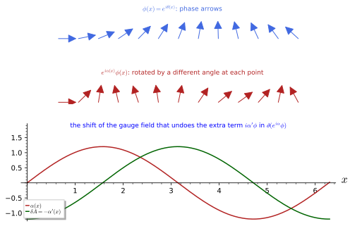
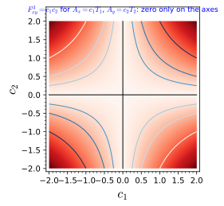
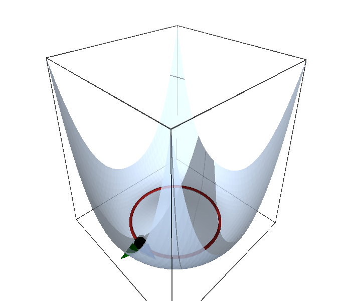
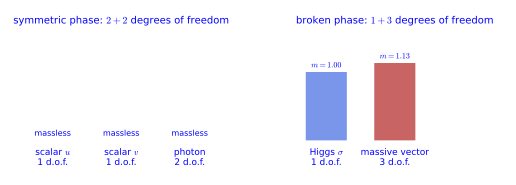
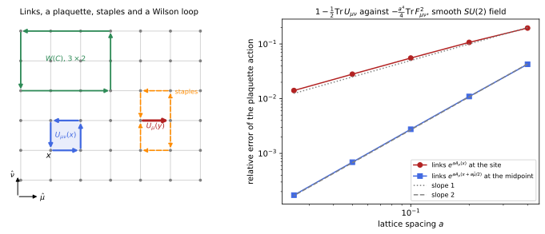
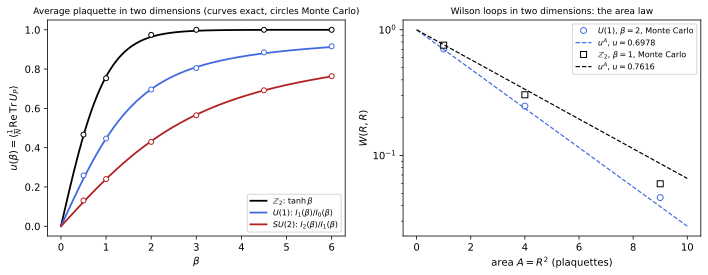
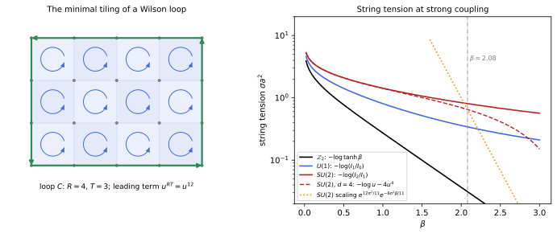
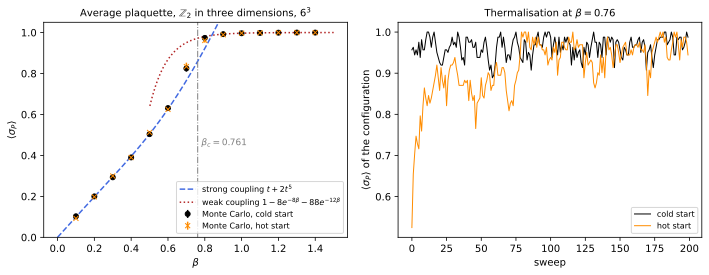

Gauge theories
A gauge theory makes a global symmetry local: the derivative is replaced by a covariant derivative containing a gauge field, whose curvature is the field strength. Electromagnetism is the abelian case and Yang-Mills theory the non-abelian one. A symmetry of the equations need not be a symmetry of the ground state, and when a gauge symmetry is broken spontaneously the gauge fields acquire masses: the Higgs mechanism. The chapter has three parts, gauge invariance, symmetry breaking and lattice gauge theory.
The first part starts from the phase rotation of a complex scalar, shows why making its angle position-dependent forces a new vector field on us, and builds electromagnetism from that requirement: the gauge field, the covariant derivative, the field strength and Maxwell’s action. It then replaces the phase rotations by the matrices of a non-abelian Lie group, and the same construction gives Yang-Mills theory, whose field strength contains a commutator and whose gauge fields interact with each other. The second part asks what happens when the lowest-energy state of a theory is less symmetric than its equations: the vacua form an orbit of the symmetry group, every broken generator gives a massless Goldstone boson, and when the broken symmetry is a gauge symmetry the Goldstone bosons are absorbed and the gauge bosons become massive. The third part puts the gauge field on a Euclidean lattice as parallel transporters along the links, shows that Wilson’s action tends to the Yang-Mills action, solves the \mathbb{Z}_2, U(1) and SU(2) theories in two dimensions and at strong coupling, where large Wilson loops obey the area law of confinement, and proves Elitzur’s theorem that a local symmetry cannot break spontaneously.
The chapter comes after quantum field theory and builds on it. Electromagnetism has already appeared in vector form in Classical electromagnetism and in covariant form in Complex and vector fields; quantum field theory has quantised the free fields, shown that a massive vector is consistent only if it acquires its mass through a Higgs mechanism (Definition 5 of Quantum field theory), quoted the running of the gauge coupling that makes Yang-Mills theory asymptotically free (Example 84 of Quantum field theory), and outlined the chiral anomaly (Definition 23 of Quantum field theory). This chapter supplies the classical gauge theories behind those statements: the gauge field and its covariant derivative, the Yang-Mills action, and the symmetry breaking that gives the gauge bosons their masses. The renormalisation chapter that follows uses both: the Ward identities of quantum electrodynamics rest on gauge invariance, and asymptotic freedom on the Yang-Mills theory built here.
Every statement is followed by three examples of increasing complexity and three exercises of increasing difficulty with folded solutions; each part ends with three integrative exercises. The conventions are those of the rest of the book: the signature is (+, -, -, -), so that Maxwell’s Lagrangian is -\tfrac14F_{\mu\nu}F^{\mu\nu} = \tfrac12(\vec E^2 - \vec B^2) and a vector mass term is +\tfrac12m^2A_\mu A^\mu; a field of charge q has the covariant derivative D_\mu = \partial_\mu + iqA_\mu; Lie algebra generators are anti-Hermitian, T_a = -\tfrac{i}{2}\sigma_a for SU(2), with \operatorname{Tr}(T_aT_b) = -\tfrac12\delta_{ab}; and the masses of scalar fluctuations are read from the second derivatives of the potential.
Gauge theories
A gauge theory makes a global symmetry local by introducing a connection, the gauge field, whose curvature is the field strength; electromagnetism is the abelian case and Yang-Mills theory the non-abelian one. This part has two sections. Abelian gauge invariance starts from the phase symmetry of a complex scalar, defines local symmetries, the gauge field, the covariant derivative and the field strength, and ends with Maxwell’s action. Yang-Mills theory repeats the construction for a non-abelian group, where the field strength acquires a commutator, the equations become nonlinear and a constant potential can carry a field strength; the Bianchi identity is the structural identity that every such field satisfies.
For more on this topic, see Aitchison and Hey (2024, secs. 2.4–2.6), Hamilton (2017, Ch. 5, Ch. 7), Năstase (2019, Ch. 27), Paganini (2023, Ch. 12), Pal (2015, Ch. 11) and Strocchi (2021, Ch. 29).
Abelian gauge invariance
A global phase rotation of a charged field is a symmetry; making its angle depend on position breaks the symmetry, and restoring it requires a new field, the gauge potential, whose own dynamics is electromagnetism. This section defines local symmetries, the covariant derivative, the abelian gauge field and its field strength, following Alvarez-Gaume and Vazquez-Mozo (2005, sec. 4.3) in our conventions, and it is the pattern that Kaluza-Klein theory derives from geometry in Part III. It starts from the gauge transformation of the potentials (Definition 11 of Classical electromagnetism) and the minimal coupling of a charged particle (Definition 12 of Classical electromagnetism) of the electromagnetism chapter, and shows that they are the abelian case of a general construction.
Global and local symmetries
A continuous symmetry of a Lagrangian was defined in Definition 17 of Classical field theory as a transformation of the fields depending on a parameter. The distinction that founds gauge theory is whether that parameter is a single number for the whole of spacetime or a function that may take a different value at each point. The definition names the two cases.
Definition 1 (Local symmetry) A symmetry (Definition 17 of Classical field theory) with a constant parameter is called global; it is local (a gauge symmetry) if the parameter is instead an arbitrary smooth function \alpha(x). A global symmetry relates different field configurations; a local symmetry relates different descriptions of the same physical configuration, as a change of coset representative does in Coset vielbeins.
Veriphy. Pending.
Lean. Pending.
Sage. Pending.
The simplest global symmetry is the phase rotation of a complex scalar, which we met as the source of a conserved particle number. It is the running example of the whole section, and the first example recalls why it is a symmetry.
Example 1 (The global U(1) of the complex scalar) \phi \mapsto e^{i\alpha}\phi with constant \alpha leaves \partial_\mu\bar\phi\,\partial^\mu\phi - m^2|\phi|^2 invariant (Example 71 of Classical field theory); its Noether charge is the particle number of Example 74 of Classical field theory.
Letting the angle depend on the point is the natural next step, and it fails for a reason worth understanding. The derivative of the rotated field contains the derivative of the angle, and that extra term spoils the invariance of the kinetic term.
Example 2 (The local phase rotation fails) With \alpha(x), \partial_\mu(e^{i\alpha}\phi) = e^{i\alpha}(\partial_\mu\phi + i\partial_\mu\alpha\,\phi), and the kinetic term picks up terms proportional to \partial_\mu\alpha (Exercise 23 of Classical field theory, Figure 1): derivatives compare the field at neighbouring points, whose phases have been rotated by different angles.
Local symmetries are not an exotic feature of electromagnetism: every field theory written on a manifold has one. The third example identifies coordinate invariance as a local symmetry and the Levi-Civita connection as its gauge field.
Example 3 (Coordinate changes as local symmetries) General coordinate transformations of a field theory on a manifold (Tensor fields) are local symmetries with the diffeomorphism as parameter, and the Levi-Civita connection is the gauge field that makes derivatives covariant (The covariant derivative): gauge symmetry and coordinate invariance are the same structure.

figures/gauge_covariant.sage.
Interactive figure (drag to rotate or zoom); the static version is above.
The interactive version above applies the rotation \alpha(x) = a\sin x to a field with a background gauge field and lets the amplitude a vary. The ordinary derivative of the rotated field changes with a, while the covariant derivative introduced below keeps its modulus; the first exercise computes the change of the free Lagrangian exactly.
Exercise 1 (The change of the free Lagrangian) Compute, with Sage in 1 + 1 dimensions, the change of \mathcal{L} = \partial_\mu\bar\phi\,\partial^\mu\phi - m^2|\phi|^2 under \phi \mapsto e^{i\alpha(x)}\phi, and express it through the Noether current j^\mu = i(\bar\phi\,\partial^\mu\phi - \phi\,\partial^\mu\bar\phi).
Expanding (\partial_\mu\bar\phi - i\partial_\mu\alpha\,\bar\phi)(\partial^\mu\phi + i\partial^\mu\alpha\,\phi) gives \delta\mathcal{L} = -\partial_\mu\alpha\,j^\mu + \partial_\mu\alpha\,\partial^\mu\alpha\,|\phi|^2 , a term linear in \partial\alpha coupled to the current and a quadratic one; the mass term is untouched. Both vanish for constant \alpha, as they must. These two terms are exactly what the coupling -qA_\mu j^\mu and the seagull term q^2A_\mu A^\mu|\phi|^2 of Example 7 cancel.
t, x, m = var("t x m", domain="real")
u, v, al = [function(n)(t, x) for n in ["u", "v", "al"]]
X = [t, x]; eta = [1, -1]
phi = u + I * v; phib = u - I * v
L = lambda f, fb: sum(eta[k] * diff(fb, X[k]) * diff(f, X[k]) for k in range(2)) - m^2 * fb * f
dL = (L(exp(I * al) * phi, exp(-I * al) * phib) - L(phi, phib)).simplify_full()
j = [I * eta[k] * (phib * diff(phi, X[k]) - phi * diff(phib, X[k])) for k in range(2)] # j^mu, index raised
dal2 = sum(eta[k] * diff(al, X[k])^2 for k in range(2)) # d_mu alpha d^mu alpha
pred = -sum(diff(al, X[k]) * j[k] for k in range(2)) + dal2 * phib * phi
print("change of the Lagrangian under the local rotation:")
print(dL.expand())
print("[PASS] delta L = -d_mu alpha j^mu + (d_mu alpha d^mu alpha) |phi|^2:", bool((dL - pred).expand().simplify_full() == 0))
print("[PASS] the mass term m^2 |phi|^2 does not change (only derivatives see alpha(x)):", bool((exp(-I * al) * phib * exp(I * al) * phi - phib * phi).simplify_full() == 0))Output:
change of the Lagrangian under the local rotation:
u(t, x)^2*diff(al(t, x), t)^2 + v(t, x)^2*diff(al(t, x), t)^2 - u(t, x)^2*diff(al(t, x), x)^2 - v(t, x)^2*diff(al(t, x), x)^2 - 2*v(t, x)*diff(al(t, x), t)*diff(u(t, x), t) + 2*v(t, x)*diff(al(t, x), x)*diff(u(t, x), x) + 2*u(t, x)*diff(al(t, x), t)*diff(v(t, x), t) - 2*u(t, x)*diff(al(t, x), x)*diff(v(t, x), x)
[PASS] delta L = -d_mu alpha j^mu + (d_mu alpha d^mu alpha) |phi|^2: True
[PASS] the mass term m^2 |phi|^2 does not change (only derivatives see alpha(x)): TrueThe same failure looks different in real components, and seeing it there makes clear that nothing depends on the use of complex numbers. The second exercise rewrites the global phase rotation as a rotation of two real fields.
Exercise 2 (The phase rotation in real components) Write \phi = (u + iv)/\sqrt2 with real u, v. Show that \phi \mapsto e^{i\alpha}\phi is the rotation of (u, v) by the angle \alpha, that the free Lagrangian is \tfrac12(\partial u)^2 + \tfrac12(\partial v)^2 - \tfrac12m^2(u^2 + v^2), and find the terms that a position-dependent angle adds to it.
e^{i\alpha}(u + iv) = (u\cos\alpha - v\sin\alpha) + i(u\sin\alpha + v\cos\alpha), the rotation matrix acting on (u, v); and |\partial\phi|^2 = \tfrac12[(\partial u)^2 + (\partial v)^2], |\phi|^2 = \tfrac12(u^2 + v^2), which are rotation invariant for constant \alpha. With \alpha(x), the derivative of the rotated pair is the rotated derivative plus \partial_\mu\alpha times the rotated (-v, u), so the kinetic term gains \partial_\mu\alpha\,(u\,\partial^\mu v - v\,\partial^\mu u) + \tfrac12\partial_\mu\alpha\,\partial^\mu\alpha\,(u^2 + v^2): the same two terms as in Exercise 1, since j^\mu = v\,\partial^\mu u - u\,\partial^\mu v in these components.
Quantum mechanics already contains a local phase symmetry once the electromagnetic potentials are included. The third exercise works it out for the Schrödinger field, where the coupling to \Phi and \vec A is the familiar minimal substitution.
Exercise 3 (The Schrödinger field) For \mathcal{L} = i\bar\psi\,\partial_t\psi - \tfrac{1}{2M}\nabla\bar\psi\cdot\nabla\psi, show that \psi \mapsto e^{iq\alpha(t, \vec x)}\psi is not a symmetry, and that replacing \partial_t \to \partial_t + iq\Phi and \nabla \to \nabla - iq\vec A with \Phi \mapsto \Phi - \partial_t\alpha, \vec A \mapsto \vec A + \nabla\alpha restores it. Relate this to D_\mu = \partial_\mu + iqA_\mu with A_\mu = (\Phi, -\vec A).
Under the rotation, \partial_t\psi \mapsto e^{iq\alpha}(\partial_t\psi + iq\partial_t\alpha\,\psi) and \nabla\psi \mapsto e^{iq\alpha}(\nabla\psi + iq\nabla\alpha\,\psi), so \mathcal{L} gains -q\partial_t\alpha|\psi|^2 and gradient terms. With the substitution, (\partial_t + iq\Phi)\psi becomes e^{iq\alpha}(\partial_t\psi + iq\partial_t\alpha\,\psi + iq\Phi\psi - iq\partial_t\alpha\,\psi) = e^{iq\alpha}(\partial_t + iq\Phi)\psi, and likewise (\nabla - iq\vec A)\psi transforms by the phase alone; every term of the Lagrangian is then invariant. The Lagrangian contains -q\Phi|\psi|^2, the potential energy of a charge q, and \tfrac{1}{2M}|(-i\nabla - q\vec A)\psi|^2, the kinetic energy with the momentum \vec p - q\vec A. Since A_0 = \Phi and A_i = -A^i, D_0 = \partial_t + iq\Phi and D_i = \partial_i - iqA^i: these are the components of Equation 1, and the transformation of (\Phi, \vec A) is A_\mu \mapsto A_\mu - \partial_\mu\alpha.
The gauge field and the covariant derivative
The extra term i\partial_\mu\alpha\,\phi can be cancelled only by something that shifts by \partial_\mu\alpha when the phase is rotated. That something is a vector field with its own transformation law, defined next; its shift is the gauge transformation.
Definition 2 (Abelian gauge field) An abelian gauge field is a vector field A_\mu (Definition 7 of Classical field theory) with the gauge transformation A_\mu \mapsto A_\mu - \partial_\mu\alpha whenever the charged fields are rotated by e^{i\alpha(x)} (the sign is a convention; Alvarez-Gaume and Vazquez-Mozo (2005, eq. 4.70) writes A_\mu \to A_\mu + \tfrac1e\partial_\mu\alpha with the opposite sign of the charge). It is the gauge potential of a connection on a principal U(1)-bundle (Definition 19 of Homogeneous spaces and fibre bundles), and Equation 4 of Homogeneous spaces and fibre bundles for G = U(1) is this transformation.
Veriphy. Pending.
Lean. Pending.
Sage. Pending.
The electromagnetic potential is the gauge field of the phase symmetry, and its familiar gauge freedom is the transformation just defined. The first example translates between the four-vector and the potentials (\Phi, \vec A) of vector calculus.
Example 4 (The electromagnetic potential) A_\mu = (\Phi, -\vec A) of Example 24 of Classical field theory is the gauge field of electromagnetism; the familiar freedom \vec A \mapsto \vec A + \nabla\lambda, \Phi \mapsto \Phi - \partial_t\lambda is A_\mu \mapsto A_\mu - \partial_\mu\lambda, the gauge transformation with \alpha = \lambda (up to the charge).
Gauge fields also arise from geometry, where the gauge transformation is a change of coordinates. The second example anticipates the off-diagonal metric components of a five-dimensional metric.
Example 5 (The Kaluza-Klein gauge field) In Part III the off-diagonal metric components g_{\mu 5} = A_\mu transform under the coordinate change y \mapsto y + \alpha(x) of the fifth coordinate exactly as Definition 2 prescribes: the U(1) gauge symmetry is a remnant of five-dimensional coordinate invariance.
A gauge field can also live on a curved space and be defined only chart by chart. The third example finds one on the sphere, in the change of representative of the coset SU(2)/U(1).
Example 6 (The R-connection of a coset) On S^2 = SU(2)/U(1) the one-form e^3 = \cos\theta\,d\varphi shifts by d\psi under a change of representative (Example 44 of Homogeneous spaces and fibre bundles): it is an abelian gauge field on the sphere, the monopole potential of The Hopf fibration.
The gauge freedom of the potentials is used constantly to simplify computations, and the physical fields must not notice it. The first exercise checks that the electric and magnetic fields are gauge invariant.
Exercise 4 (Gauge invariance of \vec E and \vec B) Show that \vec E = -\nabla\Phi - \partial_t\vec A and \vec B = \nabla \times \vec A are unchanged by \vec A \mapsto \vec A + \nabla\lambda, \Phi \mapsto \Phi - \partial_t\lambda.
\vec B \mapsto \vec B + \nabla \times \nabla\lambda = \vec B, since the curl of a gradient vanishes. \vec E \mapsto - \nabla\Phi + \nabla\partial_t\lambda - \partial_t\vec A - \partial_t\nabla\lambda = \vec E, since the time and space derivatives of \lambda commute. Both statements are the gauge invariance of F_{\mu\nu} of Proposition 1, whose components are \vec E and \vec B (Exercise 11).
A gauge is chosen by imposing a condition on the potential and solving for the gauge parameter that achieves it. The second exercise brings a concrete potential to the Coulomb gauge.
Exercise 5 (Reaching the Coulomb gauge) For \vec A = (tx^2, xy, 0) and \Phi = 0, find \lambda with \nabla\cdot(\vec A + \nabla\lambda) = 0, give the new potentials, and check with Sage that \vec E and \vec B are unchanged.
\nabla\cdot\vec A = 2tx + x, so \lambda must solve \nabla^2\lambda = -(2t + 1)x; the choice \lambda = -tx^3/3 - x^3/6 works. The new potentials are \vec A' = (-x^2/2, xy, 0), divergence-free, and \Phi' = -\partial_t\lambda = x^3/3: the Coulomb gauge has moved the time dependence from \vec A into \Phi. The fields are \vec E = (-x^2, 0, 0) and \vec B = (0, 0, y) in both gauges.
t, x, y, z = var("t x y z", domain="real")
Av = vector(SR, [t * x^2, x * y, 0]); Phi = SR(0)
div = lambda W: sum(diff(W[i], [x, y, z][i]) for i in range(3))
grad = lambda f: vector(SR, [diff(f, w) for w in (x, y, z)])
curl = lambda W: vector(SR, [diff(W[2], y) - diff(W[1], z), diff(W[0], z) - diff(W[2], x), diff(W[1], x) - diff(W[0], y)])
E = lambda P, W: -grad(P) - diff(W, t)
print("div A =", div(Av))
lam = -t * x^3 / 3 - x^3 / 6
print("lambda =", lam, "; its Laplacian =", div(grad(lam)), "= -div A")
A2 = Av + grad(lam); Phi2 = Phi - diff(lam, t)
print("new potentials: A' =", A2, "; Phi' =", Phi2)
print("[PASS] the new vector potential is divergence-free:", bool(div(A2) == 0))
print("[PASS] E and B are unchanged:", bool(E(Phi2, A2) == E(Phi, Av)) and bool(curl(A2) == curl(Av)))
print("E =", E(Phi, Av), "; B =", curl(Av))Output:
div A = 2*t*x + x
lambda = -1/3*t*x^3 - 1/6*x^3 ; its Laplacian = -2*t*x - x = -div A
new potentials: A' = (-1/2*x^2, x*y, 0) ; Phi' = 1/3*x^3
[PASS] the new vector potential is divergence-free: True
[PASS] E and B are unchanged: True
E = (-x^2, 0, 0) ; B = (0, 0, y)A potential with vanishing field strength is not always a gauge transform of zero: the topology of the space can prevent it. The third exercise finds the obstruction on a circle, where it is measured by the holonomy.
Exercise 6 (Flat potentials and holonomy) Show that A = d f has F = dA = 0. On the circle with angle \theta, show that A = c\,d\theta has F = 0 but is not df for a function f on the circle unless c = 0, and that the phase e^{iq\oint A} = e^{2\pi iqc} acquired by a charge q transported once around is gauge invariant. When can A = c\,d\theta be removed by a gauge transformation with e^{iq\alpha} single-valued?
d(df) = 0. On the circle every two-form vanishes, so F = 0 for every A; but c\,d\theta = df would require f = c\theta + \text{const}, which is not a function on the circle unless c = 0, since \oint df = 0 while \oint c\,d\theta = 2\pi c. Under A \mapsto A - d\alpha with \alpha a function on the circle, \oint A is unchanged, so the holonomy e^{iq\oint A} is gauge invariant. If only e^{iq\alpha} needs to be single-valued, \alpha = c\theta is allowed when qc \in \mathbb{Z}, and then it removes A; this is the case where the holonomy is 1. Otherwise the flat potential is physical: it is the Aharonov-Bohm phase.
With the gauge field in hand the derivative can be repaired. The covariant derivative adds to \partial_\mu a multiple of the gauge field chosen so that the two shifts cancel, and the definition records the result.
Definition 3 (Covariant derivative) The covariant derivative of a field of charge q is D_\mu\phi = \partial_\mu\phi + iqA_\mu\phi , \tag{1} which transforms as the field does, D_\mu(e^{iq\alpha}\phi) = e^{iq\alpha}D_\mu\phi, when A_\mu \mapsto A_\mu - \partial_\mu\alpha: the extra term iq\partial_\mu\alpha\,\phi from the derivative is cancelled by the shift of A_\mu (Proposition 1, Figure 1). It is the covariant derivative of Definition 52 of Differential geometry for the U(1) connection, with \Gamma replaced by iqA.
Veriphy. Pending.
Lean. Pending.
Sage. Pending.
The first use of the covariant derivative is to make the complex scalar gauge invariant. Replacing \partial_\mu by D_\mu in its Lagrangian gives scalar electrodynamics, whose new terms are the couplings to the gauge field.
Example 7 (Scalar electrodynamics) Replacing \partial_\mu by D_\mu in the complex scalar Lagrangian gives \overline{D_\mu\phi}\,D^\mu\phi - m^2|\phi|^2, gauge invariant (Exercise 7); expanding, the terms linear in A_\mu are -qA_\mu j^\mu with j^\mu the Noether current of Example 74 of Classical field theory, and the quadratic term q^2A_\mu A^\mu|\phi|^2 is the seagull coupling.
The same replacement applied to the Dirac field gives quantum electrodynamics. The coupling is again the current times the potential, here without a quadratic term since the Lagrangian is first order in derivatives.
Example 8 (Quantum electrodynamics) \bar\psi(i\gamma^\mu D_\mu - m)\psi with D_\mu = \partial_\mu + ieA_\mu is the Dirac Lagrangian coupled to electromagnetism; the coupling -e\bar\psi\gamma^\mu\psi A_\mu is the electron current times the potential, the vertex of quantum electrodynamics.
Different fields can carry different charges, and the charge is the integer or real number that tells how the field responds to the phase rotation. The third example collects the rules for products and neutral fields.
Example 9 (Fields of different charges) A field of charge q transforms with e^{iq\alpha} and couples through iqA_\mu; the product of fields of charges q_1, q_2 has charge q_1 + q_2, and a neutral field has D_\mu = \partial_\mu. In Part III the charge is the momentum n/R around the fifth dimension, automatically an integer multiple of a unit.
The covariant derivative of a field has a counterpart for a point particle, where the gauge field enters the momentum. The fourth example takes the classical charged particle of Maggiore (2023, sec. 8.6.2) and shows which of its momenta is gauge invariant.
Example 10 (Canonical and kinetic momentum) A particle of mass m and charge q in the potential A_\mu = (\Phi, -\vec A) has the action S = \int(-m\sqrt{1 - v^2} - q\Phi + q\vec v\cdot\vec A)\,dt = -m\int ds - q\int A_\mu dx^\mu. Its canonical momentum is \vec P = \partial L/\partial\vec v = \vec p + q\vec A with \vec p = m\vec v/\sqrt{1 - v^2} (Maggiore 2023, eq. 8.78). Under A_\mu \to A_\mu - \partial_\mu\alpha the action changes by q\int d\alpha, a boundary term, so the equations of motion are gauge invariant, while \vec A \mapsto \vec A + \nabla\alpha shifts \vec P by q\nabla\alpha and only the kinetic momentum \vec p = \vec P - q\vec A is physical. In a field theory -i\nabla plays the role of \vec P, and -iD_i = -i\nabla - q\vec A is the kinetic momentum, as in Exercise 3 and Exercise 41.
Veriphy. Pending.
Lean. Pending.
Sage. Pending.
The covariance of the covariant derivative is a short computation that is worth doing once with full care. The first exercise does it with Sage, together with the gauge invariance of the scalar Lagrangian and the identification of the current.
Exercise 7 (Scalar electrodynamics with Sage) Check that D_\mu\phi transforms covariantly, that \overline{D\phi}\cdot D\phi is gauge invariant, and read off the current coupled to A_\mu.
t, x = var("t x", domain="real")
u, v, al, A0, A1 = [function(n)(t, x) for n in ["u", "v", "al", "A0", "A1"]]
phi = u + I * v; phib = u - I * v
X = [t, x]; A = [A0, A1]; eta = [1, -1]
D = lambda f, Af: [diff(f, X[mu]) + I * Af[mu] * f for mu in range(2)]
Db = lambda f, Af: [diff(f, X[mu]) - I * Af[mu] * f for mu in range(2)]
phi_g = exp(I * al) * phi; phib_g = exp(-I * al) * phib
A_g = [A[mu] - diff(al, X[mu]) for mu in range(2)]
print("D_mu phi transforms covariantly:", all(bool((D(phi_g, A_g)[mu] - exp(I * al) * D(phi, A)[mu]).simplify_full() == 0) for mu in range(2)))
L = lambda f, fb, Af: sum(eta[mu] * Db(fb, Af)[mu] * D(f, Af)[mu] for mu in range(2))
print("the kinetic Lagrangian (D phi)-bar . D phi is gauge invariant:", bool((L(phi_g, phib_g, A_g) - L(phi, phib, A)).simplify_full() == 0))
a0, a1 = var("a0 a1", domain="real")
Lexp = L(phi, phib, [a0, a1]).expand()
j = [diff(Lexp, av).subs({a0: 0, a1: 0}).simplify_full() for av in (a0, a1)]
jN = [I * eta[mu] * (phib * diff(phi, X[mu]) - phi * diff(phib, X[mu])) for mu in range(2)] # the Noether current j^mu = i(phibar d^mu phi - phi d^mu phibar)
print("the coefficient of A_mu in the expanded Lagrangian (the current coupled to A):", [jj.expand() for jj in j])
print("it is -j^mu with j^mu the Noether current i(phibar d^mu phi - phi d^mu phibar) = 2(v d^mu u - u d^mu v):", all(bool((j[mu] + jN[mu]).expand() == 0) for mu in range(2)), "; the A^2 'seagull' term is left over")Output:
D_mu phi transforms covariantly: True
the kinetic Lagrangian (D phi)-bar . D phi is gauge invariant: True
the coefficient of A_mu in the expanded Lagrangian (the current coupled to A): [-2*v(t, x)*diff(u(t, x), t) + 2*u(t, x)*diff(v(t, x), t), 2*v(t, x)*diff(u(t, x), x) - 2*u(t, x)*diff(v(t, x), x)]
it is -j^mu with j^mu the Noether current i(phibar d^mu phi - phi d^mu phibar) = 2(v d^mu u - u d^mu v): True ; the A^2 'seagull' term is left overThe covariant derivative obeys a Leibniz rule in which the charges add, and this is what makes the charges of composite fields well defined. The second exercise proves it.
Exercise 8 (Charges of products) Let \phi_1, \phi_2 have charges q_1, q_2. Show that \bar\phi_1 has charge -q_1, with D_\mu\bar\phi_1 = \overline{D_\mu\phi_1}, that D_\mu(\phi_1\phi_2) = (D_\mu\phi_1)\phi_2 + \phi_1D_\mu\phi_2 when the product is given charge q_1 + q_2, and conclude that \bar\phi\,\phi is neutral and \partial_\mu(\bar\phi\,\phi) = \overline{D_\mu\phi}\,\phi + \bar\phi\,D_\mu\phi.
\bar\phi_1 \mapsto e^{-iq_1\alpha}\bar\phi_1, so its charge is -q_1 and D_\mu\bar\phi_1 = \partial_\mu\bar\phi_1 - iq_1A_\mu\bar\phi_1 = \overline{D_\mu\phi_1} for real A_\mu. The product transforms with e^{i(q_1 + q_2)\alpha}, and \partial_\mu(\phi_1\phi_2) + i(q_1 + q_2)A_\mu\phi_1\phi_2 = (\partial_\mu\phi_1 + iq_1A_\mu\phi_1)\phi_2 + \phi_1(\partial_\mu\phi_2 + iq_2A_\mu\phi_2). For \phi_1 = \bar\phi, \phi_2 = \phi the total charge is 0, so D_\mu = \partial_\mu on the product and the Leibniz rule gives the last identity: gauge-invariant composites are differentiated with ordinary derivatives.
The Dirac Lagrangian becomes gauge invariant in the same way, and the computation also fixes the sign of the coupling and shows that the density coupled to A_0 is positive. The third exercise does it in two dimensions with explicit gamma matrices.
Exercise 9 (Gauge invariance of the Dirac Lagrangian) In 1 + 1 dimensions with \gamma^0 = \sigma_1, \gamma^1 = i\sigma_2, check the Clifford relations, show with Sage that \bar\psi(i\gamma^\mu D_\mu - m)\psi with D_\mu = \partial_\mu + iqA_\mu is invariant under \psi \mapsto e^{iq\alpha}\psi, A_\mu \mapsto A_\mu - \partial_\mu\alpha, and read off the coupling to A_\mu.
(\gamma^0)^2 = 1, (\gamma^1)^2 = -1 and \gamma^0\gamma^1 + \gamma^1\gamma^0 = 0, so \{\gamma^\mu, \gamma^\nu\} = 2\eta^{\mu\nu}. The phase cancels between \bar\psi = \psi^\dagger\gamma^0 and \psi, and D_\mu is covariant, so the Lagrangian is invariant. The terms linear in A are -q\bar\psi\gamma^\mu\psi A_\mu; the density \bar\psi\gamma^0\psi = \psi^\dagger\psi is positive, so a positive q means a positive charge density sourcing \vec E in Gauss’s law.
t, x, m, q = var("t x m q", domain="real")
a1, b1, a2, b2, al, A0, A1 = [function(n)(t, x) for n in ["a1", "b1", "a2", "b2", "al", "A0", "A1"]]
X = [t, x]; eta = diagonal_matrix([1, -1])
s1 = matrix(SR, [[0, 1], [1, 0]]); s2 = matrix(SR, [[0, -I], [I, 0]])
gam = [s1, I * s2]
print("[PASS] Clifford algebra {gamma^mu, gamma^nu} = 2 eta^{mu nu}:", all(gam[a] * gam[b] + gam[b] * gam[a] == 2 * eta[a, b] * identity_matrix(2) for a in range(2) for b in range(2)))
psi = vector(SR, [a1 + I * b1, a2 + I * b2]); psic = vector(SR, [a1 - I * b1, a2 - I * b2])
def L(ps, psc, A):
psibar = psc * gam[0]
Dpsi = [diff(ps, X[k]) + I * q * A[k] * ps for k in range(2)]
return psibar * (sum((I * gam[k] * Dpsi[k] for k in range(2)), vector(SR, [0, 0])) - m * ps)
A = [A0, A1]
Ag = [A0 - diff(al, t), A1 - diff(al, x)]
dL = (L(exp(I * q * al) * psi, exp(-I * q * al) * psic, Ag) - L(psi, psic, A)).simplify_full()
print("[PASS] the gauged Dirac Lagrangian is gauge invariant:", bool(dL == 0))
c0, c1 = var("c0 c1", domain="real")
Lc = L(psi, psic, [c0, c1]).expand()
coup = [diff(Lc, c) for c in (c0, c1)]
cur = [(psic * gam[0]) * (gam[k] * psi) for k in range(2)]
print("coefficient of A_0, A_1:", [cc.simplify_full() for cc in coup])
print("[PASS] the coupling is -q psibar gamma^mu psi A_mu:", all(bool((coup[k] + q * cur[k]).simplify_full() == 0) for k in range(2)))
print("psibar gamma^0 psi = psi^dagger psi =", cur[0].expand(), "(a positive density)")Output:
[PASS] Clifford algebra {gamma^mu, gamma^nu} = 2 eta^{mu nu}: True
[PASS] the gauged Dirac Lagrangian is gauge invariant: True
coefficient of A_0, A_1: [-q*a1(t, x)^2 - q*a2(t, x)^2 - q*b1(t, x)^2 - q*b2(t, x)^2, q*a1(t, x)^2 - q*a2(t, x)^2 + q*b1(t, x)^2 - q*b2(t, x)^2]
[PASS] the coupling is -q psibar gamma^mu psi A_mu: True
psibar gamma^0 psi = psi^dagger psi = a1(t, x)^2 + a2(t, x)^2 + b1(t, x)^2 + b2(t, x)^2 (a positive density)The field strength and Maxwell’s action
A gauge field is a new dynamical field and needs its own kinetic term. Its building block must be gauge invariant, and the antisymmetrised derivative of A_\mu is the natural candidate, since the shift \partial_\mu\alpha drops out of it; the definition introduces it together with Maxwell’s action.
Definition 4 (Maxwell action) The field strength F_{\mu\nu} = \partial_\mu A_\nu - \partial_\nu A_\mu (Definition 8 of Classical field theory) is gauge invariant, because the second derivatives of \alpha commute (Proposition 1), and it is the commutator of covariant derivatives, [D_\mu, D_\nu]\phi = iqF_{\mu\nu}\phi. The Maxwell action S = -\frac14\int d^4x\,F_{\mu\nu}F^{\mu\nu} = \frac12\int d^4x\,(\vec E^2 - \vec B^2) \tag{2} (Alvarez-Gaume and Vazquez-Mozo 2005, eq. 4.62) is the unique gauge-invariant quadratic action for A_\mu with at most two derivatives, and its Euler-Lagrange equations are \partial_\mu F^{\mu\nu} = 0 (Example 63 of Classical field theory).
Veriphy. Pending.
Lean. Pending.
Sage. Pending.
Coupling the Maxwell action to charged matter turns the field equations into Maxwell’s equations with sources. The first example reads them off and shows that gauge invariance makes the conservation of the current automatic.
Example 11 (Maxwell’s equations) \partial_\mu F^{\mu\nu} = j^\nu with the current of the charged matter are Gauss’s and the Ampère-Maxwell laws, and dF = 0 the remaining two (Example 28 of Classical field theory); the conservation \partial_\nu j^\nu = 0 follows from the antisymmetry of F and is the Noether conservation of Noether currents, which gauge invariance makes automatic.
A mass term for the gauge field would be the simplest addition to the Maxwell action, and gauge invariance forbids it. The second example records this, which is the problem the Higgs mechanism of the second part solves.
Example 12 (No mass term) m^2A_\mu A^\mu is not gauge invariant, so a gauge field is massless: the photon has no mass, and giving a mass to a gauge boson requires the Higgs mechanism of Section 1.2.2. The mass term is what the Kaluza-Klein modes of the gauge field acquire in Part III, through exactly that mechanism.
On a sphere the field strength can be well defined while the potential is not, and the mismatch between charts quantises the charges. The third example is the magnetic monopole on S^2.
Example 13 (The monopole on the sphere) The Hopf potential A = \cos\theta\,d\varphi has F = -\sin\theta\,d\theta \wedge d\varphi (Definition 23 of Homogeneous spaces and fibre bundles), a radial magnetic field of total flux -4\pi; the gauge field is defined only chart by chart, with the transition function e^{2i\varphi} (Example 60 of Homogeneous spaces and fibre bundles), and the charge q of any field must make e^{2iq\varphi} single-valued: Dirac’s quantisation condition.
The statement that the field strength is the curvature of the covariant derivative is the computational heart of the definition. The first exercise derives it by expanding the commutator.
Exercise 10 (The commutator of covariant derivatives) Show that [D_\mu, D_\nu]\phi = iqF_{\mu\nu}\phi.
D_\mu D_\nu\phi = \partial_\mu\partial_\nu\phi + iq\partial_\mu(A_\nu\phi) + iqA_\mu\partial_\nu\phi - q^2A_\mu A_\nu\phi; antisymmetrising in \mu\nu, the second derivatives of \phi and the A_\mu A_\nu term cancel, the terms iqA_\nu\partial_\mu\phi + iqA_\mu\partial_\nu\phi are symmetric and cancel, and what remains is iq(\partial_\mu A_\nu - \partial_\nu A_\mu)\phi = iqF_{\mu\nu}\phi: the field strength is the curvature of the U(1) connection (Definition 21 of Homogeneous spaces and fibre bundles).
The sign of the Maxwell Lagrangian depends on the signature, and in (+, -, -, -) it is the minus sign that makes the electric energy positive. The second exercise checks the identity with \vec E and \vec B for a general potential.
Exercise 11 (Maxwell’s Lagrangian in terms of \vec E and \vec B) With A^\mu = (\Phi, \vec A), A_\mu = (\Phi, -\vec A), \vec E = -\nabla\Phi - \partial_t\vec A and \vec B = \nabla\times\vec A, show with Sage that F^{i0} = E^i, F_{12} = -B^3 (and cyclically), and -\tfrac14F_{\mu\nu}F^{\mu\nu} = \tfrac12(\vec E^2 - \vec B^2).
F_{0i} = \partial_tA_i - \partial_iA_0 = -\partial_tA^i - \partial_i\Phi = E^i, and raising one time and one space index gives F^{i0} = -F^{0i} = F_{0i} = E^i. F_{12} = \partial_1A_2 - \partial_2A_1 = -(\partial_1A^2 - \partial_2A^1) = -B^3. In F_{\mu\nu}F^{\mu\nu} the six mixed components contribute 2\sum_i F_{0i}F^{0i} = -2\vec E^2 and the spatial ones 2\sum_{i<j}F_{ij}^2 = 2\vec B^2, so -\tfrac14F_{\mu\nu}F^{\mu\nu} = \tfrac12(\vec E^2 - \vec B^2).
t, x, y, z = var("t x y z", domain="real"); X = [t, x, y, z]
Phi, Ax, Ay, Az = [function(n)(t, x, y, z) for n in ["Phi", "Ax", "Ay", "Az"]]
eta = diagonal_matrix([1, -1, -1, -1])
Aup = vector(SR, [Phi, Ax, Ay, Az]); Adn = eta * Aup
F = matrix(SR, 4, 4, lambda m, n: diff(Adn[n], X[m]) - diff(Adn[m], X[n]))
Fup = eta * F * eta
lag = -sum(F[m, n] * Fup[m, n] for m in range(4) for n in range(4)) / 4
Av = vector(SR, [Ax, Ay, Az])
E = -vector(SR, [diff(Phi, w) for w in (x, y, z)]) - diff(Av, t)
B = vector(SR, [diff(Az, y) - diff(Ay, z), diff(Ax, z) - diff(Az, x), diff(Ay, x) - diff(Ax, y)])
print("[PASS] -1/4 F_{mu nu} F^{mu nu} = (E^2 - B^2)/2:", bool((lag - (E * E - B * B) / 2).expand() == 0))
print("[PASS] F^{i0} = E^i (the electric field sits in the time column):", all(bool((Fup[i + 1, 0] - E[i]).expand() == 0) for i in range(3)))
print("[PASS] F_{12} = -B^3 and its cyclic partners:", bool((F[1, 2] + B[2]).expand() == 0) and bool((F[2, 3] + B[0]).expand() == 0) and bool((F[3, 1] + B[1]).expand() == 0))Output:
[PASS] -1/4 F_{mu nu} F^{mu nu} = (E^2 - B^2)/2: True
[PASS] F^{i0} = E^i (the electric field sits in the time column): True
[PASS] F_{12} = -B^3 and its cyclic partners: TrueThe quantisation of charge in the presence of a monopole is the most striking consequence of a gauge field that exists only chart by chart. The third exercise derives Dirac’s condition.
Exercise 12 (Dirac quantisation) On the sphere with the monopole potential A = g\cos\theta\,d\varphi of charge g, show that a field of charge q is well defined on the overlap of the two charts only if 2qg \in \mathbb{Z}.
The regular potentials on the two charts are A_\pm = g(\cos\theta \mp 1)\,d\varphi, differing by 2g\,d\varphi = d(2g\varphi), so the transition function is e^{2iqg\varphi} (Example 92 of Homogeneous spaces and fibre bundles); it must return to itself after \varphi \to \varphi + 2\pi, which requires 2qg \in \mathbb{Z}. The Chern number of Definition 24 of Homogeneous spaces and fibre bundles is 2g in these units, an integer, and the charges are quantised in units of 1/2g.
Maxwell’s equations have a source, and the source enters the action through a coupling to the potential, which is not gauge invariant term by term. The fourth exercise shows that gauge invariance of the coupling and conservation of the current are the same condition (Maggiore 2023, sec. 8.6.2).
Exercise 13 (Gauge invariance requires a conserved current) For an external current j^\mu, show that S = \int d^4x\,(-\tfrac14F_{\mu\nu}F^{\mu\nu} - A_\mu j^\mu) is invariant under A_\mu \to A_\mu - \partial_\mu\alpha for all gauge functions \alpha of compact support if and only if \partial_\mu j^\mu = 0. Derive its field equations and show that they force \partial_\mu j^\mu = 0 independently.
F_{\mu\nu} is invariant (Proposition 1) and the coupling changes by \int\partial_\mu\alpha\,j^\mu = -\int\alpha\,\partial_\mu j^\mu after integration by parts, the boundary term vanishing for compactly supported \alpha (Maggiore 2023, eq. 8.75). This vanishes for all \alpha exactly when \partial_\mu j^\mu = 0. The Euler-Lagrange equations are \partial_\mu F^{\mu\nu} = j^\nu (Example 11), and \partial_\nu\partial_\mu F^{\mu\nu} = 0 by antisymmetry: a non-conserved source is inconsistent with Maxwell’s equations, for the same reason that it spoils gauge invariance.
Veriphy. Pending.
Lean. Pending.
Sage. Pending.
The gauge invariance of the field strength is the one structural fact on which the whole abelian theory rests. It is an identity in the derivatives of the potential and of the gauge parameter, and it holds because mixed second derivatives commute; the proposition states it in that form.
Proposition 1 (Gauge invariance of the abelian field strength) F_{\mu\nu} is unchanged by A_\nu \to A_\nu + \partial_\nu\alpha when \partial_\mu\partial_\nu\alpha = \partial_\nu\partial_\mu\alpha, as an identity in the derivatives of A and \alpha; the covariant derivative D_\mu\phi transforms like \phi (Exercise 7).
Veriphy. Pending.
Lean. An identity in the jet variables.
/-- `F_{μν} = ∂_μ A_ν − ∂_ν A_μ` is invariant under `A_ν → A_ν + ∂_ν ε` when `∂_μ ∂_ν ε = ∂_ν ∂_μ ε`. -/
theorem abelian_F_invariant (dA : Fin 4 → Fin 4 → ℝ) (ddε : Fin 4 → Fin 4 → ℝ) (hsymm : ∀ μ ν, ddε μ ν = ddε ν μ)
(μ ν : Fin 4) : (dA μ ν + ddε μ ν) - (dA ν μ + ddε ν μ) = dA μ ν - dA ν μKaluzaKlein.FieldTheory.abelian_F_invariant in KaluzaKlein/Foundations/FieldTheory.lean, namespace KaluzaKlein.FieldTheory
Sage. The covariance of D_\mu\phi is checked by exact computation in Sage (figures/gauge_covariant.sage).
A concrete potential and gauge parameter show the cancellation term by term. The first example uses a two-dimensional field with a non-polynomial gauge parameter, so that each derivative produces several terms.
Example 14 (An explicit cancellation) In the (t, x) plane take A_t = 0, A_x = tx, so F_{tx} = \partial_tA_x - \partial_xA_t = x. With \alpha = \sin(tx), A'_t = x\cos(tx) and A'_x = tx + t\cos(tx), and F'_{tx} = x + \cos(tx) - tx\sin(tx) - \bigl(\cos(tx) - tx\sin(tx)\bigr) = x : the two derivatives of \alpha produce the same terms, \partial_t\partial_x\alpha = \partial_x\partial_t\alpha, and they cancel (Exercise 15).
Different gauges for the same field strength are not a curiosity but a practical tool. The second example gives two standard potentials for a constant magnetic field and the gauge transformation between them.
Example 15 (Two gauges for a uniform magnetic field) The potentials \vec A_{\rm sym} = \tfrac{B}{2}(-y, x, 0) (symmetric gauge) and \vec A_{\rm L} = B(0, x, 0) (Landau gauge) both have \nabla\times\vec A = (0, 0, B). They differ by \vec A_{\rm L} - \vec A_{\rm sym} = \tfrac{B}{2}(y, x, 0) = \nabla(\tfrac{B}{2}xy), a gradient, so they are related by a gauge transformation, and the uniform field F_{12} = -B is the same in both (Exercise 14). The symmetric gauge is adapted to rotations about the z-axis, the Landau gauge to translations along y.
The proposition can be read as a statement about finitely many numbers at one point, and in that form the role of the symmetric second derivatives becomes explicit. The third example rewrites it in this way.
Example 16 (The identity at one point) At a point, treat the first derivatives \partial_\mu A_\nu and the second derivatives \partial_\mu\partial_\nu\alpha as independent real numbers (the jet variables), with the hypothesis that the matrix of second derivatives of \alpha is symmetric. The conclusion is that the antisymmetrisation of \partial_\mu(A_\nu + \partial_\nu\alpha) equals that of \partial_\mu A_\nu. Without the hypothesis the statement is false, and the failure is physical: a multivalued \alpha such as an angle has non-commuting derivatives at its branch point (Exercise 16).
Veriphy. Pending.
Lean. This is the form of the Lean statement KaluzaKlein.FieldTheory.abelian_F_invariant: the jet variables are real variables and the symmetry of the second derivatives is a hypothesis.
/-- `F_{μν} = ∂_μ A_ν − ∂_ν A_μ` is invariant under `A_ν → A_ν + ∂_ν ε` when `∂_μ ∂_ν ε = ∂_ν ∂_μ ε`. -/
theorem abelian_F_invariant (dA : Fin 4 → Fin 4 → ℝ) (ddε : Fin 4 → Fin 4 → ℝ) (hsymm : ∀ μ ν, ddε μ ν = ddε ν μ)
(μ ν : Fin 4) : (dA μ ν + ddε μ ν) - (dA ν μ + ddε ν μ) = dA μ ν - dA ν μKaluzaKlein.FieldTheory.abelian_F_invariant in KaluzaKlein/Foundations/FieldTheory.lean, namespace KaluzaKlein.FieldTheory
Sage. Pending.
The two gauges of the uniform magnetic field are related by an explicit gradient. The first exercise finds it and checks that the field strength is unchanged.
Exercise 14 (From the symmetric to the Landau gauge) Find \lambda with \vec A_{\rm sym} + \nabla\lambda = \vec A_{\rm L} for the potentials of Example 15 and check that the magnetic field is unchanged. Is there a gauge in which \vec A = B(-y, 0, 0)?
\nabla\lambda = \tfrac{B}{2}(y, x, 0) gives \lambda = \tfrac{B}{2}xy. The curl of \nabla\lambda vanishes, so \vec B is unchanged. B(-y, 0, 0) has curl (0, 0, \partial_x0 - \partial_y(-By)) = (0, 0, B) as well, and it is reached from \vec A_{\rm sym} with \lambda = -\tfrac{B}{2}xy: the second Landau gauge, adapted to translations along x.
The invariance can also be computed symbolically for a completely general potential in four dimensions, together with the explicit cancellation of the first example. The second exercise does both, with Sage doing the algebra.
Exercise 15 (The proposition with Sage) For general functions A_\mu(t, x, y, z) and \alpha(t, x, y, z) check that all components of F_{\mu\nu} are unchanged by A_\mu \mapsto A_\mu + \partial_\mu\alpha, and redo Example 14.
Sage’s symbolic derivatives of a general function commute, so the check is the identity of the proposition with the symmetry hypothesis built in; the explicit case returns F_{tx} = x before and after.
t, x, y, z = var("t x y z", domain="real"); X = [t, x, y, z]
A = [function("A%d" % k)(t, x, y, z) for k in range(4)]; al = function("al")(t, x, y, z)
F = lambda P: matrix(SR, 4, 4, lambda m, n: diff(P[n], X[m]) - diff(P[m], X[n]))
A2 = [A[k] + diff(al, X[k]) for k in range(4)]
print("[PASS] all components of F are gauge invariant (mixed partial derivatives commute):", (F(A2) - F(A)).is_zero())
Ac = [0, t * x, 0, 0]; alc = sin(t * x)
A2c = [Ac[k] + diff(alc, X[k]) for k in range(4)]
print("concrete case A = (0, t x, 0, 0), alpha = sin(t x): A' =", A2c)
print("F_tx before:", F(Ac)[0, 1], "; after:", F(A2c)[0, 1].simplify_full())
print("[PASS] the concrete field strength is unchanged:", (F(A2c) - F(Ac)).apply_map(lambda e: e.simplify_full()).is_zero())Output:
[PASS] all components of F are gauge invariant (mixed partial derivatives commute): True
concrete case A = (0, t x, 0, 0), alpha = sin(t x): A' = [x*cos(t*x), t*x + t*cos(t*x), 0, 0]
F_tx before: x ; after: x
[PASS] the concrete field strength is unchanged: TrueThe hypothesis of symmetric second derivatives looks technical, but when it fails the field strength acquires a flux concentrated at a point. The third exercise computes that flux for the angle function, the Aharonov-Bohm configuration.
Exercise 16 (A multivalued gauge parameter) In the plane minus the origin let \theta be the polar angle and \vec A = c\nabla\theta = c(-y, x)/(x^2 + y^2). Show that \partial_xA_y - \partial_yA_x = 0 away from the origin, that the circulation \oint\vec A\cdot d\vec l around the origin is 2\pi c, and conclude by Stokes’ theorem that, as a distribution, \partial_xA_y - \partial_yA_x = 2\pi c\,\delta^2(x, y): the “pure gauge” c\nabla\theta is a thin flux tube.
\partial_x\bigl(x/(x^2 + y^2)\bigr) + \partial_y\bigl(y/(x^2 + y^2)\bigr) = \bigl((y^2 - x^2) + (x^2 - y^2)\bigr)/(x^2 + y^2)^2 = 0 for (x, y) \neq 0. On the unit circle \vec A\cdot d\vec l = c\,d\theta, so the circulation is 2\pi c for every loop around the origin. If the curl were zero as a distribution, Stokes’ theorem on a disc would give zero circulation; so the curl is 2\pi c\,\delta^2, a flux 2\pi c through the origin. The function \theta has \partial_x\partial_y\theta \neq \partial_y\partial_x\theta there in the sense of distributions, and the proposition does not apply (Example 16). A charge q circling the tube acquires the phase e^{2\pi iqc} (Exercise 6).
Yang-Mills theory
Replacing the phase rotations of U(1) by a non-abelian group gives gauge fields that carry charge themselves: their field strength contains a commutator, their equations are nonlinear, and a constant potential can be curved. Yang-Mills theory is the gauge theory of the Standard Model and the theory that Kaluza-Klein reduction on a sphere produces in Part IV, and its internal components on a coset space are the Higgs fields of Part V. This section defines it, with SU(2) as the running example, and computes the field strength and the Bianchi identity explicitly.
Non-abelian gauge fields
For a non-abelian group the gauge parameter is a group-valued function, and the potential takes values in the Lie algebra. The transformation law is fixed by the same requirement as before, that a derivative built from the potential transform like the field; the definition states it, together with its infinitesimal form.
Definition 5 (Non-abelian gauge field) For a Lie group G with anti-Hermitian generators T_a, [T_a, T_b] = f_{ab}{}^cT_c (Definition 7 of Lie groups and Lie algebras), a non-abelian gauge field is a Lie-algebra-valued one-form A_\mu = A^a_\mu T_a (Example 25 of Classical field theory) with the gauge transformation Equation 4 of Homogeneous spaces and fibre bundles, A_\mu \mapsto g^{-1}A_\mu g + g^{-1}\partial_\mu g for g(x) \in G; infinitesimally, g = e^{\alpha^aT_a} gives \delta A^a_\mu = \partial_\mu\alpha^a + f_{bc}{}^aA^b_\mu\alpha^c, the abelian shift plus a rotation in the adjoint representation (Definition 9 of Lie groups and Lie algebras).
Veriphy. Pending.
Lean. Pending.
Sage. Pending.
The smallest non-abelian group is SU(2), with three generators and the structure constants \epsilon_{abc}. The first example counts its gauge fields and identifies them physically.
Example 17 (SU(2)) A_\mu = A^a_\mu T_a with T_a = -\tfrac{i}{2}\sigma_a (Equation 4 of Lie groups and Lie algebras): three vector fields, the W bosons of the weak interaction before symmetry breaking, rotating into each other under the adjoint action of Example 29 of Lie groups and Lie algebras.
The strong interaction is the gauge theory of SU(3), and the Standard Model combines three gauge groups. The second example counts their gauge fields.
Example 18 (SU(3) and the Standard Model) The gluon field A_\mu = A^A_\mu T_A with the eight Gell-Mann generators Equation 16 of Lie groups and Lie algebras is the gauge field of the strong interaction; the Standard Model gauge group SU(3) \times SU(2) \times U(1) has 8 + 3 + 1 = 12 gauge fields.
Non-abelian gauge fields also arise from the isometries of an internal space and from higher-dimensional gauge fields. The third example describes both sources, which are the subject of the later parts of the book.
Example 19 (Kaluza-Klein and coset gauge fields) Reduction on S^2 (Part IV) produces an SO(3) gauge field A^a_\mu from the metric components along the three Killing vectors K_a of Killing vectors, with the structure constants \epsilon_{abc} of Equation 56 of Differential geometry as the gauge algebra; CSDR (Part V) starts from a Yang-Mills field on M_4 \times S/R in a larger group G.
The number of gauge fields is the dimension of the group, which is a quick computation for the classical groups. The first exercise collects the cases that appear in model building.
Exercise 17 (Counting gauge fields) How many gauge fields do U(N), SU(N) and SO(N) gauge theories have? Evaluate for SU(5) and SO(10), and check that SU(3) \times SU(2) \times U(1) fits into SU(5) by comparing the numbers.
The Lie algebra of U(N) is the space of anti-Hermitian N \times N matrices, of real dimension N^2; the tracelessness condition removes one, so \dim SU(N) = N^2 - 1; antisymmetric real matrices give \dim SO(N) = N(N - 1)/2. SU(5) has 24 gauge fields and SO(10) has 45. SU(3) \times SU(2) \times U(1) has 12, and it sits in SU(5) as the block-diagonal matrices \operatorname{diag}(U_3, U_2) with a compensating phase: the 24 - 12 = 12 remaining gauge fields are the off-diagonal blocks, 2 \times 3 \times 2 real components.
The infinitesimal form of the gauge transformation is what one uses in practice, and it follows from the finite one by keeping first-order terms. The second exercise derives it.
Exercise 18 (The infinitesimal transformation) With g = 1 + \alpha + O(\alpha^2), \alpha = \alpha^aT_a, derive \delta A_\mu = \partial_\mu\alpha + [A_\mu, \alpha] from A_\mu \mapsto g^{-1}A_\mu g + g^{-1}\partial_\mu g, and its components \delta A^a_\mu = \partial_\mu\alpha^a + f_{bc}{}^aA^b_\mu\alpha^c. What is it for U(1)?
g^{-1} = 1 - \alpha + O(\alpha^2), so g^{-1}A_\mu g = A_\mu + A_\mu\alpha - \alpha A_\mu + O(\alpha^2) and g^{-1}\partial_\mu g = \partial_\mu\alpha + O(\alpha^2): \delta A_\mu = \partial_\mu\alpha + [A_\mu, \alpha]. In components, [A_\mu, \alpha] = A^b_\mu\alpha^c[T_b, T_c] = f_{bc}{}^aA^b_\mu\alpha^cT_a. For U(1) the commutator vanishes and \delta A = d\alpha. On a field of charge q the Lie-algebra-valued potential is iqA_\mu (Definition 6), and the rotation \phi \mapsto g^{-1}\phi = e^{iq\alpha}\phi has the Lie-algebra parameter -iq\alpha; so \delta(iqA_\mu) = -iq\partial_\mu\alpha, the shift A_\mu \mapsto A_\mu - \partial_\mu\alpha of Definition 2.
Gauge transformations form a group, and the transformation law must respect the product: transforming twice must equal transforming once by the product. The third exercise checks this with Sage for two non-commuting SU(2) transformations.
Exercise 19 (Gauge transformations compose) Show by hand that (A^{g_1})^{g_2} = A^{g_1g_2}, where A^g = g^{-1}Ag + g^{-1}dg, and check it with Sage for a general SU(2) potential in 1 + 1 dimensions with g_1 = e^{f(t, x)T_3} and g_2 = e^{h(t, x)T_1}.
(A^{g_1})^{g_2} = g_2^{-1}(g_1^{-1}Ag_1 + g_1^{-1}dg_1)g_2 + g_2^{-1}dg_2, and A^{g_1g_2} = g_2^{-1}g_1^{-1}Ag_1g_2 + g_2^{-1}g_1^{-1}(dg_1\,g_2 + g_1\,dg_2); the two agree term by term. The check uses e^{\theta T_k} = \cos\tfrac\theta2 - i\sin\tfrac\theta2\,\sigma_k.
t, x = var("t x", domain="real"); X = [t, x]
s = [matrix(SR, [[0, 1], [1, 0]]), matrix(SR, [[0, -I], [I, 0]]), matrix(SR, [[1, 0], [0, -1]])]
T = [-I / 2 * sa for sa in s]
a = [[function("a%d%d" % (b, mu))(t, x) for mu in range(2)] for b in range(3)]
A = [sum(a[b][mu] * T[b] for b in range(3)) for mu in range(2)]
f, h = function("f")(t, x), function("h")(t, x)
expT = lambda th, k: cos(th / 2) * identity_matrix(SR, 2) - I * sin(th / 2) * s[k] # exp(th T_k)
g1, g1i = expT(f, 2), expT(-f, 2); g2, g2i = expT(h, 0), expT(-h, 0)
simp = lambda M: M.apply_map(lambda e: e.simplify_full())
print("[PASS] exp(f T_3) and exp(h T_1) are unitary with unit determinant:", simp(g1 * g1i) == 1 and simp(g2 * g2i) == 1 and bool(g1.det().simplify_full() == 1) and bool(g2.det().simplify_full() == 1))
gauge = lambda P, g, gi: [simp(gi * P[mu] * g + gi * diff(g, X[mu])) for mu in range(2)]
twice = gauge(gauge(A, g1, g1i), g2, g2i)
once = gauge(A, g1 * g2, g2i * g1i)
print("[PASS] (A^{g1})^{g2} = A^{g1 g2}:", all(simp(twice[mu] - once[mu]).is_zero() for mu in range(2)))
print("[PASS] the transformed potential is again traceless, as an su(2)-valued field must be:", all(bool(once[mu].trace().simplify_full() == 0) for mu in range(2)))Output:
[PASS] exp(f T_3) and exp(h T_1) are unitary with unit determinant: True
[PASS] (A^{g1})^{g2} = A^{g1 g2}: True
[PASS] the transformed potential is again traceless, as an su(2)-valued field must be: TrueMatter fields in a representation of the gauge group need a covariant derivative too, and the potential enters through the representation matrices. The definition gives the general form and the adjoint case.
Definition 6 (Covariant derivative in a representation) A field \phi in a representation \rho of G (Definition 16 of Group theory) transforms as \phi \mapsto \rho(g)^{-1}\phi and its covariant derivative is D_\mu\phi = \partial_\mu\phi + \rho(A_\mu)\phi, which transforms like \phi; for a field in the adjoint, D_\mu\Phi = \partial_\mu\Phi + [A_\mu, \Phi].
Veriphy. Pending.
Lean. Pending.
Sage. Pending.
The doublet of SU(2) is the representation in which the Higgs field of the Standard Model lives. The first example writes its covariant derivative.
Example 20 (The SU(2) doublet) For \phi \in \mathbb{C}^2 in the spinor representation, D_\mu\phi = \partial_\mu\phi + A^a_\mu T_a\phi with the 2 \times 2 matrices T_a: the covariant derivative of the Higgs doublet of Section 1.2.2.
Fields in the adjoint representation are matrices, and their covariant derivative involves a commutator. The second example writes it in components and names the adjoint scalars that appear in dimensional reduction.
Example 21 (Adjoint scalars) For \Phi = \Phi^aT_a, D_\mu\Phi = \partial_\mu\Phi + [A_\mu, \Phi], with components \partial_\mu\Phi^a + f_{bc}{}^aA^b_\mu\Phi^c; the internal components \phi_a of the gauge field in CSDR are adjoint scalars of this kind, and their potential is built from [\phi_a, \phi_b] (Part V).
As in the abelian case, the commutator of two covariant derivatives contains no derivatives of the field. The third example states the result, which identifies the curvature of the connection.
Example 22 (The commutator of covariant derivatives) [D_\mu, D_\nu]\phi = \rho(F_{\mu\nu})\phi with the field strength of Definition 7: the non-abelian version of Exercise 10, and the statement that F is the curvature of the connection (Definition 21 of Homogeneous spaces and fibre bundles).
The covariant derivative was defined by its transformation law. The fourth example derives it instead from parallel transport, the geometric picture behind the name connection, following Nath (2017, sec. 3.1).
Example 23 (The covariant derivative from parallel transport) To compare \phi at x and x + dx one first transports \phi(x) to x + dx with the connection, \tilde\phi(x + dx) = \phi(x) - \rho(A_\mu)\phi(x)\,dx^\mu, and then subtracts: both \phi(x + dx) and \tilde\phi(x + dx) transform with \rho(g(x + dx))^{-1}, so their difference does too, and dividing by dx^\mu gives \partial_\mu\phi + \rho(A_\mu)\phi = D_\mu\phi (Nath 2017, eqs. 3.1-3.3, with Hermitian generators and the coupling g written explicitly). Transport around a small closed loop then measures \rho(F_{\mu\nu}), as in Exercise 43.
Veriphy. Pending.
Lean. Pending.
Sage. Pending.

figures/yang_mills_field.sage.
For SU(2) the structure constants are those of the vector product, and the adjoint covariant derivative takes a form familiar from mechanics. The first exercise rewrites it in that form.
Exercise 20 (The adjoint of SU(2) in vector notation) For G = SU(2), write \vec A_\mu = (A^1_\mu, A^2_\mu, A^3_\mu) and \vec\Phi = (\Phi^1, \Phi^2, \Phi^3). Show that the components of D_\mu\Phi are \partial_\mu\vec\Phi + \vec A_\mu \times \vec\Phi, and that D_\mu\Phi = 0 for \vec\Phi parallel to a constant \vec A_\mu.
[A_\mu, \Phi] = A^b_\mu\Phi^c[T_b, T_c] = \epsilon_{bca}A^b_\mu\Phi^cT_a, and \epsilon_{bca}A^b\Phi^c = \epsilon_{abc}A^b\Phi^c = (\vec A \times \vec\Phi)^a. If \vec A_\mu = \vec a_\mu is constant and \vec\Phi = \phi\,\hat n with \hat n a constant unit vector parallel to every \vec a_\mu and \phi constant, both the derivative and the cross product vanish. The adjoint field rotates under gauge transformations exactly as a vector rotates under SO(3).
The covariance of the doublet covariant derivative under a general SU(2) transformation is the non-abelian analogue of Exercise 7. The second exercise checks it with Sage, for a gauge transformation that is a product of two non-commuting factors.
Exercise 21 (Covariance of the doublet derivative) For a doublet \phi and a general SU(2) potential in 1 + 1 dimensions, check with Sage that D'_\mu(g^{-1}\phi) = g^{-1}D_\mu\phi for g = e^{fT_3}e^{hT_1}, and show that the ordinary derivative is not covariant.
By hand: \partial(g^{-1}\phi) + (g^{-1}Ag + g^{-1}\partial g)g^{-1}\phi = g^{-1}\partial\phi + (\partial g^{-1})\phi + g^{-1}A\phi + g^{-1}(\partial g)g^{-1}\phi, and \partial g^{-1} = -g^{-1}(\partial g)g^{-1} cancels the last term.
t, x = var("t x", domain="real"); X = [t, x]
s = [matrix(SR, [[0, 1], [1, 0]]), matrix(SR, [[0, -I], [I, 0]]), matrix(SR, [[1, 0], [0, -1]])]
T = [-I / 2 * sa for sa in s]
a = [[function("a%d%d" % (b, mu))(t, x) for mu in range(2)] for b in range(3)]
A = [sum(a[b][mu] * T[b] for b in range(3)) for mu in range(2)]
phi = vector(SR, [function("p1")(t, x), function("p2")(t, x)])
f, h = function("f")(t, x), function("h")(t, x)
expT = lambda th, k: cos(th / 2) * identity_matrix(SR, 2) - I * sin(th / 2) * s[k]
g = expT(f, 2) * expT(h, 0); gi = expT(-h, 0) * expT(-f, 2)
simpv = lambda w: vector(SR, [e.simplify_full() for e in w])
Ag = [(gi * A[mu] * g + gi * diff(g, X[mu])) for mu in range(2)]
D = lambda P, ph, mu: diff(ph, X[mu]) + P[mu] * ph
print("[PASS] D'_mu (g^{-1} phi) = g^{-1} D_mu phi for mu = t, x:", all(simpv(D(Ag, gi * phi, mu) - gi * D(A, phi, mu)).is_zero() for mu in range(2)))
extra = simpv(diff(gi * phi, x) - gi * diff(phi, x))
print("the ordinary derivative picks up (d g^{-1}) phi, e.g. along x:", extra)
print("[PASS] that extra term is non-zero for non-constant g:", not extra.is_zero())Output:
[PASS] D'_mu (g^{-1} phi) = g^{-1} D_mu phi for mu = t, x: True
the ordinary derivative picks up (d g^{-1}) phi, e.g. along x: (-1/2*(-I*cos(1/2*f(t, x))*p1(t, x) + p1(t, x)*sin(1/2*f(t, x)))*cos(1/2*h(t, x))*diff(f(t, x), x) + 1/2*(cos(1/2*f(t, x))*p2(t, x) - I*p2(t, x)*sin(1/2*f(t, x)))*sin(1/2*h(t, x))*diff(f(t, x), x) - 1/2*((-I*cos(1/2*f(t, x))*p2(t, x) - p2(t, x)*sin(1/2*f(t, x)))*cos(1/2*h(t, x)) + (cos(1/2*f(t, x))*p1(t, x) + I*p1(t, x)*sin(1/2*f(t, x)))*sin(1/2*h(t, x)))*diff(h(t, x), x), 1/2*(-I*cos(1/2*f(t, x))*p2(t, x) - p2(t, x)*sin(1/2*f(t, x)))*cos(1/2*h(t, x))*diff(f(t, x), x) - 1/2*(cos(1/2*f(t, x))*p1(t, x) + I*p1(t, x)*sin(1/2*f(t, x)))*sin(1/2*h(t, x))*diff(f(t, x), x) + 1/2*((I*cos(1/2*f(t, x))*p1(t, x) - p1(t, x)*sin(1/2*f(t, x)))*cos(1/2*h(t, x)) - (cos(1/2*f(t, x))*p2(t, x) - I*p2(t, x)*sin(1/2*f(t, x)))*sin(1/2*h(t, x)))*diff(h(t, x), x))
[PASS] that extra term is non-zero for non-constant g: TrueThe commutator of covariant derivatives in a representation is the cleanest way to see the commutator term of the field strength. The third exercise derives it for any representation.
Exercise 22 (The non-abelian commutator) Show that [D_\mu, D_\nu]\phi = \rho(F_{\mu\nu})\phi with F_{\mu\nu} = \partial_\mu A_\nu - \partial_\nu A_\mu + [A_\mu, A_\nu], using that \rho is a Lie algebra homomorphism.
D_\mu D_\nu\phi = \partial_\mu\partial_\nu\phi + \rho(\partial_\mu A_\nu)\phi + \rho(A_\nu)\partial_\mu\phi + \rho(A_\mu)\partial_\nu\phi + \rho(A_\mu)\rho(A_\nu)\phi. Antisymmetrising, the second derivatives and the two mixed terms cancel, leaving \rho(\partial_\mu A_\nu - \partial_\nu A_\mu)\phi + [\rho(A_\mu), \rho(A_\nu)]\phi, and [\rho(A_\mu), \rho(A_\nu)] = \rho([A_\mu, A_\nu]). For U(1) with \rho(A) = iqA the commutator vanishes and the result is Exercise 10.
Field strength and action
The commutator found in the last exercise is the new ingredient of the non-abelian field strength. The definition writes it in matrix and component form, and lists its transformation law and its structural identity.
Definition 7 (Non-abelian field strength) The field strength is F_{\mu\nu} = \partial_\mu A_\nu - \partial_\nu A_\mu + [A_\mu, A_\nu], \qquad F^a_{\mu\nu} = \partial_\mu A^a_\nu - \partial_\nu A^a_\mu + f_{bc}{}^a A^b_\mu A^c_\nu , \tag{3} the curvature Equation 5 of Homogeneous spaces and fibre bundles of the connection A; it transforms covariantly, F \mapsto g^{-1}Fg, is not gauge invariant, and satisfies the Bianchi identity D_{[\rho}F_{\mu\nu]} = 0 with D_\rho F_{\mu\nu} = \partial_\rho F_{\mu\nu} + [A_\rho, F_{\mu\nu}]. With the coupling made explicit, A \to gA, the commutator term reads gf_{bc}{}^aA^b_\mu A^c_\nu (Alvarez-Gaume and Vazquez-Mozo 2005, eq. 4.75, Hermitian conventions), the form used in the proposition below.
Veriphy. Pending.
Lean. Pending.
Sage. Pending.
The commutator term has a striking consequence: a potential with no derivatives at all can carry a field strength. The first example computes it for two constant SU(2) components.
Example 24 (An SU(2) field with no derivatives) For G = SU(2), f_{bc}{}^a = \epsilon_{abc}. Take the constant configuration A^1_1 = c_1, A^2_2 = c_2, all other components zero. The derivative terms vanish and the only non-zero field strength component is the commutator term, F^3_{12} = g\,\epsilon_{312}\,c_1c_2 = gc_1c_2 (and F^3_{21} = -gc_1c_2): a constant gauge field can carry a non-zero field strength (Figure 2, Proposition 2, Exercise 32), the first sign that non-abelian gauge fields self-interact. In Part V the internal components of the gauge field on S/R are constants of exactly this kind, and F_{ab} = [\phi_a, \phi_b] - f_{ab}{}^c\phi_c is the Higgs potential.
Conversely, a potential that is a gauge transform of zero has vanishing field strength, whatever its form. The second example records this, which is the non-abelian version of a pure gauge.
Example 25 (Pure gauge fields) A = g^{-1}dg for any g(x) \in G has F = 0 by the Maurer-Cartan equation (Example 72 of Lie groups and Lie algebras, Exercise 27): it is the gauge transform of A = 0, and a flat connection is locally of this form.
The Bianchi identity is the non-abelian form of the homogeneous Maxwell equations. The third example states it in full and names the two facts it rests on.
Example 26 (The Bianchi identity) D_\rho F_{\mu\nu} + D_\mu F_{\nu\rho} + D_\nu F_{\rho\mu} = 0 holds for every gauge field, as a consequence of d^2 = 0 and the Jacobi identity of the structure constants (Proposition 2, Exercise 33): the non-abelian version of dF = 0, which contains the homogeneous Maxwell equations.
For SU(2) the field strength has a vector form in which the commutator becomes a cross product. The first exercise derives it.
Exercise 23 (The SU(2) field strength in vector form) With the notation of Exercise 20, show that \vec F_{\mu\nu} = \partial_\mu\vec A_\nu - \partial_\nu\vec A_\mu + \vec A_\mu \times \vec A_\nu, and use it to recompute F^3_{12} of Example 24 with g = 1.
f_{bc}{}^aA^b_\mu A^c_\nu = \epsilon_{abc}A^b_\mu A^c_\nu = (\vec A_\mu \times \vec A_\nu)^a. For \vec A_1 = (c_1, 0, 0) and \vec A_2 = (0, c_2, 0) the derivatives vanish and \vec A_1 \times \vec A_2 = (0, 0, c_1c_2), so F^3_{12} = c_1c_2 and the other components of \vec F_{12} vanish.
The covariance of the field strength is what makes the trace of its square a gauge-invariant Lagrangian. The second exercise checks both statements with Sage for a general SU(2) potential in two dimensions.
Exercise 24 (Covariance of the field strength) For a general SU(2) potential in 1 + 1 dimensions and g = e^{fT_3}e^{hT_1}, check with Sage that F'_{tx} = g^{-1}F_{tx}g, that F_{tx} itself changes, and that \operatorname{Tr}(F_{tx}F_{tx}) does not.
The commutator term [A'_t, A'_x] produces the terms that cancel the inhomogeneous pieces g^{-1}\partial g of the derivative terms, leaving g^{-1}Fg; the trace is invariant by its cyclicity.
t, x = var("t x", domain="real"); X = [t, x]
s = [matrix(SR, [[0, 1], [1, 0]]), matrix(SR, [[0, -I], [I, 0]]), matrix(SR, [[1, 0], [0, -1]])]
T = [-I / 2 * sa for sa in s]
a = [[function("a%d%d" % (b, mu))(t, x) for mu in range(2)] for b in range(3)]
A = [sum(a[b][mu] * T[b] for b in range(3)) for mu in range(2)]
f, h = function("f")(t, x), function("h")(t, x)
expT = lambda th, k: cos(th / 2) * identity_matrix(SR, 2) - I * sin(th / 2) * s[k]
g = expT(f, 2) * expT(h, 0); gi = expT(-h, 0) * expT(-f, 2)
simp = lambda M: M.apply_map(lambda e: e.simplify_full())
Ftx = lambda P: diff(P[1], t) - diff(P[0], x) + P[0] * P[1] - P[1] * P[0]
Ag = [gi * A[mu] * g + gi * diff(g, X[mu]) for mu in range(2)]
F, Fg = Ftx(A), Ftx(Ag)
print("[PASS] F'_{tx} = g^{-1} F_{tx} g:", simp(Fg - gi * F * g).is_zero())
print("[PASS] F itself changes (it is not gauge invariant):", not simp(Fg - F).is_zero())
print("[PASS] Tr(F_{tx} F_{tx}) is gauge invariant:", bool(((Fg * Fg).trace() - (F * F).trace()).simplify_full() == 0))Output:
[PASS] F'_{tx} = g^{-1} F_{tx} g: True
[PASS] F itself changes (it is not gauge invariant): True
[PASS] Tr(F_{tx} F_{tx}) is gauge invariant: TrueSince F is not gauge invariant, one might hope to remove the field strength of a constant potential by a clever gauge transformation. The third exercise shows that gauge invariants forbid it.
Exercise 25 (A field strength that cannot be gauged away) Show that \operatorname{Tr}(F_{\mu\nu}F_{\rho\sigma}) is gauge invariant for all index values. Deduce that the constant potential of Example 24 is not gauge equivalent to A = 0 when c_1c_2 \neq 0, and that it is not gauge equivalent to an abelian potential A_\mu = a_\mu T_3 with constant a_\mu either.
\operatorname{Tr}(g^{-1}F_{\mu\nu}g\,g^{-1}F_{\rho\sigma}g) = \operatorname{Tr}(F_{\mu\nu}F_{\rho\sigma}) by cyclicity. For the constant potential \operatorname{Tr}(F_{12}F_{12}) = g^2c_1^2c_2^2\operatorname{Tr}(T_3T_3) = -\tfrac12g^2c_1^2c_2^2 \neq 0, while A = 0 and every constant abelian potential have F = 0 and hence a vanishing invariant. Gauge transformations cannot change the value of an invariant, so no gauge transformation relates them: the field strength of a constant non-abelian potential is physical.
The kinetic term of the gauge field is the gauge-invariant square of its field strength. The definition fixes the normalisation and the sign appropriate to anti-Hermitian generators and the signature (+, -, -, -).
Definition 8 (Yang-Mills action) The Yang-Mills action is S = \frac{1}{2g^2}\int d^4x\,\operatorname{Tr}(F_{\mu\nu}F^{\mu\nu}) = -\frac{1}{4g^2}\int d^4x\,F^a_{\mu\nu}F^{a\,\mu\nu} \tag{4} with \operatorname{Tr}(T_aT_b) = -\tfrac12\delta_{ab} (Proposition 3 of Lie groups and Lie algebras), gauge invariant because the trace is invariant under conjugation; it is the normalisation of Alvarez-Gaume and Vazquez-Mozo (2005, eq. 4.79) once gA \to A, with the gauge coupling g multiplying the cubic and quartic self-interactions. Its Euler-Lagrange equations are the Yang-Mills equations D_\mu F^{\mu\nu} = 0, nonlinear, and the same expressions hold in any dimension, which is how they appear on M_4 \times S/R in Part V.
Veriphy. Pending.
Lean. Pending.
Sage. Pending.
The field equations of the action are the non-abelian Maxwell equations, with the gauge field acting as its own source. The first example writes them in components.
Example 27 (The Yang-Mills equations) \partial_\mu F^{\mu\nu\,a} + f_{bc}{}^aA^b_\mu F^{\mu\nu\,c} = 0: the gauge field is a source for itself, since it transforms in the adjoint representation; the constant potential of Example 24 does not solve them (Exercise 27), while every pure gauge does.
When the group is abelian every commutator vanishes, and the construction must reduce to electromagnetism. The second example confirms that it does.
Example 28 (The abelian limit) For G = U(1) the structure constants vanish, Equation 3 is dA, the action is Maxwell’s Equation 2 and the equations are linear: Yang-Mills theory contains electromagnetism as its abelian special case.
The same action makes sense in any dimension, and on a product space it splits according to the directions of the indices. The third example describes the splitting, the origin of a Higgs sector in dimensional reduction.
Example 29 (The action on a product space) On M_4 \times S/R with coordinates (x^\mu, y^a) the components of F split into F_{\mu\nu}, F_{\mu a} and F_{ab}, and \operatorname{Tr}(F^2) into a four-dimensional Yang-Mills term, kinetic terms for the internal components and a potential \operatorname{Tr}(F_{ab}F^{ab}): the Higgs sector of CSDR, derived from this action in Part V.
The sign of the action is fixed by requiring positive energy, and with anti-Hermitian generators the trace is negative, which is why the action has a plus sign in front of the trace. The first exercise checks the signs.
Exercise 26 (The sign of the Yang-Mills action) Define E^{a\,i} = F^{a\,i0} and B^{a\,i} = -\tfrac12\epsilon_{ijk}F^a_{jk}. Show that -\tfrac14F^a_{\mu\nu}F^{a\,\mu\nu} = \tfrac12\sum_a(\vec E^a\cdot\vec E^a - \vec B^a\cdot\vec B^a) in (+, -, -, -) and that \tfrac{1}{2g^2}\operatorname{Tr}(F_{\mu\nu}F^{\mu\nu}) equals -\tfrac{1}{4g^2}F^a_{\mu\nu}F^{a\,\mu\nu}. What would go wrong with -\tfrac{1}{2g^2}\operatorname{Tr}(F_{\mu\nu}F^{\mu\nu})?
For each a the computation is that of Exercise 11: F^a_{\mu\nu}F^{a\,\mu\nu} = -2\vec E^a\cdot\vec E^a + 2\vec B^a\cdot\vec B^a. With \operatorname{Tr}(T_aT_b) = -\tfrac12\delta_{ab}, \operatorname{Tr}(F_{\mu\nu}F^{\mu\nu}) = -\tfrac12F^a_{\mu\nu}F^{a\,\mu\nu}, so \tfrac{1}{2g^2}\operatorname{Tr}(FF) = -\tfrac{1}{4g^2}F^aF^a = \tfrac{1}{2g^2}\sum_a(\vec E^a \cdot \vec E^a - \vec B^a\cdot\vec B^a). The opposite sign would give the electric fields a negative kinetic energy: the Hamiltonian would be unbounded below and the theory would have ghosts.
The Yang-Mills equations are nonlinear, and a quick way to see it is to test them on the simplest non-abelian configurations. The second exercise does this with Sage.
Exercise 27 (Pure gauge and the Yang-Mills equations) With Sage, check that A = g^{-1}dg has vanishing field strength for g = e^{f(t, x)T_3}, and evaluate the Yang-Mills equations on the constant potential of Example 24.
t, x = var("t x", domain="real")
s = [matrix(SR, [[0, 1], [1, 0]]), matrix(SR, [[0, -I], [I, 0]]), matrix(SR, [[1, 0], [0, -1]])]
T = [-I / 2 * sa for sa in s]
X = [t, x]
def F_of(A): # F_{mu nu} = d_mu A_nu - d_nu A_mu + [A_mu, A_nu]
return [[(diff(A[nu], X[mu]) - diff(A[mu], X[nu]) + A[mu] * A[nu] - A[nu] * A[mu]).simplify_full() for nu in range(2)] for mu in range(2)]
f = function("f")(t, x)
g = cos(f / 2) * identity_matrix(SR, 2) - I * sin(f / 2) * s[2] # g = exp(f T_3)
ginv = cos(f / 2) * identity_matrix(SR, 2) + I * sin(f / 2) * s[2] # g^{-1} = exp(-f T_3)
A_pure = [(ginv * diff(g, X[mu])).apply_map(lambda e: e.simplify_full()) for mu in range(2)]
F_pure = F_of(A_pure)
print("pure gauge A = g^{-1} dg with g = exp(f(t,x) T_3): A_mu =", [a.list() for a in A_pure])
print("its field strength vanishes:", all(bool(F_pure[mu][nu].apply_map(lambda e: e.simplify_full()) == 0) for mu in range(2) for nu in range(2)))
c1, c2 = var("c1 c2", domain="real")
A_const = [c1 * T[0], c2 * T[1]]
F_const = F_of(A_const)
print("constant potential A_t = c1 T_1, A_x = c2 T_2: F_tx =", F_const[0][1].list(), "= c1 c2 T_3:", bool(F_const[0][1] == c1 * c2 * T[2]))
# Yang-Mills equation D_mu F^{mu nu} = d_mu F^{mu nu} + [A_mu, F^{mu nu}] for the constant potential (eta = diag(1, -1))
eta = [1, -1]
Fup = [[eta[mu] * eta[nu] * F_const[mu][nu] for nu in range(2)] for mu in range(2)]
YM = [sum(diff(Fup[mu][nu], X[mu]) + A_const[mu] * Fup[mu][nu] - Fup[mu][nu] * A_const[mu] for mu in range(2)) for nu in range(2)]
print("Yang-Mills equations D_mu F^{mu nu} for the constant potential:", [y.list() for y in YM], " -> not zero: a constant non-abelian potential is not a solution unless c1 c2 = 0")Output:
pure gauge A = g^{-1} dg with g = exp(f(t,x) T_3): A_mu = [[-1/2*I*diff(f(t, x), t), 0, 0, 1/2*I*diff(f(t, x), t)], [-1/2*I*diff(f(t, x), x), 0, 0, 1/2*I*diff(f(t, x), x)]]
its field strength vanishes: True
constant potential A_t = c1 T_1, A_x = c2 T_2: F_tx = [-1/2*I*c1*c2, 0, 0, 1/2*I*c1*c2] = c1 c2 T_3: True
Yang-Mills equations D_mu F^{mu nu} for the constant potential: [[0, -1/2*I*c1*c2^2, -1/2*I*c1*c2^2, 0], [0, -1/2*c1^2*c2, 1/2*c1^2*c2, 0]] -> not zero: a constant non-abelian potential is not a solution unless c1 c2 = 0Expanding the action in powers of the potential shows the self-interactions explicitly: a cubic term with one derivative and a quartic term without derivatives. The third exercise identifies the quartic term with Sage.
Exercise 28 (The quartic self-interaction) With the coupling explicit, F^a_{\mu\nu} = \partial_\mu A^a_\nu - \partial_\nu A^a_\mu + g\epsilon_{abc}A^b_\mu A^c_\nu for SU(2). Show that -\tfrac14F^aF^a is a sum of a quadratic term (Maxwell’s, for each a), a cubic term proportional to g and a quartic term proportional to g^2, and check with Sage that for constant fields -\tfrac14F^a_{\mu\nu}F^{a\,\mu\nu} = -\tfrac{g^2}{4}\left[(\vec A_\mu\cdot\vec A^\mu)^2 - (\vec A_\mu\cdot\vec A_\nu)(\vec A^\mu\cdot\vec A^\nu)\right].
Writing F = F_{\rm lin} + gF_{\rm quad}, -\tfrac14F^2 = -\tfrac14F_{\rm lin}^2 - \tfrac g2F_{\rm lin}\cdot F_{\rm quad} - \tfrac{g^2}{4}F_{\rm quad}^2: the cubic term has one derivative and three potentials, the quartic none and four. For constant fields only F_{\rm quad} = \vec A_\mu\times\vec A_\nu survives, and the Lagrange identity (\vec a\times\vec b)\cdot(\vec c\times\vec d) = (\vec a\cdot\vec c)(\vec b\cdot\vec d) - (\vec a\cdot\vec d)(\vec b\cdot\vec c) gives the formula. The quartic potential is non-negative for purely spatial constant fields, and it vanishes exactly when all the \vec A_i are parallel, the abelian configurations.
g = var("g")
Asym = [[var("A%d_%d" % (a, m)) for m in range(4)] for a in range(3)]
eta = diagonal_matrix([1, -1, -1, -1])
eps = lambda a, b, c: (a - b) * (b - c) * (c - a) / 2
F = [[[g * sum(eps(a, b, c) * Asym[b][m] * Asym[c][n] for b in range(3) for c in range(3)) for n in range(4)] for m in range(4)] for a in range(3)]
lag = -sum(eta[m, m] * eta[n, n] * F[a][m][n]^2 for a in range(3) for m in range(4) for n in range(4)) / 4
dot = lambda m, n: sum(Asym[a][m] * Asym[a][n] for a in range(3)) # A_m . A_n (internal)
AA = sum(eta[m, m] * dot(m, m) for m in range(4)) # A_mu . A^mu
cross = sum(eta[m, m] * eta[n, n] * dot(m, n)^2 for m in range(4) for n in range(4))
print("[PASS] -1/4 F^a F^a = -(g^2/4)[(A.A)^2 - (A_mu.A_nu)(A^mu.A^nu)] for constant fields:", bool((lag + g^2 / 4 * (AA^2 - cross)).expand() == 0))
print("[PASS] the quartic term is proportional to g^2 (homogeneous of degree 2 in g):", bool((lag.diff(g, 2) * g^2 / 2 - lag).expand() == 0))
Ab = {Asym[a][m]: 0 for a in range(3) for m in range(4)}; Ab.update({Asym[0][1]: var("c1"), Asym[1][2]: var("c2")})
print("on A^1_1 = c1, A^2_2 = c2 the Lagrangian is", lag.subs(Ab).expand(), "= -(g^2/2) (F^3_12)^2 with F^3_12 = g c1 c2")Output:
[PASS] -1/4 F^a F^a = -(g^2/4)[(A.A)^2 - (A_mu.A_nu)(A^mu.A^nu)] for constant fields: True
[PASS] the quartic term is proportional to g^2 (homogeneous of degree 2 in g): True
on A^1_1 = c1, A^2_2 = c2 the Lagrangian is -1/2*c1^2*c2^2*g^2 = -(g^2/2) (F^3_12)^2 with F^3_12 = g c1 c2The Yang-Mills Lagrangian determines an energy density, and in the temporal gauge it takes the familiar form of the energy of electric and magnetic fields. The fourth exercise derives it from the Lagrangian, as Nath (2017, Problem 3.6) does for the coupled Yang-Mills-Dirac system.
Exercise 29 (The Yang-Mills energy density) Define E^a_i = F^a_{0i} and B^a_i = -\tfrac12\epsilon_{ijk}F^a_{jk}. Show that -\tfrac14F^a_{\mu\nu}F^{a\,\mu\nu} = \tfrac12(\vec E^a\cdot\vec E^a - \vec B^a\cdot\vec B^a), and that in the temporal gauge A^a_0 = 0 the canonical energy density is \tfrac12(\vec E^a\cdot\vec E^a + \vec B^a\cdot\vec B^a) \geq 0, where \vec B^a now contains the term quadratic in the potential.
In the signature (+, -, -, -), F^{a\,0i} = -F^a_{0i} and F^{a\,ij} = F^a_{ij}, so F^a_{\mu\nu}F^{a\,\mu\nu} = -2\sum_iF^a_{0i}F^a_{0i} + \sum_{i,j}F^a_{ij}F^a_{ij} = -2\vec E^a\cdot\vec E^a + 2\vec B^a\cdot\vec B^a, using \sum_{i,j}F_{ij}F_{ij} = 2\vec B\cdot\vec B for an antisymmetric F_{ij} = -\epsilon_{ijk}B_k. In the temporal gauge F^a_{0i} = \partial_0A^a_i, so the momentum conjugate to A^a_i is \partial\mathcal{L}/\partial(\partial_0A^a_i) = E^a_i and the energy density E^a_i\partial_0A^a_i - \mathcal{L} is \vec E^a\cdot\vec E^a - \tfrac12(\vec E^a\cdot\vec E^a - \vec B^a\cdot\vec B^a) = \tfrac12(\vec E^a\cdot\vec E^a + \vec B^a\cdot\vec B^a). The magnetic field B^a_i = -\tfrac12\epsilon_{ijk}F^a_{jk} is the curl of \vec A^a plus -\tfrac12\epsilon_{ijk}f_{bc}{}^aA^b_jA^c_k, so even a constant potential carries energy, as in Example 24.
Veriphy. Pending.
Lean. Pending.
Sage. Pending.
In Euclidean signature the action is a sum of squares, and completing the square bounds it from below by a term that depends only on the topology of the field. The fifth exercise derives the bound and its equality case, the self-dual fields (Nath 2017, Problem 3.2).
Exercise 30 (The self-duality bound) In four Euclidean dimensions let \tilde F^a_{\mu\nu} = \tfrac12\epsilon_{\mu\nu\rho\sigma}F^a_{\rho\sigma}. Show that \tilde{\tilde F} = F and F^a_{\mu\nu}F^a_{\mu\nu} = \tfrac12(F^a \mp \tilde F^a)_{\mu\nu}(F^a \mp \tilde F^a)_{\mu\nu} \pm F^a_{\mu\nu}\tilde F^a_{\mu\nu}, and deduce that the Euclidean action \tfrac{1}{4g^2}\int F^a_{\mu\nu}F^a_{\mu\nu} is at least \tfrac{1}{4g^2}|\int F^a_{\mu\nu}\tilde F^a_{\mu\nu}|, with equality exactly for self-dual or anti-self-dual fields.
\tilde{\tilde F}_{\mu\nu} = \tfrac14\epsilon_{\mu\nu\rho\sigma}\epsilon_{\rho\sigma\alpha\beta}F_{\alpha\beta} = \tfrac14 \cdot 2(\delta_{\mu\alpha}\delta_{\nu\beta} - \delta_{\mu\beta}\delta_{\nu\alpha})F_{\alpha\beta} = F_{\mu\nu}, and the same contraction gives \tilde F_{\mu\nu}\tilde F_{\mu\nu} = F_{\mu\nu}F_{\mu\nu}. Expanding, \tfrac12(F \mp \tilde F)^2 = \tfrac12(F^2 + \tilde F^2) \mp F\tilde F = F^2 \mp F\tilde F, which is the identity. The square is non-negative, so \int F^2 \geq \pm\int F\tilde F for both signs, that is \int F^2 \geq |\int F\tilde F|, with equality when F = \pm\tilde F pointwise (Nath 2017, eq. 3.150). By the next exercise \int F\tilde F is the integral of a total divergence and depends only on the behaviour at infinity: self-dual fields, the instantons, minimise the action in each topological class.
Veriphy. Pending.
Lean. Pending.
Sage. Pending.
The density \epsilon^{\mu\nu\rho\sigma}\operatorname{Tr}(F_{\mu\nu}F_{\rho\sigma}) can be added to the Lagrangian with a coefficient \theta without changing the field equations, because it is a total divergence. The sixth exercise identifies the divergence, the Chern-Simons current, and checks the identity by machine (Nath 2017, Problem 3.3 and eq. 6.119).
Exercise 31 (The \theta term is a total divergence) For F_{\mu\nu} = \partial_\mu A_\nu - \partial_\nu A_\mu + [A_\mu, A_\nu], show that \epsilon^{\mu\nu\rho\sigma}\operatorname{Tr}(F_{\mu\nu}F_{\rho\sigma}) = \partial_\mu K^\mu with K^\mu = 4\epsilon^{\mu\nu\rho\sigma}\operatorname{Tr}(A_\nu\partial_\rho A_\sigma + \tfrac23A_\nu A_\rho A_\sigma), and check it with Sage for an SU(2) potential whose components are random quadratic polynomials.
Expanding F, the term with four potentials vanishes, \epsilon^{\mu\nu\rho\sigma}\operatorname{Tr}(A_\mu A_\nu A_\rho A_\sigma) = 0, because cycling the trace moves the first factor to the end, an odd permutation of the four indices. The rest is 4\epsilon\operatorname{Tr}(\partial_\mu A_\nu \partial_\rho A_\sigma) + 4\epsilon\operatorname{Tr}(\partial_\mu A_\nu A_\rho A_\sigma). On the other side, \partial_\mu(\epsilon\operatorname{Tr}A_\nu\partial_\rho A_\sigma) = \epsilon\operatorname{Tr}\partial_\mu A_\nu\partial_\rho A_\sigma (the second derivatives cancel by antisymmetry), and \partial_\mu(\epsilon\operatorname{Tr}A_\nu A_\rho A_\sigma) = 3\epsilon\operatorname{Tr}(\partial_\mu A_\nu A_\rho A_\sigma) by cyclicity, so the factor \tfrac23 \cdot 3 \cdot 4 = 8 must match 2 \cdot 4 from \epsilon\operatorname{Tr}(\partial A\,[A, A]): the coefficient \tfrac23 is forced. In forms this is \operatorname{Tr}F^2 = d\operatorname{Tr}(A\,dA + \tfrac23A^3) (Nath 2017, eq. 6.119). The machine confirms it, and that the identity fails without the cubic term:
from itertools import permutations
K.<i> = QuadraticField(-1)
R = PolynomialRing(K, "x0, x1, x2, x3"); X = R.gens()
T = [-i / 2 * matrix(K, [[0, 1], [1, 0]]), -i / 2 * matrix(K, [[0, -i], [i, 0]]), -i / 2 * matrix(K, [[1, 0], [0, -1]])]
set_random_seed(7)
def rnd_poly():
mons = [R(1)] + list(X) + [X[p] * X[q] for p in range(4) for q in range(p, 4)]
return sum(QQ.random_element(num_bound=3, den_bound=2) * m for m in mons)
A = [sum(rnd_poly() * T[a] for a in range(3)) for mu in range(4)]
d = lambda M, mu: M.apply_map(lambda f: f.derivative(X[mu]))
F = [[d(A[n], m) - d(A[m], n) + A[m] * A[n] - A[n] * A[m] for n in range(4)] for m in range(4)]
eps = {p: Permutation([j + 1 for j in p]).signature() for p in permutations(range(4))}
lhs = sum(s * (F[p[0]][p[1]] * F[p[2]][p[3]]).trace() for p, s in eps.items())
Kc = [4 * sum(s * (A[p[1]] * d(A[p[3]], p[2]) + 2 / 3 * A[p[1]] * A[p[2]] * A[p[3]]).trace() for p, s in eps.items() if p[0] == mu) for mu in range(4)]
rhs = sum(Kc[mu].derivative(X[mu]) for mu in range(4))
print("degree of eps Tr(F F) for these potentials:", lhs.degree())
print("[PASS] eps^{mu nu rho sigma} Tr(F_{mu nu} F_{rho sigma}) = d_mu K^mu with K^mu = 4 eps Tr(A dA + 2/3 A A A):", lhs == rhs)
# the cubic term of K is needed: without it the identity fails for non-abelian potentials
rhs2 = sum((4 * sum(s * (A[p[1]] * d(A[p[3]], p[2])).trace() for p, s in eps.items() if p[0] == mu)).derivative(X[mu]) for mu in range(4))
print("[PASS] dropping the 2/3 A^3 term breaks the identity (it is needed when [A, A] != 0):", lhs != rhs2)Output:
degree of eps Tr(F F) for these potentials: 5
[PASS] eps^{mu nu rho sigma} Tr(F_{mu nu} F_{rho sigma}) = d_mu K^mu with K^mu = 4 eps Tr(A dA + 2/3 A A A): True
[PASS] dropping the 2/3 A^3 term breaks the identity (it is needed when [A, A] != 0): TrueVeriphy. Pending.
Lean. Pending.
Sage. Pending.
The field strength of the constant configuration and the Bianchi identity for every configuration are the two results of this section checked as exact identities. The proposition states them for SU(2) with the coupling made explicit, as polynomial identities in the potential and its first and second derivatives.
Proposition 2 (Field strength and Bianchi identity of SU(2)) On the constant configuration of Example 24, F^3_{12} = gc_1c_2, F^3_{21} = -gc_1c_2 and F^1_{12} = F^2_{12} = F^3_{03} = 0. For every SU(2) gauge field and coupling, D_\rho F^a_{\mu\nu} + D_\mu F^a_{\nu\rho} + D_\nu F^a_{\rho\mu} = 0, as a polynomial identity in the jets A, \partial A, \partial\partial A (symmetric second derivatives), by the Jacobi identity of \epsilon.
Veriphy. Pending.
Lean. Polynomial identities in the jet variables.
/-- The Bianchi identity `D_ρ F_{μν} + D_μ F_{νρ} + D_ν F_{ρμ} = 0`, for every gauge field and every coupling. -/
theorem su2_bianchi (g : ℝ) (J : Jets) (a : Fin 3) (ρ μ ν : Fin 4) :
DF g J ρ a μ ν + DF g J μ a ν ρ + DF g J ν a ρ μ = 0KaluzaKlein.FieldTheory.su2_bianchi in KaluzaKlein/Foundations/FieldTheory.lean, namespace KaluzaKlein.FieldTheory
/-- On the constant configuration only the commutator term survives: `F³₁₂ = g c₁ c₂ = −F³₂₁`. -/
theorem su2_field_strength (g c₁ c₂ : ℝ) :
F g (constantJets c₁ c₂) 2 1 2 = g * c₁ * c₂ ∧ F g (constantJets c₁ c₂) 2 2 1 = -(g * c₁ * c₂) ∧
F g (constantJets c₁ c₂) 0 1 2 = 0 ∧ F g (constantJets c₁ c₂) 1 1 2 = 0 ∧ F g (constantJets c₁ c₂) 2 0 3 = 0KaluzaKlein.FieldTheory.su2_field_strength in KaluzaKlein/Foundations/FieldTheory.lean, namespace KaluzaKlein.FieldTheory
Sage. Pending.
The listed vanishing components each have a simple reason, and checking them by hand is a good test of the index conventions. The first example goes through them.
Example 30 (Why the other components vanish) In the constant configuration only A^1_1 and A^2_2 are non-zero. F^a_{\mu\nu} is antisymmetric in \mu\nu, so F^3_{21} = -F^3_{12}. F^1_{12} = g\epsilon_{1bc}A^b_1A^c_2 needs b, c \in \{2, 3\}, but A^2_1 = A^3_1 = 0; similarly F^2_{12} needs A^1_2 or A^3_2, both zero. F^3_{03} involves A_0 and A_3, which vanish. Only the pair (b, c) = (1, 2) with \mu = 1, \nu = 2 contributes, giving F^3_{12} = gc_1c_2.
The proposition uses the Hermitian convention with an explicit coupling, while the definitions use anti-Hermitian generators; the two must be translated consistently. The second example spells out the dictionary.
Example 31 (The two conventions) With Hermitian generators t_a = \tfrac12\sigma_a, [t_a, t_b] = i\epsilon_{abc}t_c, and the potential \mathcal{A}_\mu = \mathcal{A}^a_\mu t_a enters as D_\mu = \partial_\mu - ig\mathcal{A}_\mu. Since T_a = -it_a, -ig\mathcal{A}^at_a = g\mathcal{A}^aT_a, so the anti-Hermitian potential of Definition 5 is A^a_\mu = g\mathcal{A}^a_\mu, and F^a = g(\partial_\mu\mathcal{A}^a_\nu - \partial_\nu\mathcal{A}^a_\mu + g\epsilon_{abc}\mathcal{A}^b_\mu\mathcal{A}^c_\nu). The bracket in parentheses is the Hermitian field strength, which is the form of the proposition.
Veriphy. Pending.
Lean. The Lean statements KaluzaKlein.FieldTheory.su2_field_strength and KaluzaKlein.FieldTheory.su2_bianchi use this Hermitian field strength.
/-- On the constant configuration only the commutator term survives: `F³₁₂ = g c₁ c₂ = −F³₂₁`. -/
theorem su2_field_strength (g c₁ c₂ : ℝ) :
F g (constantJets c₁ c₂) 2 1 2 = g * c₁ * c₂ ∧ F g (constantJets c₁ c₂) 2 2 1 = -(g * c₁ * c₂) ∧
F g (constantJets c₁ c₂) 0 1 2 = 0 ∧ F g (constantJets c₁ c₂) 1 1 2 = 0 ∧ F g (constantJets c₁ c₂) 2 0 3 = 0KaluzaKlein.FieldTheory.su2_field_strength in KaluzaKlein/Foundations/FieldTheory.lean, namespace KaluzaKlein.FieldTheory
/-- The Bianchi identity `D_ρ F_{μν} + D_μ F_{νρ} + D_ν F_{ρμ} = 0`, for every gauge field and every coupling. -/
theorem su2_bianchi (g : ℝ) (J : Jets) (a : Fin 3) (ρ μ ν : Fin 4) :
DF g J ρ a μ ν + DF g J μ a ν ρ + DF g J ν a ρ μ = 0KaluzaKlein.FieldTheory.su2_bianchi in KaluzaKlein/Foundations/FieldTheory.lean, namespace KaluzaKlein.FieldTheory
Sage. Pending.
In the abelian limit the Bianchi identity must reduce to the homogeneous Maxwell equations. The third example writes them out in terms of \vec E and \vec B.
Example 32 (The homogeneous Maxwell equations) For U(1), D_\rho = \partial_\rho on F and the identity is \partial_\rho F_{\mu\nu} + \partial_\mu F_{\nu\rho} + \partial_\nu F_{\rho\mu} = 0. With (\rho, \mu, \nu) = (1, 2, 3) it is -\nabla\cdot\vec B = 0, using F_{12} = -B^3 and its cyclic partners (Exercise 11); with one time index, (0, i, j), it is Faraday’s law \partial_t\vec B + \nabla\times\vec E = 0. These are the two Maxwell equations that do not involve the sources.
The constant configuration is the first concrete computation of a non-abelian field strength. The first exercise computes all its components, by hand and with Sage.
Exercise 32 (A constant non-abelian field) Compute all components of F^a_{\mu\nu} for A^1_1 = c_1, A^2_2 = c_2.
Only F^3_{12} = g\epsilon_{312}A^1_1A^2_2 + g\epsilon_{321}A^2_1A^1_2 = gc_1c_2 survives, with F^3_{21} = -F^3_{12}. In Sage:
g, c1, c2 = var('g c1 c2', domain='real')
def eps(a, b, c): return Permutation([a+1, b+1, c+1]).sign() if len({a, b, c}) == 3 else 0
A = [[0]*4 for a in range(3)]; A[0][1] = c1; A[1][2] = c2 # A^1_1 = c1, A^2_2 = c2 (components A^a_mu, mu = 0..3)
F = {}
for a in range(3):
for mu in range(4):
for nu in range(mu+1, 4):
val = g*sum(eps(a, b, c)*A[b][mu]*A[c][nu] for b in range(3) for c in range(3)) # derivatives vanish
if val != 0: F[(a+1, mu, nu)] = val
print("non-zero components F^a_{mu nu} (mu < nu):", F)Output:
non-zero components F^a_{mu nu} (mu < nu): {(3, 1, 2): c1*c2*g}Veriphy. Pending.
Lean.
/-- On the constant configuration only the commutator term survives: `F³₁₂ = g c₁ c₂ = −F³₂₁`. -/
theorem su2_field_strength (g c₁ c₂ : ℝ) :
F g (constantJets c₁ c₂) 2 1 2 = g * c₁ * c₂ ∧ F g (constantJets c₁ c₂) 2 2 1 = -(g * c₁ * c₂) ∧
F g (constantJets c₁ c₂) 0 1 2 = 0 ∧ F g (constantJets c₁ c₂) 1 1 2 = 0 ∧ F g (constantJets c₁ c₂) 2 0 3 = 0KaluzaKlein.FieldTheory.su2_field_strength in KaluzaKlein/Foundations/FieldTheory.lean, namespace KaluzaKlein.FieldTheory
Sage. Pending.
The Bianchi identity holds for every field, and it is instructive to see it hold for a field with derivatives in all directions. The second exercise checks all components for an explicit potential.
Exercise 33 (The Bianchi identity on an explicit field) For A^1_1 = xy, A^2_2 = t\sin z, A^3_3 = e^x, compute F and check D_{[\rho}F_{\mu\nu]} = 0 for all index values.
The field strength has derivative terms (F^1_{01} = -\partial_1 A^1_0 + \dots) and the commutator term F^3_{12} = g\,xy\,t\sin z; the Bianchi identity holds component by component, as it must for any field. In Sage (all 192 components):
t, x, y, z, g = var('t x y z g', domain='real'); X = [t, x, y, z]
def eps(a, b, c): return Permutation([a+1, b+1, c+1]).sign() if len({a, b, c}) == 3 else 0
# an explicit configuration: A^1_1 = x y, A^2_2 = sin(z) t, A^3_3 = exp(x)
A = [[0, x*y, 0, 0], [0, 0, sin(z)*t, 0], [0, 0, 0, exp(x)]]
F = [[[diff(A[a][nu], X[mu]) - diff(A[a][mu], X[nu]) + g*sum(eps(a,b,c)*A[b][mu]*A[c][nu] for b in range(3) for c in range(3))
for nu in range(4)] for mu in range(4)] for a in range(3)]
def DF(rho, a, mu, nu): return diff(F[a][mu][nu], X[rho]) + g*sum(eps(a,b,c)*A[b][rho]*F[c][mu][nu] for b in range(3) for c in range(3))
worst = max(abs(N((DF(r,a,m,n) + DF(m,a,n,r) + DF(n,a,r,m)).subs({t:0.3,x:0.7,y:-1.1,z:0.5,g:1.3}))) for a in range(3) for r in range(4) for m in range(4) for n in range(4))
print("F^3_{12} =", F[2][1][2].expand())
print("Bianchi identity holds for every (a, rho, mu, nu):", all((DF(r,a,m,n) + DF(m,a,n,r) + DF(n,a,r,m)).expand() == 0 for a in range(3) for r in range(4) for m in range(4) for n in range(4)), "(max numeric residual", worst, ")")Output:
F^3_{12} = g*t*x*y*sin(z)
Bianchi identity holds for every (a, rho, mu, nu): True (max numeric residual 0.000000000000000 )The algebraic reason behind the Bianchi identity is the Jacobi identity, and isolating its role is the content of the third exercise. It sorts the terms of the cyclic sum by the number of potentials they contain.
Exercise 34 (The Bianchi identity from the Jacobi identity) Expand \sum_{\rm cyc}D_\rho F_{\mu\nu} = \sum_{\rm cyc}(\partial_\rho F_{\mu\nu} + [A_\rho, F_{\mu\nu}]) for F = dA + [A, A] and show that the terms with no potential undifferentiated cancel by symmetry of second derivatives, the terms with one differentiated and one undifferentiated potential cancel in pairs, and the terms with three potentials cancel by the Jacobi identity.
Terms in \partial\partial A: \sum_{\rm cyc}\partial_\rho(\partial_\mu A_\nu - \partial_\nu A_\mu) = 0 since each \partial_\rho\partial_\mu A_\nu appears once with each sign. Terms in A\,\partial A: from \partial_\rho[A_\mu, A_\nu] come [\partial_\rho A_\mu, A_\nu] + [A_\mu, \partial_\rho A_\nu], and from [A_\rho, \partial_\mu A_\nu - \partial_\nu A_\mu] come [A_\rho, \partial_\mu A_\nu] - [A_\rho, \partial_\nu A_\mu]; under the cyclic sum, [A_\mu, \partial_\rho A_\nu] from the first cancels -[A_\mu, \partial_\rho A_\nu] coming from the second with (\rho, \mu, \nu) \to (\mu, \nu, \rho), and similarly for the other pairs. Terms in AAA: \sum_{\rm cyc}[A_\rho, [A_\mu, A_\nu]] = 0, the Jacobi identity. For SU(2) the last statement is \epsilon_{abe}\epsilon_{ecd} + \epsilon_{bce}\epsilon_{ead} + \epsilon_{cae}\epsilon_{ebd} = 0, which is the content of Proposition 2.
Anomaly coefficients
A gauge theory with chiral fermions, left- and right-handed Weyl spinors in different representations, is consistent as a quantum theory only if a cubic invariant of its fermion representations vanishes. The quantum origin of the condition, the anomaly, was outlined in quantum field theory (Definition 23 of Quantum field theory); the invariant itself is pure group theory, and this subsection defines it and computes it for the groups used so far (Nath 2017, sec. 6.1 and 6.9).
Definition 9 (Anomaly coefficient) Let left-handed Weyl fermions (Definition 16 of The Dirac equation) transform in a representation \rho of a compact gauge group G (Definition 16 of Group theory), and let t_a = i\rho(T_a) be the Hermitian generators. The anomaly coefficient of \rho is the totally symmetric tensor d_{abc}(\rho) = \operatorname{Tr}\bigl(t_a\{t_b, t_c\}\bigr) ; \tag{5} for G = U(1) and charges q_k it is 2\sum_kq_k^3. A right-handed fermion in \rho counts as a left-handed fermion in the conjugate representation \bar\rho(g) = \rho(g)^*, whose Hermitian generators are -t_a^T. A gauge theory is free of gauge anomalies only if the sum of d_{abc} over all its left-handed fermions vanishes (Definition 4 of Quantum field theory).
Veriphy. Pending.
Lean. Pending.
Sage. Pending.
The abelian case shows the content of the condition most simply. The first example compares a single charged Weyl fermion with the Dirac fermion of quantum electrodynamics.
Example 33 (Charged Weyl fermions) A single left-handed Weyl fermion of charge q has d = 2q^3 \neq 0: a U(1) gauge theory with only this fermion is inconsistent. A Dirac fermion of charge q is a left-handed Weyl fermion of charge q and a right-handed one of charge q, that is, a left-handed one of charge -q, so its total is 2q^3 - 2q^3 = 0: quantum electrodynamics, in which both chiralities carry the same charge, is anomaly-free. A cancellation among chiral fermions needs several charges, as in Exercise 36.
Veriphy. Pending.
Lean. Pending.
Sage. Pending.
For SU(2) the Pauli matrices anticommute, and this kills the anomaly coefficient of the doublet outright. The second example shows it and anticipates the general reason.
Example 34 (SU(2) has no anomaly coefficient) For the doublet t_a = \tfrac12\sigma_a and \{\sigma_b, \sigma_c\} = 2\delta_{bc}, so d_{abc} = \tfrac14\delta_{bc}\operatorname{Tr}\sigma_a = 0. The same holds for every representation of SU(2), because each is equivalent to its conjugate (Proposition 3): the weak interactions, which act only on left-handed doublets, are free of SU(2)^3 anomalies whatever the fermion content.
Veriphy. Pending.
Lean. Pending.
Sage. Pending.
For SU(3) the fundamental representation and its conjugate are inequivalent, and the anomaly coefficient is non-zero. The third example records it and the way the strong interactions avoid it.
Example 35 (Quarks and SU(3)) With the Gell-Mann matrices (Equation 16 of Lie groups and Lie algebras), t_a = \tfrac12\lambda_a gives d_{118}(\mathbf3) = \tfrac{1}{2\sqrt3} \neq 0, and \mathbf{\bar3} has the opposite coefficients (Exercise 35). In one generation of the Standard Model the left-handed quark doublet supplies two triplets and the conjugates \bar u, \bar d of the right-handed quarks two antitriplets, so the SU(3)^3 coefficients cancel (Nath 2017, sec. 6.10): the strong interactions treat both chiralities alike.
Veriphy. Pending.
Lean. Pending.
Sage. Pending.
The coefficients of SU(3) follow from the Gell-Mann matrices by multiplication and traces. The first exercise computes them all, for the triplet, the antitriplet and the adjoint.
Exercise 35 (The anomaly coefficients of SU(3)) Compute with Sage all non-zero d_{abc}(\mathbf3), a \leq b \leq c, check that d_{abc}(\mathbf{\bar3}) = -d_{abc}(\mathbf3), and that the adjoint representation (t_a)_{bc} = -if_{abc} has d_{abc} = 0.
The non-zero values are d_{118} = d_{228} = d_{338} = \tfrac{1}{2\sqrt3}, d_{448} = \dots = d_{778} = -\tfrac{1}{4\sqrt3}, d_{888} = -\tfrac{1}{2\sqrt3} and \pm\tfrac14 for 146, 157, 247, 256, 344, 355, 366, 377, half the usual d-symbols because t_a = \tfrac12\lambda_a. For \mathbf{\bar3}, \operatorname{Tr}((-t_a^T)\{-t_b^T, -t_c^T\}) = -\operatorname{Tr}((\{t_b, t_c\}t_a)^T) = -d_{abc}. The adjoint is real, so its coefficients vanish.
from itertools import combinations_with_replacement as cwr
L.<z> = CyclotomicField(12); i = z^3; s3 = 2 * z - z^3 # i and sqrt(3) in Q(zeta_12)
assert i^2 == -1 and s3^2 == 3
lam = [matrix(L, 3, 3, l) for l in [
[0, 1, 0, 1, 0, 0, 0, 0, 0], [0, -i, 0, i, 0, 0, 0, 0, 0], [1, 0, 0, 0, -1, 0, 0, 0, 0],
[0, 0, 1, 0, 0, 0, 1, 0, 0], [0, 0, -i, 0, 0, 0, i, 0, 0], [0, 0, 0, 0, 0, 1, 0, 1, 0],
[0, 0, 0, 0, 0, -i, 0, i, 0], [1 / s3, 0, 0, 0, 1 / s3, 0, 0, 0, -2 / s3]]]
t = [l / 2 for l in lam]
print("[PASS] Tr(t_a t_b) = delta_ab / 2:", all((t[a] * t[b]).trace() == (1 / 2 if a == b else 0) for a in range(8) for b in range(8)))
def d(ts, a, b, c): return (ts[a] * (ts[b] * ts[c] + ts[c] * ts[b])).trace()
nz = {(a + 1, b + 1, c + 1): d(t, a, b, c) for a, b, c in cwr(range(8), 3) if d(t, a, b, c) != 0}
for k, v in nz.items(): print("d_%d%d%d(3) = %s" % (k + (v * 4 * s3 if 8 in k else v * 4,)) + ("/(4 sqrt3)" if 8 in k else "/4"))
print("[PASS] d_118 = d_228 = d_338 = 1/(2 sqrt3) and d_888 = -1/(2 sqrt3) for the 3:",
all(nz[(j, j, 8)] == 1 / (2 * s3) for j in (1, 2, 3)) and nz[(8, 8, 8)] == -1 / (2 * s3))
tbar = [-x.transpose() for x in t]
print("[PASS] the conjugate 3bar (generators -t^T) has d_abc(3bar) = -d_abc(3) for all a, b, c:",
all(d(tbar, a, b, c) == -d(t, a, b, c) for a, b, c in cwr(range(8), 3)))
f = [[[-2 * i * ((t[a] * t[b] - t[b] * t[a]) * t[c]).trace() for c in range(8)] for b in range(8)] for a in range(8)] # [t_a, t_b] = i f_abc t_c
ad = [matrix(L, 8, 8, lambda b, c: -i * f[a][b][c]) for a in range(8)]
print("[PASS] the adjoint matrices (t_a)_{bc} = -i f_abc satisfy [t_a, t_b] = i f_abc t_c:",
all(ad[a] * ad[b] - ad[b] * ad[a] == sum(i * f[a][b][c] * ad[c] for c in range(8)) for a in range(8) for b in range(8)))
print("[PASS] the adjoint 8 is real and all its anomaly coefficients vanish:", all(d(ad, a, b, c) == 0 for a, b, c in cwr(range(8), 3)))Output:
[PASS] Tr(t_a t_b) = delta_ab / 2: True
d_118(3) = 2/(4 sqrt3)
d_146(3) = 1/4
d_157(3) = 1/4
d_228(3) = 2/(4 sqrt3)
d_247(3) = -1/4
d_256(3) = 1/4
d_338(3) = 2/(4 sqrt3)
d_344(3) = 1/4
d_355(3) = 1/4
d_366(3) = -1/4
d_377(3) = -1/4
d_448(3) = -1/(4 sqrt3)
d_558(3) = -1/(4 sqrt3)
d_668(3) = -1/(4 sqrt3)
d_778(3) = -1/(4 sqrt3)
d_888(3) = -2/(4 sqrt3)
[PASS] d_118 = d_228 = d_338 = 1/(2 sqrt3) and d_888 = -1/(2 sqrt3) for the 3: True
[PASS] the conjugate 3bar (generators -t^T) has d_abc(3bar) = -d_abc(3) for all a, b, c: True
[PASS] the adjoint matrices (t_a)_{bc} = -i f_abc satisfy [t_a, t_b] = i f_abc t_c: True
[PASS] the adjoint 8 is real and all its anomaly coefficients vanish: TrueVeriphy. Pending.
Lean. Pending.
Sage. Pending.
For a single U(1) the conditions are two Diophantine equations, the cubic one and the linear one that a coupling to gravity adds. The second exercise searches for chiral solutions, sets of charges without opposite pairs.
Exercise 36 (Anomaly-free sets of charges) Left-handed fermions of integer charges q_1, \dots, q_n need \sum q_k^3 = 0 and, coupled to gravity, \sum q_k = 0. Show that there is no chiral solution with n = 3, and search with Sage for chiral solutions with |q_k| \leq 9 and n \leq 5.
For n = 2, q_2 = -q_1 is vector-like. For n = 3 with q_3 = -q_1 - q_2, q_1^3 + q_2^3 + q_3^3 = 3q_1q_2q_3, which vanishes only if a charge is zero, and then the other two are opposite. The search finds nothing for n = 4 either, and for n = 5 the set (1, 5, -7, -8, 9) and its negative: chiral anomaly-free U(1) theories exist, but they need several fermions with rather special charges.
from itertools import combinations_with_replacement as cwr
def chiral(qs): return all(-q not in qs for q in qs) and 0 not in qs
found = {}
for n in range(2, 6):
for qs in cwr([q for q in range(-9, 10) if q != 0], n):
if sum(qs) == 0 and sum(q^3 for q in qs) == 0 and chiral(qs):
found.setdefault(n, []).append(qs)
for n in sorted(found): print("n = %d: %d chiral anomaly-free sets, e.g. %s" % (n, len(found[n]), found[n][:3]))
print("[PASS] no chiral anomaly-free set exists with 2, 3 or 4 fermions of charges |q| <= 9:", all(n not in found for n in (2, 3, 4)))
print("[PASS] (1, 5, -7, -8, 9) is a chiral anomaly-free set of five fermions:", (-8, -7, 1, 5, 9) in found.get(5, []))
q = (1, 5, -7, -8, 9)
print(" sum q =", sum(q), " sum q^3 =", sum(x^3 for x in q))
# two charges: q1 + q2 = 0 forces q2 = -q1, a vector-like pair; three charges: q1 + q2 + q3 = 0 gives sum q^3 = 3 q1 q2 q3
a, b = var("a b")
print("[PASS] for three charges summing to zero, sum q^3 = 3 q1 q2 q3, which vanishes only if a charge is zero:",
bool((a^3 + b^3 + (-a - b)^3 - 3 * a * b * (-a - b)).expand() == 0))Output:
n = 5: 2 chiral anomaly-free sets, e.g. [(-9, -5, -1, 7, 8), (-8, -7, 1, 5, 9)]
[PASS] no chiral anomaly-free set exists with 2, 3 or 4 fermions of charges |q| <= 9: True
[PASS] (1, 5, -7, -8, 9) is a chiral anomaly-free set of five fermions: True
sum q = 0 sum q^3 = 0
[PASS] for three charges summing to zero, sum q^3 = 3 q1 q2 q3, which vanishes only if a charge is zero: TrueVeriphy. Pending.
Lean. Pending.
Sage. Pending.
A product group G \times U(1) has mixed coefficients, with one U(1) generator and two of G. The third exercise reduces them to a sum over representations weighted by their charges.
Exercise 37 (Mixed anomalies) Let left-handed fermions transform in representations \rho_k of a simple group G with U(1) charges q_k, and let \operatorname{Tr}(t_at_b) = T(\rho_k)\delta_{ab} in \rho_k. Show that the coefficient with one U(1) index and two G indices is 2\sum_kq_kT(\rho_k)\delta_{ab}, and that for SU(2) doublets it vanishes exactly when the hypercharges of the doublets add up to zero.
On \rho_k \otimes \mathbb{C} the U(1) generator is q_k\mathbb{1}, which commutes with the t_a, so \operatorname{Tr}(q_k\{t_a, t_b\}) = 2q_k\operatorname{Tr}(t_at_b) = 2q_kT(\rho_k)\delta_{ab}, and the total is the sum over k. All doublets have the same T = \tfrac12, so the condition is \sum_{\text{doublets}}q_k = 0, weighted by the number of colours, the condition of Nath (2017, eq. 6.137) and of Example 13 of Quantum field theory.
Veriphy. Pending.
Lean. Pending.
Sage. Pending.
Anomaly coefficients behave simply under the operations that build representations from others, and those rules decide at once which groups can be anomalous at all. The proposition collects them.
Proposition 3 (Anomaly coefficients of conjugates, sums and products) For representations of a compact semisimple group, d_{abc}(\bar\rho) = -d_{abc}(\rho), d_{abc}(\rho_1 \oplus \rho_2) = d_{abc}(\rho_1) + d_{abc}(\rho_2) and d_{abc}(\rho_1 \otimes \rho_2) = \dim\rho_2\,d_{abc}(\rho_1) + \dim\rho_1\,d_{abc}(\rho_2). In particular a representation equivalent to its conjugate, a real or pseudo-real one, has d_{abc} = 0 (Nath 2017, sec. 6.9).
Veriphy. Pending.
Lean. Pending.
Sage. Pending.
Grand unification puts a whole generation into representations of one simple group, and the anomaly must cancel inside them. The first example shows how it does for SU(5), whose generation is not a single irreducible representation.
Example 36 (One generation of SU(5)) In SU(5) grand unification a generation fills \mathbf{\bar5} \oplus \mathbf{10}, with \mathbf{10} = \Lambda^2\mathbf5 the antisymmetric square. Its anomaly is that of the \mathbf5, d(\mathbf{10}) = (N - 4)d(\mathbf5) = d(\mathbf5) for N = 5, while d(\mathbf{\bar5}) = -d(\mathbf5) by the proposition, so the generation is anomaly-free (Nath 2017, sec. 6.9 and eq. 6.123); the cancellation among the quarks and leptons of the Standard Model is this identity restricted to SU(3) \times SU(2) \times U(1) \subset SU(5).
Veriphy. Pending.
Lean. Pending.
Sage. Pending.
For many groups the proposition settles the question once and for all. The second example lists the groups whose gauge theories cannot have the anomaly of the definition, whatever the fermions.
Example 37 (Groups without anomalies) SU(2), SO(2N + 1), SO(4N), Sp(N), G_2, F_4, E_7 and E_8 have only real or pseudo-real representations, so every d_{abc} vanishes (Nath 2017, eq. 6.125, which lists all SO(2N) here, although the spinors of SO(4N + 2) are complex). SO(4N + 2) for N \geq 2 and E_6 have complex representations but no symmetric cubic invariant on their Lie algebras, so d_{abc} = 0 for them too (Nath 2017, eq. 6.126); the exception SO(6) \cong SU(4) has one and is not safe. This is one reason for the appeal of SO(10), whose 16-dimensional spinor representation contains a complete generation with a right-handed neutrino, and of E_6, which appears in heterotic string compactifications.
Veriphy. Pending.
Lean. Pending.
Sage. Pending.
A vanishing anomaly coefficient does not exhaust the consistency conditions. The third example describes a subtler, global inconsistency of SU(2), the group that the proposition declares safe.
Example 38 (Witten’s SU(2) anomaly) An SU(2) gauge theory with an odd number of left-handed doublets is inconsistent although all d_{abc} = 0: the fermion determinant is defined only up to a sign that flips under a gauge transformation not connected to the identity, which exists because \pi_4(SU(2)) = \mathbb{Z}_2 (Nath 2017, sec. 6.9.1). In one generation of the Standard Model there are four doublets, three of quarks and one of leptons, an even number.
Veriphy. Pending.
Lean. Pending.
Sage. Pending.
The rule for tensor products follows from the form of the generators on a tensor product. The first exercise proves it and applies it to the adjoint representation of SU(N).
Exercise 38 (Conjugates and tensor products) Prove the three rules of Proposition 3, using that the generators of a semisimple group are traceless and that \rho_1 \otimes \rho_2 has the generators t_a \otimes 1 + 1 \otimes t'_a. Deduce that the adjoint of SU(N), which is \mathbf N \otimes \mathbf{\bar N} minus a singlet, has d_{abc} = 0.
The conjugate has generators -t_a^T, and since the trace of a transpose is the trace, d(\bar\rho) = -\operatorname{Tr}(t_a^T\{t_b^T, t_c^T\}) = -\operatorname{Tr}((\{t_b, t_c\}t_a)^T) = -d(\rho). Direct sums have block-diagonal generators, so traces add. For the tensor product, \operatorname{Tr}_{\rho_1 \otimes \rho_2}(X \otimes Y) = \operatorname{Tr}X\,\operatorname{Tr}Y; expanding s_a\{s_b, s_c\} with s_a = t_a \otimes 1 + 1 \otimes t'_a, the terms with all three factors in \rho_1 give \dim\rho_2\,d(\rho_1), those with all three in \rho_2 give \dim\rho_1\,d(\rho_2), and every mixed term contains a single generator alone in one factor, whose trace vanishes. If \rho \cong \bar\rho then d(\rho) = d(\bar\rho) = -d(\rho) = 0, since d is unchanged by a change of basis. For SU(N), d(\mathbf N \otimes \mathbf{\bar N}) = N d(\mathbf{\bar N}) + N d(\mathbf N) = 0, and the singlet contributes nothing.
Veriphy. Pending.
Lean. Pending.
Sage. Pending.
The antisymmetric representations of SU(N) are the building blocks of most unified models, and their anomaly coefficients have a closed form. The second exercise checks Nath’s formula and finds anomaly-free combinations (Nath 2017, eq. 6.123 and Problem 6.7).
Exercise 39 (Antisymmetric tensors of SU(N)) The representation [N, k] = \Lambda^k\mathbf N has the anomaly A_N(k)\,d(\mathbf N) with A_N(k) = \frac{(N - 3)!\,(N - 2k)}{(N - k - 1)!\,(k - 1)!}. Check the formula with Sage for N = 4, \dots, 9 by computing \operatorname{Tr}(h^3) for a traceless diagonal generator h, and find anomaly-free combinations of [6, 1] and [6, 4], and of [7, 2], [7, 4] and [7, 6].
The weights of \Lambda^k\mathbf N for h = \operatorname{diag}(a_1, \dots, a_N) are the sums of k distinct a_i, and since SU(N) has a single symmetric cubic invariant one generator determines the ratio. The formula holds for all the cases; it gives A_N(N - k) = -A_N(k), as the proposition requires since [N, N - k] is conjugate to [N, k]. For SU(6), A_6(1) = 1 and A_6(4) = -2, so 2[6, 1] \oplus [6, 4] is anomaly-free; for SU(7), A_7(2) = 3, A_7(4) = -2 and A_7(6) = -1, so [7, 2] \oplus [7, 4] \oplus [7, 6] is. For SU(5) the formula gives A_5(2) = 1, the cancellation of Example 36.
from itertools import combinations
def A_formula(N, k): return factorial(N - 3) * (N - 2 * k) / (factorial(N - k - 1) * factorial(k - 1))
ok = True
for N in range(4, 10):
R = PolynomialRing(QQ, ["a%d" % j for j in range(N - 1)]); a = list(R.gens()); a.append(-sum(a)) # traceless
p3 = sum(x^3 for x in a)
row = []
for k in range(1, N):
tr = sum(sum(c)^3 for c in combinations(a, k))
ratio = tr / p3
row.append(ratio)
ok &= (ratio == A_formula(N, k))
print("SU(%d): A_N(k) for k = 1..%d:" % (N, N - 1), [ZZ(r) for r in row])
print("[PASS] Tr_{[N,k]}(h^3) = A_N(k) Tr_N(h^3) with Nath's formula, N = 4..9:", ok)
print("[PASS] SU(5): A(5bar) + A(10) = -A_5(1) + A_5(2) = 0, so one generation 5bar + 10 is anomaly-free:", -A_formula(5, 1) + A_formula(5, 2) == 0)
print("[PASS] SU(6): 2 [6,1] + [6,4] is anomaly-free, since A_6(4) = -2:", 2 * A_formula(6, 1) + A_formula(6, 4) == 0)
print("[PASS] [N, k] and [N, N - k] are conjugate and have opposite anomalies, for all N <= 9:",
all(A_formula(N, k) == -A_formula(N, N - k) for N in range(4, 10) for k in range(1, N)))Output:
SU(4): A_N(k) for k = 1..3: [1, 0, -1]
SU(5): A_N(k) for k = 1..4: [1, 1, -1, -1]
SU(6): A_N(k) for k = 1..5: [1, 2, 0, -2, -1]
SU(7): A_N(k) for k = 1..6: [1, 3, 2, -2, -3, -1]
SU(8): A_N(k) for k = 1..7: [1, 4, 5, 0, -5, -4, -1]
SU(9): A_N(k) for k = 1..8: [1, 5, 9, 5, -5, -9, -5, -1]
[PASS] Tr_{[N,k]}(h^3) = A_N(k) Tr_N(h^3) with Nath's formula, N = 4..9: True
[PASS] SU(5): A(5bar) + A(10) = -A_5(1) + A_5(2) = 0, so one generation 5bar + 10 is anomaly-free: True
[PASS] SU(6): 2 [6,1] + [6,4] is anomaly-free, since A_6(4) = -2: True
[PASS] [N, k] and [N, N - k] are conjugate and have opposite anomalies, for all N <= 9: TrueVeriphy. Pending.
Lean. Pending.
Sage. Pending.
The right-handed quarks of the Standard Model are not optional: without them the strong interactions would be anomalous. The third exercise makes the count, both with and without them.
Exercise 40 (Removing a right-handed quark) In one generation the left-handed fermions in coloured representations are the doublet Q (two triplets) and \bar u, \bar d (antitriplets). Compute the total SU(3)^3 coefficient in units of d(\mathbf3), and the change if the right-handed up quark were absent. Why does no lepton enter?
The total is 2d(\mathbf3) + 2d(\mathbf{\bar3}) = 2 - 2 = 0 by Proposition 3. Without \bar u it would be 2 - 1 = 1 in units of d(\mathbf3), and the theory would be inconsistent: in this sense quantum consistency requires both chiralities of each quark colour. Leptons are SU(3) singlets, with d = 0, and do not contribute.
Veriphy. Pending.
Lean. Pending.
Sage. Pending.
Exercises
Three exercises that combine the two sections of this part: a charged plane wave in a constant potential, which uses the covariant derivative and the gauge freedom of the abelian theory; a non-abelian potential along a fixed generator, where Yang-Mills theory reduces to electromagnetism; and the transport around a small square in a constant non-abelian potential, which connects the commutator in the field strength to the group commutator.
The first integrative exercise shows that a constant abelian potential is invisible to a single charged field, because it is pure gauge, although it shifts the momentum. It uses the covariant derivative of the first section and the gauge transformation of the potential.
Exercise 41 (A charged plane wave in a constant potential) In scalar electrodynamics with a constant potential A_\mu = a_\mu and F = 0, show that \phi = e^{-ik\cdot x} solves (D_\mu D^\mu + m^2)\phi = 0 if and only if (k - qa)^2 = m^2. Find the gauge transformation that removes a_\mu and show that it maps the solution to a free plane wave with momentum k - qa. Why can this not be done for a constant non-abelian potential with [a_\mu, a_\nu] \neq 0?
D_\mu e^{-ik\cdot x} = -i(k_\mu - qa_\mu)e^{-ik\cdot x}, so D_\mu D^\mu\phi = -(k - qa)^2\phi and the equation holds iff (k - qa)^2 = m^2. The potential a_\mu = \partial_\mu(a\cdot x) is pure gauge: with \alpha = a\cdot x, A_\mu - \partial_\mu\alpha = 0 and \phi \mapsto e^{iq\alpha}\phi = e^{-i(k - qa)\cdot x}, a free plane wave of momentum p = k - qa satisfying p^2 = m^2: the canonical momentum k and the kinetic momentum p differ by qa, and only the latter is gauge invariant. A constant non-abelian potential has F_{\mu\nu} = [a_\mu, a_\nu] \neq 0, and Exercise 25 shows that no gauge transformation removes it.
The second integrative exercise embeds electromagnetism into SU(2). It uses the non-abelian field strength and Yang-Mills equations of the second section and the abelian Maxwell equations and charges of the first.
Exercise 42 (Electromagnetism inside SU(2)) Let A_\mu = a_\mu T_3 with an abelian potential a_\mu. Show that F_{\mu\nu} = (\partial_\mu a_\nu - \partial_\nu a_\mu)T_3, that the Yang-Mills equations reduce to Maxwell’s equations for a_\mu, and that the components of a doublet couple to a_\mu with charges \mp\tfrac12. Check with Sage that the Coulomb potential a_0 = Q/r, \vec a = 0, solves the Yang-Mills equations away from the origin.
[a_\mu T_3, a_\nu T_3] = 0, so F = da\,T_3, and D_\mu F^{\mu\nu} = \partial_\mu F^{\mu\nu} + [A_\mu, F^{\mu\nu}] = (\partial_\mu f^{\mu\nu})T_3 with f = da: Maxwell’s equations. On a doublet, a_\mu T_3 = -\tfrac{i}{2}a_\mu\sigma_3 = \operatorname{diag}(-\tfrac i2, \tfrac i2)a_\mu, which is iqa_\mu with q = -\tfrac12 for the upper and q = +\tfrac12 for the lower component. The Coulomb potential gives the radial field \vec E = Q\vec x/r^3 along T_3, and \nabla^2(1/r) = 0 away from the origin.
t, x, y, z, Q = var("t x y z Q", domain="real"); X = [t, x, y, z]
s = [matrix(SR, [[0, 1], [1, 0]]), matrix(SR, [[0, -I], [I, 0]]), matrix(SR, [[1, 0], [0, -1]])]
T = [-I / 2 * sa for sa in s]
r = sqrt(x^2 + y^2 + z^2)
a = [Q / r, 0, 0, 0]
A = [a[m] * T[2] for m in range(4)]
eta = [1, -1, -1, -1]
F = [[diff(A[n], X[m]) - diff(A[m], X[n]) + A[m] * A[n] - A[n] * A[m] for n in range(4)] for m in range(4)]
print("[PASS] the commutator terms vanish: F = (d_mu a_nu - d_nu a_mu) T_3:", all((F[m][n] - (diff(a[n], X[m]) - diff(a[m], X[n])) * T[2]).is_zero() for m in range(4) for n in range(4)))
Fup = [[eta[m] * eta[n] * F[m][n] for n in range(4)] for m in range(4)]
YM = [sum((diff(Fup[m][n], X[m]) + A[m] * Fup[m][n] - Fup[m][n] * A[m] for m in range(4)), zero_matrix(SR, 2)).apply_map(lambda e: e.simplify_full()) for n in range(4)]
print("[PASS] D_mu F^{mu nu} = 0 for r != 0 (Laplace's equation for Q/r):", all(Y.is_zero() for Y in YM))
print("the electric field E^i = F^{i0} along T_3:", [(-2 * (T[2] * Fup[i][0]).trace()).simplify_full() for i in range(1, 4)])
print("D_mu on a doublet: d_mu + a_mu T_3 = d_mu + i q a_mu with q =", [(-I / 2 * s[2])[k, k] / I for k in range(2)])Output:
[PASS] the commutator terms vanish: F = (d_mu a_nu - d_nu a_mu) T_3: True
[PASS] D_mu F^{mu nu} = 0 for r != 0 (Laplace's equation for Q/r): True
the electric field E^i = F^{i0} along T_3: [Q*x/(x^2 + y^2 + z^2)^(3/2), Q*y/(x^2 + y^2 + z^2)^(3/2), Q*z/(x^2 + y^2 + z^2)^(3/2)]
D_mu on a doublet: d_mu + a_mu T_3 = d_mu + i q a_mu with q = [-1/2, 1/2]The third integrative exercise interprets the commutator term of the field strength as the failure of transports along two directions to commute. It uses the gauge group elements of the second section, the constant configuration of Example 24 and the abelian holonomy of Exercise 6.
Exercise 43 (Transport around a small square) For the constant potential A_1 = c_1T_1, A_2 = c_2T_2, the transport along a side of length \epsilon in the direction i is g_i = e^{\epsilon A_i}. Show with Sage that g_1g_2g_1^{-1}g_2^{-1} = 1 + \epsilon^2F_{12} + O(\epsilon^3) with F_{12} = [A_1, A_2] = c_1c_2T_3, and that for two potentials along T_3 the product is exactly 1. Interpret the result.
With X = \epsilon A_1, Y = \epsilon A_2, e^Xe^Ye^{-X}e^{-Y} = 1 + [X, Y] + O(\epsilon^3), so the product is 1 + \epsilon^2c_1c_2T_3 + O(\epsilon^3). When both potentials lie along T_3 the exponentials commute and the product is 1. The product of transports around the boundary of a small square is 1 plus the field strength times the area: the field strength is the holonomy per unit area, and for a constant non-abelian potential it is non-zero because transports in different directions do not commute, while for a constant abelian potential it vanishes, as in Exercise 6 where only a non-contractible loop sees a flat potential.
eps, c1, c2 = var("eps c1 c2", domain="real")
s = [matrix(SR, [[0, 1], [1, 0]]), matrix(SR, [[0, -I], [I, 0]]), matrix(SR, [[1, 0], [0, -1]])]
T = [-I / 2 * sa for sa in s]
expT = lambda th, k: cos(th / 2) * identity_matrix(SR, 2) - I * sin(th / 2) * s[k]
g1, g1i, g2, g2i = expT(eps * c1, 0), expT(-eps * c1, 0), expT(eps * c2, 1), expT(-eps * c2, 1)
C = g1 * g2 * g1i * g2i
C2 = C.apply_map(lambda e: e.series(eps, 3).truncate())
F12 = c1 * T[0] * c2 * T[1] - c2 * T[1] * c1 * T[0]
print("C to second order in eps:"); print(C2.apply_map(lambda e: e.simplify_full()))
print("[PASS] F_12 = [A_1, A_2] = c1 c2 T_3:", (F12 - c1 * c2 * T[2]).is_zero())
print("[PASS] C = 1 + eps^2 F_12 + O(eps^3):", (C2 - identity_matrix(2) - eps^2 * F12).apply_map(lambda e: e.simplify_full()).is_zero())
h1, h2 = expT(eps * c1, 2), expT(eps * c2, 2)
print("[PASS] for two potentials along T_3 the transports commute, C = 1 exactly:", (h1 * h2 * expT(-eps * c1, 2) * expT(-eps * c2, 2)).apply_map(lambda e: e.simplify_full()) == identity_matrix(2))Output:
C to second order in eps:
[-1/2*I*c1*c2*eps^2 + 1 0]
[ 0 1/2*I*c1*c2*eps^2 + 1]
[PASS] F_12 = [A_1, A_2] = c1 c2 T_3: True
[PASS] C = 1 + eps^2 F_12 + O(eps^3): True
[PASS] for two potentials along T_3 the transports commute, C = 1 exactly: TrueSymmetry breaking
A symmetry of the equations need not be a symmetry of the ground state: spontaneous symmetry breaking produces massless Goldstone bosons for global symmetries and massive gauge bosons for local ones, the Higgs mechanism. This part has two sections. Spontaneous symmetry breaking defines vacua, broken and unbroken symmetries and Goldstone bosons, with the Mexican-hat potential as the running example, and proves Goldstone’s theorem. The Higgs mechanism gauges the broken symmetry, removes the Goldstone bosons by a choice of gauge and reads the masses of the gauge bosons from the covariant kinetic term, for the abelian model, an SU(2) doublet and an SO(3) triplet.
For more on this topic, see Hamilton (2017, Ch. 8), Hosotani (2025, secs. 2.1–2.6), Paganini (2023, Ch. 4, Ch. 9-11), Pal (2015, Ch. 15, Ch. 16-19) and Strocchi (2021, Ch. 1-2, Ch. 7-9).
Spontaneous symmetry breaking
A symmetry of the equations need not be a symmetry of their solutions: a pencil balanced on its tip is rotationally symmetric, the fallen pencil is not. When the lowest-energy state of a field theory is not invariant under a symmetry of the action, the symmetry is spontaneously broken, the set of lowest-energy states is a coset space of the kind studied in Coset spaces, and each broken generator produces a massless scalar. This section defines these notions and proves Goldstone’s theorem, following Alvarez-Gaume and Vazquez-Mozo (2005, sec. 6.2); the Higgs potentials of coset space dimensional reduction in Part V are read with it.
Vacua
The ground state of a classical field theory is the configuration of least energy. For scalar fields with a potential, gradients and time derivatives only add energy, so the ground state is constant and sits at a minimum of the potential; the definition names it.
Definition 10 (Vacuum) A vacuum of a theory with scalar fields \phi^i and potential V(\phi) (the function V of Definition 13 of Classical field theory) is a constant field configuration \phi_0 at which V attains its minimum value. A constant field has zero kinetic energy, so a vacuum is a lowest-energy state (Example 62 of Classical field theory); its small fluctuations are the particles of the theory, with masses read off from the second derivatives of V at \phi_0.
Veriphy. Pending.
Lean. Pending.
Sage. Pending.
A free massive field is the reference case: one vacuum at the origin and a mass given by the curvature of the potential. The first example checks the rule for reading masses on it.
Example 39 (The massive scalar) V = \tfrac12m^2\phi^2 has the single vacuum \phi_0 = 0, and V''(0) = m^2 is the mass squared of the fluctuation, in agreement with Example 62 of Classical field theory.
Reversing the sign of the quadratic term and adding a quartic one changes the picture completely: the origin becomes a maximum and the minima form a circle. The second example is the Mexican hat, the running example of this part.
Example 40 (The Mexican hat) For a complex scalar with V(\phi) = \frac{\lambda}{4}\left(|\phi|^2 - \mu^2\right)^2, \qquad \lambda > 0, \tag{6} V \geq 0 with equality exactly on the circle |\phi| = \mu (Proposition 4, Figure 3): the vacua form a circle, \phi_0 = \mu e^{i\vartheta_0}, and \phi = 0 is a local maximum. Writing |\phi|^2 = r^2, V = \tfrac{\lambda}{4}r^4 - \tfrac{\lambda\mu^2}{2}r^2 + \text{const} has a quadratic term of the “wrong” sign; the form V = -m^2|\phi|^2 + \lambda'|\phi|^4 of Alvarez-Gaume and Vazquez-Mozo (2005, eq. 6.43) is this one with \mu^2 = m^2/2\lambda' (Exercise 45).
With three real fields and a rotation-invariant potential the minima form a sphere instead of a circle. The third example is this vector model, which will show partial symmetry breaking.
Example 41 (The SO(3) vector model) For \vec\varphi \in \mathbb{R}^3 with V = \tfrac{\lambda}{4}(\vec\varphi^2 - a^2)^2 the vacua form the sphere |\vec\varphi| = a (Exercise 54); the potential of the CSDR Higgs sector in Part V is of this type, with the isotropy representation of Definition 3 of Homogeneous spaces and fibre bundles in place of the vector.

figures/higgs_potential.sage.
Interactive figure (drag to rotate or zoom); the static version is above.
The interactive surface above lets \mu^2 pass through zero. For \mu^2 \leq 0 the potential is a bowl with a single vacuum at the origin; as soon as \mu^2 > 0 the origin turns into a hill and the circle of vacua appears, of radius \sqrt{\mu^2}. The first exercise checks that a vacuum must be constant.
Exercise 44 (Why vacua are constant) For a real scalar with \mathcal{L} = \tfrac12\partial_\mu\phi\,\partial^\mu\phi - V(\phi) the energy density is \mathcal{H} = \tfrac12\dot\phi^2 + \tfrac12(\nabla\phi)^2 + V(\phi). Show that \mathcal{H} \geq \min V everywhere, with equality for all x exactly when \phi is constant and equal to a minimum of V.
The canonical momentum is \pi = \dot\phi and \mathcal{H} = \pi\dot\phi - \mathcal{L} = \tfrac12\dot\phi^2 + \tfrac12(\nabla\phi)^2 + V; in the signature (+, -, -, -) the gradient term of \mathcal{L} is -\tfrac12(\nabla\phi)^2, and it enters \mathcal{H} with a plus sign. Each of the first two terms is non-negative and V \geq \min V, so \mathcal{H} \geq \min V. Equality everywhere requires \dot\phi = 0, \nabla\phi = 0 and V(\phi) = \min V: a constant field at a minimum, a vacuum.
The completed-square form of the Mexican hat and the textbook form with -m^2|\phi|^2 are the same potential up to a constant. The second exercise converts between them and locates the minima.
Exercise 45 (Minimising the potential) Find the minima of V = -m^2|\phi|^2 + \lambda|\phi|^4 and rewrite V in the completed-square form Equation 6.
With r = |\phi|, V' = -2m^2r + 4\lambda r^3 = 0 at r = 0 (a maximum, V'' = -2m^2 < 0) and r_0^2 = m^2/2\lambda (minima, V'' = 4m^2 > 0), with V(r_0) = -m^4/4\lambda. Completing the square, V = \lambda(r^2 - \mu^2)^2 - \lambda\mu^4 with \mu^2 = m^2/2\lambda, the form Equation 6 up to a constant and the normalisation of \lambda. In Sage:
r, m, lam = var('r m lam', domain='real'); assume(m > 0, lam > 0)
V = -m^2*r^2 + lam*r^4
crit = solve(diff(V, r) == 0, r); print("critical points:", crit)
r0 = sqrt(m^2/(2*lam)); print("minimum at r0 = m/sqrt(2 lam); V(r0) =", V.subs(r=r0).simplify_full(), "; second derivative:", diff(V, r, 2).subs(r=r0).simplify_full())
mu2 = m^2/(2*lam); print("completed square: V = lam (r^2 - mu^2)^2 - lam mu^4 with mu^2 = m^2/(2 lam):", bool((V - (lam*(r^2 - mu2)^2 - lam*mu2^2)).expand() == 0))Output:
critical points: [
r == -sqrt(1/2)*m/sqrt(lam),
r == sqrt(1/2)*m/sqrt(lam),
r == 0
]
minimum at r0 = m/sqrt(2 lam); V(r0) = -1/4*m^4/lam ; second derivative: 4*m^2
completed square: V = lam (r^2 - mu^2)^2 - lam mu^4 with mu^2 = m^2/(2 lam): TrueWhen the symmetry is not exact the vacua need not be degenerate, and one of the minima can be a false vacuum. The third exercise tilts the double well with a linear term.
Exercise 46 (A tilted double well) For the real scalar with V = \tfrac{\lambda}{4}(\phi^2 - \mu^2)^2 - \epsilon\phi, \lambda = \mu = 1, \epsilon = \tfrac{1}{10}, find the critical points with Sage, decide which is the vacuum, compare its position with the first-order estimate \mu + \epsilon/(2\lambda\mu^2), and compute the masses of the fluctuations at the two minima.
V' = \lambda\phi(\phi^2 - \mu^2) - \epsilon has three real roots, \phi \approx -0.946, -0.101, 1.047. The middle one is a maximum; the right one, with V \approx -0.102, is the vacuum, and the left one, with V \approx 0.097, is a local minimum of higher energy, a false vacuum. Near \phi = \mu, V' \approx 2\lambda\mu^2\delta - \epsilon, so the shift is \delta \approx \epsilon/2\lambda\mu^2 = 0.05, close to the exact 0.047. The masses are V'' \approx 2.29 at the vacuum and 1.68 at the false vacuum, and the energy splitting is close to 2\epsilon\mu. The linear term breaks the \mathbb{Z}_2 explicitly and selects the vacuum.
phi = var("phi"); lam, mu, eps = 1, 1, 1/10
V = lam / 4 * (phi^2 - mu^2)^2 - eps * phi
crit = sorted([r for r in diff(V, phi).roots(ring=RR, multiplicities=False)])
print("critical points:", [round(c, 6) for c in crit])
for c in crit:
print(" phi = %.6f: V = %.6f, V'' = %.6f" % (c, V.subs(phi=c), diff(V, phi, 2).subs(phi=c)))
lo, mid, hi = crit
print("[PASS] the right minimum is the true vacuum, the left one is a false vacuum, the middle point a maximum:", bool(V.subs(phi=hi) < V.subs(phi=lo)) and bool(diff(V, phi, 2).subs(phi=mid) < 0) and bool(diff(V, phi, 2).subs(phi=lo) > 0) and bool(diff(V, phi, 2).subs(phi=hi) > 0))
print("first-order estimate mu + eps/(2 lam mu^2) =", float(mu + eps / (2 * lam * mu^2)), "; exact:", round(hi, 6))
print("[PASS] the estimate is good to O(eps^2):", abs(hi - float(mu + eps / (2 * lam * mu^2))) < eps^2)
print("energy splitting V(false) - V(true) =", round(V.subs(phi=lo) - V.subs(phi=hi), 6), "~ 2 eps mu =", float(2 * eps * mu))Output:
critical points: [-0.945649, -0.101031, 1.046681]
phi = -0.945649: V = 0.097361, V'' = 1.682758
phi = -0.101031: V = 0.255026, V'' = -0.969378
phi = 1.046681: V = -0.102386, V'' = 2.286620
[PASS] the right minimum is the true vacuum, the left one is a false vacuum, the middle point a maximum: True
first-order estimate mu + eps/(2 lam mu^2) = 1.05 ; exact: 1.046681
[PASS] the estimate is good to O(eps^2): True
energy splitting V(false) - V(true) = 0.199747 ~ 2 eps mu = 0.2Broken and unbroken symmetries
A symmetry maps vacua to vacua, because it leaves the potential unchanged. If it moves the chosen vacuum, the theory has a whole family of equivalent ground states, and the symmetry is said to be spontaneously broken; the definition makes this precise.
Definition 11 (Spontaneously broken symmetry) A symmetry group G of the action, acting on the scalars by a representation \rho (Definition 16 of Group theory), is spontaneously broken by a vacuum \phi_0 if \rho(g)\phi_0 \neq \phi_0 for some g \in G. Since V is G-invariant, \rho(g)\phi_0 is again a vacuum: the vacua form the orbit of \phi_0 (Definition 10 of Group theory), and the theory has a family of equivalent lowest-energy states related by the symmetry, of which nature picks one.
Veriphy. Pending.
Lean. Pending.
Sage. Pending.
On the Mexican hat the phase rotation turns the circle of vacua into itself and moves every point of it. The first example identifies the orbit with the whole circle.
Example 42 (U(1) broken by the Mexican hat) The phase rotation \phi \mapsto e^{i\alpha}\phi is a symmetry of Equation 6 but moves every vacuum \mu e^{i\vartheta_0} to \mu e^{i(\vartheta_0 + \alpha)}: U(1) is spontaneously broken, and the orbit is the whole circle of vacua.
The definition applies to discrete groups as well, where the orbit is a finite set. The second example is the reflection symmetry of the real double well.
Example 43 (A discrete symmetry) A real scalar with V = \tfrac{\lambda}{4}(\phi^2 - \mu^2)^2 has the two vacua \phi_0 = \pm\mu exchanged by the reflection \phi \mapsto -\phi: the \mathbb{Z}_2 symmetry (Example 1 of Group theory) is spontaneously broken, with an orbit of two points and no continuous family.
Spontaneous symmetry breaking is not specific to field theory; condensed-matter systems show it every day. The third example is the ferromagnet, whose space of ground states is a sphere.
Example 44 (The ferromagnet) The interactions between the spins of a ferromagnet are rotationally invariant, but below the Curie temperature the spins align along a common direction: the rotation group is spontaneously broken to the rotations about that direction, and the possible magnetisations form a sphere, the orbit SO(3)/SO(2).
A symmetric potential does not guarantee a broken symmetry; what matters is whether the minimum is unique. The first exercise makes this precise.
Exercise 47 (A unique vacuum is symmetric) Show that if V is G-invariant and has a unique minimum \phi_0, then \rho(g)\phi_0 = \phi_0 for all g: the symmetry is not broken. Apply this to V = \tfrac{\lambda}{4}(|\phi|^2 + \nu^2)^2 with \nu^2 > 0.
V(\rho(g)\phi_0) = V(\phi_0) = \min V, so \rho(g)\phi_0 is a minimum, and by uniqueness it equals \phi_0. The potential \tfrac\lambda4(|\phi|^2 + \nu^2)^2 is increasing in |\phi|^2, so its unique minimum is \phi = 0, fixed by every phase rotation: this is the symmetric phase of the interactive figure, \mu^2 = -\nu^2 < 0, and the fluctuations are two real scalars of equal mass.
A discrete symmetry can be broken, but it produces no continuous family of vacua and hence no flat direction. The second exercise works out the double well.
Exercise 48 (No Goldstone boson for a discrete symmetry) For the real scalar with V = \tfrac{\lambda}{4}(\phi^2 - \mu^2)^2, find the vacua and the mass of the fluctuation, and explain why no massless mode appears.
V' = \lambda\phi(\phi^2 - \mu^2) vanishes at 0, \pm\mu, and V''(\pm\mu) = 2\lambda\mu^2 > 0: two vacua, each with a single fluctuation of mass m^2 = 2\lambda\mu^2. The broken symmetry \mathbb{Z}_2 has no generators (it is a discrete group of Definition 1 of Group theory with no Lie algebra), its orbit is two points with no tangent directions, and Goldstone’s theorem, which counts broken generators, gives nothing: Goldstone bosons accompany broken continuous symmetries only.
For the vector model the orbit of a vacuum under SO(3) can be parametrised explicitly by Euler angles. The third exercise does this with Sage and finds the whole sphere.
Exercise 49 (The orbit of a vacuum) For the SO(3) vector model, compute with Sage the image of the vacuum (0, 0, a) under R = R_z(\alpha)R_y(\beta)R_z(\gamma), show that it covers the sphere |\vec\varphi| = a, that V is invariant and vanishes on the orbit, and that the angle \gamma drops out. What does the last fact mean?
R(0, 0, a) = a(\sin\beta\cos\alpha, \sin\beta\sin\alpha, \cos\beta): spherical coordinates, so as (\alpha, \beta) range over [0, 2\pi) \times [0, \pi] the orbit is the whole sphere. R is orthogonal, so \vec\varphi\cdot\vec\varphi and hence V are invariant. The angle \gamma is a rotation about the vacuum axis, applied first, which fixes the vacuum: it is the unbroken SO(2) of Example 46, and the orbit is SO(3)/SO(2).
al, be, ga, a, lam = var("al be ga a lam", domain="real")
Rz = lambda u: matrix(SR, [[cos(u), -sin(u), 0], [sin(u), cos(u), 0], [0, 0, 1]])
Ry = lambda u: matrix(SR, [[cos(u), 0, sin(u)], [0, 1, 0], [-sin(u), 0, cos(u)]])
R = Rz(al) * Ry(be) * Rz(ga)
print("[PASS] R is orthogonal with determinant 1:", (R.transpose() * R).simplify_full() == 1 and bool(R.det().simplify_full() == 1))
v0 = vector(SR, [0, 0, a])
w = (R * v0).simplify_full()
print("R (0, 0, a) =", w)
print("[PASS] the image is a (sin b cos a, sin b sin a, cos b), the sphere in spherical coordinates:", bool(w == a * vector([sin(be) * cos(al), sin(be) * sin(al), cos(be)])))
p = vector(SR, var("p1 p2 p3", domain="real"))
V = lambda f: lam / 4 * (f * f - a^2)^2
print("[PASS] V(R phi) = V(phi) for every phi (V is SO(3)-invariant):", bool((V(R * p) - V(p)).simplify_full() == 0))
print("[PASS] V vanishes on the whole orbit:", bool(V(w).simplify_full() == 0))
print("[PASS] gamma drops out: rotations about the vacuum axis fix it (the stabiliser SO(2)):", bool(diff(w, ga) == 0))Output:
[PASS] R is orthogonal with determinant 1: True
R (0, 0, a) = (a*cos(al)*sin(be), a*sin(al)*sin(be), a*cos(be))
[PASS] the image is a (sin b cos a, sin b sin a, cos b), the sphere in spherical coordinates: True
[PASS] V(R phi) = V(phi) for every phi (V is SO(3)-invariant): True
[PASS] V vanishes on the whole orbit: True
[PASS] gamma drops out: rotations about the vacuum axis fix it (the stabiliser SO(2)): TruePart of the group usually leaves the vacuum fixed, and this subgroup is what remains of the symmetry. Its definition, the stabiliser of the vacuum, connects symmetry breaking with the coset spaces of Coset spaces.
Definition 12 (Unbroken subgroup) The unbroken subgroup of a vacuum \phi_0 is its stabiliser H = \{g \in G : \rho(g)\phi_0 = \phi_0\} (Definition 11 of Group theory). By the orbit-stabiliser bijection of Definition 11 of Group theory the vacua form the coset space G/H (Definition 2 of Homogeneous spaces and fibre bundles), and the generators of \mathfrak{g} split into the \dim H unbroken generators spanning \mathfrak{h} and the \dim G - \dim H broken generators, which move the vacuum along its orbit (Alvarez-Gaume and Vazquez-Mozo 2005, eq. 6.37).
Veriphy. Pending.
Lean. Pending.
Sage. Pending.
For the Mexican hat every non-trivial phase rotation moves the vacuum. The first example finds the trivial stabiliser and the circle as the coset space.
Example 45 (The Mexican hat has trivial H) No phase rotation other than the identity fixes \mu e^{i\vartheta_0}: H = \{e\}, the one generator of U(1) is broken and the vacua form U(1)/\{e\} = S^1.
In the vector model the rotations about the vacuum direction survive. The second example finds H = SO(2), one unbroken and two broken generators.
Example 46 (SO(3) \to SO(2)) The vacuum \vec\varphi_0 = (0, 0, a) of Example 41 is fixed exactly by the rotations about the third axis: H = SO(2), the generator L_3 is unbroken and L_1, L_2 are broken (Exercise 54), and the vacua form SO(3)/SO(2) = S^2 (Example 4 of Homogeneous spaces and fibre bundles), the sphere of Coset spaces appearing as a space of vacua.
A doublet of SU(2) breaks every generator, but adding an abelian factor allows a combination to survive. The third example is the pattern of the electroweak theory.
Example 47 (A doublet of SU(2)) For a doublet \phi_0 = (0, v) in the spinor representation of SU(2) (Example 85 of Lie groups and Lie algebras) every generator moves the vacuum, T_a\phi_0 \neq 0 (Proposition 7): H is trivial and the vacua form SU(2) = S^3. Adding a U(1) with a suitable charge, the combination of T_3 and the U(1) generator that annihilates \phi_0 remains unbroken, SU(2) \times U(1) \to U(1): the electroweak pattern.
The stabiliser can be a non-trivial discrete group even when no continuous symmetry survives. The first exercise finds one for a field of charge two.
Exercise 50 (A field of charge two) Let \phi transform as \phi \mapsto e^{2i\alpha}\phi under U(1), with the Mexican-hat potential. Find the unbroken subgroup of the vacuum \phi_0 = \mu, the space of vacua G/H, and the number of broken generators.
e^{2i\alpha}\mu = \mu iff \alpha \in \{0, \pi\} modulo 2\pi, so H = \mathbb{Z}_2 = \{1, -1\}. The vacua are still the circle |\phi| = \mu, and U(1)/\mathbb{Z}_2 is again a circle, traversed twice as fast. H is discrete, so \dim H = 0 and the single generator is broken: one Goldstone boson. The discrete unbroken \mathbb{Z}_2 is the remnant symmetry under which fields of odd charge change sign.
For a scalar in the adjoint representation the unbroken generators are those commuting with the vacuum matrix. The second exercise computes the unbroken subalgebra for several vacua with Sage.
Exercise 51 (Adjoint vacua) For an adjoint scalar the generator X fixes the vacuum \Phi iff [X, \Phi] = 0. Compute with Sage the dimension of the unbroken subalgebra and the number of broken generators for SU(2) with \Phi = T_3, for SU(3) with \Phi = T_8 = -\tfrac{i}{2\sqrt3}\operatorname{diag}(1, 1, -2), and for SU(3) with \Phi = i\operatorname{diag}(1, 2, -3).
SU(2) \to U(1) with 2 broken generators; SU(3) \to SU(2) \times U(1) with unbroken T_1, T_2, T_3, T_8 and 4 broken generators, because T_8 has a doubly degenerate eigenvalue and commutes with every rotation of that eigenspace; SU(3) \to U(1) \times U(1) for non-degenerate eigenvalues, with 6 broken generators. The orbits are S^2, SU(3)/(SU(2) \times U(1)) = \mathbb{CP}^2 of real dimension 4, and the six-dimensional flag manifold.
def kernel_dim(T, Phi):
rows = []
for X in T:
C = X * Phi - Phi * X
rows.append([c.real() for c in C.list()] + [c.imag() for c in C.list()])
M = matrix(SR, rows)
return len(T) - M.rank()
s = [matrix(QQbar, [[0, 1], [1, 0]]), matrix(QQbar, [[0, -I], [I, 0]]), matrix(QQbar, [[1, 0], [0, -1]])]
T2 = [-I / 2 * m for m in s]
gm = [matrix(QQbar, 3, 3, d) for d in [
[0, 1, 0, 1, 0, 0, 0, 0, 0], [0, -I, 0, I, 0, 0, 0, 0, 0], [1, 0, 0, 0, -1, 0, 0, 0, 0],
[0, 0, 1, 0, 0, 0, 1, 0, 0], [0, 0, -I, 0, 0, 0, I, 0, 0], [0, 0, 0, 0, 0, 1, 0, 1, 0],
[0, 0, 0, 0, 0, -I, 0, I, 0]]] + [matrix(QQbar, 3, 3, [1, 0, 0, 0, 1, 0, 0, 0, -2]) / sqrt(QQbar(3))]
T3 = [-I / 2 * m for m in gm]
print("[PASS] the Gell-Mann generators are normalised, Tr(T_A T_B) = -delta_AB/2:", all((T3[A] * T3[B]).trace() == (-QQbar(1) / 2 if A == B else 0) for A in range(8) for B in range(8)))
k1 = kernel_dim(T2, T2[2]); k2 = kernel_dim(T3, T3[7]); k3 = kernel_dim(T3, I * diagonal_matrix(QQbar, [1, 2, -3]))
print("SU(2), Phi = T_3: dim H =", k1, "; broken generators:", 3 - k1)
print("SU(3), Phi = T_8: dim H =", k2, "; broken generators:", 8 - k2)
print("SU(3), Phi = i diag(1, 2, -3): dim H =", k3, "; broken generators:", 8 - k3)
print("[PASS] SU(2) -> U(1), SU(3) -> SU(2) x U(1), SU(3) -> U(1) x U(1):", (k1, k2, k3) == (1, 4, 2))
print("[PASS] for Phi = T_8 the unbroken generators are T_1, T_2, T_3, T_8:", [A + 1 for A in range(8) if (T3[A] * T3[7] - T3[7] * T3[A]).is_zero()] == [1, 2, 3, 8])Output:
[PASS] the Gell-Mann generators are normalised, Tr(T_A T_B) = -delta_AB/2: True
SU(2), Phi = T_3: dim H = 1 ; broken generators: 2
SU(3), Phi = T_8: dim H = 4 ; broken generators: 4
SU(3), Phi = i diag(1, 2, -3): dim H = 2 ; broken generators: 6
[PASS] SU(2) -> U(1), SU(3) -> SU(2) x U(1), SU(3) -> U(1) x U(1): True
[PASS] for Phi = T_8 the unbroken generators are T_1, T_2, T_3, T_8: TrueIn the electroweak theory the unbroken generator is a combination of a non-abelian and an abelian one, and finding it is a short computation with the charges of the doublet. The third exercise finds it.
Exercise 52 (The unbroken electric charge) The doublet transforms under SU(2) \times U(1) with Hermitian generators t_a = \tfrac12\sigma_a and y = \tfrac12\cdot\mathbb{1} (hypercharge \tfrac12). For \phi_0 = (0, v), show that t_1\phi_0, t_2\phi_0, t_3\phi_0, y\phi_0 are all non-zero, find the combination of t_3 and y that annihilates \phi_0, and count the broken generators.
t_1\phi_0 = \tfrac v2(1, 0), t_2\phi_0 = -\tfrac{iv}{2}(1, 0), t_3\phi_0 = -\tfrac v2(0, 1) and y\phi_0 = \tfrac v2(0, 1), all non-zero. (t_3 + y)\phi_0 = 0: the electric charge Q = t_3 + y is unbroken, with charges +1 and 0 on the upper and lower components. The group has four generators and one is unbroken, so three are broken: SU(2) \times U(1) \to U(1)_{\rm em}, and the space of vacua is (SU(2) \times U(1))/U(1) \cong S^3.
Goldstone’s theorem
The flat directions of the potential along the orbit of vacua are the place to look for massless particles. A fluctuation along such a direction costs no potential energy, and the definition names the corresponding fields.
Definition 13 (Goldstone boson) A Goldstone boson is a massless scalar whose field is the fluctuation of \phi along a direction tangent to the orbit of vacua, that is along \rho(T)\phi_0 for a broken generator T. Since V is constant along the orbit, these fluctuations cost no potential energy, and the mass matrix M_{ij} = \partial^2V/\partial\phi^i\partial\phi^j at \phi_0 annihilates them (Proposition 5).
Veriphy. Pending.
Lean. Pending.
Sage. Pending.
The Mexican hat has one flat direction, the angle around the circle. The first example expands the field in polar form and finds one massive and one massless field.
Example 48 (The Goldstone boson of the Mexican hat) Writing \phi = (\mu + \sigma/\sqrt2)e^{i\vartheta} around \phi_0 = \mu, the potential depends on \sigma only, V = \tfrac12\lambda\mu^2\sigma^2 + \dots (Proposition 4), so \sigma has mass m_\sigma^2 = \lambda\mu^2 while \vartheta is absent from V and massless. The kinetic term |\partial\phi|^2 = \tfrac12(\partial\sigma)^2 + (\mu + \sigma/\sqrt2)^2(\partial\vartheta)^2 shows \vartheta to be a free massless field at lowest order: one broken generator, one Goldstone boson (Exercise 70).
In the vector model there are two flat directions, tangent to the sphere of vacua. The second example reads them off the Hessian.
Example 49 (Two Goldstone bosons on the sphere) In the SO(3) vector model the Hessian of V at (0, 0, a) is \operatorname{diag}(0, 0, 2\lambda a^2): two zero modes along the broken directions L_1\vec\varphi_0, L_2\vec\varphi_0 tangent to the sphere of vacua, and one massive radial mode with m^2 = 2\lambda a^2 (Alvarez-Gaume and Vazquez-Mozo 2005, eqs. 6.40-6.41) (Exercise 54).
Nature provides approximate Goldstone bosons in the strong interaction, where the symmetry is broken both spontaneously and, slightly, explicitly. The third example identifies them with the pions.
Example 50 (Pions) The approximate chiral symmetry SU(2)_L \times SU(2)_R of the strong interaction is spontaneously broken to the diagonal SU(2) by the quark condensate; the three broken generators give three light pseudoscalars, the pions, whose small masses measure the explicit breaking by the quark masses.
The count of Goldstone bosons is the dimension of the space of vacua, which is the difference of two group dimensions. The first exercise practises the count on common patterns.
Exercise 53 (Counting Goldstone bosons) Give the number of Goldstone bosons for the breaking patterns SO(N) \to SO(N - 1), SU(2)_L \times SU(2)_R \to SU(2), SU(3) \to SU(2) \times U(1) and U(N) \to U(N - 1).
\dim SO(N) - \dim SO(N - 1) = \tfrac{N(N - 1)}{2} - \tfrac{(N - 1)(N - 2)}{2} = N - 1, the dimension of S^{N - 1}. 3 + 3 - 3 = 3, the pions. 8 - 4 = 4, the dimension of \mathbb{CP}^2. N^2 - (N - 1)^2 = 2N - 1, the dimension of the sphere S^{2N - 1} \subset \mathbb{C}^N, which is the orbit of a vector of fixed length under U(N).
The vector model is small enough to compute everything explicitly: the vacuum, the unbroken subgroup, the mass matrix and its zero modes. The second exercise does this with Sage.
Exercise 54 (Counting Goldstone bosons with Sage) For the SO(3) vector model V = \tfrac{\lambda}{4}(\vec\varphi^2 - a^2)^2, find the vacuum, the unbroken subgroup, the mass matrix and the Goldstone bosons with Sage.
The vacuum (0, 0, a) is fixed by L_3 only, so H = SO(2); the Hessian is \operatorname{diag}(0, 0, 2\lambda a^2), with the two zero modes along L_1\vec\varphi_0 and L_2\vec\varphi_0:
lam, a = var("lam a"); assume(lam > 0, a > 0)
p1, p2, p3 = var("p1 p2 p3"); phi = vector([p1, p2, p3])
V = lam/4 * (phi.dot_product(phi) - a^2)^2
vac = {p1: 0, p2: 0, p3: a}
print("V at the vacuum (0, 0, a):", V.subs(vac))
grad = vector([diff(V, p) for p in (p1, p2, p3)]).subs(vac)
print("gradient at the vacuum:", grad)
M = matrix(SR, 3, 3, lambda i, j: diff(V, [p1, p2, p3][i], [p1, p2, p3][j])).subs(vac)
print("mass matrix (Hessian) at the vacuum:"); print(M)
print("eigenvalues:", M.eigenvalues())
print("[PASS] two zero modes (Goldstone bosons) and one massive mode with m^2 = 2 lam a^2:", sorted(M.eigenvalues(), key=lambda e: bool(e != 0)) == [0, 0, 2*lam*a^2])
# the unbroken generator: the rotation about the vacuum direction annihilates the vacuum, the other two do not
L1 = matrix([[0, 0, 0], [0, 0, -1], [0, 1, 0]]); L2 = matrix([[0, 0, 1], [0, 0, 0], [-1, 0, 0]]); L3 = matrix([[0, -1, 0], [1, 0, 0], [0, 0, 0]])
v0 = vector([0, 0, a])
print("L_a phi_0 for a = 1, 2, 3:", L1*v0, L2*v0, L3*v0)
print("[PASS] only L_3 (rotation about the vacuum axis) fixes the vacuum, so H = SO(2) and there are 3 - 1 = 2 broken generators:", (L1*v0 != 0) and (L2*v0 != 0) and (L3*v0 == 0))
print("[PASS] the zero modes of the mass matrix are the broken directions L_1 phi_0, L_2 phi_0:", (M*(L1*v0)).is_zero() and (M*(L2*v0)).is_zero())Output:
V at the vacuum (0, 0, a): 0
gradient at the vacuum: (0, 0, 0)
mass matrix (Hessian) at the vacuum:
[ 0 0 0]
[ 0 0 0]
[ 0 0 2*a^2*lam]
eigenvalues: [2*a^2*lam, 0, 0]
[PASS] two zero modes (Goldstone bosons) and one massive mode with m^2 = 2 lam a^2: True
L_a phi_0 for a = 1, 2, 3: (0, -a, 0) (a, 0, 0) (0, 0, 0)
[PASS] only L_3 (rotation about the vacuum axis) fixes the vacuum, so H = SO(2) and there are 3 - 1 = 2 broken generators: True
[PASS] the zero modes of the mass matrix are the broken directions L_1 phi_0, L_2 phi_0: TrueFor a vacuum in a generic direction the Hessian is not diagonal, and the Goldstone modes must be found as its kernel. The third exercise does this for O(5).
Exercise 55 (Goldstone bosons of O(5)) For V = \tfrac\lambda4(\vec\varphi^2 - a^2)^2 on \mathbb{R}^5 and the vacuum a\hat n with \hat n = (1, 2, 0, -1, 3)/\sqrt{15}, show that the Hessian is 2\lambda a^2\,\hat n\hat n^T and find its eigenvalues with Sage. Compare with \dim O(5) - \dim O(4).
\partial_i\partial_jV = \lambda(2\varphi_i\varphi_j + (\vec\varphi^2 - a^2)\delta_{ij}), which at the vacuum is 2\lambda a^2\hat n_i\hat n_j: a rank-one matrix with eigenvalue 2\lambda a^2 along \hat n and 0 on the four-dimensional orthogonal complement, the tangent space of the sphere S^4 of vacua. \dim O(5) - \dim O(4) = 10 - 6 = 4 Goldstone bosons.
lam, a = var("lam a"); assume(lam > 0, a > 0)
p = vector(SR, var("p1 p2 p3 p4 p5"))
V = lam / 4 * (p * p - a^2)^2
n = vector(SR, [1, 2, 0, -1, 3]) / sqrt(15)
vac = dict(zip(p, a * n))
grad = vector(SR, [diff(V, pi) for pi in p]).subs(vac)
H = matrix(SR, 5, 5, lambda i, j: diff(V, p[i], p[j])).subs(vac).simplify_full()
print("[PASS] a n is a critical point with V = 0:", grad.is_zero() and bool(V.subs(vac) == 0))
print("[PASS] the Hessian is 2 lam a^2 n n^T:", (H - 2 * lam * a^2 * n.column() * n.row()).simplify_full().is_zero())
ev = H.eigenvalues()
print("eigenvalues:", ev)
print("[PASS] four zero eigenvalues (Goldstone bosons) and one 2 lam a^2:", sorted([bool(e == 0) for e in ev]).count(True) == 4 and any(bool(e == 2 * lam * a^2) for e in ev))
print("dim O(5) - dim O(4) =", 5 * 4 // 2 - 4 * 3 // 2)Output:
[PASS] a n is a critical point with V = 0: True
[PASS] the Hessian is 2 lam a^2 n n^T: True
eigenvalues: [2*a^2*lam, 0, 0, 0, 0]
[PASS] four zero eigenvalues (Goldstone bosons) and one 2 lam a^2: True
dim O(5) - dim O(4) = 4The minimum and the expansion of the Mexican hat around a vacuum are the computations that every statement of this part relies on. The proposition states them for a real displacement from the vacuum \mu.
Proposition 4 (Minimum and expansion of the Mexican hat) V \geq 0 with equality exactly when |\phi|^2 = \mu^2; around a vacuum, V(\mu + h) = \lambda\mu^2h^2 + \lambda\mu h^3 + \tfrac{\lambda}{4}h^4 for a real displacement h.
Veriphy. Pending.
Lean.
/-- Expanding around the vacuum, `V(μ + h) = λμ² h² + λμ h³ + (λ/4) h⁴`. -/
theorem abelian_higgs_expansion (lam μ h : ℝ) :
lam / 4 * ((μ + h) ^ 2 - μ ^ 2) ^ 2 = lam * μ ^ 2 * h ^ 2 + lam * μ * h ^ 3 + lam / 4 * h ^ 4KaluzaKlein.Higgs.abelian_higgs_expansion in KaluzaKlein/Foundations/Higgs.lean, namespace KaluzaKlein.Higgs
/-- The Mexican-hat potential is non-negative and vanishes on the vacuum circle `r² = μ²`. -/
theorem abelian_higgs_min (lam μ r : ℝ) (hlam : 0 < lam) :
0 ≤ lam / 4 * (r ^ 2 - μ ^ 2) ^ 2 ∧ (lam / 4 * (r ^ 2 - μ ^ 2) ^ 2 = 0 ↔ r ^ 2 = μ ^ 2)KaluzaKlein.Higgs.abelian_higgs_min in KaluzaKlein/Foundations/Higgs.lean, namespace KaluzaKlein.Higgs
Sage. Exact computation (figures/higgs_potential.sage).
A numerical case makes the polynomial concrete and shows how fast the cubic and quartic terms become important. The first example evaluates the expansion for one choice of parameters.
Example 51 (A numerical case) For \lambda = 1 and \mu = 2, V(2 + h) = 4h^2 + 2h^3 + \tfrac14h^4. At h = 0.1 the three terms are 0.04, 0.002 and 0.000025, so the quadratic term dominates; at h = -1 they are 4, -2 and 0.25, giving V(1) = 2.25 = \tfrac14(1 - 4)^2, and the cubic term is no longer small. Small oscillations see only the quadratic term, with V'' = 2\lambda\mu^2 = 8 in the variable h.
The variable h of the proposition is a real displacement of the complex field, which is not canonically normalised. The second example converts to the canonical field and reads off the mass.
Example 52 (From h to the canonical Higgs field) The kinetic term of \phi = \mu + h with real h is |\partial\phi|^2 = (\partial h)^2, twice the canonical \tfrac12(\partial h)^2. The canonical field is \sigma = \sqrt2h, and V = \lambda\mu^2h^2 + \dots = \tfrac12\lambda\mu^2\sigma^2 + \dots, so m_\sigma^2 = \lambda\mu^2, half of \partial^2V/\partial h^2 = 2\lambda\mu^2. This is the factor that distinguishes complex from real fields when masses are read from second derivatives: with respect to the real components u, v of \phi = (u + iv)/\sqrt2, which have canonical kinetic terms, the Hessian gives m^2 directly.
A complex displacement probes both the radial and the angular directions. The third example expands the potential to second order in both and finds that the angular direction is flat.
Example 53 (A complex displacement) With \phi = \mu + (\sigma + i\chi)/\sqrt2, |\phi|^2 - \mu^2 = \sqrt2\mu\sigma + \tfrac12(\sigma^2 + \chi^2) and V = \tfrac{\lambda}{4}\bigl(\sqrt2\mu\sigma + \tfrac12(\sigma^2 + \chi^2)\bigr)^2 = \tfrac12\lambda\mu^2\sigma^2 + \tfrac{\lambda\mu}{2\sqrt2}\sigma(\sigma^2 + \chi^2) + \tfrac{\lambda}{16}(\sigma^2 + \chi^2)^2 . There is no \chi^2 term: \chi, the displacement along the circle of vacua, is massless at this order, and \sigma has m_\sigma^2 = \lambda\mu^2. For \chi = 0 the expansion is the proposition with h = \sigma/\sqrt2.
The expansion of the proposition is a two-line computation that every reader should do once by hand. The first exercise asks for it and for the minimum.
Exercise 56 (The proposition by hand) Prove V \geq 0 with equality iff |\phi| = \mu, and expand V(\mu + h) for real h.
V = \tfrac\lambda4(|\phi|^2 - \mu^2)^2 is a non-negative multiple of a square, zero iff |\phi|^2 = \mu^2. For real h, (\mu + h)^2 - \mu^2 = 2\mu h + h^2, and \tfrac\lambda4(2\mu h + h^2)^2 = \tfrac\lambda4(4\mu^2h^2 + 4\mu h^3 + h^4) = \lambda\mu^2h^2 + \lambda\mu h^3 + \tfrac\lambda4h^4.
The self-couplings of the Higgs field are not independent parameters: once the mass and the vacuum value are known, the cubic and quartic terms are fixed. The second exercise derives the relations with Sage.
Exercise 57 (Self-couplings from the mass) Expand V(\mu + \sigma/\sqrt2) with Sage and write the cubic and quartic coefficients in terms of m_\sigma^2 = \lambda\mu^2 and \mu. Check that the result agrees with the proposition.
V = \tfrac12m_\sigma^2\sigma^2 + \tfrac{m_\sigma^2}{2\sqrt2\mu}\sigma^3 + \tfrac{m_\sigma^2}{16\mu^2}\sigma^4. A measurement of the Higgs mass and of the vacuum value therefore predicts the self-couplings, a test of the shape of the potential.
sig, mu, lam, m = var("sig mu lam m", domain="positive")
V = (lam / 4 * ((mu + sig / sqrt(2))^2 - mu^2)^2).expand()
c = [V.coefficient(sig, k) for k in range(5)]
print("coefficients of sigma^0..sigma^4:", c)
msq = 2 * c[2]
print("[PASS] m_sigma^2 = lam mu^2:", bool(msq == lam * mu^2))
print("[PASS] cubic coupling = m^2/(2 sqrt2 mu), quartic = m^2/(16 mu^2):", bool((c[3] - msq / (2 * sqrt(2) * mu)).simplify_full() == 0) and bool((c[4] - msq / (16 * mu^2)).simplify_full() == 0))
print("[PASS] the real-displacement form V(mu + h) = lam mu^2 h^2 + lam mu h^3 + lam h^4/4 is the same polynomial with h = sigma/sqrt2:", bool((V - (lam * mu^2 * (sig / sqrt(2))^2 + lam * mu * (sig / sqrt(2))^3 + lam / 4 * (sig / sqrt(2))^4)).expand() == 0))Output:
coefficients of sigma^0..sigma^4: [0, 0, 1/2*lam*mu^2, 1/4*sqrt(2)*lam*mu, 1/16*lam]
[PASS] m_sigma^2 = lam mu^2: True
[PASS] cubic coupling = m^2/(2 sqrt2 mu), quartic = m^2/(16 mu^2): True
[PASS] the real-displacement form V(mu + h) = lam mu^2 h^2 + lam mu h^3 + lam h^4/4 is the same polynomial with h = sigma/sqrt2: TrueThe proposition says where the minima are; the full picture also needs the nature of the other critical point and of the directions around the minima. The third exercise completes it.
Exercise 58 (All critical points of the Mexican hat) In real components \phi = (u + iv)/\sqrt2, V = \tfrac\lambda4(\tfrac12(u^2 + v^2) - \mu^2)^2. Find all critical points, show that \phi = 0 is a local maximum with Hessian -\tfrac{\lambda\mu^2}{2}\mathbb{1}, and compute the Hessian at the vacuum u = \sqrt2\mu, v = 0.
With \rho = \tfrac12(u^2 + v^2), \partial_uV = \tfrac\lambda2(\rho - \mu^2)u and \partial_vV = \tfrac\lambda2(\rho - \mu^2)v: critical points are the origin and the circle \rho = \mu^2. At the origin \partial_u^2V = \tfrac\lambda2(\rho - \mu^2) + \tfrac\lambda2u^2 = -\tfrac{\lambda\mu^2}{2}, likewise for v, and \partial_u\partial_vV = 0: a maximum, with tachyonic “mass” -\lambda\mu^2/2. At (\sqrt2\mu, 0), \partial_u^2V = \tfrac\lambda2u^2 = \lambda\mu^2, \partial_v^2V = 0 and \partial_u\partial_v V = 0: the radial mode has m^2 = \lambda\mu^2, in agreement with Example 52, and the angular mode is massless.
The zero modes found in the examples are instances of a general theorem. Its proof differentiates the invariance of the potential twice, and the statement counts the zero modes by the broken generators.
Proposition 5 (Goldstone’s theorem) For every generator of G broken by the vacuum there is a massless scalar. Argued in the text: V(\rho(g)\phi) = V(\phi) for all g; differentiating along a generator T gives \partial_iV(\phi)\,(\rho(T)\phi)^i = 0 for every \phi, and differentiating once more and evaluating at \phi_0, where \partial_iV = 0, gives M_{ij}(\rho(T)\phi_0)^j = 0. The vectors \rho(T)\phi_0 for broken T are non-zero and span the tangent space of the orbit G/H, of dimension \dim G - \dim H, so the mass matrix has at least that many zero eigenvalues (Alvarez-Gaume and Vazquez-Mozo 2005, eqs. 6.38-6.39). The SO(3) case is checked explicitly in Exercise 54.
Veriphy. Pending.
Lean. Pending.
Sage. Pending.
The steps of the proof can be followed on the Mexican hat, where every object is a two-component vector. The first example does so.
Example 54 (The proof on the Mexican hat) In real components (u, v) the generator of U(1) is \rho(T) = \begin{pmatrix}0 & -1 \\ 1 & 0\end{pmatrix}, and the first identity says -v\,\partial_uV + u\,\partial_vV = 0: the angular derivative of V vanishes. At the vacuum (\sqrt2\mu, 0), \rho(T)\phi_0 = (0, \sqrt2\mu), and the Hessian \operatorname{diag}(\lambda\mu^2, 0) of Exercise 58 annihilates it: the Goldstone direction is v, tangent to the circle.
If the symmetry is broken explicitly by a small term, the would-be Goldstone boson acquires a small mass. The second example computes it for a linear tilt of the Mexican hat, the mechanism behind the light pions.
Example 55 (A pseudo-Goldstone boson) With u, v canonical real fields and V = \tfrac\lambda4(u^2 + v^2 - \mu^2)^2 - \epsilon u, the vacuum is (u_0, 0) with \lambda(u_0^2 - \mu^2)u_0 = \epsilon, and \partial_v^2V = \lambda(u_0^2 - \mu^2) = \epsilon/u_0 there. The angular mode has m^2 = \epsilon/u_0 \approx \epsilon/\mu: it vanishes with the explicit breaking, and the theorem, which assumes an exact symmetry, does not apply for \epsilon \neq 0 (Exercise 60). The pion masses are of this kind, with the quark masses in the role of \epsilon.
The theorem gives a lower bound, and in the generic case the bound is attained. The third example counts the zero modes for an adjoint vacuum of SU(3).
Example 56 (Four Goldstone bosons in SU(3)) For an adjoint scalar of SU(3) with a vacuum proportional to T_8, the unbroken subgroup is SU(2) \times U(1) (Exercise 51), and the theorem gives at least 8 - 4 = 4 zero modes, the tangent directions to the orbit \mathbb{CP}^2. A generic invariant potential, a function of \operatorname{Tr}\Phi^2 and \operatorname{Tr}\Phi^3, has exactly these four zero modes and gives masses to the remaining 8 - 4 = 4 components.
The proof is short but each step deserves a line of justification. The first exercise asks for the missing details.
Exercise 59 (The two differentiations) Differentiate V(e^{s\rho(T)}\phi) = V(\phi) with respect to s at s = 0 to get \partial_iV(\phi)(\rho(T)\phi)^i = 0. Differentiate this identity with respect to \phi^j and evaluate at a vacuum to get M_{ij}(\rho(T)\phi_0)^i = 0.
\tfrac{d}{ds}V(e^{s\rho(T)}\phi)|_{s = 0} = \partial_iV(\phi)\,(\rho(T)\phi)^i by the chain rule, and the left side is zero because V(e^{s\rho(T)}\phi) does not depend on s. Differentiating \partial_iV(\phi)\rho(T)^i{}_k\phi^k = 0 with respect to \phi^j gives \partial_j\partial_iV\,(\rho(T)\phi)^i + \partial_iV\,\rho(T)^i{}_j = 0. At the vacuum \partial_iV = 0, leaving M_{ji}(\rho(T)\phi_0)^i = 0, and M is symmetric.
The pseudo-Goldstone mass of Example 55 is a prediction that can be checked numerically. The second exercise does so with Sage.
Exercise 60 (The pseudo-Goldstone mass with Sage) For \lambda = \mu = 1 and \epsilon = \tfrac{1}{20}, find the vacuum of V = \tfrac\lambda4(u^2 + v^2 - \mu^2)^2 - \epsilon u and the Hessian there, and check m_v^2 = \epsilon/u_0.
u_0 \approx 1.0241, and the Hessian is \operatorname{diag}(2.146, 0.0488) with 0.0488 = \epsilon/u_0: the angular mode is light, its mass squared proportional to the breaking, while the radial mass stays near 2\lambda\mu^2 = 2.
u, v = var("u v", domain="real"); lam, mu, eps = 1, 1, 1/20
V = lam / 4 * (u^2 + v^2 - mu^2)^2 - eps * u
u0 = max(diff(V, u).subs(v=0).roots(ring=RR, multiplicities=False))
H = matrix(RR, 2, 2, lambda i, j: diff(V, [u, v][i], [u, v][j]).subs(u=u0, v=0))
print("vacuum u0 =", round(u0, 8))
print("Hessian at the vacuum:"); print(H)
print("[PASS] the Goldstone direction v acquires m^2 = eps/u0:", abs(H[1, 1] - eps / u0) < 1e-12 and abs(H[0, 1]) < 1e-12)
print("[PASS] the radial mass stays close to the unbroken value 2 lam mu^2:", abs(H[0, 0] - 2 * lam * mu^2) < 4 * eps)
L, M, E, U = var("L M E U", domain="positive")
print("[PASS] symbolically, d^2V/dv^2 at (U, 0) is lam (U^2 - mu^2), which equals eps/U on the vacuum condition:", bool((diff(L / 4 * (u^2 + v^2 - M^2)^2 - E * u, v, 2).subs(u=U, v=0) - L * (U^2 - M^2)) == 0))Output:
vacuum u0 = 1.0241203
Hessian at the vacuum:
[ 2.14646716793769 0.000000000000000]
[ 0.000000000000000 0.0488223893125648]
[PASS] the Goldstone direction v acquires m^2 = eps/u0: True
[PASS] the radial mass stays close to the unbroken value 2 lam mu^2: True
[PASS] symbolically, d^2V/dv^2 at (U, 0) is lam (U^2 - mu^2), which equals eps/U on the vacuum condition: TrueThe theorem gives at least \dim G - \dim H zero modes, and a potential can have more if it happens to be invariant under a larger group than the one imposed. The third exercise exhibits such an accidental symmetry.
Exercise 61 (More zero modes than broken generators) Two complex scalars with V = \lambda(|\phi_1|^2 + |\phi_2|^2 - v^2)^2 are required to be invariant only under U(1) \times U(1), (\phi_1, \phi_2) \mapsto (e^{i\alpha}\phi_1, e^{i\beta}\phi_2). For the vacuum (v, 0), count the broken generators of U(1) \times U(1) and the zero modes of the Hessian, and explain the difference.
e^{i\alpha}v = v forces \alpha = 0, while \beta is arbitrary: one broken and one unbroken generator, so the theorem promises one zero mode. But V depends only on |\phi_1|^2 + |\phi_2|^2, the squared length in \mathbb{R}^4; its vacua form the sphere S^3, and the Hessian has the three zero modes tangent to it. The potential has the accidental symmetry SO(4), broken to SO(3) with 6 - 3 = 3 broken generators, and the theorem applied to the larger group accounts for all three.
The Higgs mechanism
A gauge boson cannot have a mass term, and a spontaneously broken continuous symmetry produces massless Goldstone bosons; when the broken symmetry is a gauge symmetry the two problems cancel each other. The Goldstone bosons are gauge artefacts that can be rotated away, and the gauge bosons of the broken generators become massive. This is the Higgs mechanism, defined here for the abelian model and for an SU(2) doublet following Alvarez-Gaume and Vazquez-Mozo (2005, sec. 6.2), with the mass terms computed explicitly. Coset space dimensional reduction derives exactly this structure from a higher-dimensional gauge field in Part V.
Gauging a broken symmetry
The models of this section combine the two halves of the chapter: a gauge field from the first part and a scalar with a symmetry-breaking potential from the previous section. The definition fixes the Lagrangian of such a model in general.
Definition 14 (Gauged scalar model) A gauged scalar model is a gauge theory (Section 1.1.1, Section 1.1.2) whose matter is a scalar multiplet \phi in a representation \rho of the gauge group with a G-invariant potential V, \mathcal{L} = \frac{1}{2g^2}\operatorname{Tr}(F_{\mu\nu}F^{\mu\nu}) + \overline{D_\mu\phi}\,D^\mu\phi - V(\phi), \tag{7} with D_\mu the covariant derivative of Definition 6. Its vacua are the minima of V (Definition 10), and when they break G to H the gauge symmetry itself is spontaneously broken.
Veriphy. Pending.
Lean. Pending.
Sage. Pending.
The simplest gauged scalar model couples the Mexican hat to electromagnetism. The first example writes its Lagrangian, with the covariant derivative of Equation 1 for a field of charge e.
Example 57 (The abelian Higgs model) \mathcal{L} = -\tfrac14F_{\mu\nu}F^{\mu\nu} + |D_\mu\phi|^2 - \tfrac{\lambda}{4}(|\phi|^2 - \mu^2)^2 with D_\mu = \partial_\mu + ieA_\mu: the Mexican hat of Example 40 coupled to a U(1) gauge field, the model of superconductivity (Landau-Ginzburg) and the simplest Higgs model.
The electroweak theory, stripped of its abelian factor, is an SU(2) gauge theory with a doublet. The second example writes it with the coupling made explicit.
Example 58 (The SU(2) doublet) A doublet \phi \in \mathbb{C}^2 with V = \lambda(\phi^\dagger\phi - v^2)^2 and D_\mu\phi = \partial_\mu\phi + gA^a_\mu T_a\phi (Example 20): the gauge sector of the electroweak theory without hypercharge, in which all three gauge bosons become massive (Example 47).
In the dimensional reduction of a gauge theory on a coset space the representation and the potential are not chosen but derived. The third example describes the resulting model.
Example 59 (The CSDR Higgs sector) In Part V the internal components \phi_a of a Yang-Mills field on M_4 \times S/R become four-dimensional scalars with the potential V \propto \operatorname{Tr}(F_{ab}F^{ab}), F_{ab} = [\phi_a, \phi_b] - f_{ab}{}^c\phi_c, and the covariant derivative of the four-dimensional gauge field: a gauged scalar model whose representation and potential are both fixed by the geometry (Example 29).
Each term of the abelian Higgs Lagrangian must be checked separately for gauge invariance, and the potential needs a different argument from the kinetic term. The first exercise goes through them.
Exercise 62 (Gauge invariance of the abelian Higgs model) Check that each of the three terms of the abelian Higgs Lagrangian of Example 57 is invariant under \phi \mapsto e^{ie\alpha}\phi, A_\mu \mapsto A_\mu - \partial_\mu\alpha, and that a term m^2A_\mu A^\mu or \phi^2 (without the bar) would not be.
F_{\mu\nu} is invariant (Proposition 1); D_\mu\phi \mapsto e^{ie\alpha}D_\mu\phi (Definition 3), so |D_\mu\phi|^2 is invariant; |\phi|^2 is invariant, hence so is any function of it. A_\mu A^\mu \mapsto A_\mu A^\mu - 2A^\mu\partial_\mu\alpha + \partial_\mu\alpha\,\partial^\mu\alpha is not, and \phi^2 \mapsto e^{2ie\alpha}\phi^2 has charge 2e, so it is not invariant either; only neutral combinations such as \bar\phi\phi are allowed.
The field equations of the abelian Higgs model show how the scalar sources the gauge field, and in the vacuum this source is proportional to the potential itself. The second exercise derives the current with Sage.
Exercise 63 (The current of the abelian Higgs model) With Sage in 1 + 1 dimensions, compute \partial\mathcal{L}/\partial A_\nu for the scalar part of the abelian Higgs model, show that it is -eJ^\nu with J^\nu = i(\bar\phi D^\nu\phi - \phi\overline{D^\nu\phi}), that J^\nu is gauge invariant, and evaluate it on the vacuum \phi = \mu. What are Maxwell’s equations of the model?
The derivative replaces \partial by D in the current of Example 7: \partial\mathcal{L}/\partial A_\nu = -eJ^\nu, and J^\nu is built from covariant objects, so it is gauge invariant. On \phi = \mu, J^\nu = -2e\mu^2A^\nu. The Euler-Lagrange equations for A_\nu give \partial_\mu F^{\mu\nu} = eJ^\nu, which on the vacuum is \partial_\mu F^{\mu\nu} + 2e^2\mu^2A^\nu = 0: the Proca equation of a vector of mass m_A^2 = 2e^2\mu^2, the London equation of a superconductor.
t, x, e, lam, mu = var("t x e lam mu", domain="real"); X = [t, x]; eta = [1, -1]
u, w, al = [function(n)(t, x) for n in ["u", "w", "al"]]
phi = u + I * w; phib = u - I * w
c = list(var("c0 c1", domain="real"))
D = lambda f, A: [diff(f, X[k]) + I * e * A[k] * f for k in range(2)]
Db = lambda f, A: [diff(f, X[k]) - I * e * A[k] * f for k in range(2)]
Lm = lambda f, fb, A: sum(eta[k] * Db(fb, A)[k] * D(f, A)[k] for k in range(2)) - lam / 4 * (fb * f - mu^2)^2
dL = [diff(Lm(phi, phib, c), c[k]) for k in range(2)] # d L / d A_k
J = lambda f, fb, A: [I * eta[k] * (fb * D(f, A)[k] - f * Db(fb, A)[k]) for k in range(2)]
print("[PASS] dL/dA_nu = -e J^nu with the covariant current:", all(bool((dL[k] + e * J(phi, phib, c)[k]).expand() == 0) for k in range(2)))
A = [function("A0")(t, x), function("A1")(t, x)]; Ag = [A[k] - diff(al, X[k]) for k in range(2)]
Jg = J(exp(I * e * al) * phi, exp(-I * e * al) * phib, Ag); J0 = J(phi, phib, A)
print("[PASS] the covariant current is gauge invariant:", all(bool((Jg[k] - J0[k]).simplify_full() == 0) for k in range(2)))
print("J^0 on the constant vacuum phi = mu (u = mu, w = 0):", J(SR(mu), SR(mu), c)[0].expand(), " (the 'superconducting' current -2 e mu^2 A^0 sources the field)")Output:
[PASS] dL/dA_nu = -e J^nu with the covariant current: True
[PASS] the covariant current is gauge invariant: True
J^0 on the constant vacuum phi = mu (u = mu, w = 0): -2*c0*e*mu^2 (the 'superconducting' current -2 e mu^2 A^0 sources the field)A doublet of SU(2) has four real components, and its potential has a larger symmetry than the gauge group. The third exercise identifies it.
Exercise 64 (The doublet as four real fields) Write \phi = \tfrac{1}{\sqrt2}(\varphi_1 + i\varphi_2, \varphi_3 + i\varphi_4). Show that \phi^\dagger\phi = \tfrac12\sum_i\varphi_i^2, so that V = \lambda(\phi^\dagger\phi - v^2)^2 is invariant under SO(4), and that SO(4) is broken to SO(3) by any vacuum. How many of the SO(4) generators are gauged?
|\phi_1|^2 + |\phi_2|^2 = \tfrac12(\varphi_1^2 + \varphi_2^2 + \varphi_3^2 + \varphi_4^2), the squared length in \mathbb{R}^4, invariant under SO(4). The vacua form the sphere \sum\varphi_i^2 = 2v^2, and the stabiliser of a point is SO(3), with 6 - 3 = 3 broken generators. SU(2) acts on \mathbb{C}^2 = \mathbb{R}^4 by orthogonal transformations, giving one \mathfrak{su}(2) factor of \mathfrak{so}(4) = \mathfrak{su}(2) \oplus \mathfrak{su}(2) (Proposition 12 of Lie groups and Lie algebras): three of the six generators are gauged. The unbroken SO(3) is the diagonal combination of the two factors, the custodial symmetry that keeps the three W masses equal in Example 65.
Polar coordinates for the scalar make the Goldstone field a phase, but the model can equally be written in Cartesian components, where the gauge transformation looks less simple. The fourth exercise writes it out for the abelian Higgs model (Nath 2017, Problem 4.2).
Exercise 65 (The gauge transformation in Cartesian fields) In the abelian Higgs model of Example 57 write \phi = \mu + (\chi + i\eta)/\sqrt2 with real \chi, \eta. Show that the gauge transformation \phi \to e^{ie\alpha}\phi, A_\mu \to A_\mu - \partial_\mu\alpha acts as \chi \to \cos(e\alpha)(\chi + \sqrt2\mu) - \sin(e\alpha)\eta - \sqrt2\mu, \eta \to \cos(e\alpha)\eta + \sin(e\alpha)(\chi + \sqrt2\mu), and give its infinitesimal form. Which field shifts?
\chi + i\eta = \sqrt2(\phi - \mu), so it maps to \sqrt2(e^{ie\alpha}\phi - \mu) = e^{ie\alpha}(\chi + i\eta + \sqrt2\mu) - \sqrt2\mu; the real and imaginary parts are the stated formulas. To first order, \delta\chi = -e\alpha\,\eta and \delta\eta = e\alpha(\chi + \sqrt2\mu): the field \eta is shifted by \sqrt2e\mu\,\alpha, like the Goldstone boson it is, and can be set to zero by the choice \alpha = -\eta/(\sqrt2e\mu) to first order, which is the unitary gauge of Definition 15. The Lagrangian is invariant even though, written in \chi and \eta, the symmetry is non-linear and inhomogeneous.
Veriphy. Pending.
Lean. Pending.
Sage. Pending.
The Goldstone fields of a gauged model can be removed by a gauge transformation, since a gauge transformation moves the field along the orbit of vacua. The definition names the gauge in which this is done.
Definition 15 (Unitary gauge) The unitary gauge is the gauge choice in which the Goldstone fields are set to zero: since a gauge transformation moves \phi along the orbit of the vacuum (Definition 11), one can use it at every point x to rotate \phi(x) onto a fixed direction through \phi_0, so that the remaining fields are the fluctuations transverse to the orbit, the physical scalars.
Veriphy. Pending.
Lean. Pending.
Sage. Pending.
In the abelian model the Goldstone field is the phase, and the unitary gauge makes the scalar real. The first example carries out the transformation.
Example 60 (Removing the phase) In the abelian model, \phi = (\mu + \sigma/\sqrt2)e^{i\vartheta} is rotated by \alpha = -\vartheta/e to the real field \phi = \mu + \sigma/\sqrt2: the Goldstone field \vartheta of Example 48 disappears, and A_\mu absorbs \partial_\mu\vartheta/e.
For the doublet three of the four real components are Goldstone fields, and they can all be removed at once. The second example states the result, proved in Exercise 67.
Example 61 (The doublet in unitary gauge) Any doublet can be rotated by SU(2) to the form (0, v + h/\sqrt2) with h real: three of the four real components are gauged away, leaving one physical scalar, the Higgs boson h.
The unitary gauge has a geometric meaning in terms of the space of vacua. The third example identifies it with a choice of coset representative.
Example 62 (Unitary gauge as a choice of coset representative) Choosing the unitary gauge is choosing a representative of each coset in G/H (Definition 9 of Homogeneous spaces and fibre bundles), as the local sections of Coset vielbeins do; the gauge freedom that remains is H, the unbroken subgroup, whose gauge bosons stay massless.
That a unitary gauge exists at all needs an argument, since the rotation must be chosen smoothly at every point. The fourth example gives Weinberg’s argument for a real representation of a compact group (Nath 2017, sec. 4.2).
Example 63 (Why the unitary gauge exists) For a real representation \rho of a compact group, at each x choose g(x) that maximises Q(g) = (\phi_0, \rho(g)\phi(x)); a maximum exists because G is compact. At the maximum the derivative along every generator vanishes, (\phi_0, \rho(T_a)\rho(g)\phi(x)) = 0, and since \rho(T_a) is antisymmetric this says (\rho(T_a)\phi_0, \phi'(x)) = 0 for the transformed field \phi' = \rho(g)\phi (Nath 2017, eqs. 4.26-4.31): \phi' has no component along the Goldstone directions of Definition 13. The gauge bosons then have the mass matrix of Definition 16, which for a real field with kinetic term \tfrac12(D_\mu\phi, D^\mu\phi) is g^2(\rho(T_a)\phi_0, \rho(T_b)\phi_0) (Nath 2017, eq. 4.33); for perturbative computations other gauges, the R_\xi gauges, are preferred, because in the unitary gauge the massive propagators grow at large momentum.
Veriphy. Pending.
Lean. Pending.
Sage. Pending.
The transformation to unitary gauge in the abelian model is short enough to do by hand, and it shows exactly where the Goldstone field goes. The first exercise does it.
Exercise 66 (The abelian unitary gauge) Write \phi = \rho\,e^{i\vartheta} with \rho \geq 0. Show that |D_\mu\phi|^2 = (\partial_\mu\rho)^2 + e^2\rho^2B_\mu B^\mu with B_\mu = A_\mu + \partial_\mu\vartheta/e, and that B_\mu is the gauge field after the transformation with \alpha = - \vartheta/e. What happens to the Maxwell term?
D_\mu\phi = e^{i\vartheta}(\partial_\mu\rho + i\rho(\partial_\mu\vartheta + eA_\mu)) = e^{i\vartheta}(\partial_\mu\rho + ie\rho B_\mu), so |D_\mu\phi|^2 = (\partial_\mu\rho)^2 + e^2\rho^2B_\mu B^\mu. The transformation with \alpha = -\vartheta/e sends \phi \mapsto e^{-i\vartheta}\phi = \rho and A_\mu \mapsto A_\mu + \partial_\mu\vartheta/e = B_\mu. The field strength is gauge invariant, so F_{\mu\nu}(B) = F_{\mu\nu}(A) and the Maxwell term is unchanged: \vartheta has disappeared from the Lagrangian, which now contains \rho and the vector B_\mu only.
The unitary gauge of the doublet requires an explicit SU(2) matrix that rotates an arbitrary doublet to the standard form. The second exercise constructs it and checks it with Sage.
Exercise 67 (The doublet unitary gauge with Sage) For \phi = (\phi_1, \phi_2) \neq 0 let U = \tfrac{1}{|\phi|}\begin{pmatrix}\phi_2 & -\phi_1 \\ \bar\phi_1 & \bar\phi_2\end{pmatrix}. Show with Sage that U \in SU(2) and U\phi = (0, |\phi|), and apply it to \phi = (1 - 2i, 3 + i).
UU^\dagger = 1 and \det U = (|\phi_1|^2 + |\phi_2|^2)/|\phi|^2 = 1; U\phi = (\phi_2\phi_1 - \phi_1\phi_2, |\phi_1|^2 + | \phi_2|^2)/|\phi| = (0, |\phi|). For the example |\phi| = \sqrt{15}. Applied pointwise, U(x) is the gauge transformation to the unitary gauge, and the remaining real field is |\phi(x)| = v + h(x)/\sqrt2.
a, b, c, d = var("a b c d", domain="real")
p1, p2 = a + I * b, c + I * d
N = sqrt(a^2 + b^2 + c^2 + d^2)
U = matrix(SR, [[p2, -p1], [p1.conjugate(), p2.conjugate()]]) / N
phi = vector(SR, [p1, p2])
simp = lambda M: M.apply_map(lambda e: e.simplify_full())
print("[PASS] U is unitary:", simp(U * U.conjugate_transpose()) == 1)
print("[PASS] det U = 1:", bool(U.det().simplify_full() == 1))
print("U phi =", (U * phi).apply_map(lambda e: e.simplify_full()))
print("[PASS] U phi = (0, |phi|):", bool((U * phi)[0].simplify_full() == 0) and bool(((U * phi)[1] - N).simplify_full() == 0))
num = {a: 1, b: -2, c: 3, d: 1}
print("example phi = (1 - 2i, 3 + i): U phi =", (U * phi).subs(num).simplify_full(), "= (0, sqrt(15))")Output:
[PASS] U is unitary: True
[PASS] det U = 1: True
U phi = (0, sqrt(a^2 + b^2 + c^2 + d^2))
[PASS] U phi = (0, |phi|): True
example phi = (1 - 2i, 3 + i): U phi = (0, sqrt(15)) = (0, sqrt(15))The unitary gauge fails where the scalar vanishes, since its phase is undefined there, and this singularity carries physics. The third exercise finds the quantised magnetic flux of a vortex.
Exercise 68 (Vortices and flux quantisation) In the abelian Higgs model in the plane, consider \phi = f(r)e^{in\theta} with f(0) = 0, f(\infty) = \mu and n \in \mathbb{Z}. Show that finite energy requires D_i\phi \to 0 at large r, hence A \to -\tfrac{n}{e}\,d\theta as a one-form, and that the magnetic flux \oint A through a large circle is -2\pi n/e. Why does the unitary gauge fail for this configuration?
The energy contains \int|D_i\phi|^2\,d^2x, which diverges logarithmically unless |D_i\phi| falls faster than 1/r. At large r, D\phi = (d + ieA)\mu e^{in\theta} = i\mu e^{in\theta}(n\,d\theta + eA), which vanishes iff A = -\tfrac ne\,d\theta, a pure gauge locally. Then \oint A = -2\pi n/e, and by Stokes the flux \int F through the plane is -2\pi n/e: quantised in units of 2\pi/e. The transformation to unitary gauge would be \alpha = -n\theta/e, which makes e^{ie\alpha} = e^{-in\theta} single-valued but is singular at the origin, where \phi = 0 and the phase is undefined; the vortex core is where the gauge choice breaks down, and the flux is trapped there.
Mass generation
In unitary gauge the covariant kinetic term of the scalar, evaluated on the vacuum, is quadratic in the gauge field. Quadratic terms in a vector field are mass terms, and the definition reads them off as a mass matrix.
Definition 16 (Higgs mechanism) The Higgs mechanism is the generation of gauge boson masses from the covariant kinetic term of a scalar evaluated on a symmetry-breaking vacuum: with \phi = \phi_0 + \dots in unitary gauge, \overline{D_\mu\phi}\,D^\mu\phi contains \overline{\rho(A_\mu)\phi_0}\,\rho(A^\mu)\phi_0 = \tfrac12(M^2)_{ab}A^a_\mu A^{b\,\mu}, a mass matrix (M^2)_{ab} = 2g^2\operatorname{Re}\,(T_a\phi_0)^\dagger(T_b\phi_0) whose zero eigenvectors are the unbroken generators and whose non-zero eigenvalues are the squared masses of the gauge bosons of the broken generators (here the canonically normalised potential of Definition 8 is used, \rho(A_\mu) = gA^a_\mu T_a). Each massive vector has three polarisations, the third being the eaten Goldstone boson, and the degrees of freedom are conserved (Figure 4).
Veriphy. Pending.
Lean. Pending.
Sage. Pending.
In the abelian model the mass term appears directly in the expansion of the kinetic term in unitary gauge. The first example carries out the expansion and finds also the couplings of the Higgs field to the vector.
Example 64 (The abelian gauge boson mass) In unitary gauge, |D_\mu\phi|^2 = \tfrac12(\partial\sigma)^2 + e^2\left(\mu + \tfrac{\sigma}{\sqrt2}\right)^2A_\mu A^\mu = \tfrac12(\partial\sigma)^2 + e^2\mu^2A_\mu A^\mu + \sqrt2e^2\mu\,\sigma A_\mu A^\mu + \tfrac12e^2\sigma^2A_\mu A^\mu , \tag{8} and e^2\mu^2A_\mu A^\mu = \tfrac12m_A^2A_\mu A^\mu is a mass term with m_A^2 = 2e^2\mu^2 (Alvarez-Gaume and Vazquez-Mozo 2005, eqs. 6.47-6.48), while m_\sigma^2 = \lambda\mu^2 is the Higgs mass (Proposition 6, Exercise 70).
For the SU(2) doublet the mass matrix is proportional to the identity, so the three gauge bosons are degenerate. The second example gives the masses and the effect of adding the hypercharge.
Example 65 (Three degenerate W bosons) For the doublet vacuum \phi_0 = (0, v), \operatorname{Re}(T_a\phi_0)^\dagger(T_b\phi_0) = \tfrac{v^2}{4}\delta_{ab} (Proposition 7), so the mass matrix is \tfrac12g^2v^2\delta_{ab}: three vectors of equal mass m_W^2 = \tfrac12g^2v^2, three Goldstone bosons eaten, and one Higgs boson of mass m_h^2 = 4\lambda v^2 left from the four real components (Exercise 77). Adding the hypercharge U(1) splits the masses into m_W and m_Z = m_W/\cos\theta_W and leaves the photon massless (Exercise 78).
When the vacuum leaves a subgroup unbroken, the corresponding gauge bosons stay massless. The third example is the vector model with its SO(3) gauged, which keeps one massless gauge boson.
Example 66 (Partial breaking) Gauging the SO(3) of Example 41, with the real triplet’s kinetic term \tfrac12(D_\mu\vec\varphi)^2 and D_\mu\vec\varphi = \partial_\mu\vec\varphi + gA^a_\mu L_a\vec\varphi, the mass matrix g^2(L_a\vec\varphi_0)\cdot(L_b\vec\varphi_0) = g^2a^2\operatorname{diag}(1, 1, 0) has the zero eigenvector L_3: two gauge bosons of mass ga and one massless, the gauge boson of the unbroken SO(2), with the two Goldstone bosons of Example 49 eaten (Exercise 71).

figures/higgs_spectrum.sage.
Interactive figure (drag to rotate or zoom); the static version is above.
The interactive figure above shows the two masses of the broken phase as functions of the couplings, in units of \mu: the Higgs mass grows as \sqrt\lambda and the vector mass is set by the slider for e. They cross at \lambda = 2e^2, below which the Higgs boson is the lighter particle. The first exercise counts the degrees of freedom of the doublet model.
Exercise 69 (Degrees of freedom in the SU(2) model) Count the degrees of freedom of the SU(2) doublet model before and after symmetry breaking.
Before: four real scalars and three massless vectors with two polarisations each, 4 + 6 = 10. After: one Higgs boson and three massive vectors with three polarisations each, 1 + 9 = 10. The three Goldstone bosons have become the longitudinal polarisations, as in the abelian count of Figure 4.
The spectrum of the abelian model follows from the expansion of the potential and of the kinetic term around the vacuum. The second exercise does the expansion with Sage.
Exercise 70 (The spectrum of the abelian Higgs model) Expand Equation 6 around \phi = \mu + \sigma/\sqrt2, read off the Higgs mass, and give the gauge boson mass and the degree-of-freedom count.
V = \tfrac12\lambda\mu^2\sigma^2 + \tfrac{\lambda\mu}{2\sqrt2}\sigma^3 + \tfrac{\lambda}{16}\sigma^4, so m_\sigma^2 = \lambda\mu^2; the gauge boson has m_A^2 = 2e^2\mu^2; 2 + 2 = 1 + 3 degrees of freedom. In Sage:
sig, mu, lam, e = var('sig mu lam e', domain='real')
V = lam/4*((mu + sig/sqrt(2))^2 - mu^2)^2
print("V(mu + sigma/sqrt2) =", V.expand())
print("Higgs mass^2 (twice the sigma^2 coefficient):", (2*V.expand().coefficient(sig, 2)).simplify_full())
# gauge boson: |D phi|^2 with D = d + i e A on phi = mu gives e^2 mu^2 A^2 = (1/2) m_A^2 A^2
print("gauge boson mass^2 m_A^2 = 2 e^2 mu^2 ->", 2*e^2*mu^2)
print("degrees of freedom: before (2 real scalars + 2 photon polarisations) =", 2 + 2, "; after (1 Higgs + 3 massive-vector polarisations) =", 1 + 3)Output:
V(mu + sigma/sqrt2) = 1/4*sqrt(2)*lam*mu*sig^3 + 1/2*lam*mu^2*sig^2 + 1/16*lam*sig^4
Higgs mass^2 (twice the sigma^2 coefficient): lam*mu^2
gauge boson mass^2 m_A^2 = 2 e^2 mu^2 -> 2*e^2*mu^2
degrees of freedom: before (2 real scalars + 2 photon polarisations) = 4 ; after (1 Higgs + 3 massive-vector polarisations) = 4Partial breaking is the case that matters for the electroweak theory and for dimensional reduction, where some gauge bosons remain massless. The third exercise computes the mass matrix of the gauged vector model with Sage.
Exercise 71 (Masses in the gauged SO(3) model) For the gauged SO(3) vector model of Example 66 compute with Sage the mass matrix g^2(L_a\vec\varphi_0)\cdot(L_b\vec\varphi_0) for \vec\varphi_0 = (0, 0, a), its eigenvalues, the Higgs mass, and the degrees of freedom before and after breaking.
\tfrac12(D_\mu\vec\varphi)^2 on the vacuum gives \tfrac12g^2(L_a\vec\varphi_0)\cdot(L_b\vec\varphi_0)A^a_\mu A^{b\,\mu}, so the mass matrix is g^2(L_a\vec\varphi_0)\cdot(L_b\vec\varphi_0). With L_1\vec\varphi_0 = (0, -a, 0) and L_2\vec\varphi_0 = (a, 0, 0), L_3\vec\varphi_0 = 0, it is g^2a^2\operatorname{diag}(1, 1, 0). The Higgs mass is m^2 = 2\lambda a^2. Before: 3 scalars and 3 \times 2 vector polarisations, 9; after: 1 + 2 \times 3 + 2 = 9.
g, a, lam = var("g a lam", domain="positive")
eps = lambda i, j, k: (i - j) * (j - k) * (k - i) / 2
L = [matrix(SR, 3, 3, lambda b, c: -eps(i, b, c)) for i in range(3)]
print("[PASS] [L_1, L_2] = L_3 (so(3) with f = eps):", L[0] * L[1] - L[1] * L[0] == L[2])
v0 = vector(SR, [0, 0, a])
M2 = matrix(SR, 3, 3, lambda i, j: g^2 * (L[i] * v0) * (L[j] * v0))
print("mass matrix:"); print(M2)
print("[PASS] eigenvalues g^2 a^2, g^2 a^2, 0 (the gauge boson of the unbroken SO(2) stays massless):", sorted(M2.eigenvalues()) == sorted([g^2 * a^2, g^2 * a^2, 0]))
p = vector(SR, var("p1 p2 p3")); V = lam / 4 * (p * p - a^2)^2
H = matrix(SR, 3, 3, lambda i, j: diff(V, p[i], p[j])).subs(dict(zip(p, v0)))
print("[PASS] the Higgs (radial) mass^2 is 2 lam a^2:", bool(H[2, 2] == 2 * lam * a^2))
print("degrees of freedom: before 3 + 3*2 =", 3 + 3 * 2, "; after 1 (Higgs) + 2*3 (massive) + 1*2 (massless) =", 1 + 2 * 3 + 2)Output:
[PASS] [L_1, L_2] = L_3 (so(3) with f = eps): True
mass matrix:
[a^2*g^2 0 0]
[ 0 a^2*g^2 0]
[ 0 0 0]
[PASS] eigenvalues g^2 a^2, g^2 a^2, 0 (the gauge boson of the unbroken SO(2) stays massless): True
[PASS] the Higgs (radial) mass^2 is 2 lam a^2: True
degrees of freedom: before 3 + 3*2 = 9 ; after 1 (Higgs) + 2*3 (massive) + 1*2 (massless) = 9The abelian mass term is the simplest instance of the Higgs mechanism, and it is a direct evaluation of the covariant kinetic term on the vacuum. The proposition states it as an identity in the components of the gauge field.
Proposition 6 (The gauge boson mass term) On the vacuum \phi = \mu the scalar kinetic term is e^2\mu^2\,\eta^{\mu\nu}A_\mu A_\nu: the derivative term vanishes for a constant field and the remaining sum is the mass term (the spectrum is drawn in Figure 4).
Veriphy. Pending.
Lean.
/-- `|D_μ φ|²` with `D_μ = ∂_μ − i e A_μ` on the constant vacuum `φ = μ` (real): the derivative term vanishes and
`|−i e A_μ μ|² = e² μ² A_μ A^μ` (written with the components and the inverse metric `η`). -/
theorem abelian_gauge_mass (e μ : ℝ) (A η : Fin 4 → ℝ) :
∑ ν, η ν * ((e * A ν * μ) * (e * A ν * μ)) = e ^ 2 * μ ^ 2 * ∑ ν, η ν * A ν * A νKaluzaKlein.Higgs.abelian_gauge_mass in KaluzaKlein/Foundations/Higgs.lean, namespace KaluzaKlein.Higgs
Sage. The resulting spectrum is computed in Sage (figures/higgs_spectrum.sage).
Numbers make the formula concrete. The first example evaluates the mass for one choice of the coupling and the vacuum value.
Example 67 (A numerical case) For e = \tfrac12 and \mu = 2, e^2\mu^2 = 1, so the kinetic term on the vacuum is \eta^{\mu\nu}A_\mu A_\nu = A_0^2 - \vec A^2 in components (with A_\mu = (A_0, A_1, A_2, A_3) and \vec A^2 = A_1^2 + A_2^2 + A_3^2), and \tfrac12m_A^2 = 1 gives m_A = \sqrt2. With \lambda = 1 the Higgs mass is m_\sigma = \sqrt\lambda\,\mu = 2: here the Higgs boson is heavier than the vector, since \lambda = 1 > 2e^2 = \tfrac12 (Figure 4).
The sign of a vector mass term depends on the signature, and the proposition’s form is the correct one for (+, -, -, -). The second example explains why.
Example 68 (The sign of the mass term) The Proca Lagrangian of a massive vector is -\tfrac14F_{\mu\nu}F^{\mu\nu} + \tfrac12m^2A_\mu A^\mu in (+, -, -, -): for a spatial constant field A_\mu = (0, -\vec a) the mass term is -\tfrac12m^2\vec a^2, a positive potential energy +\tfrac12m^2\vec a^2, as for a scalar. The proposition gives +e^2\mu^2A_\mu A^\mu with a positive coefficient, which is therefore a genuine mass term with \tfrac12m_A^2 = e^2\mu^2; in the mostly-plus signature the same physics appears as -e^2\mu^2A_\mu A^\mu.
A mass term changes the field equations of the vector, and the new equations imply a constraint that removes one component. The third example derives the Proca equations and counts the polarisations.
Example 69 (The Proca equations) The Euler-Lagrange equations of -\tfrac14F^2 + \tfrac12m^2A^2 are \partial_\mu F^{\mu\nu} + m^2A^\nu = 0. Taking \partial_\nu and using the antisymmetry of F gives m^2\partial_\nu A^\nu = 0, so \partial_\nu A^\nu = 0, and then \partial_\mu F^{\mu\nu} = \Box A^\nu - \partial^\nu\partial_\mu A^\mu = \Box A^\nu: each component satisfies (\Box + m^2)A^\nu = 0. The four components minus one constraint leave three polarisations (Exercise 72, Exercise 73).
The constraint that removes the fourth polarisation follows from the antisymmetry of the field strength. The first exercise derives it in detail and contrasts it with the massless case.
Exercise 72 (The Lorenz condition is not a gauge choice) Show that \partial_\nu\partial_\mu F^{\mu\nu} = 0 identically. Deduce from the Proca equation that \partial_\nu A^\nu = 0 when m \neq 0. Why is \partial_\nu A^\nu = 0 a choice of gauge in Maxwell’s theory but a consequence of the field equations in Proca’s?
\partial_\nu\partial_\mu F^{\mu\nu} contracts the symmetric \partial_\nu\partial_\mu with the antisymmetric F^{\mu\nu}, so it vanishes. Applying \partial_\nu to \partial_\mu F^{\mu\nu} + m^2A^\nu = 0 gives m^2\partial_\nu A^\nu = 0. In Maxwell’s theory the action is gauge invariant and \partial_\nu A^\nu = 0 can be imposed by a gauge transformation with \Box\alpha = \partial_\nu A^\nu; the mass term breaks the gauge invariance, there is no freedom left, and the condition is forced on every solution instead.
The constraint and the mass shell condition can be verified at once on plane waves, by writing the Proca operator as a matrix acting on the polarisation vector. The second exercise does this with Sage.
Exercise 73 (Plane waves of a massive vector) For A^\nu = \varepsilon^\nu e^{-ik\cdot x}, show with Sage that the Proca equation is M\varepsilon = 0 with M^\nu{}_\rho = (m^2 - k^2)\delta^\nu_\rho + k^\nu k_\rho, that \det M = m^2(m^2 - k^2)^3, and that on the mass shell in the rest frame the solutions are the three spatial polarisations.
\det M \neq 0 unless k^2 = m^2, so non-zero solutions require the mass shell. There M = kk^T\eta has rank one and its kernel is k\cdot\varepsilon = 0, three-dimensional; in the rest frame k = (m, 0, 0, 0) it is \varepsilon^0 = 0, the three spatial directions.
t, x, y, z = var("t x y z", domain="real"); X = [t, x, y, z]
m = var("m", domain="positive")
k = vector(SR, var("k0 k1 k2 k3", domain="real")); ep = vector(SR, var("e0 e1 e2 e3"))
eta = diagonal_matrix([1, -1, -1, -1])
kdn = eta * k; kx = sum(kdn[i] * X[i] for i in range(4))
Aup = ep * exp(-I * kx); Adn = eta * Aup
F = matrix(SR, 4, 4, lambda a, b: diff(Adn[b], X[a]) - diff(Adn[a], X[b])); Fup = eta * F * eta
proca = vector(SR, [sum(diff(Fup[a, n], X[a]) for a in range(4)) + m^2 * Aup[n] for n in range(4)])
k2 = k * eta * k
M = (m^2 - k2) * identity_matrix(SR, 4) + k.column() * kdn.row()
print("[PASS] the Proca operator on the plane wave is (M eps) exp(-i k.x):", ((proca - M * ep * exp(-I * kx)).apply_map(lambda e: e.simplify_full())).is_zero())
print("[PASS] det M = m^2 (m^2 - k^2)^3:", bool((M.det() - m^2 * (m^2 - k2)^3).expand() == 0))
Mrest = M.subs({k[0]: m, k[1]: 0, k[2]: 0, k[3]: 0})
print("rest frame k = (m, 0, 0, 0): M =", Mrest.list())
print("[PASS] on shell in the rest frame the solutions are eps = (0, e1, e2, e3): three polarisations:", Mrest.right_kernel().dimension() == 3 and all(w[0] == 0 for w in Mrest.right_kernel().basis()))Output:
[PASS] the Proca operator on the plane wave is (M eps) exp(-i k.x): True
[PASS] det M = m^2 (m^2 - k^2)^3: True
rest frame k = (m, 0, 0, 0): M = [m^2, 0, 0, 0, 0, 0, 0, 0, 0, 0, 0, 0, 0, 0, 0, 0]
[PASS] on shell in the rest frame the solutions are eps = (0, e1, e2, e3): three polarisations: TrueA theory may have several scalars of different charges, all contributing to the mass of the same gauge boson. The third exercise derives the general formula.
Exercise 74 (Several Higgs fields) Scalars \phi_k of charges q_k under a U(1) with coupling e (so D_\mu\phi_k = \partial_\mu\phi_k + iq_keA_\mu\phi_k) take the vacuum values v_k. Show that m_A^2 = 2e^2\sum_kq_k^2|v_k|^2, and that the result is independent of the phases of the v_k.
On the vacuum D_\mu\phi_k = iq_keA_\mu v_k, so \sum_k|D_\mu\phi_k|^2 = e^2\sum_kq_k^2|v_k|^2A_\mu A^\mu = \tfrac12m_A^2A_\mu A^\mu with m_A^2 = 2e^2\sum_kq_k^2|v_k|^2. Only |v_k| enters. For one field of charge 1 and v = \mu this is the proposition; the contributions of several fields add in quadrature, as the W mass does in models with two Higgs doublets.
In Cartesian fields the quadratic part of the abelian Higgs Lagrangian is not diagonal: the would-be Goldstone field mixes with the gauge field. The fourth exercise finds the mixing and the change of variables that removes it, following Nath (2017, eqs. 4.13-4.19).
Exercise 75 (The Goldstone-vector mixing) With \phi = \mu + (\chi + i\eta)/\sqrt2, find the quadratic part of |D_\mu\phi|^2 for D_\mu = \partial_\mu + ieA_\mu and show that it contains \sqrt2e\mu\,A^\mu\partial_\mu\eta. Show that B_\mu = A_\mu + \partial_\mu\eta/(\sqrt2e\mu) removes the mixing, and count the degrees of freedom.
D_\mu\phi = \tfrac{1}{\sqrt2}(\partial_\mu\chi + i\partial_\mu\eta) + ie\mu A_\mu + O(2), so to second order |D_\mu\phi|^2 = \tfrac12(\partial\chi)^2 + \tfrac12(\partial\eta)^2 + e^2\mu^2A_\mu A^\mu + 2\operatorname{Re}[\tfrac{1}{\sqrt2}(\partial_\mu\chi - i\partial_\mu\eta)\,ie\mu A^\mu] = \dots + \sqrt2e\mu\,A^\mu\partial_\mu\eta. With A_\mu = B_\mu - \partial_\mu\eta/(\sqrt2e\mu), e^2\mu^2A^2 + \sqrt2e\mu A\cdot\partial\eta + \tfrac12(\partial\eta)^2 = e^2\mu^2B^2: the field \eta disappears, and F_{\mu\nu} is unchanged since the shift is a gradient. What is left is a massive vector, m_A^2 = 2e^2\mu^2, and the real scalar \chi: 3 + 1 = 4 degrees of freedom, the same as the 2 + 2 before breaking (Nath 2017, eq. 4.19 and the count after it).
Veriphy. Pending.
Lean. Pending.
Sage. Pending.
For the SU(2) doublet the mass matrix is a 3 \times 3 matrix built from the vectors T_a\phi_0. The proposition states that it is proportional to the identity, which is the reason for the degeneracy of the three gauge bosons.
Proposition 7 (The SU(2) gauge boson mass matrix) \operatorname{Re}\left[(T_a\phi_0)^\dagger(T_b\phi_0)\right] = \tfrac{v^2}{4}\delta_{ab} for \phi_0 = (0, v) and T_a = -\tfrac{i}{2}\sigma_a.
Veriphy. Pending.
Lean.
/-- For the doublet vacuum `φ₀ = (0, v)` the vector `T_a φ₀` has components `(T_a)_{i1} v`, so
`(T_a φ₀)† (T_b φ₀) = Σ_i conj((T_a)_{i1} v) (T_b)_{i1} v`; its real part is `(v²/4) δ_ab`: the `SU(2)` gauge-boson
mass matrix is proportional to the identity. -/
theorem su2_higgs_mass_matrix (v : ℝ) (a b : Fin 3) :
(∑ i, star ((T a) i 1 * (v : ℂ)) * ((T b) i 1 * (v : ℂ))).re = if a = b then v ^ 2 / 4 else 0KaluzaKlein.Higgs.su2_higgs_mass_matrix in KaluzaKlein/Foundations/Higgs.lean, namespace KaluzaKlein.Higgs
Sage. Pending.
The three vectors T_a\phi_0 are easy to write down, and their inner products show both the real part of the proposition and the imaginary part that drops out. The first example lists them.
Example 70 (The three vectors T_a\phi_0) With \phi_0 = (0, v): T_1\phi_0 = -\tfrac{iv}{2}(1, 0), T_2\phi_0 = -\tfrac{v}{2}(1, 0) and T_3\phi_0 = \tfrac{iv}{2}(0, 1). Each has squared length \tfrac{v^2}{4}; (T_1\phi_0)^\dagger(T_2\phi_0) = \tfrac{iv}{2}\cdot(-\tfrac v2) = -\tfrac{iv^2}{4} is purely imaginary, and T_3\phi_0 is orthogonal to the other two. The real parts form \tfrac{v^2}{4}\delta_{ab}, as the proposition states.
The proposition is stated for one vacuum, but the result does not depend on which vacuum is chosen. The second example explains why, using the adjoint action.
Example 71 (Any other vacuum) Another vacuum is \phi_0' = U\phi_0 with U \in SU(2) (Example 47). Then T_a\phi_0' = U(U^{-1}T_aU)\phi_0 = U R_{ab}T_b\phi_0 with R \in SO(3) the adjoint matrix of U^{-1}, and the mass matrix becomes R\,(\tfrac{v^2}{4}\mathbb{1})R^T = \tfrac{v^2}{4}\mathbb{1}. The degeneracy is a consequence of the custodial SO(3) of Exercise 64, under which the three gauge bosons form a triplet.
With measured values of the couplings the formulas give the masses of the weak bosons. The third example evaluates them in the normalisation of this section.
Example 72 (The W mass in numbers) In the normalisation \phi_0 = (0, v), V = \lambda(\phi^\dagger\phi - v^2)^2, the measured vacuum value is v \approx 174 GeV (that is 246/\sqrt2 GeV) and the SU(2) coupling is g \approx 0.65. Then m_W = gv/\sqrt2 \approx 80 GeV, close to the measured 80.4 GeV. The Higgs mass m_h^2 = 4\lambda v^2 with m_h \approx 125 GeV fixes \lambda = m_h^2/4v^2 \approx 0.13.
The imaginary part of the Hermitian products of the T_a\phi_0 does not contribute to the mass term, which is why the proposition takes the real part. The first exercise shows why.
Exercise 76 (Why only the real part counts) Show that \overline{\rho(A_\mu)\phi_0}\,\rho(A^\mu)\phi_0 = g^2\sum_{a,b}(T_a\phi_0)^\dagger(T_b\phi_0)A^a_\mu A^{b\,\mu} and that the imaginary part of (T_a\phi_0)^\dagger(T_b\phi_0) is antisymmetric in ab, so that it drops out.
\rho(A_\mu)\phi_0 = gA^a_\mu T_a\phi_0 with real A^a_\mu, and the Hermitian product gives the double sum. The matrix h_{ab} = (T_a\phi_0)^\dagger(T_b\phi_0) is Hermitian, h_{ba} = \overline{h_{ab}}, so its real part is symmetric and its imaginary part antisymmetric. Contracted with the symmetric A^a_\mu A^{b\,\mu}, the antisymmetric part vanishes: only \operatorname{Re}h_{ab} survives, and \tfrac12(M^2)_{ab} = g^2\operatorname{Re}h_{ab}.
The proposition is recovered here by direct computation, together with the resulting masses of the three gauge bosons. The second exercise does it by hand and with Sage.
Exercise 77 (The SU(2) mass matrix) Compute (T_a\phi_0)^\dagger(T_b\phi_0) for \phi_0 = (0, v) and the resulting gauge boson masses.
T_a\phi_0 = -\tfrac{i}{2}\sigma_a(0, v)^T = -\tfrac{iv}{2}(\sigma_a)_{\cdot2}: the second columns of the Pauli matrices, (1, 0), (-i, 0), (0, -1) up to the factor. Their Hermitian products are \tfrac{v^2}{4}\delta_{ab} plus an imaginary antisymmetric part that cancels against the symmetric A^aA^b, so the mass matrix is \tfrac12g^2v^2\delta_{ab}: m_W = gv/\sqrt2 for all three. In Sage:
v, g = var('v g', domain='real')
s = [matrix(SR, [[0,1],[1,0]]), matrix(SR, [[0,-I],[I,0]]), matrix(SR, [[1,0],[0,-1]])]
T = [-I/2*sa for sa in s]
phi0 = vector(SR, [0, v])
M = matrix(SR, 3, 3, lambda a, b: ((T[a]*phi0).conjugate()*(T[b]*phi0)).real().simplify_full())
print("Re (T_a phi0)^dagger (T_b phi0) ="); print(M)
print("mass matrix g^2 * M * 2 = (g^2 v^2 / 2) delta_ab:", bool(2*g^2*M == g^2*v^2/2*identity_matrix(3)))
print("the three gauge bosons are degenerate with m_W = g v / sqrt(2); with a U(1)_Y factor one combination (the photon) stays massless")Output:
Re (T_a phi0)^dagger (T_b phi0) =
[1/4*v^2 0 0]
[ 0 1/4*v^2 0]
[ 0 0 1/4*v^2]
mass matrix g^2 * M * 2 = (g^2 v^2 / 2) delta_ab: True
the three gauge bosons are degenerate with m_W = g v / sqrt(2); with a U(1)_Y factor one combination (the photon) stays masslessVeriphy. Pending.
Lean.
/-- For the doublet vacuum `φ₀ = (0, v)` the vector `T_a φ₀` has components `(T_a)_{i1} v`, so
`(T_a φ₀)† (T_b φ₀) = Σ_i conj((T_a)_{i1} v) (T_b)_{i1} v`; its real part is `(v²/4) δ_ab`: the `SU(2)` gauge-boson
mass matrix is proportional to the identity. -/
theorem su2_higgs_mass_matrix (v : ℝ) (a b : Fin 3) :
(∑ i, star ((T a) i 1 * (v : ℂ)) * ((T b) i 1 * (v : ℂ))).re = if a = b then v ^ 2 / 4 else 0KaluzaKlein.Higgs.su2_higgs_mass_matrix in KaluzaKlein/Foundations/Higgs.lean, namespace KaluzaKlein.Higgs
Sage. Pending.
Adding the hypercharge U(1) turns the degenerate triplet into the W^\pm, the Z and the massless photon. The third exercise computes the 4 \times 4 mass matrix with Sage.
Exercise 78 (Electroweak masses) With D_\mu\phi = \partial_\mu\phi + gA^a_\mu T_a\phi + g'B_\mu Y\phi and Y = -\tfrac i2\mathbb{1} (hypercharge \tfrac12), compute with Sage the mass matrix 2\operatorname{Re}[(t_A\phi_0)^\dagger(t_B\phi_0)] for t = (gT_1, gT_2, gT_3, g'Y) and \phi_0 = (0, v), its eigenvalues, and the massless combination. Show that m_Z/m_W = 1/\cos\theta_W with \tan\theta_W = g'/g.
The matrix is \tfrac{v^2}{2} times \operatorname{diag}(g^2, g^2) in the (A^1, A^2) block and \begin{pmatrix}g^2 & -gg' \\ -gg' & g'^2\end{pmatrix} in the (A^3, B) block. The eigenvalues are m_W^2 = \tfrac12g^2v^2 twice, m_Z^2 = \tfrac12(g^2 + g'^2)v^2 and 0; the massless photon is A_\mu^{\gamma} \propto g'A^3_\mu + gB_\mu = \sqrt{g^2 + g'^2}(\sin\theta_WA^3_\mu + \cos\theta_WB_\mu), and m_Z/m_W = \sqrt{g^2 + g'^2}/g = 1/\cos\theta_W. The generator that survives is the electric charge of Exercise 52.
g, gp, v = var("g gp v", domain="positive")
s = [matrix(SR, [[0, 1], [1, 0]]), matrix(SR, [[0, -I], [I, 0]]), matrix(SR, [[1, 0], [0, -1]])]
t = [g * (-I / 2) * sa for sa in s] + [gp * (-I / 2) * identity_matrix(SR, 2)]
phi0 = vector(SR, [0, v])
M2 = matrix(SR, 4, 4, lambda A, B: 2 * ((t[A] * phi0).conjugate() * (t[B] * phi0)).real()).simplify_full()
print("mass matrix:"); print(M2)
ev = M2.eigenvalues()
print("eigenvalues:", ev)
print("[PASS] eigenvalues g^2 v^2/2 (twice), (g^2 + g'^2) v^2/2 and 0:", sorted(ev, key=str) == sorted([g^2 * v^2 / 2, g^2 * v^2 / 2, (g^2 + gp^2) * v^2 / 2, SR(0)], key=str))
ker = M2.right_kernel().basis()
print("massless combination (A^3, B) direction:", ker)
print("[PASS] the photon is proportional to g' A^3 + g B, i.e. sin(theta_W) A^3 + cos(theta_W) B with tan(theta_W) = g'/g:", len(ker) == 1 and bool(ker[0][0] == 0 and ker[0][1] == 0 and (ker[0][2] * g - ker[0][3] * gp).simplify_full() == 0))
print("[PASS] in Hermitian form the charge Q = sigma_3/2 + 1/2 (T_3 plus hypercharge 1/2) annihilates the vacuum:", ((s[2] / 2 + identity_matrix(SR, 2) / 2) * phi0).is_zero())
print("m_Z / m_W = sqrt(g^2 + g'^2)/g = 1/cos(theta_W)")Output:
mass matrix:
[ 1/2*g^2*v^2 0 0 0]
[ 0 1/2*g^2*v^2 0 0]
[ 0 0 1/2*g^2*v^2 -1/2*g*gp*v^2]
[ 0 0 -1/2*g*gp*v^2 1/2*gp^2*v^2]
eigenvalues: [1/2*(g^2 + gp^2)*v^2, 1/2*g^2*v^2, 1/2*g^2*v^2, 0]
[PASS] eigenvalues g^2 v^2/2 (twice), (g^2 + g'^2) v^2/2 and 0: True
massless combination (A^3, B) direction: [
(0, 0, 1, g/gp)
]
[PASS] the photon is proportional to g' A^3 + g B, i.e. sin(theta_W) A^3 + cos(theta_W) B with tan(theta_W) = g'/g: True
[PASS] in Hermitian form the charge Q = sigma_3/2 + 1/2 (T_3 plus hypercharge 1/2) annihilates the vacuum: True
m_Z / m_W = sqrt(g^2 + g'^2)/g = 1/cos(theta_W)Exercises
Three exercises that combine the two sections of this part: the abelian Higgs model worked from its Lagrangian to its complete spectrum and couplings, the Georgi-Glashow model of an SO(3) gauge theory with a triplet, and an SU(3) adjoint Higgs whose vacua form a complex projective plane.
The first integrative exercise collects everything about the abelian Higgs model. It uses the vacuum and the expansion of the potential from the first section and the unitary gauge and the mass term from the second.
Exercise 79 (The abelian Higgs model from start to finish) For \mathcal{L} = -\tfrac14F^2 + |D_\mu\phi|^2 - \tfrac\lambda4(|\phi|^2 - \mu^2)^2 with D_\mu = \partial_\mu + ieA_\mu: find the vacua and the unbroken subgroup, pass to unitary gauge, and read off with Sage the masses m_\sigma, m_A, the couplings \sigma AA and \sigma\sigma AA, and the scalar self-couplings. Express the gauge couplings of \sigma through m_A and \mu, and count the degrees of freedom.
The vacua are the circle |\phi| = \mu with trivial stabiliser (Example 45); the phase is the Goldstone field, removed by the unitary gauge \phi = \mu + \sigma/\sqrt2 (Exercise 66). Then m_\sigma^2 = \lambda\mu^2 and m_A^2 = 2e^2\mu^2; the couplings are \sqrt2e^2\mu\,\sigma A_\mu A^\mu = \tfrac{m_A^2}{\sqrt2\mu}\sigma A_\mu A^\mu and \tfrac12e^2\sigma^2A_\mu A^\mu = \tfrac{m_A^2}{4\mu^2}\sigma^2A_\mu A^\mu: the Higgs boson couples to the vector in proportion to its mass squared; the self-couplings are those of Exercise 57. Degrees of freedom: 2 + 2 = 1 + 3.
sig, mu, lam, e, AA = var("sig mu lam e AA", domain="positive") # AA stands for A_mu A^mu
kin = (e^2 * (mu + sig / sqrt(2))^2 * AA).expand() # the A-dependent part of |D phi|^2 in unitary gauge
V = (lam / 4 * ((mu + sig / sqrt(2))^2 - mu^2)^2).expand()
mA2 = 2 * kin.coefficient(sig, 0).coefficient(AA); ms2 = 2 * V.coefficient(sig, 2)
print("m_A^2 =", mA2, "; m_sigma^2 =", ms2)
g3 = kin.coefficient(sig, 1).coefficient(AA); g4 = kin.coefficient(sig, 2).coefficient(AA)
print("sigma A A coupling:", g3, "; sigma sigma A A coupling:", g4)
print("[PASS] m_A^2 = 2 e^2 mu^2 and m_sigma^2 = lam mu^2:", bool(mA2 == 2 * e^2 * mu^2) and bool(ms2 == lam * mu^2))
print("[PASS] the sigma A A coupling is m_A^2/(sqrt2 mu) and the sigma sigma A A coupling m_A^2/(4 mu^2):", bool((g3 - mA2 / (sqrt(2) * mu)).simplify_full() == 0) and bool((g4 - mA2 / (4 * mu^2)).simplify_full() == 0))
print("[PASS] m_sigma/m_A = sqrt(lam/2)/e:", bool((sqrt(ms2) / sqrt(mA2) - sqrt(lam / 2) / e).simplify_full() == 0))
print("scalar self-couplings: sigma^3:", V.coefficient(sig, 3), "; sigma^4:", V.coefficient(sig, 4))
print("degrees of freedom: 2 + 2 =", 2 + 2, "before; 1 + 3 =", 1 + 3, "after")Output:
m_A^2 = 2*e^2*mu^2 ; m_sigma^2 = lam*mu^2
sigma A A coupling: sqrt(2)*e^2*mu ; sigma sigma A A coupling: 1/2*e^2
[PASS] m_A^2 = 2 e^2 mu^2 and m_sigma^2 = lam mu^2: True
[PASS] the sigma A A coupling is m_A^2/(sqrt2 mu) and the sigma sigma A A coupling m_A^2/(4 mu^2): True
[PASS] m_sigma/m_A = sqrt(lam/2)/e: True
scalar self-couplings: sigma^3: 1/4*sqrt(2)*lam*mu ; sigma^4: 1/16*lam
degrees of freedom: 2 + 2 = 4 before; 1 + 3 = 4 afterThe second integrative exercise is the Georgi-Glashow model, the gauged version of the vector model. It uses the orbit and the Goldstone bosons of the first section and the partial breaking of the second.
Exercise 80 (The Georgi-Glashow model) An SO(3) gauge theory with a real triplet \vec\varphi, kinetic term \tfrac12(D_\mu\vec\varphi)^2 and V = \tfrac\lambda4(\vec\varphi^2 - a^2)^2. Describe the space of vacua and the unbroken subgroup, count the Goldstone bosons, give the mass spectrum in unitary gauge, and check the count of degrees of freedom. Which particle plays the role of the photon, and what is the charge of the massive vectors under it?
The vacua form the sphere |\vec\varphi| = a, the orbit SO(3)/SO(2) (Exercise 49), with H = SO(2) the rotations about \vec\varphi_0. There are 3 - 1 = 2 Goldstone bosons, which the unitary gauge \vec\varphi = (0, 0, a + h) removes. The spectrum is one Higgs boson with m_h^2 = 2\lambda a^2, two vectors W^\pm = (A^1 \mp iA^2)/\sqrt2 of mass ga (Exercise 71), and the massless gauge boson A^3 of the unbroken SO(2), the photon. Degrees of freedom: 3 + 3 \times 2 = 9 before, 1 + 2 \times 3 + 2 = 9 after. Under the unbroken L_3 the combinations A^1 \mp iA^2 have charges \pm g: the massive vectors are charged, as W^\pm are in the electroweak theory. The model also has ’t Hooft-Polyakov monopoles, since the sphere of vacua cannot be continuously shrunk at infinity.
The third integrative exercise breaks SU(3) with an adjoint scalar to SU(2) \times U(1). It uses the stabiliser of an adjoint vacuum from the first section and the mass matrix of the second, and it computes the masses with Sage.
Exercise 81 (An SU(3) adjoint Higgs) An adjoint scalar \Phi = \Phi^AT_A of SU(3) has \mathcal{L} = -\operatorname{Tr}(D_\mu\Phi D^\mu\Phi) with D_\mu\Phi = \partial_\mu\Phi + g[A_\mu, \Phi]. For the vacuum \Phi_0 = vT_8, show that the kinetic term is canonical, that the mass matrix is (M^2)_{AB} = -2g^2\operatorname{Tr}([T_A, \Phi_0][T_B, \Phi_0]), and compute it with Sage. Identify the unbroken subgroup, the space of vacua and the number of eaten Goldstone bosons.
With \operatorname{Tr}(T_AT_B) = -\tfrac12\delta_{AB}, -\operatorname{Tr}(\partial\Phi\,\partial\Phi) = \tfrac12\partial\Phi^A\partial\Phi^A, canonical. On the vacuum D_\mu\Phi = gA^A_\mu[T_A, \Phi_0] and -\operatorname{Tr}(D\Phi D\Phi) = -g^2\operatorname{Tr}([T_A, \Phi_0][T_B, \Phi_0])A^AA^B = \tfrac12(M^2)_{AB}A^AA^B. The matrix is diagonal with zeros for T_1, T_2, T_3, T_8 and \tfrac34g^2v^2 for T_4, \dots, T_7: SU(3) \to SU(2) \times U(1) (Exercise 51), four massive vectors which have eaten the four Goldstone bosons tangent to the orbit SU(3)/(SU(2) \times U(1)) = \mathbb{CP}^2, and four massless gauge bosons.
g, v = var("g v", domain="positive")
gm = [matrix(SR, 3, 3, d) for d in [
[0, 1, 0, 1, 0, 0, 0, 0, 0], [0, -I, 0, I, 0, 0, 0, 0, 0], [1, 0, 0, 0, -1, 0, 0, 0, 0],
[0, 0, 1, 0, 0, 0, 1, 0, 0], [0, 0, -I, 0, 0, 0, I, 0, 0], [0, 0, 0, 0, 0, 1, 0, 1, 0],
[0, 0, 0, 0, 0, -I, 0, I, 0]]] + [matrix(SR, 3, 3, [1, 0, 0, 0, 1, 0, 0, 0, -2]) / sqrt(3)]
T = [-I / 2 * mm for mm in gm]
Phi = v * T[7]
com = [T[A] * Phi - Phi * T[A] for A in range(8)]
M2 = matrix(SR, 8, 8, lambda A, B: (-2 * g^2 * (com[A] * com[B]).trace()).simplify_full())
print("mass matrix (diagonal):", M2.diagonal()); print("[PASS] the mass matrix is diagonal:", M2 == diagonal_matrix(M2.diagonal()))
print("[PASS] four massless (T_1, T_2, T_3, T_8) and four of mass^2 3 g^2 v^2/4 (T_4..T_7):", [bool(d == 0) for d in M2.diagonal()] == [True] * 3 + [False] * 4 + [True] and all(bool(M2[A, A] == 3 * g^2 * v^2 / 4) for A in range(3, 7)))
print("[PASS] the kinetic normalisation: -Tr(D Phi D Phi) = (1/2) (d Phi^a)^2 since Tr(T_A T_B) = -delta/2:", all(bool((T[A] * T[B]).trace() == (-1 / 2 if A == B else 0)) for A in range(8) for B in range(8)))
print("broken generators:", 8 - 4, "= dim_R SU(3)/(SU(2) x U(1)) = dim_R CP^2 = 4")Output:
mass matrix (diagonal): [0, 0, 0, 3/4*g^2*v^2, 3/4*g^2*v^2, 3/4*g^2*v^2, 3/4*g^2*v^2, 0]
[PASS] the mass matrix is diagonal: True
[PASS] four massless (T_1, T_2, T_3, T_8) and four of mass^2 3 g^2 v^2/4 (T_4..T_7): True
[PASS] the kinetic normalisation: -Tr(D Phi D Phi) = (1/2) (d Phi^a)^2 since Tr(T_A T_B) = -delta/2: True
broken generators: 4 = dim_R SU(3)/(SU(2) x U(1)) = dim_R CP^2 = 4Lattice gauge theory
The quantum field theory chapter put a scalar field on the sites of a Euclidean lattice, evaluated the free theory exactly (Proposition 5 of Quantum field theory) and sampled the interacting one by Metropolis updates (Definition 16 of Quantum field theory). A gauge field cannot be discretised in the same way, because the difference \phi(x + a\hat\mu) - \phi(x) of a charged field compares values at two points and is not gauge covariant. Wilson’s solution is to make the parallel transporters along the edges of the lattice, rather than the potential, the basic variables. Gauge invariance is then exact at every lattice spacing, the action is built from the transport around the smallest closed loops, and the theory can be studied away from weak coupling, where perturbation theory fails.
For more on this topic, see Năstase (2019, Ch. 24, Ch. 28).
This part has five sections and a set of integrative exercises. The first defines link variables, plaquettes and the Wilson action, and shows that the action tends to the Euclidean Yang-Mills action of Definition 8. The second treats the three groups used throughout, \mathbb{Z}_2, compact U(1) and SU(2), and solves all three exactly in two dimensions. The third introduces Wilson loops, the strong-coupling expansion and the area law that signals confinement. The fourth proves Elitzur’s theorem, that a local symmetry cannot break spontaneously, which qualifies the Higgs mechanism of the previous part. The fifth describes the Monte Carlo updates of link variables that produce the numbers quoted in the figures. The sources are Boudreau and Swanson (2018, secs. 24.3–24.5 and Exercises 24.2-24.17), Williams (2023, sec. 9.1.2 and 9.2.5) and Guidry and Sun (2022, sec. 26.5); the renormalisation chapter uses the same lattice as a regulator of the scalar theory (Definition 4 of Renormalisation).
The conventions are those of the chapter, continued to Euclidean space by Definition 21 of Complex analysis. Generators are anti-Hermitian and D_\mu = \partial_\mu + A_\mu on a field that transforms as \phi \mapsto \rho(g)^{-1}\phi; for U(1) with charge q this is A_\mu \to iqA_\mu. The lattice coupling \beta multiplies 1 - \frac1N\operatorname{Re}\operatorname{Tr} of each plaquette, so that for \mathbb{Z}_2 and U(1) our \beta is half the \beta of Boudreau and Swanson (2018), who weight a plaquette by e^{\frac\beta2\operatorname{Re}U_P}, while for SU(2) the two agree.
Links, plaquettes and the Wilson action

figures/lgt_lattice.sage.
A charged field on the sites of a lattice can be compared at two neighbouring sites only after one value has been carried to the other point. In the continuum the carrying is done by the connection, as in Example 23; on the lattice the carrier of each edge becomes a variable in its own right. The definition introduces these variables and their gauge transformation.
Definition 17 (Link variable) Let \Lambda be the hypercubic lattice a\mathbb{Z}^d of Euclidean spacetime with spacing a, or a finite periodic piece of it, and let G be a compact group of N \times N unitary matrices: \mathbb{Z}_2 = \{\pm1\}, U(1) or SU(N). A link is an ordered pair (x, x + a\hat\mu) of neighbouring sites, and a link variable assigns to each link an element U_\mu(x) \in G, with U_{-\mu}(x + a\hat\mu) = U_\mu(x)^{-1} for the reversed link. A lattice gauge transformation is a function g\colon\Lambda \to G; it acts on the links and on a field \phi on the sites, in a unitary representation \rho, by U_\mu(x) \mapsto g(x)^{-1}U_\mu(x)\,g(x + a\hat\mu), \qquad \phi(x) \mapsto \rho(g(x))^{-1}\phi(x) . \tag{9} The link variable is the parallel transporter from x + a\hat\mu to x: for a smooth gauge field (Definition 5), U_\mu(x) = e^{aA_\mu(x)} up to terms of order a^2 (Boudreau and Swanson 2018, eqs. 24.37 and 24.52; Williams 2023, eq. 9.2.57, with Hermitian generators and the opposite orientation).
Veriphy. Pending.
Lean. Pending.
Sage. Pending.
The smallest gauge group is \mathbb{Z}_2, and it already shows the whole structure. Wegner’s model of 1971, the first lattice gauge theory, has signs on the links, and the examples start from it.
Example 73 (\mathbb{Z}_2 links) For G = \mathbb{Z}_2 each link carries a sign \sigma_\mu(x) = \pm1, its own inverse, and a gauge transformation is a choice of sign \epsilon(x) at every site, acting by \sigma_\mu(x) \mapsto \epsilon(x)\sigma_\mu(x)\epsilon(x + a\hat\mu). Choosing \epsilon = -1 at a single site and +1 elsewhere reverses the 2d links that end at that site and no others (Boudreau and Swanson 2018, eq. 24.37 and Fig. 24.5).
Veriphy. Pending.
Lean. Pending.
Sage. Pending.
For the group U(1) a link variable is a phase, and the gauge transformation shifts the phase by a difference. The next example compares this with the transformation of the abelian gauge field of Definition 2.
Example 74 (U(1) links and the abelian gauge transformation) For U(1) write U_\mu(x) = e^{i\theta_\mu(x)} with \theta_\mu(x) \in (-\pi, \pi]. For a field of charge q, \rho(g) = g^q with g = e^{-i\alpha}, so that \phi \mapsto e^{iq\alpha}\phi as in Definition 3, and the links transform by \theta_\mu(x) \mapsto \theta_\mu(x) + \alpha(x) - \alpha(x + a\hat\mu) (for unit charge). With \theta_\mu(x) = aA_\mu(x) this is A_\mu \mapsto A_\mu - \partial_\mu\alpha up to order a, the transformation of Definition 2.
Veriphy. Pending.
Lean. Pending.
Sage. Pending.
A lattice field theory is a very large but finite-dimensional integral. Counting the link variables shows how large, and it is the first thing a program has to fix.
Example 75 (Counting the variables) A periodic lattice with L sites in each of d directions has L^d sites and dL^d links. For SU(3) in four dimensions each link carries 8 real parameters, so the configuration space has dimension 32L^4 (Williams 2023, sec. 9.2.5); for L = 48 this is 1.7 \times 10^8, and storing each link as a complex 3 \times 3 matrix of double-precision numbers takes 48^4 \cdot 4 \cdot 144 bytes, about 3.1 GB.
Veriphy. Pending.
Lean. Pending.
Sage. Pending.
Matter fields live on the sites, and the link variables let them talk to their neighbours. The next example writes the gauge-invariant hopping term and the covariant difference that replaces the derivative.
Example 76 (The hopping term and the covariant difference) For a field \phi on the sites in a unitary representation \rho, the hopping term \phi(x)^\dagger\rho(U_\mu(x))\phi(x + a\hat\mu) is gauge invariant, because the factors \rho(g(x)) and \rho(g(x + a\hat\mu)) cancel against those of the fields. The covariant difference (\nabla_\mu\phi)(x) = \frac1a\bigl(\rho(U_\mu(x))\phi(x + a\hat\mu) - \phi(x)\bigr) transforms like \phi(x), and for U_\mu(x) = e^{aA_\mu(x)} it tends to \partial_\mu\phi + \rho(A_\mu)\phi = D_\mu\phi (Definition 6) (Williams 2023, eqs. 9.2.64-9.2.65).
Veriphy. Pending.
Lean. Pending.
Sage. Pending.
The link variable was described as the transporter along an edge, and expanding it in a makes this precise. The expansion recovers the transformation law of the continuum gauge field.
Example 77 (The continuum transformation law) For U_\mu(x) = e^{aA_\mu(x)} = 1 + aA_\mu(x) + O(a^2), Equation 9 gives g(x)^{-1}\bigl(1 + aA_\mu\bigr)\bigl(g(x) + a\partial_\mu g(x)\bigr) + O(a^2) = 1 + a\bigl(g^{-1}A_\mu g + g^{-1}\partial_\mu g\bigr) + O(a^2), which is e^{aA'_\mu} with A'_\mu = g^{-1}A_\mu g + g^{-1}\partial_\mu g, the gauge transformation of Definition 5.
Veriphy. Pending.
Lean. Pending.
Sage. Pending.
Products of links along a path carry a field from the end of the path to its start. The gauge transformations in the middle of the path cancel, which is the lattice form of a property of the continuum transporter.
Example 78 (Transport along a path) For a path x_0, x_1, \dots, x_n of neighbouring sites, the ordered product U(\gamma) = U(x_0, x_1)U(x_1, x_2)\cdots U(x_{n - 1}, x_n) of the link variables, each U(x_k, x_{k + 1}) being U_\mu(x_k) or U_\mu(x_{k + 1})^{-1} according to the direction of the step, transforms as U(\gamma) \mapsto g(x_0)^{-1}U(\gamma)g(x_n): only the endpoints feel the transformation. This is the lattice form of the path-dependent representation of Guidry and Sun (2022, eq. 26.10).
Veriphy. Pending.
Lean. Pending.
Sage. Pending.
Some link configurations are gauge transforms of the trivial one, in which every link is the identity. They are the lattice counterpart of the pure gauge potentials of Example 25, and they carry no field.
Example 79 (Pure gauge links) For any h\colon\Lambda \to G, the configuration U_\mu(x) = h(x)^{-1}h(x + a\hat\mu) is the gauge transform of U = 1 by g = h. The product around any closed path from x back to x telescopes to h(x)^{-1}h(x) = 1, so a pure gauge configuration has trivial transport around every closed loop.
Veriphy. Pending.
Lean. Pending.
Sage. Pending.
A lattice with a periodic direction has closed paths that wind around it, and the product of the links along such a path is gauge covariant at its base point. On a circle this is the holonomy of Exercise 6, and the circle is the internal space of Kaluza-Klein theory.
Example 80 (Links around a circle) Let one direction be periodic with L_5 sites, so that it is a discretised circle of circumference L_5a, and let G = U(1). The product of the L_5 links around the circle at fixed position, e^{i\sum_k\theta_5(x + ka\hat5)}, is gauge invariant, since each \alpha(x + ka\hat5) enters twice with opposite signs. With \theta_5 = aqA_5 it is the holonomy e^{iq\oint A_5} of the Kaluza-Klein gauge field around the internal circle.
Veriphy. Pending.
Lean. Pending.
Sage. Pending.
On an infinite lattice the gauge freedom is large enough to fix every link in one direction. The construction is used in the exact solution of two-dimensional lattice gauge theory and in the transfer-matrix picture of time evolution.
Example 81 (The temporal gauge) On the infinite lattice, choose g on the slice x_d = 0 arbitrarily and then recursively g(x + a\hat d) = U_d(x)^{-1}g(x). Then g(x)^{-1}U_d(x)g(x + a\hat d) = g(x)^{-1}U_d(x)U_d(x)^{-1}g(x) = 1: every link in the direction d becomes the identity. On a periodic lattice the recursion closes up only if the product of the time links around the circle is 1, so one link per spatial site, carrying the holonomy, survives (Boudreau and Swanson 2018, Exercise 24.8).
Veriphy. Pending.
Lean. Pending.
Sage. Pending.
In lattice quantum chromodynamics the matter fields are quarks with a colour index, and the links carry colour from one site to the next. The gauge-invariant states are then built by joining quarks with strings of links.
Example 82 (Colour strings) For G = SU(3), a quark q(y) at y and an antiquark \bar q(x) at x joined by the product of links along a path from x to y form the gauge-invariant combination \bar q(x)U(\gamma)q(y): each link has a colour index at one end and an anticolour index at the other, and the indices are contracted along the string (Guidry and Sun 2022, sec. 26.5.2 and Example 26.4). A quark hopping to a neighbouring site without a link would violate local colour invariance.
Veriphy. Pending.
Lean. Pending.
Sage. Pending.
The reversed link was defined as the inverse of the link. The first exercise checks that this convention is compatible with the gauge transformation.
Exercise 82 (Reversed links) Show that U_{-\mu}(x + a\hat\mu) = U_\mu(x)^{-1} transforms as a link from x + a\hat\mu to x should, that is, by U_{-\mu}(x + a\hat\mu) \mapsto g(x + a\hat\mu)^{-1}U_{-\mu}(x + a\hat\mu)g(x).
U_\mu(x)^{-1} \mapsto \bigl(g(x)^{-1}U_\mu(x)g(x + a\hat\mu)\bigr)^{-1} = g(x + a\hat\mu)^{-1}U_\mu(x)^{-1}g(x), which is the transformation of Equation 9 for a link that starts at x + a\hat\mu and ends at x.
Veriphy. Pending.
Lean. Pending.
Sage. Pending.
Gauge transformations form a group under pointwise multiplication, and the action on the links should respect the product. The second exercise checks it and finds the order in which the product is taken.
Exercise 83 (Composing gauge transformations) Show that applying g and then h to a link configuration is the same as applying the pointwise product gh, and that the same holds for the site fields of Equation 9.
After g the link is g(x)^{-1}U_\mu(x)g(x + a\hat\mu), and after h it is h(x)^{-1}g(x)^{-1}U_\mu(x)g(x + a\hat\mu)h(x + a\hat\mu) = (gh)(x)^{-1}U_\mu(x)(gh)(x + a\hat\mu). For the fields, \rho(h)^{-1}\rho(g)^{-1}\phi = \rho(gh)^{-1}\phi. The action is a right action, as for the continuum transformation A \mapsto g^{-1}Ag + g^{-1}dg.
Veriphy. Pending.
Lean. Pending.
Sage. Pending.
The invariance of the hopping term is a one-line argument, and a numerical check with random matrices confirms it. The third exercise does the check with Sage for an SU(2) doublet.
Exercise 84 (The hopping term with Sage) With Sage, draw random U, g(x), g(y) \in SU(2) and random doublets \phi(x), \phi(y), apply Equation 9, and compare \phi(x)^\dagger U\phi(y) before and after.
The value is unchanged to machine precision, as it must be, since \phi(x)^\dagger g(x)\,g(x)^{-1}Ug(y)\,g(y)^{-1}\phi(y) = \phi(x)^\dagger U\phi(y):
set_random_seed(1)
def su2(): # a random SU(2) matrix a0 + i a.sigma
v = vector(RDF, [RDF.random_element(-1, 1) for _ in range(4)]); v = v / v.norm()
return matrix(CDF, [[v[0] + I*v[3], v[2] + I*v[1]], [-v[2] + I*v[1], v[0] - I*v[3]]])
U, gx, gy = su2(), su2(), su2()
phx = vector(CDF, [CDF.random_element() for _ in range(2)]); phy = vector(CDF, [CDF.random_element() for _ in range(2)])
before = phx.conjugate() * U * phy
U2 = gx.inverse() * U * gy; phx2 = gx.inverse() * phx; phy2 = gy.inverse() * phy
after = phx2.conjugate() * U2 * phy2
print('det U =', U.det().real().n(digits=12), '; U unitary:', (U * U.conjugate_transpose() - 1).norm() < 1e-12)
print('hopping term before:', before.n(digits=10))
print('hopping term after: ', after.n(digits=10))
print('difference:', abs(before - after) < 1e-12)Output:
det U = 1.00000000000 ; U unitary: True
hopping term before: -0.9486617532 - 0.03741224011*I
hopping term after: -0.9486617532 - 0.03741224011*I
difference: TrueVeriphy. Pending.
Lean. Pending.
Sage. Pending.
The covariant difference tends to the covariant derivative, and the first correction depends on where the potential is evaluated on the link. The fourth exercise computes it for U(1).
Exercise 85 (The order-a correction of the covariant difference) For U(1), a field of charge q and U = e^{iaqA} in one dimension, expand \frac1a\bigl(U\phi(x + a) - \phi(x)\bigr) to order a with Sage, once with A taken at the site x and once at the midpoint x + a/2, and compare with D\phi + \frac a2DD\phi, D = \partial + iqA.
At order a^0 both give D\phi. At order a the midpoint link gives exactly \frac12DD\phi, the next term of a covariant Taylor series, while the site link gives \frac12DD\phi - \frac{iq}{2}A'\phi, an extra term that is not gauge covariant by itself:
a, q, x = var('a q x')
A = function('A')(x); phi = function('phi')(x)
D = lambda f: diff(f, x) + I * q * A * f
for name, Ax in (('site', A), ('midpoint', A.subs(x=x + a/2))):
nabla = (exp(I * a * q * Ax) * phi.subs(x=x + a) - phi) / a
s = taylor(nabla, a, 0, 1)
print(name, 'link, order a^0 equals D phi:', bool((s.coefficient(a, 0) - D(phi)).simplify_full() == 0))
print(name, 'link, order a^1 minus (1/2) D D phi:', (s.coefficient(a, 1) - D(D(phi)) / 2).simplify_full())Output:
site link, order a^0 equals D phi: True
site link, order a^1 minus (1/2) D D phi: -1/2*I*q*phi(x)*diff(A(x), x)
midpoint link, order a^0 equals D phi: True
midpoint link, order a^1 minus (1/2) D D phi: 0Veriphy. Pending.
Lean. Pending.
Sage. Pending.
A gauge transformation of a whole configuration is the standard test of a lattice program, since every gauge-invariant quantity must come out unchanged. The fifth exercise performs it (Boudreau and Swanson 2018, Exercise 24.7).
Exercise 86 (A random gauge transformation) With Sage, fill a periodic 4 \times 4 lattice with random SU(2) links, apply a random gauge transformation, and check that \frac12\operatorname{Tr}U_P of every plaquette (the product of the four links around an elementary square, Definition 18) is unchanged. Show that the update “for every site x and direction \mu, replace U_\mu(x) by g(x)^{-1}U_\mu(x) and U_\mu(x - a\hat\mu) by U_\mu(x - a\hat\mu)g(x)” gives Equation 9.
Each link U_\mu(x) is touched twice in the site-by-site update: on the left at its start x and on the right at its end x + a\hat\mu (as U_\mu(y - a\hat\mu) with y = x + a\hat\mu), so it becomes g(x)^{-1}U_\mu(x)g(x + a\hat\mu). Sage confirms the agreement, the invariance of the plaquette traces to 10^{-15}, and that the links themselves change:
import numpy as np
rng = np.random.default_rng(int(3)); L = int(4)
def rsu2(*shape): # random SU(2) as quaternions (a0, a1, a2, a3), uniform on S^3
v = rng.normal(size=shape + (4,)); return v / np.linalg.norm(v, axis=-1)[..., None]
def qmul(a, b):
c = np.empty(np.broadcast(a, b).shape)
c[..., 0] = a[..., 0] * b[..., 0] - (a[..., 1:] * b[..., 1:]).sum(-1)
c[..., 1:] = a[..., :1] * b[..., 1:] + b[..., :1] * a[..., 1:] - np.cross(a[..., 1:], b[..., 1:])
return c
qinv = lambda a: a * np.array([1.0, -1, -1, -1])
sh = lambda a, mu: np.roll(a, -1, axis=mu) # a(x + mu-hat), periodic
def traces(U): # (1/2) Tr U_{01}(x) = a0 of the plaquette
return qmul(qmul(qmul(U[0], sh(U[1], 0)), qinv(sh(U[0], 1))), qinv(U[1]))[..., 0]
U = rsu2(2, L, L); g = rsu2(L, L)
V = np.stack([qmul(qmul(qinv(g), U[mu]), sh(g, mu)) for mu in (0, 1)]) # U_mu(x) -> g(x)^{-1} U_mu(x) g(x + mu)
print('largest change of a plaquette trace:', np.abs(traces(U) - traces(V)).max())
W = U.copy() # the same transformation site by site, as in a program
for x in range(L):
for y in range(L):
for mu in (0, 1):
W[mu, x, y] = qmul(qinv(g[x, y]), W[mu, x, y])
xm, ym = ((x - 1) % L, y) if mu == 0 else (x, (y - 1) % L)
W[mu, xm, ym] = qmul(W[mu, xm, ym], g[x, y])
print('site-by-site update equals the formula:', np.abs(W - V).max() < 1e-12)
print('a link itself changes (gauge variant): %.3f' % np.abs(U[0, 0, 0, 0] - V[0, 0, 0, 0]))Output:
largest change of a plaquette trace: 4.440892098500626e-16
site-by-site update equals the formula: True
a link itself changes (gauge variant): 1.218Veriphy. Pending.
Lean. Pending.
Sage. Pending.
The link variable is a line integral of the potential along the edge, and the point at which the potential is sampled controls the accuracy. The sixth exercise compares the site and the midpoint.
Exercise 87 (Midpoint and site links) In one dimension, compare \int_x^{x + a}A(t)\,dt with aA(x) and with aA(x + a/2) by Taylor expansion with Sage. Which one is the better lattice link angle?
The site value misses the line integral by \frac{a^2}{2}A' + O(a^3), the midpoint value only by \frac{a^3}{24}A'' + O(a^4); the midpoint is the better choice, and it is what gives the O(a^2) accuracy of the plaquette in Figure 5:
a, x = var('a x')
A = function('A')(x)
t = var('t')
line = integrate(taylor(A.subs(x=x + t), t, 0, 3), t, 0, a)
mid = taylor(a * A.subs(x=x + a/2), a, 0, 3)
site = a * A
print('line integral - a A(x + a/2) =', (line - mid).expand().simplify_full())
print('line integral - a A(x) =', taylor(line - site, a, 0, 3).simplify_full())Output:
line integral - a A(x + a/2) = 1/24*a^4*diff(A(x), x, x, x) + 1/24*a^3*diff(A(x), x, x)
line integral - a A(x) = 1/6*a^3*diff(A(x), x, x) + 1/2*a^2*diff(A(x), x)Veriphy. Pending.
Lean. Pending.
Sage. Pending.
The temporal gauge removes the links in one direction, but on a periodic lattice something must survive. The seventh exercise shows that the survivor is the Polyakov loop (Boudreau and Swanson 2018, Exercise 24.8).
Exercise 88 (The temporal gauge on a periodic lattice) On a lattice periodic in the time direction with N_t sites, construct a gauge transformation that sets U_t(\vec x, t) = 1 for t = 0, \dots, N_t - 2, and show that the last link becomes the product P(\vec x) = U_t(\vec x, 0)U_t(\vec x, 1)\cdots U_t(\vec x, N_t - 1) up to conjugation. Why can it not be removed?
Set g(\vec x, 0) = 1 and g(\vec x, t + 1) = U_t(\vec x, t)^{-1}g(\vec x, t) for t \leq N_t - 2; then the first N_t - 1 time links become 1, and g(\vec x, t) = (U_t(\vec x, 0)\cdots U_t(\vec x, t - 1))^{-1}. The last link becomes g(\vec x, N_t - 1)^{-1}U_t(\vec x, N_t - 1)g(\vec x, 0) = U_t(\vec x, 0)\cdots U_t(\vec x, N_t - 1) = P(\vec x). Any gauge transformation conjugates P(\vec x) by g(\vec x, 0), so its trace is gauge invariant and cannot be changed, let alone set to the identity.
Veriphy. Pending.
Lean. Pending.
Sage. Pending.
Path products in the middle of a path are invisible to gauge transformations, as Example 78 stated. The eighth exercise proves it and draws the consequence for closed paths (Guidry and Sun 2022, Problems 26.4 and 26.5).
Exercise 89 (Only the endpoints count) Prove by induction on the length that the ordered product along a path transforms as U(\gamma) \mapsto g(x_0)^{-1}U(\gamma)g(x_n), and deduce that \operatorname{Tr}\rho(U(\gamma)) is gauge invariant for a closed path.
For one step this is Equation 9, for a forward or a reversed link (Exercise 82). If it holds for x_0, \dots, x_n, then appending a step gives g(x_0)^{-1}U(\gamma)g(x_n)\,g(x_n)^{-1}U(x_n, x_{n + 1})g(x_{n + 1}), and the middle factors cancel. For a closed path x_n = x_0, U(\gamma) \mapsto g(x_0)^{-1}U(\gamma)g(x_0), and the trace is invariant under conjugation.
Veriphy. Pending.
Lean. Pending.
Sage. Pending.
The temporal gauge is a special case of a general construction: any tree of links can be gauged to the identity. The ninth exercise counts what remains, which is the number of independent gauge-invariant variables.
Exercise 90 (Gauge fixing on a maximal tree) On a finite connected lattice graph with V sites and E links, show that a gauge transformation can set to 1 all links of a spanning tree, which has V - 1 links, and that the remaining E - V + 1 links are invariant under the gauge transformations that preserve this choice, up to a global conjugation. For the periodic L \times L lattice, identify the L^2 + 1 remaining variables with plaquettes and holonomies.
Choose g at a root, and move outwards along the tree: each new site is reached by exactly one tree link, and g there is fixed by requiring that link to be 1, as in Example 81. The transformations preserving the gauge are the constant ones, which conjugate the remaining links. The periodic L \times L lattice has V = L^2 and E = 2L^2, so L^2 + 1 links remain; they encode the L^2 plaquettes subject to one relation (their ordered product over the whole torus is trivial up to conjugation) and the two holonomies around the two circles, L^2 - 1 + 2 = L^2 + 1.
Veriphy. Pending.
Lean. Pending.
Sage. Pending.
A pure gauge configuration has trivial transport around every closed loop. The tenth exercise proves the converse on a lattice without holes and finds the obstruction on the torus, the lattice version of Exercise 6.
Exercise 91 (Flat links are pure gauge) Show that on a finite lattice box with free boundaries a configuration whose transport around every closed path is 1 is pure gauge. On the periodic lattice, show that the holonomies around the non-contractible circles obstruct this, and give a U(1) example on the L \times L torus.
Fix a site x_0 and define h(x)^{-1} = U(\gamma) for any path from x_0 to x; it does not depend on the path, because two paths differ by a closed loop with trivial transport. Then h(x)^{-1}U_\mu(x) = h(x + a\hat\mu)^{-1}, that is, U_\mu(x) = h(x)h(x + a\hat\mu)^{-1}, a gauge transform of U = 1 by g = h^{-1}. On the torus the transport around a contractible loop is a product of plaquettes, but a winding loop is not, and its value is gauge invariant (Example 80): \theta_1(x) = 2\pi c/L for all links in direction 1, \theta_2 = 0, has every plaquette angle zero and the holonomy e^{2\pi ic} around the first circle, so it is pure gauge only when c \in \mathbb{Z}.
Veriphy. Pending.
Lean. Pending.
Sage. Pending.
The gauge-invariant objects of the lattice theory are traces of transports around closed paths. The smallest closed path is the boundary of an elementary square, and the transport around it is the lattice field strength.
Definition 18 (Plaquette) The plaquette at the site x in the plane of the directions \mu \neq \nu is the ordered product of the link variables around the boundary of the elementary square with corners x, x + a\hat\mu, x + a\hat\mu + a\hat\nu, x + a\hat\nu: U_{\mu\nu}(x) = U_\mu(x)\,U_\nu(x + a\hat\mu)\,U_\mu(x + a\hat\nu)^{-1}\,U_\nu(x)^{-1} . \tag{10} Reversing the orientation inverts it, U_{\nu\mu}(x) = U_{\mu\nu}(x)^{-1}; under a gauge transformation it is conjugated, U_{\mu\nu}(x) \mapsto g(x)^{-1}U_{\mu\nu}(x)g(x), so that \operatorname{Tr}U_{\mu\nu}(x) is gauge invariant. For U(1), U_{\mu\nu}(x) = e^{i\theta_{\mu\nu}(x)} with the lattice curl \theta_{\mu\nu}(x) = \theta_\mu(x) + \theta_\nu(x + a\hat\mu) - \theta_\mu(x + a\hat\nu) - \theta_\nu(x). A plaquette with unspecified position and orientation is written U_P (Boudreau and Swanson 2018, eq. 24.39; Williams 2023, eq. 9.2.58).
Veriphy. Pending.
Lean. Pending.
Sage. Pending.
In the \mathbb{Z}_2 theory a plaquette is a product of four signs. Its invariance is a matter of counting signs at the corners, and the first example does the count.
Example 83 (The \mathbb{Z}_2 plaquette) For \mathbb{Z}_2, \sigma_P = \sigma_\mu(x)\sigma_\nu(x + a\hat\mu)\sigma_\mu(x + a\hat\nu)\sigma_\nu(x) = \pm1. A sign flip \epsilon(y) = -1 at one corner y of the square changes the two links of the square that meet at y, so \sigma_P is multiplied by (-1)^2 = 1 (Boudreau and Swanson 2018, sec. 24.3).
Veriphy. Pending.
Lean. Pending.
Sage. Pending.
For U(1) the plaquette angle is a discrete curl, and its limit is the field strength. The second example makes the connection with Definition 4.
Example 84 (The plaquette angle is a curl) With \theta_\mu(x) = aA_\mu(x), the lattice curl is \theta_{\mu\nu}(x) = a^2\bigl(\Delta_\mu A_\nu - \Delta_\nu A_\mu\bigr)(x) with the forward differences (\Delta_\mu f)(x) = (f(x + a\hat\mu) - f(x))/a, so \theta_{\mu\nu} = a^2F_{\mu\nu} + O(a^3). A gauge transformation adds \alpha(x) - \alpha(x + a\hat\mu) to \theta_\mu(x), and these terms cancel in pairs around the square: \theta_{\mu\nu} is exactly invariant, not only modulo 2\pi.
Veriphy. Pending.
Lean. Pending.
Sage. Pending.
The number of plaquettes and how they share links determine the structure of every lattice computation. The third example counts them in each dimension.
Example 85 (Plaquettes per site and per link) Each site is the first corner of one plaquette in each of the \binom d2 planes, so a periodic lattice has \frac{d(d - 1)}{2}L^d plaquettes: L^2, 3L^3 and 6L^4 in two, three and four dimensions (Boudreau and Swanson 2018, sec. 24.5.2). A link in direction \mu lies in two plaquettes of each plane (\mu, \nu), one on each side, so in 2(d - 1) plaquettes: 2, 4 and 6.
Veriphy. Pending.
Lean. Pending.
Sage. Pending.
A constant non-abelian potential carries a field strength, as Example 24 showed, and the lattice sees it through the plaquette. The fourth example computes the plaquette of constant SU(2) links.
Example 86 (Constant SU(2) links) Let U_1(x) = e^{ac_1T_1} and U_2(x) = e^{ac_2T_2} at every site. Then U_{12} = e^{ac_1T_1}e^{ac_2T_2}e^{-ac_1T_1}e^{-ac_2T_2} is a group commutator, equal to \exp\bigl(a^2c_1c_2T_3 + O(a^3)\bigr), and c_1c_2T_3 = [c_1T_1, c_2T_2] is the field strength of Example 24 (Exercise 43). For two constant abelian potentials the plaquette is exactly 1.
Veriphy. Pending.
Lean. Pending.
Sage. Pending.
Pure gauge links have trivial transport around every closed path. In particular every plaquette is the identity, which is the lattice statement that a pure gauge has zero field strength.
Example 87 (Pure gauge plaquettes) For U_\mu(x) = h(x)^{-1}h(x + a\hat\mu) (Example 79), U_{\mu\nu}(x) = h(x)^{-1}h(x + a\hat\mu)h(x + a\hat\mu)^{-1}h(x + a\hat\mu + a\hat\nu)h(x + a\hat\mu + a\hat\nu)^{-1}h(x + a\hat\nu)h(x + a\hat\nu)^{-1}h(x) = 1.
Veriphy. Pending.
Lean. Pending.
Sage. Pending.
The trace of a plaquette is real for some groups and complex for others. This decides whether the action needs the real part, and the next example settles it for the groups of this part.
Example 88 (When the trace is real) For \mathbb{Z}_2 the trace is the sign itself. For SU(2), U = a_0 + i\vec a\cdot\vec\sigma has \operatorname{Tr}U = 2a_0, real, and \operatorname{Tr}U^{-1} = \operatorname{Tr}U. For U(1) and SU(N) with N \geq 3, \operatorname{Tr}U^{-1} = \overline{\operatorname{Tr}U} differs from \operatorname{Tr}U, and only \operatorname{Re}\operatorname{Tr}U_P is independent of the orientation of the plaquette.
Veriphy. Pending.
Lean. Pending.
Sage. Pending.
A uniform magnetic field on a periodic lattice cannot be arbitrary: the total flux through the torus is quantised. This is the lattice version of the Dirac quantisation of Exercise 12.
Example 89 (A uniform field on the torus) On the periodic L \times L lattice with U(1) links, the product of all the plaquettes is 1, since every link appears once with each orientation. A configuration with equal plaquettes e^{ib} therefore needs e^{iL^2b} = 1, that is, a total flux L^2b = 2\pi k with k \in \mathbb{Z}. The integer k is the first Chern number of the U(1) bundle over the torus, as the Dirac monopole’s charge was over the sphere (Exercise 12); Exercise 97 builds such a configuration.
Veriphy. Pending.
Lean. Pending.
Sage. Pending.
A single plaquette measures the field strength at the centre of its square, not at a site. Averaging the four plaquettes that meet at a site gives a symmetric estimate there, used for the topological charge density on the lattice.
Example 90 (The clover) The four plaquettes in the (\mu, \nu) plane that have x as a corner, each transported to start at x and oriented the same way, form the clover Q_{\mu\nu}(x), their sum. For smooth links its anti-Hermitian part is \frac{1}{2}(Q_{\mu\nu} - Q_{\mu\nu}^\dagger) = 4a^2F_{\mu\nu}(x) + O(a^4), since the shifts of the four centres from x cancel in pairs. It gives a lattice version of \operatorname{Tr}F_{\mu\nu}\tilde F_{\mu\nu}, the density of the \theta term of Exercise 31.
Veriphy. Pending.
Lean. Pending.
Sage. Pending.
In a static picture of strong coupling, links behave like strings that carry energy. A closed loop of string, of which the plaquette is the smallest, is a state with no quarks at all, a glueball.
Example 91 (The smallest glueball) In the static strong-coupling picture of Guidry and Sun (2022, sec. 26.5.2 and Fig. 26.6), each excited link (a string bit) costs an energy \sigma a, where \sigma is the string tension of Definition 24. A meson with its quark and antiquark on the same site has no string; the smallest state of pure gauge field is a closed loop of four string bits around a plaquette, with mass 4\sigma a. The strong-coupling expansion gives the same estimate for the lightest glueball (Example 180).
Veriphy. Pending.
Lean. Pending.
Sage. Pending.
Plaquettes that include the periodic direction of a lattice behave differently from the others. On a lattice with a discretised internal circle they are the lattice components F_{\mu5} of the field strength.
Example 92 (Plaquettes around the internal circle) On a lattice with a periodic direction 5 (Example 80) and U(1) links, a configuration with \theta_5(x) independent of the position along the circle has \theta_{\mu5}(x) = \theta_5(x + a\hat\mu) - \theta_5(x) when \theta_\mu does not depend on x_5: the plaquette angles in the (\mu, 5) planes are the differences of \theta_5, so the holonomy phase L_5\theta_5 behaves as a scalar field in the remaining directions, whose gradient is L_5\theta_{\mu5}. This is the lattice form of the Kaluza-Klein scalar that comes from A_5.
Veriphy. Pending.
Lean. Pending.
Sage. Pending.
The plaquette is gauge covariant at its base point, and this is the property that makes its trace usable in an action. The first exercise proves it.
Exercise 92 (Gauge covariance of the plaquette) Prove that U_{\mu\nu}(x) \mapsto g(x)^{-1}U_{\mu\nu}(x)g(x) under Equation 9.
The plaquette is the transport around a closed path starting and ending at x, so Exercise 89 applies. Explicitly, the factors g(x + a\hat\mu), g(x + a\hat\mu + a\hat\nu) and g(x + a\hat\nu) appear once with each power: g(x)^{-1}U_\mu g(x + a\hat\mu)\,g(x + a\hat\mu)^{-1}U_\nu g(x + a\hat\mu + a\hat\nu)\,g(x + a\hat\mu + a\hat\nu)^{-1}U_\mu^{-1}g(x + a\hat\nu)\,g(x + a\hat\nu)^{-1}U_\nu^{-1}g(x).
Veriphy. Pending.
Lean. Pending.
Sage. Pending.
The orientation of a plaquette is a convention, and the action must not depend on it. The second exercise shows that the real part of the trace is blind to the orientation for every unitary group.
Exercise 93 (Orientation) Show that U_{\nu\mu}(x) = U_{\mu\nu}(x)^{-1} and that \operatorname{Re}\operatorname{Tr}U^{-1} = \operatorname{Re}\operatorname{Tr}U for every unitary matrix U.
Reading Equation 10 with \mu and \nu exchanged gives U_\nu(x)U_\mu(x + a\hat\nu)U_\nu(x + a\hat\mu)^{-1}U_\mu(x)^{-1}, which is the inverse of U_{\mu\nu}(x). For unitary U, U^{-1} = U^\dagger and \operatorname{Tr}U^\dagger = \overline{\operatorname{Tr}U}, which has the same real part.
Veriphy. Pending.
Lean. Pending.
Sage. Pending.
On the smallest periodic lattice all configurations can be listed. The third exercise counts the gauge orbits of \mathbb{Z}_2 links on the 2 \times 2 torus with Sage and matches them with the gauge-invariant data.
Exercise 94 (Gauge orbits on the 2 \times 2 torus) On the periodic 2 \times 2 lattice with \mathbb{Z}_2 links there are 2^8 configurations and 2^4 gauge transformations. With Sage, count the gauge orbits, the transformations that act trivially, and check that the four plaquettes are invariant and have product 1. Explain the number of orbits by the plaquettes and the two holonomies.
There are 32 orbits. Exactly two transformations act trivially, \epsilon = 1 and \epsilon = -1 everywhere, since \epsilon(x)\epsilon(x + a\hat\mu) = 1 on a connected lattice forces a constant sign. The remaining group of order 8 acts freely, and 2^8/8 = 32. The invariant data are the four plaquettes with product 1 (2^3 choices) and the holonomies around the two circles (2^2 choices), again 32:
from itertools import product
L = 2
links = [(mu, x, y) for mu in (0, 1) for x in range(L) for y in range(L)]
def plaqs(s):
return tuple(s[(0, x, y)] * s[(1, (x + 1) % L, y)] * s[(0, x, (y + 1) % L)] * s[(1, x, y)] for x in range(L) for y in range(L))
def transform(s, g):
return {(mu, x, y): g[(x, y)] * s[(mu, x, y)] * g[((x + 1) % L, y) if mu == 0 else (x, (y + 1) % L)] for (mu, x, y) in links}
sites = [(x, y) for x in range(L) for y in range(L)]
configs = [dict(zip(links, v)) for v in product([1, -1], repeat=len(links))]
gauges = [dict(zip(sites, v)) for v in product([1, -1], repeat=len(sites))]
orbits = set()
for s in configs:
orbits.add(min(tuple(transform(s, g)[l] for l in links) for g in gauges))
print('configurations:', len(configs), '; gauge transformations:', len(gauges), '; orbits:', len(orbits))
print('plaquettes invariant under every gauge transformation:', all(plaqs(transform(s, g)) == plaqs(s) for s in configs for g in gauges))
print('trivially acting transformations:', sum(all(transform(configs[5], g)[l] == configs[5][l] for l in links) for g in gauges))
print('product of the four plaquettes is always 1:', all(prod(plaqs(s)) == 1 for s in configs))Output:
configurations: 256 ; gauge transformations: 16 ; orbits: 32
plaquettes invariant under every gauge transformation: True
trivially acting transformations: 2
product of the four plaquettes is always 1: TrueVeriphy. Pending.
Lean. Pending.
Sage. Pending.
The plaquette of constant SU(2) links is a group commutator, whose logarithm has a known expansion. The fourth exercise computes the first two terms with Sage.
Exercise 95 (The logarithm of a commutator plaquette) For U_1 = e^{ac_1T_1} and U_2 = e^{ac_2T_2} (Example 86), compute with Sage \log U_{12} to order a^3 and check that it is a^2[X, Y] + \frac{a^3}{2}\bigl([X, [X, Y]] + [Y, [X, Y]]\bigr) with X = c_1T_1, Y = c_2T_2.
The order-a^2 term is c_1c_2T_3, the field strength, and the order-a^3 term is the stated double commutator, so the plaquette is e^{a^2F + O(a^3)}; the a^3 term is what midpoint links remove in the general case:
a, c1, c2 = var('a c1 c2')
s1 = matrix(SR, [[0, 1], [1, 0]]); s2 = matrix(SR, [[0, -I], [I, 0]]); s3 = matrix(SR, [[1, 0], [0, -1]])
T1, T2, T3 = [-I/2 * s for s in (s1, s2, s3)]
def ex(X, n=5): # exponential series to order a^4
return sum(X^k / factorial(k) for k in range(n))
U1 = ex(a*c1*T1); U2 = ex(a*c2*T2); U1i = ex(-a*c1*T1); U2i = ex(-a*c2*T2)
P = (U1 * U2 * U1i * U2i).apply_map(lambda e: taylor(e, a, 0, 3))
X = (P - 1).apply_map(lambda e: taylor(e, a, 0, 3))
logP = (X - X^2/2).apply_map(lambda e: taylor(e, a, 0, 3))
print('order a^2 of log U_P equals c1 c2 T3:', (logP.apply_map(lambda e: e.coefficient(a, 2)) - c1*c2*T3).is_zero())
comm = lambda A, B: A*B - B*A
X1, X2 = c1*T1, c2*T2
third = (comm(X1, comm(X1, X2)) + comm(X2, comm(X1, X2))) / 2
print('order a^3 equals ([X,[X,Y]] + [Y,[X,Y]])/2:', (logP.apply_map(lambda e: e.coefficient(a, 3)) - third).apply_map(lambda e: e.simplify_full()).is_zero())
print('order a^3 term:', third.apply_map(lambda e: e.simplify_full()))Output:
order a^2 of log U_P equals c1 c2 T3: True
order a^3 equals ([X,[X,Y]] + [Y,[X,Y]])/2: True
order a^3 term: [ 0 1/4*c1^2*c2 - 1/4*I*c1*c2^2]
[-1/4*c1^2*c2 - 1/4*I*c1*c2^2 0]Veriphy. Pending.
Lean. Pending.
Sage. Pending.
The lattice divergence of the magnetic field vanishes identically for abelian links. The fifth exercise derives this lattice Bianchi identity from the cube.
Exercise 96 (The lattice Bianchi identity) For U(1) links in three or more dimensions, consider the six plaquettes on the faces of an elementary cube, each oriented by the outward normal. Show that the sum of their angles \theta_{\mu\nu} is exactly zero. What happens if each angle is first reduced to (-\pi, \pi]?
Each of the twelve edges of the cube belongs to two faces and is traversed in opposite directions by their outward orientations, so every \theta_\mu appears once with each sign: the sum is 0, the lattice form of \nabla \cdot \vec B = 0, or dF = 0. After reduction each angle changes by a multiple of 2\pi, so the sum is 2\pi n with n \in \mathbb{Z}; a non-zero n is a magnetic monopole in the cube, which Definition 21 takes up.
Veriphy. Pending.
Lean. Pending.
Sage. Pending.
A uniform field on the torus must have quantised total flux, as Example 89 argued. The sixth exercise builds such a configuration with Sage.
Exercise 97 (A uniform field with one flux quantum) On the periodic 4 \times 4 lattice, take \theta_2(x_1, x_2) = bx_1 with b = 2\pi/16 and \theta_1 = 0, except \theta_1(3, x_2) = -4bx_2 on the links that close the torus. Show with Sage that every reduced plaquette angle is b and that the total flux is 2\pi, while the unreduced angles sum to 0.
For x_1 < 3 the plaquette angle is b(x_1 + 1) - bx_1 = b. On the column x_1 = 3, \theta_2 jumps from 3b back to 0, and the closing links compensate: the angle is -4bx_2 + 4b(x_2 + 1) - 3b = b, except at x_2 = 3, where \theta_1(3, 0) = 0 and the angle is -12b - 3b = b - 2\pi, which reduces to b. Sage confirms that all reduced angles equal b, the total flux is 2\pi, and the unreduced sum is 0:
import numpy as np
L, k = int(4), int(1)
b = 2 * np.pi * k / L**2 # flux per plaquette
th = np.zeros((2, L, L))
for x in range(L):
for y in range(L):
th[1, x, y] = b * x # theta_nu(x, y) = b x
if x == L - 1:
th[0, x, y] = -b * L * y # the closing links in direction mu at x = L - 1
P = th[0] + np.roll(th[1], -1, axis=0) - np.roll(th[0], -1, axis=1) - th[1]
Pmod = (P + np.pi) % (2 * np.pi) - np.pi
print('plaquette angles reduced to (-pi, pi], in units of 2 pi / L^2:'); print(np.round(Pmod / b, 10))
print('total flux / 2 pi =', Pmod.sum() / (2 * np.pi))
print('sum of unreduced plaquette angles (always 0 on the torus):', round(P.sum(), 12))Output:
plaquette angles reduced to (-pi, pi], in units of 2 pi / L^2:
[[1. 1. 1. 1.]
[1. 1. 1. 1.]
[1. 1. 1. 1.]
[1. 1. 1. 1.]]
total flux / 2 pi = 1.0
sum of unreduced plaquette angles (always 0 on the torus): 0.0Veriphy. Pending.
Lean. Pending.
Sage. Pending.
Each link sits in a fixed number of plaquettes, and the count can be done in two ways. The seventh exercise uses double counting to relate links and plaquettes.
Exercise 98 (Double counting) Show by counting pairs (link, plaquette containing it) in two ways that dL^d \cdot 2(d - 1) = 4 \cdot \frac{d(d - 1)}{2}L^d on the periodic lattice, and deduce the number of plaquettes through a link.
Each plaquette contains 4 links, so the number of pairs is 4 \cdot \frac{d(d - 1)}{2}L^d = 2d(d - 1)L^d. Each of the dL^d links lies in the same number m of plaquettes by translation and rotation symmetry, so m\,dL^d = 2d(d - 1)L^d and m = 2(d - 1), as in Example 85.
Veriphy. Pending.
Lean. Pending.
Sage. Pending.
For SU(2) the trace of a group element is real, but for SU(3) it is not. The eighth exercise checks this with random matrices in Sage.
Exercise 99 (Traces of SU(2) and SU(3) elements) With Sage, draw a random element of SU(2) and of SU(3), and compare \operatorname{Tr}U with \operatorname{Tr}U^{-1}. Prove that \operatorname{Tr}U is real for SU(2) from the eigenvalues.
An element of SU(2) has eigenvalues e^{\pm i\psi}, so \operatorname{Tr}U = 2\cos\psi is real and equals \operatorname{Tr}U^{-1}. For SU(3) the eigenvalues e^{i\varphi_1}, e^{i\varphi_2}, e^{-i(\varphi_1 + \varphi_2)} have a complex sum in general, and \operatorname{Tr}U^{-1} is its conjugate:
set_random_seed(5)
def haar_unitary(n): # QR of a complex Gaussian matrix, phases fixed, then det set to 1
Z = random_matrix(CDF, n, n, algorithm='unitary')
return Z / Z.det()^(1/n)
for n in (2, 3):
U = haar_unitary(n)
print('SU(%d): det = %s, Tr U = %s, Tr U^{-1} = %s' % (n, U.det().n(digits=6), U.trace().n(digits=6), U.inverse().trace().n(digits=6)))
U = haar_unitary(3)
print('SU(3): Tr U^{-1} = conjugate of Tr U:', abs(U.inverse().trace() - U.trace().conjugate()) < 1e-12)Output:
SU(2): det = 1.00000 - 1.56789e-16*I, Tr U = 0.523172 + 6.93889e-17*I, Tr U^{-1} = 0.523172 + 1.45717e-16*I
SU(3): det = 1.00000 + 5.59615e-18*I, Tr U = -0.911866 - 1.13682*I, Tr U^{-1} = -0.911866 + 1.13682*I
SU(3): Tr U^{-1} = conjugate of Tr U: TrueVeriphy. Pending.
Lean. Pending.
Sage. Pending.
For non-abelian groups the transport around a larger loop is not the product of the plaquettes it encloses, but it is a product of conjugated plaquettes. The ninth exercise shows this for two adjacent squares.
Exercise 100 (Two adjacent plaquettes) Let R be the 2 \times 1 rectangle made of the plaquettes U_{\mu\nu}(x) and U_{\mu\nu}(x + a\hat\mu). Show that the transport around R from x is U_{\mu\nu}(x) \cdot U_\mu(x)\,U_{\mu\nu}(x + a\hat\mu)\,U_\mu(x)^{-1}, up to the order of the two factors. When does it equal the product of the two plaquettes?
Write V = U_\mu(x) and insert U_\nu(x + a\hat\mu)U_\nu(x + a\hat\mu)^{-1} = 1 and U_\mu(x + a\hat\nu)^{-1}U_\mu(x + a\hat\nu) = 1 along the common edge and the top: the transport U_\mu(x)U_\mu(x + a\hat\mu)U_\nu(x + 2a\hat\mu)U_\mu(x + a\hat\mu + a\hat\nu)^{-1}U_\mu(x + a\hat\nu)^{-1}U_\nu(x)^{-1} splits into the plaquette at x and the plaquette at x + a\hat\mu transported to x along V, that is, conjugated by V. The result equals the plain product when V commutes with U_{\mu\nu}(x + a\hat\mu), always for abelian groups. This is the lattice form of the non-abelian Stokes theorem of Williams (2023, eq. 9.1.19).
Veriphy. Pending.
Lean. Pending.
Sage. Pending.
On a lattice with a periodic internal direction, the plaquettes in the planes that contain it measure the gradient of the holonomy. The tenth exercise makes this precise, continuing Example 92.
Exercise 101 (The holonomy as a scalar field) On a lattice with a periodic direction 5 of L_5 sites and U(1) links independent of x_5, show that \sum_{k = 0}^{L_5 - 1}\theta_{\mu5}(x + ka\hat5) = \Phi(x + a\hat\mu) - \Phi(x), where \Phi(x) = \sum_k\theta_5(x + ka\hat5) is the holonomy angle. Conclude that the configurations with F_{\mu5} = 0 are those with constant holonomy, and that a constant holonomy cannot be removed by a periodic gauge transformation unless \Phi \in 2\pi\mathbb{Z}.
For links independent of x_5, \theta_{\mu5}(y) = \theta_\mu(y) + \theta_5(y + a\hat\mu) - \theta_\mu(y + a\hat5) - \theta_5(y) = \theta_5(y + a\hat\mu) - \theta_5(y), and summing over the circle gives \Phi(x + a\hat\mu) - \Phi(x). So F_{\mu5} = 0 exactly when \Phi is constant. A gauge transformation that is periodic around the circle changes \Phi by \sum_k(\alpha(y_k) - \alpha(y_{k + 1})) = 0, a telescoping sum, so only the class of \Phi modulo 2\pi is gauge invariant, as for the continuum holonomy of Exercise 6.
Veriphy. Pending.
Lean. Pending.
Sage. Pending.
The action must be gauge invariant, local and real, and it must tend to the Yang-Mills action. The simplest choice, due to Wilson, sums the real parts of the traces of all plaquettes, and the measure is the invariant integral over the group of each link.
Definition 19 (Wilson action) The Wilson action of a link configuration is S_W[U] = \beta\sum_P\Bigl(1 - \frac1N\operatorname{Re}\operatorname{Tr}U_P\Bigr), \tag{11} where the sum runs over the plaquettes, each counted once with one orientation (the sites x and the pairs \mu < \nu), N is the size of the matrices (N = 1 for \mathbb{Z}_2 and U(1)) and \beta > 0 is the lattice coupling. The lattice partition function and the expectation value of a function O of the links are Z = \int\prod_{x, \mu}dU_\mu(x)\,e^{-S_W[U]}, \qquad \langle O\rangle = \frac1Z\int\prod_{x, \mu}dU_\mu(x)\,O[U]\,e^{-S_W[U]}, \tag{12} with the normalised Haar measure dU of G on each link (Definition 14 of Fourier analysis; for \mathbb{Z}_2 it is \frac12\sum_{\sigma = \pm1}). The action and the measure are gauge invariant, S_W \geq 0, and S_W = 0 exactly when every plaquette is 1 (Williams 2023, eq. 9.2.63; Boudreau and Swanson 2018, eqs. 24.55 and 24.67).
Veriphy. Pending.
Lean. Pending.
Sage. Pending.
For \mathbb{Z}_2 the trace is the sign itself, and the Wilson action becomes Wegner’s. The first example writes it and compares the normalisation with the source.
Example 93 (The \mathbb{Z}_2 action) For \mathbb{Z}_2, S_W = \beta\sum_P(1 - \sigma_P), so that e^{-S_W} = e^{-\beta n_P}e^{\beta\sum_P\sigma_P} with n_P the number of plaquettes; the constant cancels in every expectation value. Boudreau and Swanson weight a configuration by e^{\frac{\beta'}{2}\sum_P\sigma_P}, so their \beta' is 2\beta (Boudreau and Swanson 2018, eq. 24.38).
Veriphy. Pending.
Lean. Pending.
Sage. Pending.
For compact U(1) the trace is the phase of the plaquette, whose real part is a cosine. The second example writes the action in terms of the plaquette angles.
Example 94 (The compact U(1) action) For U(1), S_W = \beta\sum_P(1 - \cos\theta_P) with the lattice curl \theta_P of Definition 18. The weight e^{\frac{\beta'}{2}\sum_P\cos\theta_P} of Boudreau and Swanson (2018, eq. 24.55) corresponds again to \beta' = 2\beta.
Veriphy. Pending.
Lean. Pending.
Sage. Pending.
For SU(2) the trace is twice the first component of the quaternion that represents the plaquette. The third example writes the action that the Monte Carlo of the later sections simulates.
Example 95 (The SU(2) action) For SU(2), \frac12\operatorname{Tr}U_P is real and lies in [-1, 1], and S_W = \beta\sum_P(1 - \frac12\operatorname{Tr}U_P), with \beta = 4/g^2 by Proposition 8. Here the normalisation agrees with Boudreau and Swanson (2018, eq. 24.67).
Veriphy. Pending.
Lean. Pending.
Sage. Pending.
Lattice quantum chromodynamics uses SU(3) links. The fourth example gives its gauge action and the values of \beta used in practice.
Example 96 (The gluon action of lattice QCD) For SU(3), S_W = \beta\sum_P(1 - \frac13\operatorname{Re}\operatorname{Tr}U_P) with \beta = 6/g^2 (Williams 2023, eq. 9.2.63). Typical simulations use \beta between 5.7 and 6.5, that is, a bare coupling g^2 between 0.9 and 1.05, small compared with the coupling at the scale of hadrons.
Veriphy. Pending.
Lean. Pending.
Sage. Pending.
The configurations of least action are the classical vacua. On a lattice without holes they are all gauge equivalent, as the next example shows.
Example 97 (The classical vacuum) Since 1 - \frac1N\operatorname{Re}\operatorname{Tr}U \geq 0 with equality only for U = 1 (Exercise 103), S_W = 0 exactly when every plaquette is the identity. On a box with free boundaries every closed path is then a product of conjugated plaquettes, so the transport around it is 1 and the configuration is pure gauge (Exercise 91): the classical vacuum is unique up to gauge transformations.
Veriphy. Pending.
Lean. Pending.
Sage. Pending.
The measure on each link is the Haar measure, which for the two abelian groups is elementary. The sixth example writes it in the forms used by programs.
Example 98 (The abelian Haar measures) For \mathbb{Z}_2 the Haar measure is \frac12\sum_{\sigma = \pm1}, and for U(1) it is \frac{d\theta}{2\pi} on (-\pi, \pi]. Writing e^{i\theta} = a_0 + ia_1 with a_0^2 + a_1^2 = 1, it is also \frac1\pi\delta(a_0^2 + a_1^2 - 1)\,da_0\,da_1, which is normalised because \int\delta(r^2 - 1)\,r\,dr\,d\varphi = \pi (Boudreau and Swanson 2018, eqs. 24.57-24.58).
Veriphy. Pending.
Lean. Pending.
Sage. Pending.
On a single plaquette whose links all belong to it, the Haar invariance reduces the integral to one over the plaquette variable. The resulting one-plaquette integral appears in every exact result of the next sections.
Example 99 (The one-plaquette integral) For a lattice consisting of one square with four links, the substitution U_1 \to U_1U_2^{-1}\cdots shows that Z = e^{-\beta}z(\beta) with z(\beta) = \int_GdU\,e^{\frac\beta N\operatorname{Re}\operatorname{Tr}U}. It is \cosh\beta for \mathbb{Z}_2, I_0(\beta) for U(1) and 2I_1(\beta)/\beta for SU(2), with the modified Bessel functions I_n of Definition 17 of Differential equations (Exercise 104).
Veriphy. Pending.
Lean. Pending.
Sage. Pending.
A gauge-variant quantity averages to zero under the Haar measure, before any dynamics enters. The eighth example shows it for a single link, a first instance of Elitzur’s theorem.
Example 100 (The link has no expectation value) On a finite lattice, change variables U_\mu(y) \to hU_\mu(y) for every link that starts at a site y and U_\mu(y - a\hat\mu) \to U_\mu(y - a\hat\mu)h^{-1} for every link that ends at y: this is the gauge transformation with g(y) = h^{-1}, which leaves S_W and the measure unchanged. It shows that \langle U_\mu(y)\rangle = h\langle U_\mu(y)\rangle for every h \in G; averaging over h with the Haar measure, \langle U_\mu(y)\rangle = \bigl(\int_Gdh\,h\bigr)\langle U_\mu(y)\rangle = 0, because \int_Gdh\,h = 0 for the matrices of a non-trivial irreducible representation (property (iv) of Williams (2023, eq. 9.2.55)).
Veriphy. Pending.
Lean. Pending.
Sage. Pending.
A lattice that is periodic in Euclidean time with N_t sites describes the theory at a finite temperature. This is the thermal circle of the statistical mechanics chapter in lattice form.
Example 101 (Temperature on the lattice) With the time direction periodic of length N_ta, the lattice partition function is the trace of e^{-N_taH} over the gauge-invariant states, the thermal partition function at the temperature T = 1/(N_ta) of the thermal circle (Definition 23 of Thermodynamics and statistical mechanics). A lattice of 16^3 \times 4 sites with a = 0.1 fm has T = \hbar c/(4a) = 493 MeV, above the deconfinement temperature of quantum chromodynamics (Exercise 111).
Veriphy. Pending.
Lean. Pending.
Sage. Pending.
The action counts plaquettes with a weight that depends only on their trace. The tenth example notes that it is invariant under more than gauge transformations: the lattice symmetries and the centre of the group act too.
Example 102 (Symmetries of the Wilson action) The Wilson action is invariant under the translations and the 90-degree rotations and reflections of the lattice (the hypercubic group), under gauge transformations, and under multiplying all the links in direction d on one time slice by an element z of the centre of G, since each plaquette contains either none of these links or one together with an inverse. The last symmetry is not a gauge transformation, and it is the global centre symmetry of Boudreau and Swanson (2018, Exercise 24.16).
Veriphy. Pending.
Lean. Pending.
Sage. Pending.
Gauge invariance of the lattice theory needs both the action and the measure to be invariant. The first exercise checks the two properties.
Exercise 102 (Invariance of the action and the measure) Show that S_W and the product measure \prod dU_\mu(x) are invariant under Equation 9.
Each \operatorname{Re}\operatorname{Tr}U_P is invariant by Definition 18. The measure on the link (x, \mu) is transformed by U \mapsto g(x)^{-1}Ug(x + a\hat\mu), a left and a right translation, under which the Haar measure is invariant (Definition 14 of Fourier analysis); the transformation acts on each link separately, so the product measure is invariant too.
Veriphy. Pending.
Lean. Pending.
Sage. Pending.
The action is non-negative and vanishes only at the identity. The second exercise proves this for any unitary group from the eigenvalues.
Exercise 103 (The plaquette term is non-negative) Show that 0 \leq 1 - \frac1N\operatorname{Re}\operatorname{Tr}U \leq 2 for every N \times N unitary U, with 0 only for U = 1.
The eigenvalues of U are e^{i\varphi_k}, so 1 - \frac1N\operatorname{Re}\operatorname{Tr}U = \frac1N\sum_k(1 - \cos\varphi_k) \in [0, 2]. It vanishes only if every \varphi_k \in 2\pi\mathbb{Z}, and since U is diagonalisable that means U = 1.
Veriphy. Pending.
Lean. Pending.
Sage. Pending.
The one-plaquette integrals are the building blocks of the exact results below. The third exercise computes them with Sage, using the Weyl integration formula for SU(2).
Exercise 104 (The one-plaquette integrals with Sage) Compute z(\beta) = \int_GdU\,e^{\frac\beta N\operatorname{Re}\operatorname{Tr}U} for \mathbb{Z}_2, U(1) and SU(2), the last with the Weyl measure \frac2\pi\sin^2\psi\,d\psi for the class of \operatorname{diag}(e^{i\psi}, e^{-i\psi}) (Exercise 72 of Fourier analysis, with \theta = 2\psi), and compare with \cosh\beta, I_0(\beta) and 2I_1(\beta)/\beta.
\frac12(e^\beta + e^{-\beta}) = \cosh\beta, \frac1{2\pi}\int_0^{2\pi}e^{\beta\cos\theta}d\theta = I_0(\beta), and \frac2\pi\int_0^\pi\sin^2\psi\,e^{\beta\cos\psi}d\psi = 2I_1(\beta)/\beta, by the integral representations of the Bessel functions; Sage confirms the values:
b, th, psi = var('b theta psi')
zZ2 = (exp(b) + exp(-b)) / 2
zU1 = lambda bb: numerical_integral(exp(bb * cos(th)), 0, 2*pi)[0] / (2*pi)
print('Z2: z =', zZ2.simplify_full(), '= cosh(beta)')
for bb in (0.5, 1, 3): print('U(1), beta = %.1f: z = %.10f, I_0(beta) = %.10f' % (bb, zU1(bb), bessel_I(0, bb)))
for bb in (0.5, 1, 3): # SU(2): Weyl measure (2/pi) sin^2 psi d psi, (1/2) Tr U = cos psi
zS = numerical_integral(2/pi * sin(psi)^2 * exp(bb * cos(psi)), 0, pi)[0]
print('SU(2), beta = %.1f: z = %.10f, 2 I_1(beta)/beta = %.10f' % (bb, zS, 2 * bessel_I(1, bb) / bb))Output:
Z2: z = 1/2*(e^(2*b) + 1)*e^(-b) = cosh(beta)
U(1), beta = 0.5: z = 1.0634833707, I_0(beta) = 1.0634833707
U(1), beta = 1.0: z = 1.2660658778, I_0(beta) = 1.2660658778
U(1), beta = 3.0: z = 4.8807925859, I_0(beta) = 4.8807925859
SU(2), beta = 0.5: z = 1.0315772216, 2 I_1(beta)/beta = 1.0315772216
SU(2), beta = 1.0: z = 1.1303182080, 2 I_1(beta)/beta = 1.1303182080
SU(2), beta = 3.0: z = 2.6355801449, 2 I_1(beta)/beta = 2.6355801449Veriphy. Pending.
Lean. Pending.
Sage. Pending.
The source’s normalisation of \beta differs from ours by a factor two for the abelian groups. The fourth exercise translates its numbers.
Exercise 105 (Translating couplings) Boudreau and Swanson find the transition of the three-dimensional \mathbb{Z}_2 gauge theory at \beta' = 1.5226, and the string tension 0.21076(7) of two-dimensional U(1) at \beta' = 6, in the normalisation e^{\frac{\beta'}{2}\sum\operatorname{Re}U_P} (Boudreau and Swanson 2018, sec. 24.3 and 24.4.3). Give both in our normalisation, and check the second against the exact value \log(I_0(\beta)/I_1(\beta)) of Proposition 9.
\beta = \beta'/2: the transition is at \beta = 0.7613, and the string tension refers to \beta = 3, where \log(I_0(3)/I_1(3)) = \log(4.8808/3.9534) = 0.21074, in agreement with the Monte Carlo value (Exercise 116).
Veriphy. Pending.
Lean. Pending.
Sage. Pending.
The compact U(1) action is not quadratic, and its expansion in the field strength contains self-interactions of the photon. The fifth exercise finds them with Sage.
Exercise 106 (Self-interactions of the compact photon) With \theta_P = a^2eF and \beta = 1/e^2, expand \beta(1 - \cos\theta_P) in a with Sage. Which term is Maxwell’s, and how does the next one scale with a and e?
\beta(1 - \cos\theta_P) = \frac12a^4F^2 - \frac{1}{24}a^8e^2F^4 + \dots; the first term summed over plaquettes is the Maxwell action (Proposition 8), and the quartic term carries e^2a^4 relative to it, so it vanishes in the continuum limit: an irrelevant self-interaction, present at every finite spacing:
a, e, F, beta = var('a e F beta')
th = a^2 * e * F
S = (1 / e^2) * (1 - cos(th)) # beta = 1/e^2
s = taylor(S, a, 0, 12)
print('beta (1 - cos theta_P) =', s)
print('quadratic term a^4 F^2 / 2 (Maxwell):', bool(s.coefficient(a, 4) == F^2 / 2))
print('quartic term coefficient of a^8:', s.coefficient(a, 8), '(proportional to e^2: an irrelevant self-interaction)')Output:
beta (1 - cos theta_P) = 1/720*F^6*a^12*e^4 - 1/24*F^4*a^8*e^2 + 1/2*F^2*a^4
quadratic term a^4 F^2 / 2 (Maxwell): True
quartic term coefficient of a^8: -1/24*F^4*e^2 (proportional to e^2: an irrelevant self-interaction)Veriphy. Pending.
Lean. Pending.
Sage. Pending.
Not every link is a physical degree of freedom: the gauge transformations remove some. The sixth exercise counts what is left per site.
Exercise 107 (Physical degrees of freedom) For SU(N) on the periodic lattice in d dimensions, subtract the dimension of the group of gauge transformations from that of the space of links, and express the result per site. Compare with the d - 2 polarisations of a massless gauge boson.
The links give d(N^2 - 1)L^d parameters and the gauge transformations (N^2 - 1)L^d, leaving (d - 1)(N^2 - 1) per site. In the Hamiltonian picture the temporal gauge removes the time links, and Gauss’s law, one constraint per site and generator, removes one more combination of the spatial links, leaving (d - 2)(N^2 - 1), the transverse polarisations of the N^2 - 1 gauge bosons.
Veriphy. Pending.
Lean. Pending.
Sage. Pending.
The Haar measure of SU(2) can be sampled by drawing a point uniformly on the three-sphere. The seventh exercise compares moments of \frac12\operatorname{Tr}U with their exact values.
Exercise 108 (Moments of the SU(2) Haar measure) With Sage, compute \langle a_0^2\rangle and \langle a_0^4\rangle for a_0 = \frac12\operatorname{Tr}U exactly with the Weyl measure, and by sampling U uniformly on S^3. Interpret \langle a_0^2\rangle = \frac14 by the orthogonality of characters.
\langle a_0^2\rangle = \frac2\pi\int_0^\pi\cos^2\psi\sin^2\psi\,d\psi = \frac14 and \langle a_0^4\rangle = \frac18, and the samples agree. Since \operatorname{Tr}U = 2a_0 is the character of the spin-\frac12 representation, \langle|\operatorname{Tr}U|^2\rangle = 4\langle a_0^2\rangle = 1 is the normalisation of Equation 20 of Fourier analysis:
import numpy as np
psi = var('psi')
w = 2/pi * sin(psi)^2
print('normalisation:', integrate(w, psi, 0, pi))
print('<a0^2> =', integrate(w * cos(psi)^2, psi, 0, pi), ' <a0^4> =', integrate(w * cos(psi)^4, psi, 0, pi))
rng = np.random.default_rng(int(11))
v = rng.normal(size=(int(400000), int(4))); v /= np.linalg.norm(v, axis=1)[:, None] # uniform on S^3
print('sampled <a0> = %.4f, <a0^2> = %.4f, <a0^4> = %.4f' % (v[:, 0].mean(), (v[:, 0]**2).mean(), (v[:, 0]**4).mean()))
print('sampled <(1/2 Tr U)^2> = <a0^2> = 1/4 means <|Tr U|^2> = 1 (Schur orthogonality)')Output:
normalisation: 1
<a0^2> = 1/4 <a0^4> = 1/8
sampled <a0> = -0.0010, <a0^2> = 0.2506, <a0^4> = 0.1255
sampled <(1/2 Tr U)^2> = <a0^2> = 1/4 means <|Tr U|^2> = 1 (Schur orthogonality)Veriphy. Pending.
Lean. Pending.
Sage. Pending.
On a torus the configurations of zero action are not all gauge equivalent. The eighth exercise finds them for U(1).
Exercise 109 (Vacua on the torus) Find all U(1) configurations with S_W = 0 on the periodic lattice in d dimensions, up to gauge transformations.
S_W = 0 requires every plaquette to be 1, so the transport around contractible loops is trivial and the configuration is determined, up to gauge, by the holonomies e^{i\Phi_1}, \dots, e^{i\Phi_d} around the d circles (Exercise 91), which are gauge invariant and arbitrary. The vacua form a torus U(1)^d, a lattice version of the flat connections on a torus; in a Kaluza-Klein setting the holonomy around the internal circle is a modulus of this kind.
Veriphy. Pending.
Lean. Pending.
Sage. Pending.
The average plaquette is the simplest observable, and it is a derivative of the free energy. The ninth exercise proves the relation.
Exercise 110 (The average plaquette as a derivative) Show that -\frac{\partial}{\partial\beta}\log Z = \bigl\langle\sum_P(1 - \frac1N\operatorname{Re}\operatorname{Tr}U_P)\bigr\rangle, so that \langle\frac1N\operatorname{Re}\operatorname{Tr}U_P\rangle = 1 + \frac{1}{n_P}\frac{\partial\log Z}{\partial\beta} on a lattice with n_P plaquettes, all equivalent.
\partial_\beta Z = -\int\prod dU\,\sum_P(1 - \frac1N\operatorname{Re}\operatorname{Tr}U_P)e^{-S_W}; dividing by Z gives the first statement. By translation and rotation symmetry each plaquette has the same expectation, so the sum is n_P(1 - \langle\frac1N\operatorname{Re}\operatorname{Tr}U_P\rangle). The average plaquette plays the role of the internal energy of a spin system.
Veriphy. Pending.
Lean. Pending.
Sage. Pending.
Lattices at finite temperature have a short periodic time direction. The tenth exercise converts lattice sizes into temperatures with Sage.
Exercise 111 (Lattice temperatures) With Sage, compute T = \hbar c/(N_ta) for a = 0.1 and 0.05 fm and N_t = 4, 6, 8, and the N_t needed for T = 160 MeV at a = 0.05 fm.
At a = 0.1 fm, N_t = 4, 6, 8 give 493, 329 and 247 MeV; at 0.05 fm the temperatures double. For 160 MeV at 0.05 fm one needs N_t \approx 25:
hbarc = 0.1973269804 # GeV fm
for a in (0.1, 0.05):
for Nt in (4, 6, 8):
print('a = %.2f fm, N_t = %d: T = hbar c / (N_t a) = %.0f MeV' % (a, Nt, 1000 * hbarc / (Nt * a)))
print('N_t needed at a = 0.05 fm for T = 160 MeV:', (hbarc / (0.160 * 0.05)).n(digits=4))Output:
a = 0.10 fm, N_t = 4: T = hbar c / (N_t a) = 493 MeV
a = 0.10 fm, N_t = 6: T = hbar c / (N_t a) = 329 MeV
a = 0.10 fm, N_t = 8: T = hbar c / (N_t a) = 247 MeV
a = 0.05 fm, N_t = 4: T = hbar c / (N_t a) = 987 MeV
a = 0.05 fm, N_t = 6: T = hbar c / (N_t a) = 658 MeV
a = 0.05 fm, N_t = 8: T = hbar c / (N_t a) = 493 MeV
N_t needed at a = 0.05 fm for T = 160 MeV: 24.67Veriphy. Pending.
Lean. Pending.
Sage. Pending.
The Wilson action was built for gauge invariance, and its relation to the continuum is a theorem about smooth fields. Expanding each plaquette in the lattice spacing gives the Euclidean Yang-Mills action, with a coupling fixed by \beta, and corrections that vanish with the spacing.
Proposition 8 (The continuum limit of the Wilson action) Let A_\mu be a smooth field with values in the Lie algebra of SU(N) (anti-Hermitian, traceless) on \mathbb{R}^4, and let U_\mu(x) = e^{aA_\mu(x + a\hat\mu/2)}. Then U_{\mu\nu}(x) = \exp\bigl(a^2F_{\mu\nu}(x_P) + O(a^3)\bigr) with the field strength of Definition 7 at the centre x_P of the plaquette, and 1 - \frac1N\operatorname{Re}\operatorname{Tr}U_{\mu\nu}(x) = -\frac{a^4}{2N}\operatorname{Tr}F_{\mu\nu}(x_P)^2\,\bigl(1 + O(a^2)\bigr). \tag{13} Consequently, with \beta = 2N/g^2, S_W[U] \to -\frac{1}{2g^2}\int d^4x\,\operatorname{Tr}F_{\mu\nu}F_{\mu\nu} = \frac{1}{4g^2}\int d^4x\,F^a_{\mu\nu}F^a_{\mu\nu} \qquad (a \to 0), \tag{14} the Euclidean form of the Yang-Mills action Equation 4. For U(1) links e^{iaeA_\mu} the same holds with \beta = 1/e^2 and the Maxwell action \frac14\int F_{\mu\nu}F_{\mu\nu}; in d dimensions \beta = 2N/(g^2a^{4 - d}) (Williams 2023, eqs. 9.2.59-9.2.63; Boudreau and Swanson 2018, eqs. 24.53-24.56 and 24.68).
Veriphy. Pending.
Lean. Pending.
Sage. Pending.
The proof has two steps, the logarithm of the plaquette and the expansion of the trace. Three applications of the Baker-Campbell-Hausdorff formula give the first: with X = aA_\mu, Y = aA_\nu at the appropriate midpoints, \log U_{\mu\nu} is X + Y' - X' - Y + \frac12[X, Y] + \dots, where the primed potentials are shifted by one lattice spacing; the linear terms combine into a^2(\partial_\mu A_\nu - \partial_\nu A_\mu) at the centre, and the commutators into a^2[A_\mu, A_\nu]. For the second step, write U_{\mu\nu} = e^M with M anti-Hermitian and traceless; then \operatorname{Re}\operatorname{Tr}M = 0 and \operatorname{Re}\operatorname{Tr}M^3 = 0, so 1 - \frac1N\operatorname{Re}\operatorname{Tr}e^M = -\frac1{2N}\operatorname{Tr}M^2 + O(M^4). With \beta = 2N/g^2 each plaquette contributes -\frac{a^4}{g^2}\operatorname{Tr}F_{\mu\nu}^2; the sum over \mu < \nu is half the sum over all \mu, \nu, and a^4\sum_x becomes \int d^4x, which gives Equation 14. The midpoint links make the corrections of relative order a^2, as Figure 5 shows numerically.
For the abelian theory the expansion is elementary, because the plaquette angle is the curl. The first example recovers Maxwell’s Euclidean action from compact U(1).
Example 103 (Maxwell’s action from compact U(1)) With \theta_\mu(x) = aeA_\mu, \theta_{\mu\nu} = a^2eF_{\mu\nu} + O(a^3) and 1 - \cos\theta_{\mu\nu} = \frac12a^4e^2F_{\mu\nu}^2 + O(a^6). With \beta = 1/e^2, S_W \to \sum_x a^4\sum_{\mu < \nu}\frac12F_{\mu\nu}^2 = \frac14\int d^4x\,F_{\mu\nu}F_{\mu\nu}, the Euclidean Maxwell action, which is \frac12\int(\vec E^2 + \vec B^2) (Boudreau and Swanson 2018, eq. 24.54).
Veriphy. Pending.
Lean. Pending.
Sage. Pending.
For SU(2) the trace normalisation of the chapter converts the result into components of the field strength. The second example checks the factors.
Example 104 (The SU(2) normalisation) With F = F^aT_a and \operatorname{Tr}(T_aT_b) = -\frac12\delta_{ab}, \operatorname{Tr}F^2 = -\frac12F^aF^a, so 1 - \frac12\operatorname{Tr}U_{\mu\nu} = \frac{a^4}{8}F^a_{\mu\nu}F^a_{\mu\nu} for each plaquette. With \beta = 4/g^2, \beta \cdot \frac{a^4}{8}F^aF^a = \frac{a^4}{2g^2}F^aF^a, and the sum over \mu < \nu gives \frac{1}{4g^2}\int F^a_{\mu\nu}F^a_{\mu\nu}.
Veriphy. Pending.
Lean. Pending.
Sage. Pending.
The group \mathbb{Z}_2 has no Lie algebra, so the proposition says nothing about it. The third example explains what replaces the continuum limit in that case.
Example 105 (No small fields in \mathbb{Z}_2) A \mathbb{Z}_2 link is \pm1 and cannot be close to 1 without being equal to it, so there is no expansion in a potential. The \mathbb{Z}_2 theory has a continuum limit only at a critical point, where its correlation length diverges; in three dimensions it is the critical point of the Ising model (Example 116), a theory of scalars rather than of gauge bosons.
Veriphy. Pending.
Lean. Pending.
Sage. Pending.
In dimensions other than four the gauge coupling has a mass dimension, and \beta must absorb a power of the spacing. The fourth example writes the relation in two and three dimensions.
Example 106 (Couplings in two and three dimensions) In d dimensions a^d\sum_x \to \int d^dx, so the factor in front of a^4 in Equation 13 leaves a^{4 - d}: \beta = 2N/(g^2a^{4 - d}). In two dimensions \beta = 2N/(g^2a^2), and for U(1), \beta = 1/(e^2a^2), which is \beta' = 2/(e^2a^2) in the normalisation of Boudreau and Swanson (2018, sec. 24.4.4); e^2 has the dimension of a mass squared. In three dimensions \beta = 2N/(g^2a).
Veriphy. Pending.
Lean. Pending.
Sage. Pending.
In four dimensions \beta is dimensionless, and the continuum limit is reached by a change of \beta, not by setting a parameter by hand. Asymptotic freedom fixes how \beta must grow as the spacing shrinks.
Example 107 (The continuum limit is at \beta \to \infty) By asymptotic freedom (Example 84 of Quantum field theory), the bare coupling at the cutoff 1/a vanishes as a \to 0: at one loop \frac{1}{g^2(a)} = 2b_0\log\frac{1}{a\Lambda} with b_0 = \frac{11N}{48\pi^2}, so a\Lambda = e^{-1/(2b_0g^2)}. For SU(2), with g^2 = 4/\beta, this is a\Lambda = e^{-3\pi^2\beta/11}: the continuum limit is \beta \to \infty, and each increase of \beta by 0.26 halves the spacing (Boudreau and Swanson 2018, sec. 24.5.2).
Veriphy. Pending.
Lean. Pending.
Sage. Pending.
Expanding beyond the leading order gives terms of higher dimension in the fields and derivatives. The sixth example names them and the way they are removed.
Example 108 (Lattice artefacts and improvement) The corrections in Equation 13 are operators of dimension six, such as a^2\operatorname{Tr}(D_\mu F_{\mu\nu}D_\mu F_{\mu\nu}), multiplied by a^2: they vanish in the continuum limit but distort results at finite spacing. Adding the traces of the 1 \times 2 rectangles with a coefficient c_1 and the plaquettes with c_0 = 1 - 8c_1 cancels them at tree level for c_1 = -\frac{1}{12}, the Symanzik-improved action (Boudreau and Swanson 2018, Exercise 24.19).
Veriphy. Pending.
Lean. Pending.
Sage. Pending.
For the abelian theory one can avoid the cosine altogether and integrate the link angles over the whole real line. The seventh example compares this non-compact formulation with the compact one.
Example 109 (The non-compact abelian theory) With real link angles \theta_\mu(x) \in \mathbb{R} and the Gaussian action \frac\beta2\sum_P\theta_P^2, the abelian lattice theory is free: it is the Maxwell field with the lattice propagator. It is gauge invariant under \theta_\mu(x) \mapsto \theta_\mu(x) + \alpha(x) - \alpha(x + a\hat\mu) with real \alpha. Boudreau and Swanson state that discretising the potential itself breaks gauge invariance (Boudreau and Swanson 2018, sec. 24.4.1); this holds for non-abelian groups, where there is no analogous Gaussian action, but not for this abelian theory, which is gauge invariant and is used in simulations of quantum electrodynamics.
Veriphy. Pending.
Lean. Pending.
Sage. Pending.
A constant non-abelian potential gives a simple test of the proposition. The eighth example evaluates both sides for the constant SU(2) links of Example 86.
Example 110 (A constant SU(2) field) For U_1 = e^{ac_1T_1}, U_2 = e^{ac_2T_2}, F_{12} = c_1c_2T_3 and -\frac{a^4}{4}\operatorname{Tr}F_{12}^2 = \frac{a^4}{8}c_1^2c_2^2, while 1 - \frac12\operatorname{Tr}U_{12} = \frac{a^4}{8}c_1^2c_2^2 - \frac{a^6}{96}c_1^2c_2^2(c_1^2 + c_2^2) + O(a^8) (Exercise 114): the relative correction is of order a^2, as in Equation 13.
Veriphy. Pending.
Lean. Pending.
Sage. Pending.
Matter fields are added with the hopping terms of Example 76, and the continuum limit of the combined action is the gauge-covariant matter action. The ninth example does it for a scalar.
Example 111 (A charged scalar on the lattice) For a complex scalar \phi of unit charge, the lattice action a^4\sum_x\sum_\mu|\nabla_\mu\phi(x)|^2 = a^2\sum_{x, \mu}\bigl(2|\phi(x)|^2 - 2\operatorname{Re}\,\phi(x)^\dagger U_\mu(x)\phi(x + a\hat\mu)\bigr) is gauge invariant, and tends to \int d^4x\,\overline{D_\mu\phi}\,D_\mu\phi, the Euclidean kinetic term of scalar electrodynamics (Example 7). It is the action of the lattice Higgs models of Example 122 and Example 184.
Veriphy. Pending.
Lean. Pending.
Sage. Pending.
On a lattice with a periodic fifth direction, the continuum limit of the Wilson action is five-dimensional Yang-Mills theory. Restricting to fields that do not depend on the fifth coordinate shows how the four-dimensional coupling arises, the first step of Kaluza-Klein reduction in Part III.
Example 112 (The coupling after reduction on a circle) In five dimensions \beta_5 = 2Na/g_5^2. For links independent of x_5 on a lattice with L_5 sites around the circle, the sum over the plaquettes in the (\mu, \nu) planes with \mu, \nu \leq 4 repeats L_5 times, giving a four-dimensional Wilson action with \beta_4 = L_5\beta_5, that is, \frac{1}{g_4^2} = \frac{L_5a}{g_5^2}: the four-dimensional coupling is the five-dimensional one divided by the circumference. The plaquettes in the (\mu, 5) planes become the kinetic term of the adjoint scalar U_5 (Exercise 121).
Veriphy. Pending.
Lean. Pending.
Sage. Pending.
The key identity of the proof is the expansion of 1 - \frac1N\operatorname{Re}\operatorname{Tr}e^M. The first exercise proves it and finds the size of the remainder.
Exercise 112 (The trace expansion) For M anti-Hermitian and traceless, show that 1 - \frac1N\operatorname{Re}\operatorname{Tr}e^M = -\frac1{2N}\operatorname{Tr}M^2 + O(M^4), and that the quadratic term is non-negative.
\operatorname{Tr}e^M = N + \operatorname{Tr}M + \frac12\operatorname{Tr}M^2 + \frac16\operatorname{Tr}M^3 + O(M^4). \operatorname{Tr}M = 0; M^3 is anti-Hermitian, so \operatorname{Tr}M^3 is imaginary; M^2 is Hermitian, so \operatorname{Tr}M^2 is real. Hence 1 - \frac1N\operatorname{Re}\operatorname{Tr}e^M = -\frac{1}{2N}\operatorname{Tr}M^2 + O(M^4), and -\operatorname{Tr}M^2 = \operatorname{Tr}M^\dagger M \geq 0.
Veriphy. Pending.
Lean. Pending.
Sage. Pending.
The plaquettes in the Wilson action carry one orientation each, while the continuum action sums over all index pairs. The second exercise reconciles the two.
Exercise 113 (One orientation per plaquette) Show that \sum_{\mu < \nu}\operatorname{Tr}F_{\mu\nu}^2 = \frac12\sum_{\mu, \nu}\operatorname{Tr}F_{\mu\nu}F_{\mu\nu}, and that summing over both orientations of each plaquette in Equation 11 would double \beta without changing the theory.
F_{\mu\nu} = -F_{\nu\mu} gives \operatorname{Tr}F_{\mu\nu}^2 = \operatorname{Tr}F_{\nu\mu}^2, and the diagonal terms vanish, so the sum over all pairs is twice the sum over \mu < \nu. Both orientations of a plaquette have the same \operatorname{Re}\operatorname{Tr} (Exercise 93), so including both doubles every term, which is the same as replacing \beta by 2\beta.
Veriphy. Pending.
Lean. Pending.
Sage. Pending.
The constant SU(2) links give an exact test of the expansion. The third exercise carries it to order a^6 with Sage.
Exercise 114 (The plaquette action of constant links) For U_1 = e^{ac_1T_1}, U_2 = e^{ac_2T_2}, expand 1 - \frac12\operatorname{Tr}U_{12} to order a^6 with Sage and compare with -\frac{a^4}{4}\operatorname{Tr}F_{12}^2.
The leading terms agree, \frac{a^4}{8}c_1^2c_2^2, and the difference is -\frac{a^6}{96}c_1^2c_2^2(c_1^2 + c_2^2), of relative order a^2:
a, c1, c2 = var('a c1 c2')
s1 = matrix(SR, [[0, 1], [1, 0]]); s2 = matrix(SR, [[0, -I], [I, 0]])
T1, T2 = [-I/2 * s for s in (s1, s2)]
def ex(X, n=7):
return sum(X^k / factorial(k) for k in range(n))
P = ex(a*c1*T1) * ex(a*c2*T2) * ex(-a*c1*T1) * ex(-a*c2*T2)
s = taylor(1 - P.trace() / 2, a, 0, 6)
F = c1*T1*c2*T2 - c2*T2*c1*T1
cont = taylor(-(a^4 / 4) * (F * F).trace(), a, 0, 6)
print('1 - (1/2) Tr U_P =', s.simplify_full())
print('-(a^4/4) Tr F^2 =', cont.simplify_full())
print('difference starts at order a^6:', (s - cont).simplify_full())Output:
1 - (1/2) Tr U_P = -1/96*a^6*c1^2*c2^4 - 1/96*(a^6*c1^4 - 12*a^4*c1^2)*c2^2
-(a^4/4) Tr F^2 = 1/8*a^4*c1^2*c2^2
difference starts at order a^6: -1/96*a^6*c1^4*c2^2 - 1/96*a^6*c1^2*c2^4Veriphy. Pending.
Lean. Pending.
Sage. Pending.
The remainder in the trace expansion is quartic for every SU(N), which is why the Wilson action has no cubic term in the field strength. The fourth exercise checks the order numerically with Sage.
Exercise 115 (The size of the remainder) For random traceless anti-Hermitian M of size 2 and 3, compute with Sage the relative error of -\frac{1}{2N}\operatorname{Tr}(tM)^2 as an approximation of 1 - \frac1N\operatorname{Re}\operatorname{Tr}e^{tM} for t = 0.1, 0.05, 0.025, and check that \operatorname{Re}\operatorname{Tr}M^3 = 0.
Halving t divides the relative error by 4, so the remainder is of order t^4, and \operatorname{Re}\operatorname{Tr}M^3 vanishes to rounding:
import numpy as np
from scipy.linalg import expm
rng = np.random.default_rng(int(4))
for N in (2, 3):
H = rng.normal(size=(N, N)) + 1j * rng.normal(size=(N, N)); H = H - H.conj().T; M = H - np.trace(H) / N * np.eye(N)
rows = []
for t in (1e-1, 5e-2, 2.5e-2):
lhs = 1 - np.trace(expm(t * M)).real / N
quad = -np.trace(t * M @ (t * M)).real / (2 * N)
rows.append(abs(lhs - quad) / quad)
print('SU(%d): relative error of the quadratic term at t = 0.1, 0.05, 0.025:' % N, ['%.2e' % r for r in rows],
'; ratios %.2f %.2f (4 means O(t^2))' % (rows[0] / rows[1], rows[1] / rows[2]))
print(' Re Tr M^3 = %.1e (zero: anti-Hermitian)' % np.trace(M @ M @ M).real)Output:
SU(2): relative error of the quadratic term at t = 0.1, 0.05, 0.025: ['5.80e-03', '1.45e-03', '3.63e-04'] ; ratios 3.99 4.00 (4 means O(t^2))
Re Tr M^3 = -9.4e-17 (zero: anti-Hermitian)
SU(3): relative error of the quadratic term at t = 0.1, 0.05, 0.025: ['1.82e-02', '4.56e-03', '1.14e-03'] ; ratios 3.98 3.99 (4 means O(t^2))
Re Tr M^3 = -2.8e-16 (zero: anti-Hermitian)Veriphy. Pending.
Lean. Pending.
Sage. Pending.
In two dimensions the abelian theory is exactly solvable, and its continuum limit can be followed explicitly. The fifth exercise uses the exact string tension of Proposition 9.
Exercise 116 (The continuum string tension in two dimensions) In two dimensions the U(1) string tension in lattice units is \hat\sigma(\beta) = \log(I_0(\beta)/I_1(\beta)) and \beta = 1/(e^2a^2). Show with Sage that \beta\hat\sigma(\beta) \to \frac12, and conclude that \sigma = \hat\sigma/a^2 \to e^2/2 (Boudreau and Swanson 2018, eq. 24.63).
I_1/I_0 = 1 - \frac1{2\beta} + O(\beta^{-2}), so \hat\sigma = \frac1{2\beta} + O(\beta^{-2}) and \sigma = \hat\sigma/a^2 = \frac{e^2}{2}(1 + O(e^2a^2)): the static potential V = \frac{e^2}{2}R of two opposite unit charges in one space dimension, where the flux between them cannot spread. Sage shows \beta\hat\sigma \to \frac12:
for beta in (1, 3, 10, 30, 100, 300):
sig = log(bessel_I(0, beta) / bessel_I(1, beta))
print('beta = %5d: sigma a^2 = %.6f, beta sigma a^2 = %.6f' % (beta, sig, beta * sig))
print('lattice units at beta = 3: sigma a^2 = %.5f (Boudreau-Swanson beta = 6: 0.21076(7) by Monte Carlo)' % log(bessel_I(0, 3) / bessel_I(1, 3)))Output:
beta = 1: sigma a^2 = 0.806562, beta sigma a^2 = 0.806562
beta = 3: sigma a^2 = 0.210739, beta sigma a^2 = 0.632218
beta = 10: sigma a^2 = 0.052768, beta sigma a^2 = 0.527682
beta = 30: sigma a^2 = 0.016953, beta sigma a^2 = 0.508600
beta = 100: sigma a^2 = 0.005025, beta sigma a^2 = 0.502523
beta = 300: sigma a^2 = 0.001669, beta sigma a^2 = 0.500836
lattice units at beta = 3: sigma a^2 = 0.21074 (Boudreau-Swanson beta = 6: 0.21076(7) by Monte Carlo)Veriphy. Pending.
Lean. Pending.
Sage. Pending.
The corrections of the compact U(1) action can be read off from the cosine. The sixth exercise identifies the first one as an operator and estimates it.
Exercise 117 (The first correction of compact U(1)) From Exercise 106, the next term after Maxwell’s in each plaquette is -\frac{1}{24}a^8e^2F_{\mu\nu}^4. Write its contribution to the action as an integral, and estimate its size relative to the Maxwell term for a field strength F at spacing a.
Summing over plaquettes, -\frac{e^2a^4}{24}\int d^4x\sum_{\mu < \nu}F_{\mu\nu}^4, a dimension-eight operator with coefficient e^2a^4. Relative to \frac12F^2 it is of order e^2a^4F^2, small whenever the flux ea^2F through a plaquette is small, which is the regime of the continuum limit.
Veriphy. Pending.
Lean. Pending.
Sage. Pending.
The approach to the continuum is controlled by asymptotic freedom, which fixes how fast \beta must grow. The seventh exercise quantifies the growth for SU(2) at one and two loops with Sage.
Exercise 118 (How fast \beta must grow) With b_0 = \frac{11N}{48\pi^2}, b_1 = \frac{34N^2}{3(16\pi^2)^2} and g^2 = 2N/\beta, the two-loop relation is a\Lambda = (b_0g^2)^{-b_1/(2b_0^2)}e^{-1/(2b_0g^2)}. For SU(2), find with Sage the change of \beta that halves a, at one loop and at two loops near \beta = 2.5.
At one loop \Delta\beta = \frac{11\log2}{3\pi^2} = 0.2575, independent of \beta; the two-loop factor makes it 0.274 near \beta = 2.5, slowly decreasing with \beta:
N = 2
b0 = 11 * N / (3 * 16 * pi^2); b1 = 34 * N^2 / (3 * (16 * pi^2)^2)
aL1 = lambda beta: exp(-beta / (2 * b0 * 2 * N)) # g^2 = 2N/beta
aL2 = lambda beta: (b0 * 2 * N / beta)^(-b1 / (2 * b0^2)) * exp(-beta / (2 * b0 * 2 * N))
print('one loop: Delta beta = 11 log 2 / (3 pi^2) =', (log(2) / (1 / (4 * b0 * N))).n(digits=6), ';', (11 * log(2) / (3 * pi^2)).n(digits=6))
x = var('x')
for beta in (2.3, 2.5, 2.7):
db = find_root(aL2(beta + x) / aL2(beta) - 1/2, 0, 1)
print('two loops at beta = %.1f: Delta beta = %.4f' % (beta, db))
print('exponent b1/(2 b0^2) =', (b1 / (2 * b0^2)).n(digits=5))Output:
one loop: Delta beta = 11 log 2 / (3 pi^2) = 0.257512 ; 0.257512
two loops at beta = 2.3: Delta beta = 0.2752
two loops at beta = 2.5: Delta beta = 0.2738
two loops at beta = 2.7: Delta beta = 0.2726
exponent b1/(2 b0^2) = 0.42149Veriphy. Pending.
Lean. Pending.
Sage. Pending.
The power of the spacing in \beta is fixed by requiring \beta to be dimensionless in every dimension. The eighth exercise derives the dimensions.
Exercise 119 (The dimension of the coupling) In d dimensions, with A_\mu of mass dimension 1 (so that D_\mu = \partial_\mu + A_\mu is consistent), find the dimension of g^2 from the action \frac{1}{4g^2}\int d^dx\,F^2, and show that \beta = 2N/(g^2a^{4 - d}) is dimensionless.
F has dimension 2 and \int d^dx\,F^2 dimension 4 - d; the action is dimensionless, so g^2 has dimension 4 - d. Then g^2a^{4 - d} is dimensionless, and so is \beta; in four dimensions the coupling is dimensionless and the only scale is the one generated by the running of Example 107.
Veriphy. Pending.
Lean. Pending.
Sage. Pending.
The sign and normalisation of the Euclidean action follow from the Minkowski action by the Wick rotation. The ninth exercise checks that the continuum limit has the right sign.
Exercise 120 (Signs after the Wick rotation) Starting from Equation 4 with the signature (+, -, -, -), rotate x^0 = -ix_4, A_0 = iA_4, and show that iS \to -S_E with S_E = -\frac{1}{2g^2}\int d^4x_E\operatorname{Tr}F_{\mu\nu}F_{\mu\nu} \geq 0, the right-hand side of Equation 14.
\operatorname{Tr}F_{\mu\nu}F^{\mu\nu} = 2\operatorname{Tr}F_{0i}F^{0i} + \operatorname{Tr}F_{ij}F^{ij} = -2\sum_i\operatorname{Tr}F_{0i}^2 + \sum_{i, j}\operatorname{Tr}F_{ij}^2. With F_{0i} = iF_{4i} this is 2\sum_i\operatorname{Tr}F_{4i}^2 + \sum_{ij}\operatorname{Tr}F_{ij}^2 = \sum_{\mu\nu}\operatorname{Tr}F_{\mu\nu}F_{\mu\nu} in Euclidean components, and d^4x = -id^4x_E. Hence iS = \frac{i}{2g^2}(-i)\int d^4x_E\operatorname{Tr}F_EF_E = -S_E with S_E = -\frac{1}{2g^2}\int\operatorname{Tr}F_EF_E, which is non-negative because \operatorname{Tr}F^2 \leq 0 for anti-Hermitian F.
Veriphy. Pending.
Lean. Pending.
Sage. Pending.
Reducing the five-dimensional Wilson action on a circle gives more than the four-dimensional gauge action. The tenth exercise finds the scalar that the links around the circle become.
Exercise 121 (Reduction of the Wilson action on a circle) On a five-dimensional lattice with L_5 = 1 (a single site around the circle), links independent of x_5, and \Phi(x) = U_5(x), show that the plaquettes in the (\mu, 5) planes are U_\mu(x)\Phi(x + a\hat\mu)U_\mu(x)^{-1}\Phi(x)^{-1}, and that their contribution to the action is a gauge-invariant hopping term for \Phi in the adjoint representation.
With L_5 = 1, U_\mu(x + a\hat5) = U_\mu(x) and U_5 starts and ends at x in four-dimensional terms, so Equation 10 gives U_{\mu5}(x) = U_\mu(x)\Phi(x + a\hat\mu)U_\mu(x)^{-1}\Phi(x)^{-1}. Under a gauge transformation \Phi(x) \mapsto g(x)^{-1}\Phi(x)g(x), the adjoint action, and \operatorname{Re}\operatorname{Tr}(U_\mu(x)\Phi(x + a\hat\mu)U_\mu(x)^{-1}\Phi(x)^{-1}) is the adjoint hopping term; for \Phi = e^{aA_5} it tends to -\frac{a^4}{2N}\operatorname{Tr}(D_\mu A_5)^2, the kinetic term of the adjoint scalar that Kaluza-Klein reduction of a gauge field produces.
Veriphy. Pending.
Lean. Pending.
Sage. Pending.
\mathbb{Z}_2, compact U(1) and SU(2)

figures/lgt_two_dim.sage.
The Wilson action is the same formula for every compact group, and three groups recur in the literature and in this part. \mathbb{Z}_2 is the simplest and the first to have been studied, U(1) is electromagnetism with compact link variables, and SU(2) is the simplest non-abelian theory. The first definition is Wegner’s \mathbb{Z}_2 model.
Definition 20 (\mathbb{Z}_2 gauge theory) The \mathbb{Z}_2 gauge theory is the lattice gauge theory of Definition 19 with G = \mathbb{Z}_2: the link variables are signs \sigma_\mu(x) = \pm1, the gauge transformations are signs \epsilon(x) acting by \sigma_\mu(x) \mapsto \epsilon(x)\sigma_\mu(x)\epsilon(x + a\hat\mu), and the partition function is Z = \sum_{\{\sigma\}}\exp\Bigl(\beta\sum_P\sigma_P\Bigr), \qquad \sigma_P = \sigma_\mu(x)\sigma_\nu(x + a\hat\mu)\sigma_\mu(x + a\hat\nu)\sigma_\nu(x), \tag{15} which is e^{\beta n_P} times the Wilson partition function. Wegner introduced it in 1971 as a spin system with a local symmetry: it has no magnetisation, by Elitzur’s theorem (Theorem 1), yet in three and more dimensions it has a phase transition, at \beta_c = 0.7614 in three dimensions and at \beta_c = \frac12\log(1 + \sqrt2) = 0.4407 in four (Boudreau and Swanson 2018, sec. 24.3 and Exercise 24.17, where \beta' = 2\beta).
Veriphy. Pending.
Lean. Pending.
Sage. Pending.
The gauge transformation at one site flips the links that touch it. The first example checks the effect on the plaquettes, which are the only gauge-invariant local quantities.
Example 113 (One flipped site) Flipping \epsilon(y) = -1 at one site reverses the 2d links ending at y. A plaquette that does not have y as a corner contains none of them, and one that has y as a corner contains exactly two, so every \sigma_P is unchanged and the weight of Equation 15 is the same. A configuration and its 2^{L^d - 1} distinct gauge transforms (the global flip acts trivially) have equal weight.
Veriphy. Pending.
Lean. Pending.
Sage. Pending.
On a single plaquette the sum in Equation 15 runs over two values of \sigma_P. The second example computes the average, which is the building block of all strong-coupling results for this group.
Example 114 (One plaquette) With e^{\beta\sigma} = \cosh\beta\,(1 + \sigma\tanh\beta), the average of \sigma_P over one free plaquette is \frac{\sinh\beta}{\cosh\beta} = \tanh\beta, which rises from \beta at small \beta to 1 - 2e^{-2\beta} at large \beta.
Veriphy. Pending.
Lean. Pending.
Sage. Pending.
In two dimensions the plaquettes of the \mathbb{Z}_2 theory are independent, like the bonds of an Ising chain. The third example makes the correspondence explicit.
Example 115 (Two dimensions and the Ising chain) In two dimensions with free boundaries the plaquette variables \sigma_P are independent signs with weight e^{\beta\sigma_P} (Proposition 9), just as the bond variables b_i = s_is_{i + 1} of the open Ising chain are independent with weight e^{\beta Jb_i} (Example 98 of Thermodynamics and statistical mechanics). Both theories have \tanh\beta as the basic average, and neither has a phase transition at any finite \beta (Boudreau and Swanson 2018, sec. 24.3).
Veriphy. Pending.
Lean. Pending.
Sage. Pending.
In three dimensions the \mathbb{Z}_2 gauge theory is dual to the Ising model on the dual lattice. The fourth example states the duality and the critical coupling it implies.
Example 116 (Duality with the three-dimensional Ising model) The high-temperature expansion of Equation 15 is a sum over closed surfaces made of plaquettes, each weighted by (\tanh\beta)^{\text{area}}, and the low-temperature expansion of the Ising model on the dual cubic lattice is a sum over the same surfaces, the domain walls, weighted by e^{-2K\cdot\text{area}}. The two agree when \tanh\beta = e^{-2K}, which maps the Ising critical point K_c = 0.2216544 to \beta_c = 0.7614, and the ordered Ising phase to small \beta (Exercise 125). Boudreau and Swanson quote 1.5226 in their normalisation (Boudreau and Swanson 2018, sec. 24.3).
Veriphy. Pending.
Lean. Pending.
Sage. Pending.
In four dimensions the same construction maps the \mathbb{Z}_2 gauge theory to itself. The transition is then at the self-dual point, and it is of first order.
Example 117 (Self-duality in four dimensions) In four dimensions the dual of a plaquette is again a plaquette, and the duality maps the \mathbb{Z}_2 gauge theory at \beta to itself at \tilde\beta with \tanh\tilde\beta = e^{-2\beta}. A single transition must sit at the fixed point \tanh\beta = e^{-2\beta}, that is \beta_c = \frac12\log(1 + \sqrt2) = 0.4407, and Monte Carlo shows a first-order jump of the plaquette there (Boudreau and Swanson 2018, Exercise 24.17).
Veriphy. Pending.
Lean. Pending.
Sage. Pending.
At small \beta the plaquettes fluctuate almost freely, and their average is close to the one-plaquette value. The sixth example states the first terms of the expansion in t = \tanh\beta.
Example 118 (The plaquette at strong coupling) For d \geq 3, \langle\sigma_P\rangle = t + 2(d - 2)t^5 + O(t^7) with t = \tanh\beta, the correction coming from the 2(d - 2) elementary cubes that contain the plaquette (Exercise 129). To leading order \langle\sigma_P\rangle = \beta, the strong-coupling result of Boudreau and Swanson (2018, eq. 24.40), which reads \beta'/2 in their normalisation.
Veriphy. Pending.
Lean. Pending.
Sage. Pending.
At large \beta almost all plaquettes are +1, and the excitations are isolated flipped links. The seventh example gives the resulting expansion in three dimensions.
Example 119 (The plaquette at weak coupling) In three dimensions a flipped link reverses the 4 plaquettes around it at a cost 8\beta, so it occurs with probability e^{-8\beta}; there are as many links as plaquettes, and \langle\sigma_P\rangle = 1 - 8e^{-8\beta} + \dots (Exercise 127), eq. 24.41 of Boudreau and Swanson (2018), 1 - 8e^{-4\beta'} in their normalisation. The next excitations are closed loops of six reversed plaquettes, which cost 12\beta but are numerous, and give 1 - 8e^{-8\beta} - 88e^{-12\beta}; at \beta = 1 the second term is a fifth of the first, and it is needed to match the Monte Carlo of Figure 8.
Veriphy. Pending.
Lean. Pending.
Sage. Pending.
The group \mathbb{Z}_2 is the centre of SU(2), the two elements that commute with everything. This links the \mathbb{Z}_2 theory to the confinement mechanism of non-abelian theories.
Example 120 (The centre of SU(2)) The centre of SU(2) is \{\pm1\} \cong \mathbb{Z}_2. Replacing each SU(2) link of a configuration by the sign of its trace, after a gauge transformation that brings the links as close as possible to \pm1, gives a \mathbb{Z}_2 configuration; the centre-vortex picture of confinement holds that the area law of SU(2) is carried by the \mathbb{Z}_2 part, the thin vortices that this projection exposes (Boudreau and Swanson 2018, Exercise 24.16).
Veriphy. Pending.
Lean. Pending.
Sage. Pending.
In the Hamiltonian form, the three-dimensional \mathbb{Z}_2 gauge theory is a quantum system in two space dimensions. Its weakly coupled phase is the standard example of a phase distinguished by topology rather than by a broken symmetry.
Example 121 (Topological order) A phase of matter can differ from another without any broken symmetry; one then speaks of topological order, detected for instance by a ground-state degeneracy that depends only on the genus of space (Kivelson et al. 2024, sec. 10.5). The deconfined phase of the \mathbb{Z}_2 gauge theory in two space dimensions is of this kind: on a torus its ground states are labelled by the two \mathbb{Z}_2 holonomies around the two circles, four states, which no local measurement distinguishes.
Veriphy. Pending.
Lean. Pending.
Sage. Pending.
Matter can be added to the \mathbb{Z}_2 theory as signs on the sites, coupled through the links. This is the simplest lattice Higgs model, and its phase diagram illustrates the theme of the Elitzur section.
Example 122 (The \mathbb{Z}_2 gauge-Higgs model) With signs S_x on the sites, the action \beta_M\sum_{x, \mu}(1 - S_x\sigma_\mu(x)S_{x + a\hat\mu}) + \beta\sum_P(1 - \sigma_P) is invariant under S_x \mapsto \epsilon(x)S_x together with the gauge transformation of the links. At \beta = 0 the gauge S_x = 1 makes the links independent, so \langle S_x\sigma_\mu(x)S_{x + a\hat\mu}\rangle = \tanh\beta_M and \langle\sigma_P\rangle = \tanh^4\beta_M, the values that Boudreau and Swanson (2018, Exercise 24.17) gives as checks; \langle S_x\rangle = 0 for every coupling (Exercise 130).
Veriphy. Pending.
Lean. Pending.
Sage. Pending.
The invariance of the plaquettes under a site flip is the defining property of the model. The first exercise proves it in general.
Exercise 122 (Plaquettes are invariant) Show that every plaquette \sigma_P is invariant under every gauge transformation \epsilon, by counting how often each \epsilon(y) appears in \sigma_P.
Under \epsilon, \sigma_P is multiplied by \epsilon(x)\epsilon(x + a\hat\mu)\cdot\epsilon(x + a\hat\mu)\epsilon(x + a\hat\mu + a\hat\nu)\cdot\epsilon(x + a\hat\nu)\epsilon(x + a\hat\mu + a\hat\nu)\cdot\epsilon(x)\epsilon(x + a\hat\nu): each corner appears twice, and \epsilon^2 = 1.
Veriphy. Pending.
Lean. Pending.
Sage. Pending.
The one-plaquette average was stated in an example. The second exercise derives it, and its derivative, from the one-plaquette partition function.
Exercise 123 (The one-plaquette average) For one plaquette with weight e^{\beta\sigma}, show that \langle\sigma\rangle = \frac{d}{d\beta}\log\cosh\beta = \tanh\beta and \langle\sigma^2\rangle - \langle\sigma\rangle^2 = 1 - \tanh^2\beta.
z = \sum_{\sigma = \pm1}e^{\beta\sigma} = 2\cosh\beta, \langle\sigma\rangle = z'/z = \tanh\beta, and the variance is \frac{d}{d\beta}\tanh\beta = 1 - \tanh^2\beta, consistent with \sigma^2 = 1.
Veriphy. Pending.
Lean. Pending.
Sage. Pending.
A random gauge transformation must leave all plaquettes unchanged while it changes about half of the links. The third exercise checks this with Sage on a three-dimensional lattice.
Exercise 124 (A random \mathbb{Z}_2 gauge transformation) On a periodic 4^3 lattice, draw random links and random signs \epsilon(x) with Sage, apply the gauge transformation, and count the links and plaquettes that change.
About half of the 192 links change and none of the 192 plaquettes do:
import numpy as np
rng = np.random.default_rng(int(8)); L, D = int(4), int(3)
s = rng.choice([-1, 1], size=(D, L, L, L)); eps = rng.choice([-1, 1], size=(L, L, L))
sh = lambda a, mu: np.roll(a, -1, axis=mu)
t = np.stack([eps * s[mu] * sh(eps, mu) for mu in range(D)])
def plaqs(s):
return np.stack([s[m] * sh(s[n], m) * sh(s[m], n) * s[n] for m in range(D) for n in range(m + 1, D)])
print('links changed: %d of %d' % ((t != s).sum(), s.size))
print('plaquettes changed: %d of %d' % ((plaqs(t) != plaqs(s)).sum(), plaqs(s).size))
print('average plaquette before and after: %.4f %.4f' % (plaqs(s).mean(), plaqs(t).mean()))Output:
links changed: 88 of 192
plaquettes changed: 0 of 192
average plaquette before and after: 0.0208 0.0208Veriphy. Pending.
Lean. Pending.
Sage. Pending.
The duality with the Ising model gives the critical coupling of the three-dimensional theory from the well-known Ising value. The fourth exercise computes it with Sage, together with the plaquette at the transition.
Exercise 125 (The critical coupling from duality) With \tanh\beta = e^{-2K}, K_c = 0.2216544 and the nearest-neighbour correlation \langle ss\rangle = 0.3302 of the three-dimensional Ising model at K_c, compute \beta_c and the plaquette \langle\sigma_P\rangle at \beta_c from the formula of Exercise 126, and compare with Figure 8.
\beta_c = \operatorname{arctanh}e^{-2K_c} = 0.7614, and \langle\sigma_P\rangle_c = \tanh\beta_c + \frac{1 - \langle ss\rangle}{\sinh2\beta_c} = 0.949, which is the value around which the Monte Carlo history of Figure 8 fluctuates at \beta = 0.76:
Kc = 0.2216544 # critical coupling of the simple-cubic Ising model
ssc = 0.330204 # nearest-neighbour correlation <s s> at K_c (energy per site 0.990612 / 3)
bc = arctanh(exp(-2 * Kc))
print('beta_c = arctanh(exp(-2 K_c)) = %.5f; in the normalisation exp((beta/2) sum sigma_P): %.4f' % (bc, 2 * bc))
print('plaquette at beta_c = tanh(beta_c) + (1 - <ss>)/sinh(2 beta_c) = %.4f' % (tanh(bc) + (1 - ssc) / sinh(2 * bc)))
b = var('b')
K = -log(tanh(b)) / 2
print('dK/dbeta = %s' % diff(K, b).simplify_full(), '; equals -1/sinh(2 beta):', bool((diff(K, b) + 1 / sinh(2 * b)).simplify_full() == 0))Output:
beta_c = arctanh(exp(-2 K_c)) = 0.76141; in the normalisation exp((beta/2) sum sigma_P): 1.5228
plaquette at beta_c = tanh(beta_c) + (1 - <ss>)/sinh(2 beta_c) = 0.9487
dK/dbeta = -1/2/(cosh(b)*sinh(b)) ; equals -1/sinh(2 beta): TrueVeriphy. Pending.
Lean. Pending.
Sage. Pending.
The duality relates the two partition functions, and differentiating gives a relation between the averages. The fifth exercise derives the formula used in the previous one.
Exercise 126 (The plaquette from the Ising energy) Using Z_{\text{gauge}}(\beta) = (\cosh\beta)^{n_P}2^{n_L}\sum_St^{|S|} and Z_{\text{Ising}}(K) = 2e^{Kn_B}\sum_Se^{-2K|S|}, sums over the same closed surfaces S, with n_P = n_B plaquettes and dual bonds, show that \langle\sigma_P\rangle = \tanh\beta + \frac{1 - \langle ss\rangle_K}{\sinh2\beta} when \tanh\beta = e^{-2K}.
\log Z_{\text{gauge}} = n_P\log\cosh\beta + \log Z_{\text{Ising}}(K) - Kn_B + \text{const}. Differentiating, n_P\langle\sigma_P\rangle = \partial_\beta\log Z_{\text{gauge}} = n_P\tanh\beta + \frac{dK}{d\beta}\bigl(n_B\langle ss\rangle - n_B\bigr), and \frac{dK}{d\beta} = -\frac{1}{2\sinh\beta\cosh\beta} = -\frac{1}{\sinh2\beta} from -2K = \log\tanh\beta. With n_P = n_B this is the formula.
Veriphy. Pending.
Lean. Pending.
Sage. Pending.
The weak-coupling expansion counts the cheapest excitations, and the counting depends on the dimension. The sixth exercise does the counting with Sage for d = 2, 3, 4.
Exercise 127 (Counting the cheapest excitations) With Sage, count the plaquettes through a link and the ratio of links to plaquettes on a periodic lattice in d = 2, 3, 4, and derive \langle\sigma_P\rangle = 1 - 8e^{-4(d - 1)\beta} for d \geq 3 from isolated flipped links. Compare the formula with the exact \tanh\beta in two dimensions at \beta = 2.
A flipped link reverses 2(d - 1) plaquettes at a cost 4(d - 1)\beta; per plaquette there are \frac{2}{d - 1} links, so the density of reversed plaquettes is 2(d - 1)\cdot\frac{2}{d - 1}e^{-4(d - 1)\beta} = 4e^{-4(d - 1)\beta} and \langle\sigma_P\rangle = 1 - 8e^{-4(d - 1)\beta}: 1 - 8e^{-8\beta} in three and 1 - 8e^{-12\beta} in four dimensions. In two dimensions the formula fails (0.9973 against \tanh2 = 0.9640). In three dimensions the next excitations are the closed loops of six reversed plaquettes, the 22 self-avoiding six-step polygons per site of the dual cubic lattice, which Sage counts; each reverses 6 plaquettes at cost 12\beta, adding -2 \cdot \frac{6 \cdot 22}{3}e^{-12\beta} = -88e^{-12\beta}:
import numpy as np
from itertools import combinations
for d in (2, 3, 4):
L = 4; nsites = L**d
nlinks = d * nsites; nplaq = d * (d - 1) // 2 * nsites
per_link = 4 * nplaq // nlinks # each plaquette has 4 links
print('d = %d: links per site %d, plaquettes per site %d, plaquettes through a link %d, flipping one link costs %d beta' % (d, d, d * (d - 1) // 2, per_link, 2 * per_link))
if d > 2:
print(' <sigma_P> = 1 - 2 * %d * (%d/%d) * exp(-%d beta) = 1 - 8 exp(-%d beta)' % (per_link, nlinks, nplaq, 2 * per_link, 2 * per_link))
b = 2.0
print('d = 2, beta = 2: exact tanh beta = %.5f; single flipped plaquettes 1 - 2 exp(-2 beta) = %.5f; link-flip formula 1 - 8 exp(-4 beta) = %.5f'
% (np.tanh(b), 1 - 2 * np.exp(-2 * b), 1 - 8 * np.exp(-4 * b)))
# next order in three dimensions: vortex loops of 6 reversed plaquettes = self-avoiding 6-step polygons of the dual cubic lattice
steps = [(1,0,0), (-1,0,0), (0,1,0), (0,-1,0), (0,0,1), (0,0,-1)]
def walks(path, n):
if len(path) == n + 1:
return 1 if path[-1] == (0, 0, 0) else 0
tot = 0
for s in steps:
q = tuple(a + b for a, b in zip(path[-1], s))
if q == (0, 0, 0) and len(path) == n:
tot += walks(path + [q], n)
elif q not in path:
tot += walks(path + [q], n)
return tot
p4, p6 = walks([(0, 0, 0)], 4) // 8, walks([(0, 0, 0)], 6) // 12
print('polygons per site of the cubic lattice: length 4: %d, length 6: %d' % (p4, p6))
print('d = 3: <sigma_P> = 1 - 2 (4 p4/3 exp(-8 beta) + 6 p6/3 exp(-12 beta)) = 1 - %d exp(-8 beta) - %d exp(-12 beta)' % (2 * 4 * p4 // 3, 2 * 6 * p6 // 3))
for b in (1.0, 1.2):
print(' beta = %.1f: 1 - 8 exp(-8 beta) = %.5f, with the second term %.5f' % (b, 1 - 8 * np.exp(-8 * b), 1 - 8 * np.exp(-8 * b) - 88 * np.exp(-12 * b)))Output:
d = 2: links per site 2, plaquettes per site 1, plaquettes through a link 2, flipping one link costs 4 beta
d = 3: links per site 3, plaquettes per site 3, plaquettes through a link 4, flipping one link costs 8 beta
<sigma_P> = 1 - 2 * 4 * (192/192) * exp(-8 beta) = 1 - 8 exp(-8 beta)
d = 4: links per site 4, plaquettes per site 6, plaquettes through a link 6, flipping one link costs 12 beta
<sigma_P> = 1 - 2 * 6 * (1024/1536) * exp(-12 beta) = 1 - 8 exp(-12 beta)
d = 2, beta = 2: exact tanh beta = 0.96403; single flipped plaquettes 1 - 2 exp(-2 beta) = 0.96337; link-flip formula 1 - 8 exp(-4 beta) = 0.99732
polygons per site of the cubic lattice: length 4: 3, length 6: 22
d = 3: <sigma_P> = 1 - 2 (4 p4/3 exp(-8 beta) + 6 p6/3 exp(-12 beta)) = 1 - 8 exp(-8 beta) - 88 exp(-12 beta)
beta = 1.0: 1 - 8 exp(-8 beta) = 0.99732, with the second term 0.99678
beta = 1.2: 1 - 8 exp(-8 beta) = 0.99946, with the second term 0.99941Veriphy. Pending.
Lean. Pending.
Sage. Pending.
The failure in two dimensions has a simple reason. The seventh exercise finds the cheaper excitation that exists only there.
Exercise 128 (Why two dimensions are different) Show that in d \geq 3 the product of the six plaquettes on the faces of a cube is 1, so that a single reversed plaquette is impossible, while in two dimensions a single plaquette can be reversed at cost 2\beta. Recover \tanh\beta = 1 - 2e^{-2\beta} + \dots.
Each link of a cube lies on two of its faces, so the product of the six \sigma_P is a product of squares, 1: reversed plaquettes come in sets that close up, and the cheapest is the four around a flipped link. In two dimensions there are no cubes, the plaquettes are independent (Proposition 9), and one plaquette is reversed with probability \frac{e^{-\beta}}{e^\beta + e^{-\beta}} \approx e^{-2\beta}, so \langle\sigma_P\rangle = 1 - 2e^{-2\beta} + \dots, the expansion of \tanh\beta.
Veriphy. Pending.
Lean. Pending.
Sage. Pending.
The strong-coupling expansion of the plaquette is a sum over surfaces bounded by it. The eighth exercise finds the first correction to the leading term.
Exercise 129 (The first correction at strong coupling) Write e^{\beta\sigma_P} = \cosh\beta(1 + t\sigma_P) and expand Z and Z\langle\sigma_P\rangle in powers of t. Show that only closed surfaces survive in Z and surfaces bounded by P in Z\langle\sigma_P\rangle, and deduce \langle\sigma_P\rangle = t + 2(d - 2)t^5 + O(t^7).
Summing over each link, a product of plaquette variables survives only if every link appears an even number of times, which makes the set of plaquettes a closed surface (Z) or a surface whose boundary is that of P (Z\langle\sigma_P\rangle). The smallest closed surfaces are cubes, t^6; the smallest surfaces bounded by P are P itself, t, and the other five faces of one of the 2(d - 2) cubes containing P, t^5. Dividing, \langle\sigma_P\rangle = (t + 2(d - 2)t^5 + \dots)/(1 + O(t^6)), and the cubes that do not overlap P cancel between numerator and denominator, leaving t + 2(d - 2)t^5 + O(t^7).
Veriphy. Pending.
Lean. Pending.
Sage. Pending.
The gauge-Higgs model can be solved exactly when the plaquette coupling vanishes. The ninth exercise confirms the solution by complete enumeration on the smallest torus.
Exercise 130 (The gauge-Higgs model on the 2 \times 2 torus) With Sage, enumerate all 2^4 \cdot 2^8 configurations of the \mathbb{Z}_2 gauge-Higgs model of Example 122 on the periodic 2 \times 2 lattice, compute \langle S\sigma S\rangle, \langle\sigma_P\rangle, \langle S_x\rangle and \langle\sigma_\mu(x)\rangle at \beta = 0 and at \beta = 0.5, and compare with \tanh\beta_M and \tanh^4\beta_M.
At \beta = 0 the averages equal \tanh\beta_M and \tanh^4\beta_M exactly, even on this small torus, because the gauge S = 1 makes the eight links independent; \langle S_x\rangle and \langle\sigma_\mu(x)\rangle vanish for every coupling, as Elitzur’s theorem requires:
import numpy as np
from itertools import product
L = 2
def averages(bG, bM):
Z = 0; acc = np.zeros(4)
for S in product([1, -1], repeat=4):
S = np.array(S).reshape(L, L)
for s in product([1, -1], repeat=8):
s = np.array(s).reshape(2, L, L)
P = s[0] * np.roll(s[1], -1, 0) * np.roll(s[0], -1, 1) * s[1]
G = np.stack([S * s[mu] * np.roll(S, -1, mu) for mu in (0, 1)])
w = np.exp(bG * P.sum() + bM * G.sum())
Z += w; acc += w * np.array([P.mean(), G.mean(), S[0, 0], s[0, 0, 0]])
return acc / Z
for bG, bM in ((0, 0.4), (0, 1.0), (0.5, 0.4)):
P, G, S0, s0 = averages(bG, bM)
print('beta_G = %.1f, beta_M = %.1f: <S s S> = %.5f, <sigma_P> = %.5f, <S_x> = %.1e, <sigma_l> = %.1e' % (bG, bM, G, P, abs(S0), abs(s0)))
if bG == 0:
print(' tanh(beta_M) = %.5f, tanh(beta_M)^4 = %.5f' % (np.tanh(bM), np.tanh(bM)**4))Output:
beta_G = 0.0, beta_M = 0.4: <S s S> = 0.37995, <sigma_P> = 0.02084, <S_x> = 1.5e-16, <sigma_l> = 3.5e-18
tanh(beta_M) = 0.37995, tanh(beta_M)^4 = 0.02084
beta_G = 0.0, beta_M = 1.0: <S s S> = 0.76159, <sigma_P> = 0.33643, <S_x> = 3.4e-18, <sigma_l> = 3.6e-17
tanh(beta_M) = 0.76159, tanh(beta_M)^4 = 0.33643
beta_G = 0.5, beta_M = 0.4: <S s S> = 0.44579, <sigma_P> = 0.57002, <S_x> = 2.3e-16, <sigma_l> = 1.1e-17Veriphy. Pending.
Lean. Pending.
Sage. Pending.
A lattice with a periodic time direction has the Polyakov loop, the product of the time links around the circle. The tenth exercise shows how it transforms under the global centre symmetry of Example 102.
Exercise 131 (The Polyakov loop and the centre symmetry) Let P(\vec x) be the product of the N_t time links at \vec x. Show that it is gauge invariant, that multiplying all time links of one time slice by -1 leaves the action invariant and reverses every P(\vec x), and conclude that \langle P(\vec x)\rangle = 0 on every finite lattice.
P(\vec x) is the transport around a closed path, so it is invariant (Exercise 89). A plaquette in a spatial plane contains no time link, and one in a (\mu, t) plane on the chosen slice contains two of the reversed links, so the action is invariant; each P(\vec x) contains exactly one of them and changes sign. The map is a bijection of configurations that preserves the weight, so \langle P\rangle = -\langle P\rangle = 0. In infinite volume the symmetry can break spontaneously, and \langle P\rangle \neq 0 then signals deconfinement (Example 158).
Veriphy. Pending.
Lean. Pending.
Sage. Pending.
Compact electrodynamics replaces the potential by the phases of the links, and the plaquette angle is defined only modulo 2\pi. This periodicity is what distinguishes it from the free Maxwell field, and the definition records it.
Definition 21 (Compact U(1) gauge theory) The compact U(1) gauge theory has link variables e^{i\theta_\mu(x)} with \theta_\mu(x) \in (-\pi, \pi], the Haar measure \prod\frac{d\theta_\mu(x)}{2\pi}, and the Wilson action S_W = \beta\sum_P(1 - \cos\theta_P), \qquad \beta = \frac1{e^2}, \tag{16} where \theta_P is the lattice curl of Definition 18; with \theta_\mu = aeA_\mu its continuum limit is Maxwell’s theory with coupling e (Proposition 8). It is compact because the variables are angles: the action is periodic in each \theta_P, so that writing \theta_P = \bar\theta_P + 2\pi n_P with \bar\theta_P \in (-\pi, \pi], the integer \frac{1}{2\pi}\sum\bar\theta_P over the oriented faces of an elementary cube, the monopole number of the cube, can be non-zero (Boudreau and Swanson 2018, sec. 24.4, where \beta' = 2/e^2).
Veriphy. Pending.
Lean. Pending.
Sage. Pending.
The one-plaquette average of compact U(1) is a ratio of Bessel functions. The first example records it and its limits.
Example 123 (One plaquette) With z = \frac1{2\pi}\int_{-\pi}^\pi e^{\beta\cos\theta}d\theta = I_0(\beta), the one-plaquette average is \langle\cos\theta\rangle = I_1(\beta)/I_0(\beta) = \frac\beta2 - \frac{\beta^3}{16} + \dots at small \beta and 1 - \frac{1}{2\beta} + \dots at large \beta (Exercise 133). It is the exact average plaquette in two dimensions (Figure 6).
Veriphy. Pending.
Lean. Pending.
Sage. Pending.
The gauge transformations of compact U(1) shift the link angles, and the shifts are defined modulo 2\pi. The second example shows that this leaves the action and the measure invariant.
Example 124 (Gauge transformations of the angles) Under \theta_\mu(x) \mapsto \theta_\mu(x) + \alpha(x) - \alpha(x + a\hat\mu), reduced modulo 2\pi, the measure \frac{d\theta}{2\pi} is invariant (a translation on the circle) and \theta_P changes by a multiple of 2\pi, which \cos\theta_P does not see. The function \alpha takes values on the circle too: e^{-i\alpha(x)} is an element of U(1) at each site.
Veriphy. Pending.
Lean. Pending.
Sage. Pending.
At weak coupling the plaquette angles are small and the compact theory is close to the free photon. The third example estimates the average plaquette from the number of degrees of freedom.
Example 125 (The photon at weak coupling) For large \beta the action is approximately the Gaussian \frac\beta2\sum_P\theta_P^2. After gauge fixing there are d - 1 link angles per site, each contributing \frac12 to \langle S\rangle by equipartition, while there are \frac{d(d - 1)}{2} plaquettes per site, so \beta\frac{d(d - 1)}{2}\langle\frac12\theta_P^2\rangle = \frac{d - 1}{2} and \langle\cos\theta_P\rangle = 1 - \frac{1}{d\beta} + O(\beta^{-2}) (Exercise 136). In two dimensions this is the 1 - \frac{1}{2\beta} of I_1/I_0.
Veriphy. Pending.
Lean. Pending.
Sage. Pending.
The compactness allows configurations in which a 2\pi flux leaves an elementary cube. These are the lattice magnetic monopoles, and the fourth example describes how they are counted.
Example 126 (Lattice monopoles) For an elementary cube, the sum of the unreduced \theta_P over its faces with outward orientation is zero (Exercise 96), so the sum of the reduced angles is -2\pi times the sum of the n_P, an integer multiple of 2\pi. The integer is the magnetic flux leaving the cube in units of the Dirac flux 2\pi/e (Exercise 141); on a periodic lattice the monopoles and antimonopoles are equal in number (Exercise 135). In the non-compact theory the reduction is not made, and there are no monopoles.
Veriphy. Pending.
Lean. Pending.
Sage. Pending.
In two dimensions the compact theory is exactly solvable, and it confines at every coupling. The fifth example gives the static potential, the energy of a pair of opposite static charges.
Example 127 (Two dimensions: a linear potential) In two dimensions the string tension is \hat\sigma = \log(I_0(\beta)/I_1(\beta)) in lattice units (Proposition 9), and in the continuum limit \beta = 1/(e^2a^2) \to \infty it gives V(R) = \frac{e^2}{2}R. With one space dimension the electric flux between the charges cannot spread out, the field is e between them and the energy \frac12e^2 per unit length (Boudreau and Swanson 2018, secs. 24.4.3–24.4.4).
Veriphy. Pending.
Lean. Pending.
Sage. Pending.
In four dimensions compact electrodynamics has two phases. The sixth example describes them and explains why our world is in the second.
Example 128 (Two phases in four dimensions) In four dimensions the Wilson action has a phase transition near \beta_c \approx 1.01. For \beta < \beta_c the monopoles proliferate and the Wilson loops obey an area law (confinement); for \beta > \beta_c the monopoles are rare and bound in pairs, and the theory is that of a free massless photon with a Coulomb potential. The continuum limit \beta = 1/e^2 \to \infty lies in the second phase, so compact U(1) describes ordinary electrodynamics (Boudreau and Swanson 2018, sec. 24.5.2 and Exercise 24.2).
Veriphy. Pending.
Lean. Pending.
Sage. Pending.
In three dimensions the monopoles are instantons, events localised in Euclidean spacetime. Polyakov showed that their plasma confines the compact theory at every coupling.
Example 129 (Three dimensions: confinement by monopoles) In three dimensions the monopoles of compact U(1) form a dilute Coulomb gas at large \beta, whose screening gives the photon a mass and the Wilson loops an area law with a string tension exponentially small in \beta. There is no phase transition, and the theory confines for every \beta: a theory whose weak-coupling perturbation theory is free still confines because of configurations that perturbation theory does not see.
Veriphy. Pending.
Lean. Pending.
Sage. Pending.
The Kaluza-Klein gauge field comes from translations around a circle, and its gauge group is compact. The lattice theory with compact links is therefore the natural regularisation of the Kaluza-Klein photon.
Example 130 (Compactness from the circle) In Kaluza-Klein theory on a circle of radius R_5, the gauge transformations are translations x^5 \mapsto x^5 + \lambda(x) of the internal coordinate, and \lambda is defined modulo 2\pi R_5: the gauge group is U(1), not \mathbb{R}. The fields e^{inx^5/R_5} have integer charges n, and a compact lattice formulation, with angles as link variables, respects both the periodicity and the quantisation of charge (Example 132).
Veriphy. Pending.
Lean. Pending.
Sage. Pending.
The cosine of the Wilson action can be replaced by any periodic function with the same minimum. The Villain action is the periodic Gaussian, and it is often more convenient analytically.
Example 131 (The Villain action) The Villain weight \sum_{n \in \mathbb{Z}}e^{-\frac{\beta_V}{2}(\theta_P - 2\pi n)^2} is periodic in \theta_P, and its one-plaquette average is \langle\cos\theta\rangle = e^{-1/(2\beta_V)}. Matching this to I_1(\beta)/I_0(\beta) gives \beta_V \approx \beta - \frac12 at large \beta (Exercise 137); the two actions describe the same phases, and the integers n make the monopoles explicit.
Veriphy. Pending.
Lean. Pending.
Sage. Pending.
Matter fields couple to compact links through integer powers. The tenth example shows that the compactness of the gauge group quantises the charges, as Dirac’s monopole did in Exercise 12.
Example 132 (Charges are integers) A field of charge q couples through \phi(x)^\dagger U_\mu(x)^q\phi(x + a\hat\mu) = \phi(x)^\dagger e^{iq\theta_\mu(x)}\phi(x + a\hat\mu), which must be a function of the link, that is, periodic under \theta_\mu \mapsto \theta_\mu + 2\pi. This forces q \in \mathbb{Z}: in a compact U(1) gauge theory all charges are integer multiples of a unit, while a non-compact \mathbb{R} gauge group would allow any real charge.
Veriphy. Pending.
Lean. Pending.
Sage. Pending.
The compactness is a statement about periodicity. The first exercise checks that the action and the measure are periodic in each link angle, which the non-compact Gaussian action is not.
Exercise 132 (Periodicity in the link angles) Show that the measure and the action Equation 16 are invariant under \theta_\mu(x) \mapsto \theta_\mu(x) + 2\pi for any single link, and that the Gaussian action \frac\beta2\sum_P\theta_P^2 is not.
A shift of one link angle by 2\pi shifts the 2(d - 1) plaquette angles containing it by \pm2\pi, which \cos\theta_P does not see, and the measure on the circle is unchanged. The Gaussian changes by \frac\beta2\bigl((\theta_P \pm 2\pi)^2 - \theta_P^2\bigr) \neq 0: in the non-compact theory \theta_\mu and \theta_\mu + 2\pi are different configurations.
Veriphy. Pending.
Lean. Pending.
Sage. Pending.
The one-plaquette average is a ratio of Bessel functions. The second exercise checks it by numerical integration with Sage and finds its expansion.
Exercise 133 (The one-plaquette average with Sage) With Sage, compare \int\cos\theta\,e^{\beta\cos\theta}d\theta\big/\int e^{\beta\cos\theta}d\theta with I_1(\beta)/I_0(\beta), expand it at small \beta, and compare with 1 - \frac{1}{2\beta} at large \beta.
The integrals agree with the Bessel ratio, whose expansion is \frac\beta2 - \frac{\beta^3}{16} + \frac{\beta^5}{96} - \dots; at \beta = 20 the weak-coupling form is accurate to 3 \times 10^{-4}:
b, th = var('b theta')
u = bessel_I(1, b) / bessel_I(0, b)
print('series:', taylor(u, b, 0, 5))
for bb in (2, 8, 20):
num = numerical_integral(cos(th) * exp(bb * cos(th)), 0, 2*pi)[0] / numerical_integral(exp(bb * cos(th)), 0, 2*pi)[0]
print('beta = %.1f: integral %.8f, I_1/I_0 %.8f, 1 - 1/(2 beta) %.5f' % (bb, num, u(b=bb).n(), 1 - 1 / (2 * bb)))Output:
series: 1/96*b^5 - 1/16*b^3 + 1/2*b
beta = 2.0: integral 0.69777466, I_1/I_0 0.69777466, 1 - 1/(2 beta) 0.75000
beta = 8.0: integral 0.93523549, I_1/I_0 0.93523549, 1 - 1/(2 beta) 0.93750
beta = 20.0: integral 0.97467051, I_1/I_0 0.97467051, 1 - 1/(2 beta) 0.97500Veriphy. Pending.
Lean. Pending.
Sage. Pending.
The monopole number of a cube is an integer because the unreduced plaquette angles sum to zero. The third exercise proves it and identifies the integer.
Exercise 134 (Monopole numbers are integers) With \theta_P = \bar\theta_P + 2\pi n_P, show that \frac{1}{2\pi}\sum_{\text{faces}}\bar\theta_P = -\sum_{\text{faces}}n_P for an elementary cube with outward orientations, and that the monopole number is unchanged by a gauge transformation.
By Exercise 96, \sum\theta_P = 0, so \sum\bar\theta_P = -2\pi\sum n_P. The reduced angle \bar\theta_P is determined by e^{i\theta_P} = U_P, which is gauge invariant for U(1); so the \bar\theta_P, and the monopole number, are gauge invariant, although the integers n_P are not.
Veriphy. Pending.
Lean. Pending.
Sage. Pending.
On a random configuration, monopoles are everywhere, since nothing suppresses large plaquette angles. The fourth exercise counts them with Sage on a small periodic lattice.
Exercise 135 (Monopoles of a random configuration) On a periodic 4^3 lattice with random link angles, compute with Sage the monopole number of every elementary cube, check that the numbers are integers, and find the net number. Why must the net number vanish?
Most cubes have monopole number 0, some \pm1 and a few \pm2, and the total is 0:
import numpy as np
rng = np.random.default_rng(int(12)); L = int(4)
th = rng.uniform(-np.pi, np.pi, size=(3, L, L, L))
sh = lambda a, mu: np.roll(a, -1, axis=mu)
def plaq(m, n, red=True):
p = th[m] + sh(th[n], m) - sh(th[m], n) - th[n]
return (p + np.pi) % (2 * np.pi) - np.pi if red else p
def flux(red): # oriented sum over the six faces of the cube at x
return (sh(plaq(1, 2, red), 0) - plaq(1, 2, red)) - (sh(plaq(0, 2, red), 1) - plaq(0, 2, red)) + (sh(plaq(0, 1, red), 2) - plaq(0, 1, red))
n = flux(True) / (2 * np.pi)
print('unreduced angles: largest |sum over a cube| = %.1e' % np.abs(flux(False)).max())
print('monopole numbers are integers:', np.allclose(n, np.round(n)))
vals, counts = np.unique(np.round(n).astype(int), return_counts=True)
print('monopole numbers and how many cubes:', dict(zip(vals.tolist(), counts.tolist())))
print('net monopole number on the torus:', int(np.round(n).sum()))Output:
unreduced angles: largest |sum over a cube| = 2.7e-15
monopole numbers are integers: True
monopole numbers and how many cubes: {-2: 2, -1: 9, 0: 40, 1: 13}
net monopole number on the torus: 0On the torus every plaquette is a face of exactly two cubes, with opposite outward orientations, so the reduced angles cancel in the sum over all cubes: the total magnetic charge in a closed space is zero.
Veriphy. Pending.
Lean. Pending.
Sage. Pending.
The weak-coupling estimate of Example 125 used equipartition without proof. The fifth exercise derives it from the Gaussian integral over the gauge-fixed link angles.
Exercise 136 (The plaquette of the free photon) For the Gaussian action \frac\beta2\sum_P\theta_P^2 on a periodic lattice, with V sites and the gauge fixed so that (d - 1)V independent angles remain, show that \langle S\rangle = \frac{(d - 1)V}{2} and deduce \langle\theta_P^2\rangle = \frac{2}{d\beta}.
For a positive quadratic form in n variables, \int e^{-\beta Q}Q\big/\int e^{-\beta Q} = \frac{n}{2\beta}, so \langle S\rangle = \beta\langle Q\rangle = \frac n2 with n = (d - 1)V. There are \frac{d(d - 1)}{2}V equivalent plaquettes, so \frac\beta2\cdot\frac{d(d - 1)}{2}V\langle\theta_P^2\rangle = \frac{(d - 1)V}{2} and \langle\theta_P^2\rangle = \frac{2}{d\beta}; then \langle\cos\theta_P\rangle \approx 1 - \frac{1}{d\beta}.
Veriphy. Pending.
Lean. Pending.
Sage. Pending.
The Villain and Wilson actions can be matched by requiring the same plaquette. The sixth exercise does the matching with Sage.
Exercise 137 (Matching the Villain coupling) With Sage, check that the one-plaquette average of the Villain weight is e^{-1/(2\beta_V)}, and solve e^{-1/(2\beta_V)} = I_1(\beta)/I_0(\beta) for \beta_V at \beta = 0.5, 1, 2, 4, 10.
The Villain weight is a periodic Gaussian, whose Fourier coefficients are e^{-n^2/(2\beta_V)}; the ratio of the first to the zeroth is the stated average. The matched \beta_V approaches \beta - \frac12 as \beta grows:
import numpy as np
from scipy.integrate import quad
def villain_cos(bV, nmax=8):
w = lambda t: sum(np.exp(-bV / 2 * (t - 2 * np.pi * k)**2) for k in range(-nmax, nmax + 1))
return quad(lambda t: np.cos(t) * w(t), -np.pi, np.pi)[0] / quad(w, -np.pi, np.pi)[0]
for bV in (0.5, 1.5):
print('check: Villain <cos theta> at beta_V = %.1f is %.8f, exp(-1/(2 beta_V)) = %.8f' % (bV, villain_cos(float(bV)), np.exp(-1 / (2 * float(bV)))))
for b in (0.5, 1, 2, 4, 10):
bV = -1 / (2 * log(bessel_I(1, b) / bessel_I(0, b)))
print('beta = %4.1f: beta_V = %.4f, beta - 1/2 = %.4f' % (b, bV, b - 0.5))Output:
check: Villain <cos theta> at beta_V = 0.5 is 0.36787944, exp(-1/(2 beta_V)) = 0.36787944
check: Villain <cos theta> at beta_V = 1.5 is 0.71653131, exp(-1/(2 beta_V)) = 0.71653131
beta = 0.5: beta_V = 0.3529, beta - 1/2 = 0.0000
beta = 1.0: beta_V = 0.6199, beta - 1/2 = 0.5000
beta = 2.0: beta_V = 1.3894, beta - 1/2 = 1.5000
beta = 4.0: beta_V = 3.4075, beta - 1/2 = 3.5000
beta = 10.0: beta_V = 9.4754, beta - 1/2 = 9.5000Veriphy. Pending.
Lean. Pending.
Sage. Pending.
On a periodic two-dimensional lattice the string tension can be read from the correlator of two Polyakov loops. The seventh exercise computes the correlator exactly with Sage on the lattice used by Boudreau and Swanson (Boudreau and Swanson 2018, sec. 24.4.3).
Exercise 138 (The Polyakov loop correlator in two dimensions) On the periodic 10 \times 10 lattice at \beta = 3, the correlator of Polyakov loops at distance R is C(R) = \sum_nI_n^{100 - 10R}I_{n + 1}^{10R}\big/\sum_nI_n^{100} with I_n = I_n(\beta) (a character expansion, Example 150). Compute it with Sage, compare with u^{10R} + u^{10(10 - R)}, u = I_1/I_0, and extract the string tension from C(2)/C(1).
The two forms agree to all printed digits, the second term being the loop that goes the other way around the torus, and the slope gives \hat\sigma = \log(I_0(3)/I_1(3)) = 0.2107, the value measured by Boudreau and Swanson at their \beta' = 6:
beta, L = 3, 10
I = lambda n: bessel_I(abs(n), beta)
Z = sum(I(n)^(L*L) for n in range(-8, 9))
def corr(R): # area R L carries charge n + 1, the rest n
return sum(I(n)^(L*L - R*L) * I(n + 1)^(R*L) for n in range(-8, 9)) / Z
u = I(1) / I(0); sig = -log(u)
for R in range(1, 6):
print('R = %d: exact %.6e, u^{RL} + u^{(L-R)L} = %.6e' % (R, corr(R), u^(R*L) + u^((L - R)*L)))
print('slope -log(C(2)/C(1)) / L = %.5f, string tension log(I_0/I_1) = %.5f' % (-log(corr(2) / corr(1)) / L, sig))Output:
R = 1: exact 1.215546e-01, u^{RL} + u^{(L-R)L} = 1.215546e-01
R = 2: exact 1.477556e-02, u^{RL} + u^{(L-R)L} = 1.477556e-02
R = 3: exact 1.796424e-03, u^{RL} + u^{(L-R)L} = 1.796424e-03
R = 4: exact 2.215416e-04, u^{RL} + u^{(L-R)L} = 2.215416e-04
R = 5: exact 5.307460e-05, u^{RL} + u^{(L-R)L} = 5.307460e-05
slope -log(C(2)/C(1)) / L = 0.21074, string tension log(I_0/I_1) = 0.21074Veriphy. Pending.
Lean. Pending.
Sage. Pending.
The non-compact abelian theory is gauge invariant, contrary to a statement of the source. The eighth exercise proves the invariance.
Exercise 139 (The non-compact theory is gauge invariant) Show that the non-compact action \frac\beta2\sum_P\theta_P^2, with \theta_\mu(x) \in \mathbb{R} and the Lebesgue measure, is invariant under \theta_\mu(x) \mapsto \theta_\mu(x) + \alpha(x) - \alpha(x + a\hat\mu) for every real \alpha, and explain why the partition function nevertheless needs a gauge fixing.
The shifts cancel around every plaquette (Example 84), so each \theta_P is unchanged, and the Lebesgue measure is translation invariant. The orbits of the gauge group are non-compact (copies of \mathbb{R}^V), so the integral over each orbit diverges, and a gauge condition, with its Faddeev-Popov determinant, is needed to define Z; for compact groups the orbits have finite volume and no gauge fixing is needed.
Veriphy. Pending.
Lean. Pending.
Sage. Pending.
The coupling of matter through powers of the link quantises the charges. The ninth exercise makes the argument of Example 132 precise for the action.
Exercise 140 (Integer charges) Suppose a site field couples to the links through \operatorname{Re}\phi(x)^\dagger e^{iq\theta_\mu(x)}\phi(x + a\hat\mu) with real q. Show that the action is a function on the compact configuration space only if q \in \mathbb{Z}, and that a gauge transformation e^{-i\alpha(x)} \in U(1) acts on \phi by e^{iq\alpha}, which is well defined only for integer q.
The angle \theta_\mu and \theta_\mu + 2\pi describe the same link, and e^{iq(\theta + 2\pi)} = e^{iq\theta} for all \theta only if q \in \mathbb{Z}. Likewise \alpha is defined modulo 2\pi, and e^{iq\alpha} is a function of e^{i\alpha} only for integer q. The representations of U(1) are labelled by integers, as the characters of Definition 14 of Fourier analysis are.
Veriphy. Pending.
Lean. Pending.
Sage. Pending.
The monopole of compact U(1) carries the magnetic flux of Dirac’s monopole, in the units of the lattice. The tenth exercise checks the units, continuing Exercise 12.
Exercise 141 (The lattice monopole is a Dirac monopole) With \theta_\mu = aeA_\mu, show that a cube with monopole number m emits the magnetic flux \Phi_B = 2\pi m/e, and that a unit charge then satisfies Dirac’s condition e\Phi_B \in 2\pi\mathbb{Z}, the condition 2qg \in \mathbb{Z} of Exercise 12 with q = e and \Phi_B = 4\pi g.
The plaquette angle is e times the magnetic flux through the plaquette, so reduced angles summing to 2\pi m over the faces mean a total flux 2\pi m/e leaving the cube. It returns through a Dirac string, a sequence of plaquettes whose unreduced angles carry an extra 2\pi, which neither the action nor any loop of unit charge can see. Then e\Phi_B = 2\pi m, and with \Phi_B = 4\pi g, 2eg = m \in \mathbb{Z}.
Veriphy. Pending.
Lean. Pending.
Sage. Pending.
For SU(2) each link is a 2 \times 2 unitary matrix of determinant one, which four real numbers on a sphere describe. The definition fixes this representation and the corresponding Haar measure.
Definition 22 (SU(2) lattice gauge theory) The SU(2) lattice gauge theory has link variables U = a_0 + i\vec a\cdot\vec\sigma, \qquad a_0^2 + |\vec a|^2 = 1, \tag{17} points of the three-sphere S^3 \subset \mathbb{R}^4, with the Haar measure dU = \frac1{\pi^2}\delta(a_0^2 + |\vec a|^2 - 1)\,d^4a and the Wilson action S_W = \beta\sum_P(1 - \frac12\operatorname{Tr}U_P) with \beta = 4/g^2. In this form \frac12\operatorname{Tr}U = a_0 is real, U^{-1} = a_0 - i\vec a\cdot\vec\sigma, and products are computed by (a_0, \vec a)(b_0, \vec b) = (a_0b_0 - \vec a\cdot\vec b,\ a_0\vec b + b_0\vec a - \vec a \times \vec b) (Boudreau and Swanson 2018, eqs. 24.64-24.69).
Veriphy. Pending.
Lean. Pending.
Sage. Pending.
The quaternion form makes a link four real numbers instead of eight. The first example writes the rules that a program needs, the product and the inverse.
Example 133 (Links as unit quaternions) With (\vec a\cdot\vec\sigma)(\vec b\cdot\vec\sigma) = \vec a\cdot\vec b + i(\vec a \times \vec b)\cdot\vec\sigma, the product of two links of the form Equation 17 has the components (a_0b_0 - \vec a\cdot\vec b,\ a_0\vec b + b_0\vec a - \vec a \times \vec b), and the inverse is (a_0, -\vec a), the quaternion conjugate. The program of Boudreau and Swanson (2018, sec. 24.5.1) implements exactly these formulas; Exercise 142 checks them.
Veriphy. Pending.
Lean. Pending.
Sage. Pending.
The Haar measure on SU(2) is the uniform measure on the three-sphere. In terms of the angle of the link it is the Weyl measure of Exercise 72 of Fourier analysis, and the second example relates the two.
Example 134 (The Haar measure of SU(2)) Writing a_0 = \cos\psi, \vec a = \sin\psi\,\hat n with \psi \in [0, \pi], the uniform measure on S^3 is \frac{2}{\pi}\sin^2\psi\,d\psi\,\frac{d\Omega_{\hat n}}{4\pi}, and its normalisation follows from \int\delta(r^2 - 1)r^3\,dr\,d\Omega_3 = \frac12\cdot2\pi^2 = \pi^2. The class function \frac12\operatorname{Tr}U = \cos\psi has the Weyl measure \frac2\pi\sin^2\psi\,d\psi, which is Exercise 72 of Fourier analysis with the rotation angle \theta = 2\psi. Boudreau and Swanson write the measure as \frac{1}{2\pi^2}\delta(a^2 - 1)d^4a, which is proportional to it but integrates to \frac12 (Exercise 143).
Veriphy. Pending.
Lean. Pending.
Sage. Pending.
A sum of SU(2) matrices is not in SU(2), but it is a multiple of an element of SU(2). This special property of SU(2) makes its heat-bath update as simple as that of U(1).
Example 135 (Sums of SU(2) matrices) A real linear combination \sum_kc_kU_k of matrices of the form Equation 17 is b_0 + i\vec b\cdot\vec\sigma with real (b_0, \vec b), so it equals kV with k = |(b_0, \vec b)| = \sqrt{\det\sum_kc_kU_k} and V \in SU(2) when k \neq 0 (Boudreau and Swanson 2018, sec. 24.5.1). For SU(3) no such statement holds.
Veriphy. Pending.
Lean. Pending.
Sage. Pending.
The one-plaquette average of SU(2) is again a ratio of Bessel functions, now of orders two and one. The fourth example records it and its expansions.
Example 136 (One plaquette) With the Weyl measure, z = \frac2\pi\int_0^\pi\sin^2\psi\,e^{\beta\cos\psi}d\psi = \frac{2I_1(\beta)}{\beta} and \langle\frac12\operatorname{Tr}U\rangle = \frac{I_2(\beta)}{I_1(\beta)} = \frac\beta4 - \frac{\beta^3}{96} + \dots at small \beta and 1 - \frac{3}{2\beta} + \dots at large \beta (Exercise 144, Exercise 150).
Veriphy. Pending.
Lean. Pending.
Sage. Pending.
In four dimensions the average plaquette is no longer the one-plaquette value, but its two limits are known. The fifth example states them in the form used to test programs.
Example 137 (The plaquette in four dimensions) In four dimensions, \langle\frac12\operatorname{Tr}U_P\rangle = \frac\beta4 + O(\beta^3) at strong coupling and 1 - \frac{3}{4\beta} + O(\beta^{-2}) at weak coupling (Exercise 146). Boudreau and Swanson quote them for \langle\operatorname{Tr}U_P\rangle as \frac\beta2 and 2 - \frac{3}{2\beta} (Boudreau and Swanson 2018, sec. 24.5.2); Exercise 224 compares them with a simulation.
Veriphy. Pending.
Lean. Pending.
Sage. Pending.
The centre of SU(2) consists of the two matrices \pm1. Multiplying the time links of one time slice by -1 is a symmetry of the action, and the Polyakov loop is its order parameter.
Example 138 (The centre symmetry of SU(2)) Multiplying every time link U_t(\vec x, t_0) on one slice by -1 leaves every plaquette unchanged (temporal plaquettes contain two of these links, spatial ones none) and reverses the Polyakov loop \frac12\operatorname{Tr}\prod_tU_t(\vec x, t). A non-zero \langle P\rangle breaks this global \mathbb{Z}_2 symmetry, and signals deconfinement at high temperature (Boudreau and Swanson 2018, Exercise 24.16).
Veriphy. Pending.
Lean. Pending.
Sage. Pending.
The group manifold of SU(2) is the three-sphere, the first of the spheres of this book. Its conjugacy classes are two-spheres, cosets of a U(1) subgroup.
Example 139 (Links on the three-sphere) A link variable is a point of S^3, and the conjugacy class of a link with \frac12\operatorname{Tr}U = \cos\psi, 0 < \psi < \pi, is the two-sphere \{\cos\psi + i\sin\psi\,\hat n\cdot\vec\sigma : \hat n \in S^2\}, the coset SU(2)/U(1) of the rotations about one axis. The Wilson action depends on a plaquette only through its class, the angle \psi, and the Haar measure weights the classes by the area 4\pi\sin^2\psi of these spheres.
Veriphy. Pending.
Lean. Pending.
Sage. Pending.
Four-dimensional SU(2) has no phase transition between strong and weak coupling. This is what allows confinement, found at strong coupling, to survive in the continuum limit.
Example 140 (The scaling window) Creutz’s simulations of 1980 showed that the string tension of four-dimensional SU(2) passes smoothly from the strong-coupling form -\log(\beta/4) to the scaling form \propto e^{-6\pi^2\beta/11} of asymptotic freedom, with no transition in between. On lattices of size 10^4 the region where physical quantities scale, the scaling window, is roughly 2.0 < \beta < 2.5 (Boudreau and Swanson 2018, sec. 24.5.2); Figure 7 shows both curves.
Veriphy. Pending.
Lean. Pending.
Sage. Pending.
The particles of pure Yang-Mills theory are glueballs, and their masses are read from correlators of loops. The ninth example gives the operators used for the two lightest.
Example 141 (Glueball operators) With \square_{ij}(t) the sum over a time slice of \frac12\operatorname{Tr} of R \times R loops in the plane (i, j), the combinations \square_{xy} + \square_{xz} + \square_{yz} and \square_{xz} + \square_{yz} - 2\square_{xy} transform under the cubic rotations like spin 0 and like a component of spin 2, and their connected correlators decay as e^{-mt} with the 0^+ and 2^+ glueball masses (Boudreau and Swanson 2018, Exercise 24.14). Smeared links (Example 201) improve the overlap with the physical states.
Veriphy. Pending.
Lean. Pending.
Sage. Pending.
For SU(3) the heat-bath and the parametrisation of SU(2) do not carry over directly. The tenth example describes how SU(3) is simulated with SU(2) subgroups.
Example 142 (From SU(2) to SU(3)) A link of SU(3) is updated by multiplying it successively by elements of three SU(2) subgroups, embedded in the rows and columns (1, 2), (1, 3) and (2, 3), each drawn with the SU(2) heat bath (Cabibbo and Marinari). The average plaquette then has the limits \langle\frac13\operatorname{Re}\operatorname{Tr}U_P\rangle = \frac{\beta}{18} at small \beta and 1 - \frac{2}{\beta} at large \beta, which Boudreau and Swanson (2018, Exercise 24.15) gives as \frac\beta6 and 3 - \frac6\beta for the trace.
Veriphy. Pending.
Lean. Pending.
Sage. Pending.
The product rule for quaternions is the core of every SU(2) program. The first exercise checks it symbolically with Sage, together with the inverse.
Exercise 142 (Products and inverses of links) With Sage, verify the product formula of Definition 22 for symbolic (a_0, \vec a) and (b_0, \vec b), the inverse (a_0, -\vec a) on the unit sphere, and \det(a_0 + i\vec a\cdot\vec\sigma) = a_0^2 + |\vec a|^2. Compare the components with the program of Boudreau and Swanson (2018, sec. 24.5.1).
All three identities hold; the components of \vec c printed by Sage, for instance c_1 = a_0b_1 + b_0a_1 - a_2b_3 + a_3b_2, are those of the program:
a0, a1, a2, a3, b0, b1, b2, b3 = var('a0 a1 a2 a3 b0 b1 b2 b3')
s = [matrix(SR, [[0, 1], [1, 0]]), matrix(SR, [[0, -I], [I, 0]]), matrix(SR, [[1, 0], [0, -1]])]
q = lambda c0, c: c0 * identity_matrix(SR, 2) + I * sum(ci * si for ci, si in zip(c, s))
a = vector([a1, a2, a3]); b = vector([b1, b2, b3])
c0 = a0*b0 - a.dot_product(b); c = a0*b + b0*a - a.cross_product(b)
print('product formula holds:', (q(a0, a) * q(b0, b) - q(c0, c)).expand().is_zero())
print('c =', c)
print('inverse is (a0, -a) when a0^2 + |a|^2 = 1:', (q(a0, a) * q(a0, -a)).expand() == (a0^2 + a.dot_product(a)) * identity_matrix(SR, 2))
print('determinant:', q(a0, a).det().expand())Output:
product formula holds: True
c = (a1*b0 + a0*b1 + a3*b2 - a2*b3, a2*b0 - a3*b1 + a0*b2 + a1*b3, a3*b0 + a2*b1 - a1*b2 + a0*b3)
inverse is (a0, -a) when a0^2 + |a|^2 = 1: True
determinant: a0^2 + a1^2 + a2^2 + a3^2Veriphy. Pending.
Lean. Pending.
Sage. Pending.
The normalisation of the Haar measure fixes the partition function, though not the expectation values. The second exercise finds the correct constant and the discrepancy with the source.
Exercise 143 (The normalisation of the SU(2) measure) Show that \int_{\mathbb{R}^4}\delta(|a|^2 - 1)\,d^4a = \pi^2, so that \frac{1}{\pi^2}\delta(|a|^2 - 1)d^4a is the normalised Haar measure, and check the U(1) analogue \int_{\mathbb{R}^2}\delta(|a|^2 - 1)d^2a = \pi.
In polar coordinates d^4a = r^3\,dr\,d\Omega_3 with \int d\Omega_3 = 2\pi^2, and \delta(r^2 - 1) = \frac12\delta(r - 1) for r > 0, so the integral is \frac12 \cdot 2\pi^2 = \pi^2. In two dimensions, \int r\,dr\,d\varphi\,\frac12\delta(r - 1) = \pi. Hence eq. 24.58 of Boudreau and Swanson (2018), with \frac1\pi, is normalised, while eq. 24.69, with \frac{1}{2\pi^2}, integrates to \frac12; expectation values are unaffected, but Z changes by 2^{-n_L}.
Veriphy. Pending.
Lean. Pending.
Sage. Pending.
The one-plaquette average of SU(2) can be computed from the Weyl measure. The third exercise does the integral numerically with Sage and compares with the Bessel ratio.
Exercise 144 (The SU(2) one-plaquette average with Sage) With Sage, compute \int_0^\pi\cos\psi\sin^2\psi\,e^{\beta\cos\psi}d\psi\big/\int_0^\pi\sin^2\psi\,e^{\beta\cos\psi}d\psi for several \beta, and compare with I_2(\beta)/I_1(\beta) and with 1 - \frac{3}{2\beta}.
The integrals equal I_2/I_1, by \frac{d}{d\beta}\frac{I_1(\beta)}{\beta} = \frac{I_2(\beta)}{\beta}, and approach 1 - \frac{3}{2\beta} for large \beta:
psi = var('psi')
for b in (1, 5, 20, 100):
num = numerical_integral(cos(psi) * sin(psi)^2 * exp(b * cos(psi)), 0, pi)[0]
den = numerical_integral(sin(psi)^2 * exp(b * cos(psi)), 0, pi)[0]
print('beta = %4.1f: integral %.8f, I_2/I_1 %.8f, 1 - 3/(2 beta) %.5f' % (b, num / den, bessel_I(2, b) / bessel_I(1, b), 1 - 3 / (2 * b)))Output:
beta = 1.0: integral 0.24019372, I_2/I_1 0.24019372, 1 - 3/(2 beta) -0.50000
beta = 5.0: integral 0.71934058, I_2/I_1 0.71934058, 1 - 3/(2 beta) 0.70000
beta = 20.0: integral 0.92598775, I_2/I_1 0.92598775, 1 - 3/(2 beta) 0.92500
beta = 100.0: integral 0.98503788, I_2/I_1 0.98503788, 1 - 3/(2 beta) 0.98500Veriphy. Pending.
Lean. Pending.
Sage. Pending.
The proportionality of sums of SU(2) matrices to SU(2) matrices is used in every update. The fourth exercise proves it.
Exercise 145 (Sums are multiples of SU(2) elements) Prove the statement of Example 135, and show that \frac12\operatorname{Tr}(U\Sigma) = k\,\frac12\operatorname{Tr}(UV) for \Sigma = kV.
The set of matrices b_0 + i\vec b\cdot\vec\sigma with real (b_0, \vec b) is a real vector space (the quaternions), so it contains every real combination of SU(2) elements, and \det(b_0 + i\vec b\cdot\vec\sigma) = b_0^2 + |\vec b|^2 = k^2. For k > 0, V = \Sigma/k has determinant one and is of the form Equation 17, so V \in SU(2); then \operatorname{Tr}(U\Sigma) = k\operatorname{Tr}(UV) by linearity.
Veriphy. Pending.
Lean. Pending.
Sage. Pending.
The weak-coupling limit of the plaquette follows from counting degrees of freedom, as for U(1). The fifth exercise generalises Exercise 136 to SU(N).
Exercise 146 (The plaquette at weak coupling for SU(N)) At large \beta, expand the Wilson action of SU(N) to second order in the fields, count (d - 1)(N^2 - 1) degrees of freedom per site after gauge fixing, and show \langle1 - \frac1N\operatorname{Re}\operatorname{Tr}U_P\rangle = \frac{N^2 - 1}{d\beta}. Evaluate it for SU(2) and SU(3) in four dimensions.
Equipartition gives \langle S_W\rangle = \frac12(d - 1)(N^2 - 1)V, and there are \frac{d(d - 1)}{2}V equivalent plaquettes, so \beta\frac{d(d - 1)}{2}\langle1 - \frac1N\operatorname{Re}\operatorname{Tr}U_P\rangle = \frac{(d - 1)(N^2 - 1)}{2}. For SU(2) in four dimensions \langle\frac12\operatorname{Tr}U_P\rangle = 1 - \frac{3}{4\beta}, and for SU(3), \langle\frac13\operatorname{Re}\operatorname{Tr}U_P\rangle = 1 - \frac2\beta, the results quoted in Example 137 and Example 142.
Veriphy. Pending.
Lean. Pending.
Sage. Pending.
Random SU(2) elements are needed for hot starts and for random gauge transformations. The sixth exercise uses the method of Boudreau and Swanson (2018, Exercise 24.7) and checks the result with Sage.
Exercise 147 (Random SU(2) elements) Draw points uniformly in [-1, 1]^4, keep those with |a| \leq 1 and normalise them. With Sage, check the acceptance \pi^2/32, the moments \langle a_0^2\rangle = \frac14, \langle a_0^4\rangle = \frac18, and the density \frac2\pi\sqrt{1 - a_0^2} of a_0. Why does the rejection step matter?
The accepted points are uniform in the ball, and their directions are uniform on S^3, which is the Haar measure; without the rejection the directions would be biased towards the corners of the cube. The volume of the unit ball in four dimensions is \frac{\pi^2}{2} and the cube has volume 16, so the acceptance is \frac{\pi^2}{32} = 0.308:
import numpy as np
rng = np.random.default_rng(int(21))
x = rng.uniform(-1, 1, size=(int(200000), int(4)))
r2 = (x**2).sum(1); keep = x[r2 <= 1]
a = keep / np.linalg.norm(keep, axis=1)[:, None]
print('acceptance %.4f, expected pi^2/32 = %.4f' % (len(keep) / len(x), np.pi**2 / 32))
print('<a0> = %.4f, <a0^2> = %.4f (1/4), <a0^4> = %.4f (1/8)' % (a[:, 0].mean(), (a[:, 0]**2).mean(), (a[:, 0]**4).mean()))
h, edges = np.histogram(a[:, 0], bins=10, range=(float(-1), float(1)), density=True); mid = (edges[1:] + edges[:-1]) / 2
print('histogram of a0 against (2/pi) sqrt(1 - a0^2):')
for m, v in zip(mid, h):
print(' a0 = %+.1f: %.3f %.3f' % (m, v, 2 / np.pi * np.sqrt(1 - m**2)))Output:
acceptance 0.3068, expected pi^2/32 = 0.3084
<a0> = -0.0011, <a0^2> = 0.2499 (1/4), <a0^4> = 0.1251 (1/8)
histogram of a0 against (2/pi) sqrt(1 - a0^2):
a0 = -0.9: 0.260 0.277
a0 = -0.7: 0.449 0.455
a0 = -0.5: 0.551 0.551
a0 = -0.3: 0.615 0.607
a0 = -0.1: 0.633 0.633
a0 = +0.1: 0.639 0.633
a0 = +0.3: 0.594 0.607
a0 = +0.5: 0.545 0.551
a0 = +0.7: 0.453 0.455
a0 = +0.9: 0.262 0.277Veriphy. Pending.
Lean. Pending.
Sage. Pending.
The plaquette term of the action is bounded, and the bound is reached only at the centre. The seventh exercise shows it for SU(2).
Exercise 148 (Bounds on the trace) Show that -1 \leq \frac12\operatorname{Tr}U \leq 1 for U \in SU(2), with +1 only for U = 1 and -1 only for U = -1, so that 0 \leq 1 - \frac12\operatorname{Tr}U_P \leq 2.
\frac12\operatorname{Tr}U = a_0 with a_0^2 + |\vec a|^2 = 1, so |a_0| \leq 1, with equality only when \vec a = 0, that is, U = \pm1.
Veriphy. Pending.
Lean. Pending.
Sage. Pending.
The global centre symmetry was stated for \mathbb{Z}_2 in Exercise 131. The eighth exercise proves it for SU(N), where the centre has N elements.
Exercise 149 (The centre symmetry of SU(N)) Show that multiplying all time links on one slice by z = e^{2\pi ik/N}\cdot1, an element of the centre of SU(N), leaves the Wilson action invariant and multiplies the Polyakov loop \operatorname{Tr}\prod_tU_t(\vec x, t) by z.
A temporal plaquette with base on the slice t_0 contains U_t(\vec x, t_0) and U_t(\vec x + a\hat\mu, t_0)^{-1}, so it acquires z and z^{-1}, which commute with everything and cancel; plaquettes not touching the slice are unchanged. The Polyakov loop contains one of the multiplied links, and since z is central it factors out of the trace.
Veriphy. Pending.
Lean. Pending.
Sage. Pending.
The small- and large-\beta expansions of the SU(2) one-plaquette average test strong- and weak-coupling calculations. The ninth exercise computes them with Sage.
Exercise 150 (Expansions of I_2/I_1) With Sage, expand u(\beta) = I_2(\beta)/I_1(\beta) at small \beta. At large \beta, use I_\nu(\beta) \approx \frac{e^\beta}{\sqrt{2\pi\beta}}\bigl(1 - \frac{4\nu^2 - 1}{8\beta} + \frac{(4\nu^2 - 1)(4\nu^2 - 9)}{128\beta^2}\bigr) to find the \beta^{-2} term of u, and compare at \beta = 10, 50, 200.
u = \frac\beta4 - \frac{\beta^3}{96} + \frac{\beta^5}{1536} - \dots. At large \beta, the ratio of the two asymptotic series is \bigl(1 - \frac{15}{8\beta} + \frac{105}{128\beta^2}\bigr)\bigl(1 - \frac{3}{8\beta} - \frac{15}{128\beta^2}\bigr)^{-1} = 1 - \frac{3}{2\beta} + \frac{3}{8\beta^2} + O(\beta^{-3}); at \beta = 10 it gives 0.85375 against the exact 0.85419:
b = var('b')
u = bessel_I(2, b) / bessel_I(1, b)
print('small beta:', taylor(u, b, 0, 5))
for bb in (10, 50, 200):
print('beta = %d: u = %.6f, 1 - 3/(2 beta) = %.6f, 1 - 3/(2 beta) + 3/(8 beta^2) = %.6f' % (bb, u(b=bb).n(), 1 - 1.5 / bb, 1 - 1.5 / bb + 3 / (8 * bb^2)))
x = var('x')
asym = lambda nu: 1 - (4*nu^2 - 1) / (8*x) + (4*nu^2 - 1) * (4*nu^2 - 9) / (128*x^2)
print('ratio of the asymptotic series:', taylor((asym(2) / asym(1)).subs(x=1/b), b, 0, 2).subs(b=1/x))Output:
small beta: 1/1536*b^5 - 1/96*b^3 + 1/4*b
beta = 10: u = 0.854185, 1 - 3/(2 beta) = 0.850000, 1 - 3/(2 beta) + 3/(8 beta^2) = 0.853750
beta = 50: u = 0.970153, 1 - 3/(2 beta) = 0.970000, 1 - 3/(2 beta) + 3/(8 beta^2) = 0.970150
beta = 200: u = 0.992509, 1 - 3/(2 beta) = 0.992500, 1 - 3/(2 beta) + 3/(8 beta^2) = 0.992509
ratio of the asymptotic series: -3/2/x + 3/8/x^2 + 1Veriphy. Pending.
Lean. Pending.
Sage. Pending.
The adjoint representation of SU(2) is the vector representation of SO(3), and an action built from it cannot see the centre. The tenth exercise computes its trace.
Exercise 151 (The adjoint action) Show that the trace of U \in SU(2) in the adjoint representation is \operatorname{Tr}_{\text{adj}}U = |\operatorname{Tr}U|^2 - 1 = 4a_0^2 - 1, and that an action built from \operatorname{Tr}_{\text{adj}}U_P is invariant under U_\mu(x) \mapsto -U_\mu(x) on any single link.
The adjoint is \frac12 \otimes \frac12 \ominus 0, so its character is \chi_{1/2}^2 - 1 = (2a_0)^2 - 1; in terms of the angle, 4\cos^2\psi - 1 = 1 + 2\cos2\psi, the trace of a rotation by 2\psi. Changing the sign of one link changes the sign of the plaquettes that contain it and leaves a_0^2 unchanged, so the adjoint action is invariant: it is a gauge theory of SO(3) = SU(2)/\mathbb{Z}_2, which has no centre to break.
Veriphy. Pending.
Lean. Pending.
Sage. Pending.
In two dimensions the gauge freedom is large enough to remove all the links that do not determine plaquettes, and the remaining plaquette variables are independent. The proposition states the resulting exact solution for any compact group.
Proposition 9 (Lattice gauge theory in two dimensions) Let G be \mathbb{Z}_2, U(1) or SU(N), with the Wilson action in two dimensions, on the infinite lattice or on a finite rectangle with free boundaries. Then the plaquette variables are independent, each distributed as dp(U) = z(\beta)^{-1}e^{\frac\beta N\operatorname{Re}\operatorname{Tr}U}dU, so that \Bigl\langle\frac1N\operatorname{Re}\operatorname{Tr}U_P\Bigr\rangle = u(\beta) = \frac{z'(\beta)}{z(\beta)}, \qquad u_{\mathbb{Z}_2} = \tanh\beta, \quad u_{U(1)} = \frac{I_1(\beta)}{I_0(\beta)}, \quad u_{SU(2)} = \frac{I_2(\beta)}{I_1(\beta)} . \tag{18} For a closed path C without self-intersections that encloses A plaquettes, \langle\frac1N\operatorname{Re}\operatorname{Tr}U(C)\rangle = u(\beta)^A, with U(C) the transport around C (Example 78). In particular the free energy is analytic in \beta > 0: the two-dimensional theories have no phase transition (Boudreau and Swanson 2018, sec. 24.3 and 24.4.3, eq. 24.60).
Veriphy. Pending.
Lean. Pending.
Sage. Pending.
The proof uses the temporal gauge of Example 81 on the rectangle with sites (n_1, n_2): set U_2 = 1 on all vertical links, and U_1 = 1 on the bottom row. The remaining horizontal links are in one-to-one correspondence with the plaquettes below them, and by Haar invariance the change of variables from these links to the plaquettes has unit Jacobian, so Z = \prod_Pz(\beta) up to the constant e^{-\beta n_P}. For the loop, in the abelian case U(C) is the product of the enclosed plaquettes by the lattice Stokes theorem (Exercise 153); in general it is a product of the enclosed plaquettes each conjugated by a path to the base point (Exercise 100), and integrating them one at a time with \int dp(U)\,U = u(\beta)\cdot1 (Exercise 154) gives u^A.
For \mathbb{Z}_2 the proposition reduces two-dimensional gauge theory to independent coin tosses. The first example writes the result for loops and the string tension.
Example 143 (\mathbb{Z}_2 in two dimensions) For \mathbb{Z}_2, a loop enclosing A plaquettes has \langle\sigma(C)\rangle = (\tanh\beta)^A, an area law with string tension \hat\sigma = -\log\tanh\beta in lattice units, positive for every \beta. In the normalisation of Boudreau and Swanson (2018) this is -\log\tanh(\beta'/2); their Exercise 24.3 states \log\tanh\beta', which has the wrong sign and the wrong argument (Exercise 159).
Veriphy. Pending.
Lean. Pending.
Sage. Pending.
For compact U(1) the proposition gives the result of Gross and Witten quoted in the source. The second example writes it with the string tension.
Example 144 (Compact U(1) in two dimensions) For U(1), \langle\cos\theta_P\rangle = I_1(\beta)/I_0(\beta), the formula of Boudreau and Swanson (2018, eq. 24.60) in our normalisation, and the Wilson loops are \langle\cos\theta(C)\rangle = (I_1/I_0)^A, with \hat\sigma = \log(I_0(\beta)/I_1(\beta)), the line of their Fig. 24.10. Figure 6 compares both with Monte Carlo.
Veriphy. Pending.
Lean. Pending.
Sage. Pending.
For SU(2) the one-plaquette average is I_2/I_1, and the loops follow. The third example also gives the strong-coupling form of the string tension.
Example 145 (SU(2) in two dimensions) For SU(2), \langle\frac12\operatorname{Tr}U(C)\rangle = (I_2(\beta)/I_1(\beta))^A, and \hat\sigma = \log(I_1/I_2) = -\log\frac\beta4 + \frac{\beta^2}{24} + O(\beta^4). The leading term -\log(\beta/4) is the strong-coupling string tension of four-dimensional SU(2) in Boudreau and Swanson (2018, eq. 24.75), which in two dimensions is exact up to the series in \beta^2 (Exercise 174).
Veriphy. Pending.
Lean. Pending.
Sage. Pending.
The continuum limit of the abelian theory gives the linear potential of two-dimensional electrodynamics. The fourth example follows the limit through the exact solution.
Example 146 (The continuum limit of two-dimensional U(1)) With \beta = 1/(e^2a^2), \hat\sigma = \log(I_0/I_1) = \frac{1}{2\beta} + O(\beta^{-2}) = \frac{e^2a^2}{2} + O(a^4), so the physical string tension \sigma = \hat\sigma/a^2 \to \frac{e^2}{2} (Exercise 116). The static potential V(R) = \frac{e^2}{2}R is what Gauss’s law gives in one space dimension: the electric field between a charge e and a charge -e is e, with energy \frac{e^2}{2} per unit length.
Veriphy. Pending.
Lean. Pending.
Sage. Pending.
For SU(2) the continuum limit gives a string tension proportional to the quadratic Casimir of the fundamental representation. The fifth example shows how.
Example 147 (The continuum limit of two-dimensional SU(2)) With \beta = 4/(g^2a^2) and I_2/I_1 = 1 - \frac{3}{2\beta} + O(\beta^{-2}), \hat\sigma = \frac{3}{2\beta} + O(\beta^{-2}) and \sigma = \hat\sigma/a^2 \to \frac{3g^2}{8} = \frac{g^2C_F}{2} with C_F = \frac34 the Casimir of the doublet (Exercise 158). The abelian result \frac{e^2}{2} is the same formula with C_F = 1.
Veriphy. Pending.
Lean. Pending.
Sage. Pending.
The partition function of the two-dimensional theory is a product of one-plaquette integrals. The sixth example draws the conclusion about phase transitions.
Example 148 (No phase transition) The free energy per plaquette, \beta - \log z(\beta), is an analytic function of \beta > 0, since z is a positive analytic function. Two-dimensional lattice gauge theories have a single phase, which confines at every coupling, as the Ising chain of Example 115 is disordered at every temperature.
Veriphy. Pending.
Lean. Pending.
Sage. Pending.
The gauge used in the proof can be written explicitly on a small lattice. The seventh example does it on a 2 \times 2 block of plaquettes.
Example 149 (The gauge on a 2 \times 2 block) On the 3 \times 3 sites of a 2 \times 2 block there are 12 links and 4 plaquettes. The temporal gauge sets the 6 vertical links to 1 and the 2 horizontal links of the bottom row to 1, using 8 of the 9 site transformations (the last, a global transformation, conjugates everything). The 4 remaining horizontal links V_{ij} in rows 1 and 2 determine the plaquettes: U_{P_{i1}} = V_{i1}^{-1} and U_{P_{i2}} = V_{i1}V_{i2}^{-1}, a triangular change of variables, which Haar invariance makes measure preserving.
Veriphy. Pending.
Lean. Pending.
Sage. Pending.
On a torus the plaquettes are not independent, because their product is constrained. The eighth example gives the exact partition function, which differs from the infinite lattice by terms exponentially small in the area.
Example 150 (Two dimensions on a torus) On the periodic L \times L lattice, the character expansion e^{\frac\beta N\operatorname{Re}\operatorname{Tr}U} = \sum_rd_rc_r(\beta)\chi_r(U) gives Z \propto \sum_rc_r(\beta)^{L^2}, the genus-one case of the general formula \sum_rd_r^{2 - 2g}c_r^{n_P}. For U(1), c_n = I_n(\beta) and Z \propto \sum_{n \in \mathbb{Z}}I_n(\beta)^{L^2}; for \mathbb{Z}_2, Z \propto \cosh^{L^2}\beta + \sinh^{L^2}\beta (Exercise 156, Exercise 155).
Veriphy. Pending.
Lean. Pending.
Sage. Pending.
On a torus, Polyakov loops wrap the time direction, and their correlator is a Wilson loop that encloses a strip of plaquettes, or its complement. The ninth example writes the resulting formula, which Boudreau and Swanson fit to their data.
Example 151 (The Polyakov loop correlator) On the periodic L \times L lattice, P(R)P(0)^\dagger for U(1) is the product of the plaquettes in the strip of RL plaquettes between the two loops, or equivalently of the complementary strip, so to leading order \langle P(R)P(0)^\dagger\rangle \approx u^{RL} + u^{(L - R)L} (Boudreau and Swanson 2018, sec. 24.4.3); Exercise 138 shows that the corrections are tiny.
Veriphy. Pending.
Lean. Pending.
Sage. Pending.
The one-plaquette weight of SU(2) can be expanded in characters, and the coefficients are Bessel functions. The tenth example gives the expansion, which underlies Example 150.
Example 152 (The character expansion for SU(2)) With \chi_j(\psi) = \frac{\sin(2j + 1)\psi}{\sin\psi} the characters of Definition 14 of Fourier analysis (in terms of \psi = \theta/2), e^{\beta\cos\psi} = \frac2\beta\sum_{j = 0, \frac12, 1, \dots}(2j + 1)I_{2j + 1}(\beta)\chi_j(\psi). The coefficient of \chi_0 is z(\beta) = \frac{2I_1}{\beta}, and u = \frac{c_{1/2}}{2c_0} = \frac{I_2}{I_1} (Exercise 157).
Veriphy. Pending.
Lean. Pending.
Sage. Pending.
The independence of the plaquettes rests on the gauge fixing. The first exercise carries it out on a general rectangle.
Exercise 152 (Independence of the plaquettes) On the rectangle of (L_1 + 1)(L_2 + 1) sites with free boundaries, count the links, the gauge transformations used by the temporal gauge, and the remaining links, and show that the remaining links are in a triangular one-to-one correspondence with the L_1L_2 plaquettes.
There are L_1(L_2 + 1) + L_2(L_1 + 1) links. The temporal gauge fixes the L_2(L_1 + 1) vertical links and the L_1 horizontal links of the bottom row, using all site transformations but the global one. The L_1L_2 remaining horizontal links V_{ij} in rows j = 1, \dots, L_2 determine the plaquettes by U_{P_{ij}} = V_{i, j - 1}V_{ij}^{-1} (with V_{i0} = 1), which can be solved row by row, V_{ij} = U_{P_{ij}}^{-1}V_{i, j - 1}; with the Haar measure, each step is a translation, and the plaquettes are independent with the one-plaquette weight.
Veriphy. Pending.
Lean. Pending.
Sage. Pending.
For an abelian group the transport around a loop is the product of the enclosed plaquettes. The second exercise proves this lattice Stokes theorem.
Exercise 153 (The lattice Stokes theorem) For U(1) links in two dimensions and a loop C bounding a region of A plaquettes, show that \theta(C) = \sum_{P \subset C}\theta_P, and deduce \langle\cos\theta(C)\rangle = (I_1/I_0)^A from the independence of the plaquettes.
In the sum of the plaquette angles of the region, every interior link appears twice with opposite signs and every boundary link once, with the orientation of C. By independence \langle e^{i\theta(C)}\rangle = \prod_P\langle e^{i\theta_P}\rangle = (I_1/I_0)^A, since \langle\sin\theta_P\rangle = 0; its real part is the stated average.
Veriphy. Pending.
Lean. Pending.
Sage. Pending.
For non-abelian groups the plaquettes in the loop are conjugated, and one needs the average of a group element against a class-function weight. The third exercise computes it by Schur’s lemma.
Exercise 154 (Averaging against a class function) Let w be a class function on G \subset U(N) with \int w\,dU = 1, acting irreducibly on \mathbb{C}^N. Show that \int w(U)\,U\,dU = \frac1N\bigl(\int w(U)\operatorname{Tr}U\,dU\bigr)1, and deduce that the ordered product of A independent conjugated plaquettes has \langle\frac1N\operatorname{Re}\operatorname{Tr}\rangle = u^A.
M = \int w(U)U\,dU satisfies hMh^{-1} = \int w(U)hUh^{-1}dU = \int w(h^{-1}U'h)U'dU' = M for every h, by the invariance of the measure and of w, so M = c1 by Schur’s lemma (Theorem 3 of Group theory), and taking the trace gives c = \frac1N\int w\operatorname{Tr}U, which is u for the one-plaquette weight (its imaginary part vanishes because w is even under U \mapsto U^{-1}). Integrating the plaquettes of the product one at a time replaces each, conjugation and all, by u\cdot1, leaving u^A1.
Veriphy. Pending.
Lean. Pending.
Sage. Pending.
On the smallest tori the two-dimensional \mathbb{Z}_2 theory can be enumerated completely. The fourth exercise compares the enumeration with the exact torus formula of Example 150.
Exercise 155 (\mathbb{Z}_2 on the 3 \times 3 torus) With Sage, enumerate all 2^{18} configurations of \mathbb{Z}_2 links on the periodic 3 \times 3 lattice, and compare \langle\sigma_P\rangle with \frac{\sinh\beta\cosh^{8}\beta + \cosh\beta\sinh^{8}\beta}{\cosh^9\beta + \sinh^9\beta} and with \tanh\beta at \beta = 0.5, 1, 2. Show also that Z/2^{18} = \cosh^9\beta + \sinh^9\beta at \beta = 1.
On the torus the nine plaquettes are independent except for the constraint \prod\sigma_P = 1, so \sum_{\prod\sigma = 1}e^{\beta\sum\sigma_P} = \frac12\bigl((2\cosh\beta)^9 + (2\sinh\beta)^9\bigr), and each allowed plaquette configuration comes from 2^{18}/2^8 link configurations. The enumeration confirms the formula; the difference from \tanh\beta is the finite-size effect of the constraint, largest at large \beta:
import numpy as np
L = int(3); n = L * L
bits = ((np.arange(2**18)[:, None] >> np.arange(18)) & 1) * -2 + 1
s = bits.reshape(-1, 2, L, L)
P = s[:, 0] * np.roll(s[:, 1], -1, 1) * np.roll(s[:, 0], -1, 2) * s[:, 1]
Psum = P.reshape(len(s), -1).sum(1)
for beta in (0.5, 1.0, 2.0):
w = np.exp(beta * Psum)
mc = (w * Psum).sum() / w.sum() / n
c, sh_ = np.cosh(beta), np.sinh(beta)
formula = (sh_ * c**(n - 1) + c * sh_**(n - 1)) / (c**n + sh_**n)
print('beta = %.1f: enumeration %.8f, formula %.8f, infinite lattice tanh %.8f' % (beta, mc, formula, np.tanh(beta)))
print('Z / 2^18 at beta = 1: %.6f; cosh(1)^9 + sinh(1)^9 = %.6f' % (np.exp(1.0 * Psum).mean(), np.cosh(1)**9 + np.sinh(1)**9))Output:
beta = 0.5: enumeration 0.46375122, formula 0.46375122, infinite lattice tanh 0.46211716
beta = 1.0: enumeration 0.80535658, formula 0.80535658, infinite lattice tanh 0.76159416
beta = 2.0: enumeration 0.99468426, formula 0.99468426, infinite lattice tanh 0.96402758
Z / 2^18 at beta = 1: 53.877545; cosh(1)^9 + sinh(1)^9 = 53.877545Veriphy. Pending.
Lean. Pending.
Sage. Pending.
For U(1) the torus partition function is a sum over the integer representations. The fifth exercise evaluates the finite-size plaquette with Sage.
Exercise 156 (Compact U(1) on small tori) With Sage, compute \langle\cos\theta_P\rangle = \sum_nI_n^{L^2 - 1}\frac{I_{n - 1} + I_{n + 1}}{2}\big/\sum_nI_n^{L^2} for L = 1, 2, 3, 4, 8 at \beta = 1 and 3, and compare with I_1/I_0. Explain the value at L = 1.
The finite-size effects decay like (I_1/I_0)^{L^2} and are invisible at L = 8. For L = 1 the single plaquette contains each of its two links twice with opposite orientations, so \theta_P = 0 and \langle\cos\theta_P\rangle = 1:
def plaquette(beta, L, nmax=10):
I = lambda k: bessel_I(abs(k), beta)
num = sum(I(k)^(L*L - 1) * (I(k - 1) + I(k + 1)) / 2 for k in range(-nmax, nmax + 1))
return num / sum(I(k)^(L*L) for k in range(-nmax, nmax + 1))
for beta in (1, 3):
print('beta = %d: infinite lattice I_1/I_0 = %.8f' % (beta, bessel_I(1, beta) / bessel_I(0, beta)))
for L in (1, 2, 3, 4, 8):
print(' L = %d: <cos theta_P> = %.8f' % (L, plaquette(beta, L)))Output:
beta = 1: infinite lattice I_1/I_0 = 0.44638997
L = 1: <cos theta_P> = 1.00000000
L = 2: <cos theta_P> = 0.50519654
L = 3: <cos theta_P> = 0.44750571
L = 4: <cos theta_P> = 0.44639391
L = 8: <cos theta_P> = 0.44638997
beta = 3: infinite lattice I_1/I_0 = 0.80998529
L = 1: <cos theta_P> = 0.99999916
L = 2: <cos theta_P> = 0.86406154
L = 3: <cos theta_P> = 0.83142865
L = 4: <cos theta_P> = 0.81585097
L = 8: <cos theta_P> = 0.80998555Veriphy. Pending.
Lean. Pending.
Sage. Pending.
The character expansion of the SU(2) weight can be checked pointwise, at any angle and coupling. The sixth exercise sums it numerically with Sage.
Exercise 157 (The SU(2) character expansion with Sage) With Sage, sum \frac2\beta\sum_{j \leq 20}(2j + 1)I_{2j + 1}(\beta)\chi_j(\psi) for a few (\beta, \psi), compare with e^{\beta\cos\psi}, and check u = \frac{c_{1/2}}{2c_0} = \frac{I_2}{I_1}.
The truncated sums agree with e^{\beta\cos\psi} to ten digits, and the ratio of coefficients is I_2/I_1:
chi = lambda j, p: sin((2*j + 1) * p) / sin(p)
for b, p in ((1.0, 0.7), (3.0, 2.1), (6.0, 1.3)):
lhs = exp(b * cos(p))
rhs = sum(2 / b * (2*j + 1) * bessel_I(2*j + 1, b) * chi(j, p) for j in [k / 2 for k in range(0, 41)])
print('beta = %.1f, psi = %.1f: exp(beta cos psi) = %.10f, character sum = %.10f' % (b, p, lhs, rhs))
b = 2.0
c = lambda j: 2 / b * (2*j + 1) * bessel_I(2*j + 1, b)
print('u = c_(1/2) / (2 c_0) = %.8f, I_2/I_1 = %.8f' % (c(1/2) / (2 * c(0)), bessel_I(2, b) / bessel_I(1, b)))Output:
beta = 1.0, psi = 0.7: exp(beta cos psi) = 2.1486552628, character sum = 2.1486552628
beta = 3.0, psi = 2.1: exp(beta cos psi) = 0.2199096907, character sum = 0.2199096907
beta = 6.0, psi = 1.3: exp(beta cos psi) = 4.9778246172, character sum = 4.9778246172
u = c_(1/2) / (2 c_0) = 0.43312743, I_2/I_1 = 0.43312743Veriphy. Pending.
Lean. Pending.
Sage. Pending.
The continuum string tension of two-dimensional SU(2) follows from the large-\beta form of I_2/I_1. The seventh exercise checks the limit with Sage.
Exercise 158 (The SU(2) string tension in the continuum) With Sage, compute \beta\hat\sigma(\beta) = -\beta\log(I_2(\beta)/I_1(\beta)) for growing \beta, show that it tends to \frac32, and deduce \sigma = \frac{3g^2}{8} with \beta = 4/(g^2a^2).
\beta\hat\sigma \to \frac32, so \sigma = \hat\sigma/a^2 \to \frac{3}{2\beta a^2} = \frac{3g^2}{8}:
for beta in (2, 10, 50, 200, 500):
sig = -log(bessel_I(2, beta) / bessel_I(1, beta))
print('beta = %4d: sigma a^2 = %.6f, beta sigma a^2 = %.6f' % (beta, sig, beta * sig))
print('beta = 4/(g^2 a^2), so sigma = (beta sigma a^2) g^2 / 4 -> (3/2)(g^2/4) = 3 g^2/8 = g^2 C_F / 2 with C_F = 3/4')Output:
beta = 2: sigma a^2 = 0.836723, beta sigma a^2 = 1.673447
beta = 10: sigma a^2 = 0.157607, beta sigma a^2 = 1.576071
beta = 50: sigma a^2 = 0.030301, beta sigma a^2 = 1.515070
beta = 200: sigma a^2 = 0.007519, beta sigma a^2 = 1.503755
beta = 500: sigma a^2 = 0.003003, beta sigma a^2 = 1.501501
beta = 4/(g^2 a^2), so sigma = (beta sigma a^2) g^2 / 4 -> (3/2)(g^2/4) = 3 g^2/8 = g^2 C_F / 2 with C_F = 3/4Veriphy. Pending.
Lean. Pending.
Sage. Pending.
The source states the two-dimensional \mathbb{Z}_2 string tension with a sign error. The eighth exercise derives the correct formula in both normalisations.
Exercise 159 (The \mathbb{Z}_2 string tension) From Proposition 9, show that the string tension of two-dimensional \mathbb{Z}_2 is \hat\sigma = -\log\tanh\beta > 0, and that in the normalisation e^{\frac{\beta'}{2}\sum\sigma_P} it is -\log\tanh\frac{\beta'}{2}. Compare with “\sigma = \log\tanh(\beta)” of Boudreau and Swanson (2018, Exercise 24.3).
\langle\sigma(C)\rangle = (\tanh\beta)^A = e^{-\hat\sigma A} gives \hat\sigma = -\log\tanh\beta, positive since 0 < \tanh\beta < 1. With \beta = \beta'/2 it is -\log\tanh\frac{\beta'}{2}. The source’s \log\tanh\beta' is negative, which a string tension cannot be, and has the wrong argument for its own normalisation.
Veriphy. Pending.
Lean. Pending.
Sage. Pending.
The continuum string tensions of U(1) and SU(2) in two dimensions are both \frac{g^2C}{2} with a Casimir C. The ninth exercise proves this for SU(N).
Exercise 160 (Casimir scaling in two dimensions) For SU(N) in two dimensions, use Exercise 146 with d = 2 to show u = 1 - \frac{N^2 - 1}{2\beta} + O(\beta^{-2}), and with \beta = 2N/(g^2a^2) deduce \sigma = \frac{g^2}{2}C_F with C_F = \frac{N^2 - 1}{2N}.
In two dimensions the plaquettes are independent and equipartition gives \langle1 - u\rangle = \frac{N^2 - 1}{2\beta} at large \beta. Then \hat\sigma = -\log u = \frac{N^2 - 1}{2\beta} + O(\beta^{-2}), and \sigma = \hat\sigma/a^2 = \frac{N^2 - 1}{2}\cdot\frac{g^2}{2N} = \frac{g^2}{2}\cdot\frac{N^2 - 1}{2N}. For N = 2, C_F = \frac34, as in Example 147.
Veriphy. Pending.
Lean. Pending.
Sage. Pending.
A loop that winds twice around part of its interior sees that part in a different representation. The tenth exercise computes such a loop for U(1).
Exercise 161 (A loop that winds twice) In two-dimensional U(1), let C wind once around a region of A_1 plaquettes and twice around a region of A_2 plaquettes. Show that \langle\cos\theta(C)\rangle = \bigl(\frac{I_1(\beta)}{I_0(\beta)}\bigr)^{A_1}\bigl(\frac{I_2(\beta)}{I_0(\beta)}\bigr)^{A_2}, and identify the string tension of a charge-two pair.
By the lattice Stokes theorem \theta(C) = \sum_{A_1}\theta_P + 2\sum_{A_2}\theta_P, and \langle e^{in\theta_P}\rangle = I_n(\beta)/I_0(\beta) for the one-plaquette weight. A static pair of charges \pm2 has \hat\sigma_2 = \log(I_0/I_2). Since I_n/I_0 = 1 - \frac{n^2}{2\beta} + O(\beta^{-2}), \hat\sigma_2 = \frac2\beta + O(\beta^{-2}), and with \beta = 1/(e^2a^2) the continuum string tension is \sigma_2 = 2e^2 = 4\cdot\frac{e^2}{2}, the charge squared times the string tension of unit charges.
Veriphy. Pending.
Lean. Pending.
Sage. Pending.
Wilson loops and confinement

figures/lgt_strong_coupling.sage.
The plaquette is the smallest closed loop, and its expectation value is an ultraviolet quantity that says little about long distances. Large loops do, because the transport around a large loop measures how a static charge and anticharge, created at one time and annihilated later, interact. The definition introduces these loops and the potential they determine.
Definition 23 (Wilson loop) For a closed path C of links, the Wilson loop is W(C) = \Bigl\langle\frac1N\operatorname{Re}\operatorname{Tr}U(C)\Bigr\rangle, \tag{19} with U(C) the ordered product of the link variables around C (Example 78); it is gauge invariant. For the rectangle with R links in a spatial direction and T links in the time direction one writes W(R, T), and the static potential at distance Ra is V(R) = -\lim_{T \to \infty}\frac{1}{Ta}\log W(R, T), \tag{20} the energy of a static charge and anticharge, in the representation of the trace, at that distance (Boudreau and Swanson 2018, eq. 24.62; Williams 2023, sec. 9.1.2).
Veriphy. Pending.
Lean. Pending.
Sage. Pending.
The smallest Wilson loop is the plaquette. The first example notes that its expectation value is the average plaquette already met in the previous sections.
Example 153 (The 1 \times 1 loop) W(1, 1) = \langle\frac1N\operatorname{Re}\operatorname{Tr}U_P\rangle, the average plaquette, which is u(\beta) in two dimensions (Proposition 9) and 1 - \frac{N^2 - 1}{d\beta} + \dots at weak coupling (Exercise 146). Its value at a given \beta is dominated by fluctuations at the scale of the lattice spacing, and it carries little information about confinement.
Veriphy. Pending.
Lean. Pending.
Sage. Pending.
For an abelian group the transport around a loop is the phase acquired by a unit charge. In the continuum this is the Aharonov-Bohm phase, the flux through the loop.
Example 154 (The abelian loop is a flux) For U(1) with \theta_\mu = aeA_\mu, U(C) = e^{i\theta(C)} with \theta(C) = e\oint_CA up to lattice corrections, which by Stokes is e times the flux of F through C (Exercise 153). So W(C) = \langle\cos(e\Phi_C)\rangle is the average of the phase that a charge e acquires around C, the Euclidean version of the Aharonov-Bohm phase of a flat potential (Exercise 6).
Veriphy. Pending.
Lean. Pending.
Sage. Pending.
For \mathbb{Z}_2 a Wilson loop is a product of signs along the path. Its relation to the plaquettes is the discrete form of the previous example.
Example 155 (The \mathbb{Z}_2 loop) For \mathbb{Z}_2, W(C) = \langle\prod_{\ell \in C}\sigma_\ell\rangle, and for a planar loop the product equals the product of the enclosed \sigma_P, since every interior link appears twice. In two dimensions this gives (\tanh\beta)^A, and in three it is the quantity whose area law at high temperature and perimeter law at low temperature Wegner found (Boudreau and Swanson 2018, sec. 24.3).
Veriphy. Pending.
Lean. Pending.
Sage. Pending.
The definition of the static potential rests on the time evolution of states with two static sources. The fourth example explains the limit T \to \infty in Equation 20.
Example 156 (Why the loop measures the potential) Inserting the transfer matrix e^{-aH} of the lattice between time slices, W(R, T) = \sum_n|c_n(R)|^2e^{-E_n(R)Ta}, where E_n(R) are the energies of the states with a static charge and anticharge at distance Ra and c_n the overlaps of the spatial sides of the loop with them, exactly as in the spectral decomposition of Proposition 6 of Quantum field theory. At large T the lowest energy dominates, and V(R) = E_0(R) (Exercise 169).
Veriphy. Pending.
Lean. Pending.
Sage. Pending.
In the free Maxwell theory the Wilson loop can be computed exactly, since the field is Gaussian. The fifth example gives the potential it implies, the Coulomb potential.
Example 157 (The Coulomb potential from a loop) In the non-compact abelian theory, \theta(C) is a Gaussian variable and W(C) = e^{-\frac12\langle\theta(C)^2\rangle} (Exercise 171). For a long R \times T rectangle, the cross term between the two time-like sides gives \log W = \frac{e^2T}{4\pi R} - cT + \dots, where cT and the omitted terms come from the self-interaction of each side and are perimeter terms, so that V(R) = -\frac{e^2}{4\pi R} + c, the Coulomb attraction of a unit charge and anticharge (Exercise 165).
Veriphy. Pending.
Lean. Pending.
Sage. Pending.
On a lattice with periodic time, a single static charge is represented by a line of links that closes around the time circle. Its expectation value measures the free energy of an isolated charge.
Example 158 (The Polyakov loop) On a lattice with N_t time slices, the Polyakov loop P(\vec x) = \frac1N\operatorname{Tr}\prod_{t}U_t(\vec x, t) is gauge invariant (Exercise 88) and \langle P\rangle = e^{-F_q/T}, with F_q the free energy of a static charge at temperature T = 1/(N_ta). In a confining phase F_q = \infty and \langle P\rangle = 0; a non-zero \langle P\rangle breaks the centre symmetry of Example 138 and signals deconfinement (Boudreau and Swanson 2018, sec. 24.3.2 and Exercise 24.16).
Veriphy. Pending.
Lean. Pending.
Sage. Pending.
Two Polyakov loops of opposite orientation represent a static pair at finite temperature. In an abelian theory their correlator is a Wilson loop that spans the whole time extent.
Example 159 (Two Polyakov loops) \langle P(\vec R)P(\vec 0)^*\rangle = e^{-F_{q\bar q}(R)/T}, with F_{q\bar q} the free energy of the pair. For an abelian group the product of the two loops is the transport around the R \times N_t rectangle whose spatial sides, at t = 0 and t = N_t, coincide by periodicity and cancel, so the correlator is the Wilson loop W(R, N_t) (Boudreau and Swanson 2018, sec. 24.4.3); Exercise 138 evaluates it exactly in two dimensions.
Veriphy. Pending.
Lean. Pending.
Sage. Pending.
The lattice Wilson loop has a continuum counterpart, the path-ordered exponential of the gauge field. The ninth example states it and the non-abelian Stokes theorem that relates it to the field strength.
Example 160 (The continuum Wilson loop) For a smooth gauge field the transport around C becomes the path-ordered exponential \mathcal P\exp\bigl(\oint_CA\bigr), which transforms by conjugation at the base point (Guidry and Sun 2022, eqs. 26.9-26.10; Williams 2023, eq. 9.1.17). By the non-abelian Stokes theorem it can be written as a surface-ordered exponential of the field strength over any surface bounded by C (Williams 2023, eq. 9.1.19); the plaquette is the case of an elementary square, e^{a^2F + O(a^3)}.
Veriphy. Pending.
Lean. Pending.
Sage. Pending.
The Wilson loop does not have to be contractible. Around the circle of a Kaluza-Klein compactification it becomes a gauge-invariant scalar field of the four-dimensional theory.
Example 161 (Wilson lines around the internal circle) On M_4 \times S^1, the transport \mathcal P\exp\bigl(\oint_{S^1}A_5\,dx^5\bigr) around the internal circle at each point of M_4 is a gauge-invariant function of x, the Wilson line, whose lattice form is the product of the L_5 links of Example 80. Its eigenvalues cannot be removed by periodic gauge transformations, and when they are not 1 they break the gauge symmetry of the four-dimensional theory to the subgroup that commutes with them, the mechanism of symmetry breaking by Wilson lines.
Veriphy. Pending.
Lean. Pending.
Sage. Pending.
Between the short distances, where the gauge field is weak, and the long ones, where confinement sets in, the static potential interpolates. Its standard parametrisation adds a Coulomb term to the linear one.
Example 162 (The Cornell potential) Lattice data for SU(2) and SU(3) are fitted by V(R) = \sigma R - \frac{\alpha}{R} + C (Boudreau and Swanson 2018, eq. 24.73), a linear term from confinement, a Coulomb term from one-gluon exchange at short distances, and a constant from the self-energy of the static charges, which diverges as 1/a. At large R the coefficient of 1/R approaches \frac{\pi}{12} in four dimensions, the zero-point energy of the transverse vibrations of the flux string.
Veriphy. Pending.
Lean. Pending.
Sage. Pending.
The gauge invariance of the Wilson loop is the reason it is observable. The first exercise proves it in both the lattice and the continuum form (Guidry and Sun 2022, Problem 26.5).
Exercise 162 (Gauge invariance of the loop) Show that \operatorname{Tr}U(C) is gauge invariant on the lattice, and that \operatorname{Tr}\mathcal P\exp\bigl(\oint_CA\bigr) is gauge invariant in the continuum, assuming the transformation law of Exercise 166.
On the lattice, U(C) \mapsto g(x_0)^{-1}U(C)g(x_0) for a closed path based at x_0 (Exercise 89), and the trace is invariant under conjugation. In the continuum the transport along a path from x to y transforms as g(x)^{-1}U(x, y)g(y), so for a closed path it is conjugated at the base point, and its trace is invariant.
Veriphy. Pending.
Lean. Pending.
Sage. Pending.
A loop can be traversed in either direction. The second exercise shows that the orientation does not affect the Wilson loop as defined in Equation 19.
Exercise 163 (Orientation of the loop) Show that reversing C replaces U(C) by U(C)^{-1} conjugated by a product of links, and that W(C) is unchanged. For SU(3), what does \operatorname{Im}\operatorname{Tr}U(C) distinguish?
Reading the path backwards inverts each link and reverses their order, which gives U(C)^{-1} (for the same base point). Then \operatorname{Re}\operatorname{Tr}U(C)^{-1} = \operatorname{Re}\operatorname{Tr}U(C) for unitary matrices (Exercise 93). For SU(3), \operatorname{Tr}U(C)^{-1} = \overline{\operatorname{Tr}U(C)}, so the imaginary part changes sign: it distinguishes a quark going around the loop from an antiquark, and its expectation vanishes when charge conjugation is a symmetry.
Veriphy. Pending.
Lean. Pending.
Sage. Pending.
For abelian links the angle around a loop is the sum of the enclosed plaquette angles. The third exercise checks this lattice Stokes theorem on random configurations with Sage.
Exercise 164 (The lattice Stokes theorem with Sage) On a periodic 6 \times 6 lattice with random U(1) link angles, compute with Sage the sum of the link angles around rectangles of several sizes and the sum of the enclosed plaquette angles, without reducing either modulo 2\pi.
The two sums agree exactly, because interior links cancel in pairs:
import numpy as np
rng = np.random.default_rng(int(31)); L = int(6)
th = rng.uniform(-np.pi, np.pi, size=(2, L, L))
P = th[0] + np.roll(th[1], -1, 0) - np.roll(th[0], -1, 1) - th[1] # plaquette angles theta_P(x, y)
def loop_angle(x, y, R, T): # counterclockwise around the R x T rectangle with corner (x, y)
s = sum(th[0, (x + i) % L, y] for i in range(R)) + sum(th[1, (x + R) % L, (y + j) % L] for j in range(T))
s -= sum(th[0, (x + i) % L, (y + T) % L] for i in range(R)) + sum(th[1, x, (y + j) % L] for j in range(T))
return s
for (x, y, R, T) in ((0, 0, 1, 1), (1, 2, 3, 2), (2, 0, 4, 5)):
enclosed = sum(P[(x + i) % L, (y + j) % L] for i in range(R) for j in range(T))
print('loop %dx%d at (%d,%d): sum of link angles %.10f, sum of enclosed plaquette angles %.10f' % (R, T, x, y, loop_angle(x, y, R, T), enclosed))Output:
loop 1x1 at (0,0): sum of link angles 3.2614500200, sum of enclosed plaquette angles 3.2614500200
loop 3x2 at (1,2): sum of link angles 6.8897675399, sum of enclosed plaquette angles 6.8897675399
loop 4x5 at (2,0): sum of link angles 8.6814729665, sum of enclosed plaquette angles 8.6814729665Veriphy. Pending.
Lean. Pending.
Sage. Pending.
In the free theory the potential between static charges follows from the photon propagator alone. The fourth exercise evaluates the Fourier integral with Sage.
Exercise 165 (The Coulomb potential from the propagator) For time-like sides at distance R and length T \to \infty, the exchange term of \frac12\langle\theta(C)^2\rangle is -e^2T\int\frac{d^3k}{(2\pi)^3}\frac{e^{i\vec k\cdot\vec R}}{\vec k^2}. Compute the integral with Sage, and deduce V(R) = -\frac{e^2}{4\pi R}.
The angular integral gives \frac{1}{2\pi^2}\int_0^\infty\frac{\sin kR}{kR}dk = \frac{1}{4\pi R}, so \log W = \frac{e^2T}{4\pi R} + \dots and V(R) = -\frac{e^2}{4\pi R}, the Coulomb potential in the Heaviside-Lorentz units of the chapter:
k, R = var('k R', domain='positive')
# int d^3k/(2 pi)^3 e^{i k.R} / k^2 = (1/(2 pi^2)) int_0^oo sin(k R)/(k R) dk
G = integrate(sin(k * R) / (k * R), k, 0, oo) / (2 * pi^2)
print('int d^3k/(2pi)^3 exp(i k.R)/k^2 =', G.simplify_full())
e = var('e')
print('V(R) = -e^2 G(R) =', (-e^2 * G).simplify_full())Output:
int d^3k/(2pi)^3 exp(i k.R)/k^2 = 1/4/(pi*R)
V(R) = -e^2 G(R) = -1/4*e^2/(pi*R)Veriphy. Pending.
Lean. Pending.
Sage. Pending.
The continuum transport is a path-ordered exponential, defined by a differential equation along the path. The fifth exercise proves its transformation law from the equation (Guidry and Sun 2022, Problem 26.4).
Exercise 166 (The transformation of the path-ordered exponential) For a path z(s), 0 \leq s \leq 1, let U(s) be the transporter from z(s) to z(0), defined by \frac{dU}{ds} = U(s)A_\mu(z(s))\dot z^\mu(s) and U(0) = 1. Show that under A_\mu \mapsto g^{-1}A_\mu g + g^{-1}\partial_\mu g it transforms as U(s) \mapsto g(z(0))^{-1}U(s)g(z(s)).
Let U'(s) = g(z(0))^{-1}U(s)g(z(s)). Then \frac{dU'}{ds} = g_0^{-1}UA\dot zg + g_0^{-1}U\frac{dg}{ds} = U'\bigl(g^{-1}A_\mu g + g^{-1}\partial_\mu g\bigr)\dot z^\mu, which is the equation with the transformed potential, and U'(0) = 1. By uniqueness of solutions, U' is the transporter of the transformed field. For a short step, U \approx 1 + aA_\mu, the link variable of Definition 17.
Veriphy. Pending.
Lean. Pending.
Sage. Pending.
In abelian theories the correlator of two Polyakov loops is a Wilson loop spanning the time circle. The sixth exercise proves this identity, used in Example 159.
Exercise 167 (Polyakov loops as a Wilson loop) For U(1) links on a lattice with periodic time of N_t slices, show that P(\vec R)\overline{P(\vec 0)} equals the transport around the rectangle with spatial sides from \vec 0 to \vec R at t = 0 and at t = N_t, and explain why the identity fails for SU(N).
The rectangle’s transport is the product of the spatial links at t = 0, the time links at \vec R, the inverse spatial links at t = N_t and the inverse time links at \vec 0. By periodicity the slice t = N_t is the slice t = 0, so the two spatial products are inverse to each other; for commuting links they cancel, leaving P(\vec R)P(\vec 0)^{-1}. For SU(N) the spatial factors are separated by the time products and cannot be cancelled, so the correlator of traces differs from the trace of the product.
Veriphy. Pending.
Lean. Pending.
Sage. Pending.
The Creutz ratio combines four loops so that the perimeter and constant terms cancel. The seventh exercise computes it symbolically with Sage.
Exercise 168 (The Creutz ratio) With Sage, compute \chi(R, T) = -\log\frac{W(R, T)W(R - 1, T - 1)}{W(R, T - 1)W(R - 1, T)} for W = e^{-\sigma RT - 2\mu(R + T) - c} and for W = e^{-T(\sigma R - \alpha/R + C) - 2\mu R - c}.
The first gives \chi = \sigma exactly, for every R, T: the perimeter and constant drop out. The second gives \chi = \sigma + \frac{\alpha}{R(R - 1)}, which tends to \sigma as R grows, so small Creutz ratios overestimate the string tension when a Coulomb term is present:
R, T, sigma, mu, c, alpha, C = var('R T sigma mu c alpha C')
def chi(W):
return (-log(W(R, T) * W(R - 1, T - 1) / (W(R, T - 1) * W(R - 1, T)))).simplify_full()
W1 = lambda r, t: exp(-sigma * r * t - mu * (2 * r + 2 * t) - c)
W2 = lambda r, t: exp(-t * (sigma * r - alpha / r + C) - mu * 2 * r - c)
print('area + perimeter + constant: chi =', chi(W1))
print('Cornell potential: chi =', chi(W2).factor(), '=', (sigma + alpha / (R * (R - 1))).simplify_full())
print('Cornell, R = 2, 3, 5 with sigma = 0.05, alpha = 0.3:', [ (sigma + alpha / (r * (r - 1)))(sigma=0.05, alpha=0.3) for r in (2, 3, 5)])Output:
area + perimeter + constant: chi = sigma
Cornell potential: chi = (R^2*sigma - R*sigma + alpha)/((R - 1)*R) = ((R^2 - R)*sigma + alpha)/(R^2 - R)
Cornell, R = 2, 3, 5 with sigma = 0.05, alpha = 0.3: [0.200000000000000, 0.100000000000000, 0.0650000000000000]Veriphy. Pending.
Lean. Pending.
Sage. Pending.
The limit T \to \infty selects the ground state of the static pair. The eighth exercise shows how the approach can be monitored.
Exercise 169 (The effective potential) Assume W(R, T) = \sum_n|c_n|^2e^{-E_nTa} with E_0 < E_1 \leq \dots. Show that V_{\text{eff}}(R, T) = \frac1a\log\frac{W(R, T)}{W(R, T + 1)} decreases to E_0 as T \to \infty, with corrections of order e^{-(E_1 - E_0)Ta}.
\frac{W(R, T)}{W(R, T + 1)} = e^{E_0a}\frac{1 + \sum_{n \geq 1}r_ne^{-\Delta_nTa}}{1 + \sum_{n \geq 1}r_ne^{-\Delta_n(T + 1)a}} with r_n = |c_n/c_0|^2 and \Delta_n = E_n - E_0 > 0; the fraction exceeds 1 and tends to 1 as e^{-\Delta_1Ta}. The function T \mapsto \log W(R, T) is convex (a sum of exponentials), so its negative slope decreases monotonically, as for the effective mass of Proposition 6 of Quantum field theory.
Veriphy. Pending.
Lean. Pending.
Sage. Pending.
Lattice results come in lattice units, and a physical scale converts them. The ninth exercise converts a string tension with Sage.
Exercise 170 (A string tension in lattice units) Take \sigma = 0.18 GeV^2 (Boudreau and Swanson 2018, Exercise 24.14) and \hbar c = 0.19733 GeV fm. With Sage, express \sigma in GeV/fm, compute \sigma a^2 for a = 0.2, 0.1, 0.05 fm, and invert: which a corresponds to \sigma a^2 = 0.21, 0.07, 0.035?
\sigma = 0.912 GeV/fm, \sqrt\sigma = 424 MeV; \sigma a^2 = 0.185, 0.046, 0.012; and \sigma a^2 = 0.21, 0.07, 0.035 correspond to a = 0.21, 0.12, 0.087 fm:
hbarc = 0.1973269804 # GeV fm
sigma = 0.18 # GeV^2
print('sigma = %.4f GeV/fm, sqrt(sigma) = %.0f MeV' % (sigma / hbarc, 1000 * sqrt(sigma)))
for a in (0.2, 0.1, 0.05):
print('a = %.2f fm: sigma a^2 = %.4f' % (a, sigma * (a / hbarc)^2))
for sig_hat in (0.21, 0.07, 0.035):
print('sigma a^2 = %.3f: a = %.4f fm' % (sig_hat, hbarc * sqrt(sig_hat / sigma)))Output:
sigma = 0.9122 GeV/fm, sqrt(sigma) = 424 MeV
a = 0.20 fm: sigma a^2 = 0.1849
a = 0.10 fm: sigma a^2 = 0.0462
a = 0.05 fm: sigma a^2 = 0.0116
sigma a^2 = 0.210: a = 0.2131 fm
sigma a^2 = 0.070: a = 0.1231 fm
sigma a^2 = 0.035: a = 0.0870 fmVeriphy. Pending.
Lean. Pending.
Sage. Pending.
For a Gaussian field the Wilson loop is the exponential of a variance. The tenth exercise proves the identity used in Example 157.
Exercise 171 (The loop of a Gaussian field) Let X be a real Gaussian random variable with mean 0 and variance s^2. Show that \langle e^{iX}\rangle = e^{-s^2/2}, and deduce that in the non-compact abelian theory W(C) = e^{-\frac12\langle\theta(C)^2\rangle}, where \langle\theta(C)^2\rangle is a double sum of the lattice photon propagator over the links of C.
\langle e^{iX}\rangle = \frac{1}{\sqrt{2\pi}s}\int e^{ix - x^2/2s^2}dx = e^{-s^2/2} by completing the square (Definition 13 of Quantum field theory). In the Gaussian theory with a gauge fixing, \theta(C) = \sum_{\ell \in C}\pm\theta_\ell is a linear function of Gaussian variables, hence Gaussian with mean 0, and \langle\theta(C)^2\rangle = \sum_{\ell, \ell' \in C}\pm\langle\theta_\ell\theta_{\ell'}\rangle; being gauge invariant, it does not depend on the gauge fixing.
Veriphy. Pending.
Lean. Pending.
Sage. Pending.
The behaviour of large Wilson loops classifies the phases of a gauge theory. If the loop decays with the area, the energy of a static pair grows linearly with the distance, and the charges cannot be separated.
Definition 24 (Area law) A lattice gauge theory satisfies an area law if, for large planar loops, W(C) = e^{-\hat\sigma A(C) + O(P(C))}, with A(C) the enclosed area and P(C) the length of C in lattice units, and \hat\sigma > 0; then \sigma = \hat\sigma/a^2 is the string tension. It satisfies a perimeter law if W(C) = e^{-\hat\mu P(C) + o(P(C))}. By Equation 20 an area law gives V(R) = \sigma Ra + O(1) at large distances, an energy that grows without bound, and a perimeter law a potential that tends to a constant. Wilson’s criterion calls the first case confinement of static charges in the representation of the trace. A theory without a massless gauge boson is in the confinement phase if its loops obey an area law and in the Higgs phase if they obey a perimeter law; with a massless gauge boson it is in the Coulomb phase, with a perimeter law (Boudreau and Swanson 2018, sec. 24.5.2).
Veriphy. Pending.
Lean. Pending.
Sage. Pending.
In two dimensions the exact solution gives an area law at every coupling. The first example records the string tensions.
Example 163 (Area law in two dimensions) By Proposition 9, W(C) = u(\beta)^A exactly, an area law with \hat\sigma = -\log u(\beta) and no perimeter term. Every two-dimensional lattice gauge theory confines: \mathbb{Z}_2 with -\log\tanh\beta, U(1) with \log(I_0/I_1), SU(2) with \log(I_1/I_2), the curves of Figure 7.
Veriphy. Pending.
Lean. Pending.
Sage. Pending.
The three-dimensional \mathbb{Z}_2 theory has both behaviours, separated by its phase transition. This is Wegner’s original result, and the reason he introduced the model.
Example 164 (Two phases of the \mathbb{Z}_2 theory) In three dimensions the \mathbb{Z}_2 Wilson loops obey an area law for \beta < \beta_c = 0.7614 and a perimeter law for \beta > \beta_c, as Wegner proved from the strong- and weak-coupling expansions (Boudreau and Swanson 2018, sec. 24.3). Exercise 223 measures both by Monte Carlo: at \beta = 0.25, -\log W/A is constant, 1.40; at \beta = 1, -\log W/P is constant, 0.0009.
Veriphy. Pending.
Lean. Pending.
Sage. Pending.
Compact electrodynamics confines at strong coupling and is free at weak coupling. The third example places the two laws on either side of its transition.
Example 165 (Compact U(1) in four dimensions) For \beta < \beta_c \approx 1.01 the loops of compact U(1) in four dimensions obey an area law, by the strong-coupling expansion (Proposition 10); for \beta > \beta_c they obey a perimeter law with a Coulomb potential between static charges, the behaviour of ordinary electrodynamics, whose continuum limit lies in this phase (Example 128).
Veriphy. Pending.
Lean. Pending.
Sage. Pending.
For SU(2) the area law persists to weak coupling, and the string tension then scales as asymptotic freedom predicts. This is the evidence that the continuum theory confines.
Example 166 (SU(2) confines at all couplings) In four-dimensional SU(2) the area law holds for every \beta. At strong coupling \hat\sigma = -\log\frac\beta4 + \dots; in the scaling window \hat\sigma = \sigma a(\beta)^2 with a(\beta) \propto e^{-3\pi^2\beta/11}, so that \hat\sigma \propto e^{-6\pi^2\beta/11} (Boudreau and Swanson 2018, sec. 24.5.2). The absence of a transition between the two regimes (Example 140) carries confinement from strong coupling to the continuum.
Veriphy. Pending.
Lean. Pending.
Sage. Pending.
An area law means a potential that rises linearly, and a linear potential is the potential of a string. The fifth example draws the physical picture.
Example 167 (A linear potential) With W(R, T) \approx e^{-\hat\sigma RT}, Equation 20 gives V(R) = \frac{\hat\sigma R}{a} = \sigma\cdot Ra: the energy grows in proportion to the separation Ra, as for a string of constant tension \sigma stretched between the charges. Separating them to infinity costs infinite energy, so isolated static charges do not exist (Boudreau and Swanson 2018, sec. 24.5.2).
Veriphy. Pending.
Lean. Pending.
Sage. Pending.
With matter in the fundamental representation, the Higgs and confinement phases need not be separated by a transition. This qualifies the usual picture of the Higgs mechanism.
Example 168 (Higgs and confinement phases) For a Higgs field in the fundamental representation of the gauge group, the Higgs and confinement regions of the phase diagram are analytically connected (Fradkin and Shenker), so there is no gauge-invariant order parameter distinguishing them; with Elitzur’s theorem (Theorem 1) this means that the Higgs phase of the Standard Model, whose Higgs doublet is in the fundamental of SU(2), is not characterised by a non-zero \langle\phi\rangle but by gauge-invariant quantities such as the masses of the vector bosons (Boudreau and Swanson 2018, sec. 24.5.2).
Veriphy. Pending.
Lean. Pending.
Sage. Pending.
With dynamical matter in the representation of the static charges, the string can break. The seventh example estimates when the area law gives way.
Example 169 (String breaking) In quantum chromodynamics with light quarks, the flux string between a static quark and antiquark breaks when its energy \sigma R exceeds the energy of a quark-antiquark pair created from the vacuum, which then binds to the static charges and forms two mesons. For \sigma \approx 0.9 GeV/fm and twice a light-meson mass of order 1.2 GeV this happens near R \approx 1.3 fm; beyond it the Wilson loop obeys a perimeter law (Exercise 177). In the static strong-coupling picture of Guidry and Sun (2022, fig. 26.6) an excited meson costs 2m + \sigma a per string bit.
Veriphy. Pending.
Lean. Pending.
Sage. Pending.
Static charges in the adjoint representation can be screened by the gauge field itself. Their Wilson loops show an area law at intermediate distances and a perimeter law at large ones.
Example 170 (Adjoint charges are screened) In pure SU(N) gauge theory, an adjoint static charge can bind a gluon and become a colour singlet, so the adjoint string breaks like the fundamental one with quarks, and adjoint loops eventually obey a perimeter law. Charges that are invariant under the centre (as adjoint charges are) cannot be confined by the centre-vortex mechanism of Example 120: only the fundamental string tension is a true order parameter of confinement.
Veriphy. Pending.
Lean. Pending.
Sage. Pending.
The string tension of quantum chromodynamics is known from the spectrum of heavy quarkonia and from lattice computations. The ninth example gives its value in several units.
Example 171 (The size of the string tension) The value \sigma = 0.18 GeV^2 (Boudreau and Swanson 2018, Exercise 24.14) is 0.91 GeV/fm, or 1.5 \times 10^5 N, the weight of about 15 tonnes (Exercise 175). A quark and antiquark 1 fm apart store about 0.9 GeV in the string between them.
Veriphy. Pending.
Lean. Pending.
Sage. Pending.
Guidry and Sun describe the strong-coupling limit of lattice chromodynamics as a static system of quarks and string bits. The tenth example connects their picture with the area law.
Example 172 (The static picture of strong coupling) In the static lattice picture of Guidry and Sun (2022, sec. 26.5.2), a quark and an antiquark at distance R lattice spacings must be joined by at least R string bits, each of energy \sigma a, so their energy is 2m + \sigma Ra, linear in the distance; a meson with both on one site needs no string, and a closed loop of four bits is a glueball of mass 4\sigma a (Example 91). This is the Hamiltonian counterpart of the minimal tiling in Figure 7.
Veriphy. Pending.
Lean. Pending.
Sage. Pending.
An area law gives a linear potential. The first exercise proves this from the definitions, keeping track of the perimeter terms.
Exercise 172 (Area law and linear potential) Assume W(R, T) = e^{-\hat\sigma RT - \hat\mu(2R + 2T) - c} for large R and T. Show that V(R) = \frac{\hat\sigma R + 2\hat\mu}{a}, a linear potential plus a constant.
-\frac{1}{Ta}\log W(R, T) = \frac{\hat\sigma R + 2\hat\mu}{a} + \frac{2\hat\mu R + c}{Ta}, and the last term vanishes as T \to \infty. The perimeter term only shifts V by the constant 2\hat\mu/a, the self-energy of the two static charges.
Veriphy. Pending.
Lean. Pending.
Sage. Pending.
A perimeter law gives a bounded potential. The second exercise shows this and interprets the limit as the energy of two isolated charges.
Exercise 173 (Perimeter law and free charges) Assume W(R, T) = e^{-2\hat\mu(R + T) - f(R)} with f bounded. Show that V(R) = 2\hat\mu/a for every R in the limit, and explain why this describes charges that can be separated.
-\frac{1}{Ta}\log W = \frac{2\hat\mu}{a} + \frac{2\hat\mu R + f(R)}{Ta} \to \frac{2\hat\mu}{a}. The energy of the pair does not grow with R: separating the charges costs a finite energy, so they exist as isolated particles, each with self-energy \hat\mu/a.
Veriphy. Pending.
Lean. Pending.
Sage. Pending.
In two dimensions the string tension is known exactly, and the leading strong-coupling form can be compared with it. The third exercise does the comparison with Sage for SU(2).
Exercise 174 (The exact and the leading string tension) With Sage, compare -\log(I_2(\beta)/I_1(\beta)) with -\log(\beta/4) and with -\log(\beta/4) + \frac{\beta^2}{24} for \beta = 0.25, 0.5, 1, 2, 4. Up to which \beta is the leading form accurate to 5\%?
The leading form is accurate to 3\% at \beta = 1 and fails at \beta = 2, where it gives 0.69 against 0.84; the correction \frac{\beta^2}{24} from Exercise 150 repairs it up to \beta \approx 2:
for b in (0.25, 0.5, 1.0, 2.0, 4.0):
u = bessel_I(2, b) / bessel_I(1, b)
print('beta = %.2f: exact -log u = %.5f, leading -log(beta/4) = %.5f, with beta^2/24: %.5f' % (b, -log(u), -log(b / 4), -log(b / 4) + b^2 / 24))Output:
beta = 0.25: exact -log u = 2.77519, leading -log(beta/4) = 2.77259, with beta^2/24: 2.77519
beta = 0.50: exact -log u = 2.08975, leading -log(beta/4) = 2.07944, with beta^2/24: 2.08986
beta = 1.00: exact -log u = 1.42631, leading -log(beta/4) = 1.38629, with beta^2/24: 1.42796
beta = 2.00: exact -log u = 0.83672, leading -log(beta/4) = 0.69315, with beta^2/24: 0.85981
beta = 4.00: exact -log u = 0.41848, leading -log(beta/4) = -0.00000, with beta^2/24: 0.66667Veriphy. Pending.
Lean. Pending.
Sage. Pending.
A string tension of a few hundred MeV squared is an enormous force on human scales. The fourth exercise converts it with Sage.
Exercise 175 (The string tension as a force) With Sage, express \sigma = 0.18 GeV^2 in newtons and in tonnes-force, and find the length of string that stores 0.28 GeV, twice the pion mass.
\sigma = 0.912 GeV/fm = 1.46 \times 10^5 N, about 15 tonnes-force, and 0.28 GeV is stored in 0.31 fm; with pions as the lightest pair, the string between light quarks breaks long before the separations at which the linear potential is usually quoted:
sigma_GeV_fm = 0.18 / 0.1973269804
GeV = 1.602176634e-10; fm = 1e-15; g = 9.80665
F = sigma_GeV_fm * GeV / fm
print('sigma = %.3f GeV/fm = %.3e N = %.1f tonnes-force' % (sigma_GeV_fm, F, F / g / 1000))
print('energy stored in 1 fm of string: %.0f MeV; length at which it reaches 2 m_pi = 0.28 GeV: %.2f fm' % (1000 * sigma_GeV_fm, 0.28 / sigma_GeV_fm))Output:
sigma = 0.912 GeV/fm = 1.461e+05 N = 14.9 tonnes-force
energy stored in 1 fm of string: 912 MeV; length at which it reaches 2 m_pi = 0.28 GeV: 0.31 fmVeriphy. Pending.
Lean. Pending.
Sage. Pending.
The three phases of a gauge theory are distinguished by two properties, the mass gap and the law of the loops. The fifth exercise classifies examples.
Exercise 176 (Classifying phases) Classify into confinement, Higgs and Coulomb phases: (a) four-dimensional compact U(1) at \beta = 2; (b) four-dimensional SU(2) at \beta = 2.5; (c) the abelian Higgs model of Section 1.2.2 at weak coupling; (d) the three-dimensional \mathbb{Z}_2 gauge theory at \beta = 0.3 and at \beta = 1.
- Coulomb: a massless photon and a perimeter law. (b) Confinement: area law and a mass gap, the lightest glueball. (c) Higgs: the vector boson has a mass and static charges are screened by the condensate, a perimeter law. (d) Area law at \beta = 0.3 < \beta_c (confinement) and perimeter law at \beta = 1 (a deconfined phase; with no continuous gauge field there is no photon, and the phase is the topologically ordered one of Example 121).
Veriphy. Pending.
Lean. Pending.
Sage. Pending.
The string breaks when it can pay for a pair of particles. The sixth exercise estimates the distance from the string tension.
Exercise 177 (Where the string breaks) With \sigma = 0.9 GeV/fm, estimate the distance R_b at which \sigma R_b = 2M for a pair of mesons of mass M = 0.6 GeV each, and compare with the size of a hadron.
R_b = 2M/\sigma = 1.2/0.9 \approx 1.3 fm, comparable with the size of a hadron: on the scale where the linear potential would become important for light quarks, the string already breaks, which is why the linear potential is seen directly only for heavy quarks or in pure gauge theory.
Veriphy. Pending.
Lean. Pending.
Sage. Pending.
The lattice spacing of a simulation is set by comparing a computed string tension with the physical one. The seventh exercise uses the scaling form of the SU(2) string tension with Sage.
Exercise 178 (The lattice spacing from the string tension) With the scaling form \hat\sigma(\beta) = e^{12\pi^2/11}e^{-6\pi^2\beta/11} fitted by Boudreau and Swanson (2018, sec. 24.5.2) and \sigma = 0.18 GeV^2, compute with Sage a in fm at \beta = 2.3, 2.5, 2.7 and the physical size of a 16^4 lattice. Check that a(2.5)/a(2.3) = e^{-3\pi^2(0.2)/11}.
a = 0.21, 0.12 and 0.071 fm, so a 16^4 lattice is 3.3, 1.9 and 1.1 fm across: physics at the scale of a hadron needs \beta in the scaling window and lattices larger than 16^4 above \beta \approx 2.6:
hbarc = 0.1973269804; sigma = 0.18
sig_hat = lambda b: exp(12 * pi^2 / 11 - 6 * pi^2 * b / 11) # the normalisation fitted by Boudreau and Swanson
for b in (2.3, 2.5, 2.7):
a = hbarc * sqrt(sig_hat(b) / sigma)
print('beta = %.1f: sigma a^2 = %.4f, a = %.3f fm, a 16^4 lattice has side %.2f fm' % (b, sig_hat(b), a, 16 * a))
print('ratio a(2.5)/a(2.3) = %.4f = exp(-3 pi^2 (0.2) / 11) = %.4f' % (sqrt(sig_hat(2.5) / sig_hat(2.3)), exp(-3 * pi^2 * 0.2 / 11)))Output:
beta = 2.3: sigma a^2 = 0.1989, a = 0.207 fm, a 16^4 lattice has side 3.32 fm
beta = 2.5: sigma a^2 = 0.0678, a = 0.121 fm, a 16^4 lattice has side 1.94 fm
beta = 2.7: sigma a^2 = 0.0231, a = 0.071 fm, a 16^4 lattice has side 1.13 fm
ratio a(2.5)/a(2.3) = 0.5837 = exp(-3 pi^2 (0.2) / 11) = 0.5837Veriphy. Pending.
Lean. Pending.
Sage. Pending.
At weak coupling the \mathbb{Z}_2 loops decay because of isolated flipped links on the loop. The eighth exercise derives the perimeter law and its coefficient.
Exercise 179 (The perimeter law of \mathbb{Z}_2) In three dimensions at large \beta, treat the flipped links as independent, each with probability p \approx e^{-8\beta}. Show that W(C) \approx (1 - 2p)^{P} \approx e^{-2e^{-8\beta}P}, a perimeter law, and compare with the Monte Carlo value -\log W/P = 0.0009 at \beta = 1 (Exercise 223).
\prod_{\ell \in C}\sigma_\ell changes sign for each flipped link on C, and \langle\sigma_\ell\rangle = 1 - 2p for each, so W \approx (1 - 2p)^P \approx e^{-2pP}, with \hat\mu per unit length 2e^{-8\beta} = 0.00067 at \beta = 1. The measured 0.0009 is somewhat larger: as for the plaquette (Example 119), the vortex loops of six plaquettes, each e^{-4\beta} less likely but far more numerous, also wind around the links of C and add a term of order e^{-12\beta} per unit length.
Veriphy. Pending.
Lean. Pending.
Sage. Pending.
The Cornell potential defines a convenient scale, the Sommer scale, at which the force between static charges takes a fixed value. The ninth exercise computes it with Sage.
Exercise 180 (The Sommer scale) For V(R) = \sigma R - \frac{\alpha}{R} + C, the Sommer scale r_0 is defined by r_0^2V'(r_0) = 1.65. With \alpha = \frac{\pi}{12} and \sqrt\sigma = 420 and 440 MeV, compute r_0 with Sage.
r_0^2V'(r_0) = \sigma r_0^2 + \alpha, so r_0 = \sqrt{(1.65 - \alpha)/\sigma} = 1.178/\sqrt\sigma, which is 0.55 fm and 0.53 fm; the conventional value of quantum chromodynamics is r_0 \approx 0.5 fm:
hbarc = 0.1973269804
alpha = pi / 12 # the universal 1/R term of a vibrating string
for sqrt_sigma in (0.42, 0.44):
s = sqrt_sigma^2 / hbarc^2 # fm^-2
r0 = sqrt((1.65 - alpha) / s)
print('sqrt(sigma) = %.0f MeV: r0 = %.4f fm, r0 sqrt(sigma) = %.4f' % (1000 * sqrt_sigma, r0, r0 * sqrt(s)))Output:
sqrt(sigma) = 420 MeV: r0 = 0.5536 fm, r0 sqrt(sigma) = 1.1782
sqrt(sigma) = 440 MeV: r0 = 0.5284 fm, r0 sqrt(sigma) = 1.1782Veriphy. Pending.
Lean. Pending.
Sage. Pending.
In one space dimension the linear potential follows directly from Gauss’s law. The tenth exercise derives it in the continuum and compares with the lattice result of Example 146.
Exercise 181 (The linear potential from Gauss’s law) In 1 + 1 dimensions with static charges \pm e at x = 0 and x = R, solve Gauss’s law \partial_xE = \rho with E \to 0 outside the pair, and compute the field energy \frac12\int E^2dx. Compare with \sigma = e^2/2.
E = -e between the charges for the order (-e, +e), or +e for (+e, -e), and 0 outside, so the energy is \frac12e^2R: the potential \frac{e^2}{2}R, with string tension \frac{e^2}{2}, as the continuum limit of the lattice theory gives. In one space dimension the flux has nowhere to spread, so even electrodynamics confines.
Veriphy. Pending.
Lean. Pending.
Sage. Pending.
At strong coupling, every plaquette fluctuates almost independently, and a Wilson loop survives the integration over the links only if its links are compensated by plaquettes. The cheapest compensation tiles the minimal surface, which leads to the area law for every compact group.
Proposition 10 (Strong-coupling expansion of the Wilson loop) Let G be \mathbb{Z}_2, U(1) or SU(N) with the Wilson action in d \geq 2 dimensions, and let C be a planar rectangular loop enclosing A plaquettes. As \beta \to 0 at fixed C, W(C) = u(\beta)^A\bigl(1 + O(\beta^4)\bigr), \qquad u(\beta) = \frac{\beta}{N^2}\bigl\langle(\operatorname{Re}\operatorname{Tr}U)^2\bigr\rangle_{\text{Haar}} + O(\beta^2), \tag{21} with u the one-plaquette average of Equation 18: u = \beta, \frac\beta2, \frac\beta4 and \frac{\beta}{2N^2} to leading order for \mathbb{Z}_2, U(1), SU(2) and SU(N) with N \geq 3. Every such theory obeys the area law at strong coupling, with \hat\sigma = -\log u(\beta) + O(\beta^4): at strong coupling all compact lattice gauge theories confine, abelian or not, in every dimension (Boudreau and Swanson 2018, eqs. 24.74-24.75; Williams 2023, sec. 9.2.5).
Veriphy. Pending.
Lean. Pending.
Sage. Pending.
The proof expands each factor e^{\frac\beta N\operatorname{Re}\operatorname{Tr}U_P} as z(\beta)\bigl(1 + \sum_{r \neq 0}d_ru_r(\beta)\chi_r(U_P)\bigr) in characters, where u_r is of order \beta for the fundamental representation and its conjugate and of higher order for the others. Integrating over a link with the orthogonality relations Equation 20 of Fourier analysis, in the form \int dU\,U_{ij} = 0 and \int dU\,U_{ij}(U^{-1})_{kl} = \frac1N\delta_{il}\delta_{jk} (Exercise 182), kills every term in which a link of C is not paired with a plaquette containing it in the opposite direction. The surviving terms are labelled by surfaces of plaquettes with boundary C; the flat rectangle, with A plaquettes, gives u^A by the gluing rule of Exercise 154, every other surface has at least A + 4 plaquettes (Exercise 186), and the closed surfaces that also appear in Z cancel in the ratio. In two dimensions there are no other surfaces, and Proposition 9 is recovered exactly.
For \mathbb{Z}_2 the expansion is the high-temperature expansion of a spin system. The first example applies it in three dimensions.
Example 173 (\mathbb{Z}_2 at high temperature) For the three-dimensional \mathbb{Z}_2 theory, W(C) = (\tanh\beta)^A(1 + 2A\tanh^4\beta + \dots), the leading term of Wegner’s area law at high temperature (Boudreau and Swanson 2018, sec. 24.3). At \beta = 0.2 the Monte Carlo values of W(1, 1) and W(1, 2) agree with t and t^2 within their errors (Exercise 185).
Veriphy. Pending.
Lean. Pending.
Sage. Pending.
For compact U(1) the leading string tension is a logarithm of a Bessel ratio. The source states its expansion in a normalisation different from that of its own action.
Example 174 (Compact U(1) at strong coupling) For U(1), \hat\sigma = -\log\frac{I_1(\beta)}{I_0(\beta)} + O(\beta^4) = -\log\frac\beta2 + \frac{\beta^2}{8} + O(\beta^4). Boudreau and Swanson quote exactly this, -\log(\beta/2) + \beta^2/8, in their Exercise 24.2, but with their \beta' = 2\beta of eq. 24.55 the formula reads -\log\frac{\beta'}{4} + \frac{\beta'^2}{32} (Exercise 190).
Veriphy. Pending.
Lean. Pending.
Sage. Pending.
For SU(2) the leading term is the formula that Creutz used to check his first simulations. The third example states it.
Example 175 (SU(2) at strong coupling) For SU(2), \langle\frac12\operatorname{Tr}U(C)\rangle = (\beta/4)^A to leading order, so \langle\operatorname{Tr}U(C)\rangle = 2(\beta/4)^{RT} and \hat\sigma = -\log\frac\beta4, in agreement with eqs. 24.74-24.75 of Boudreau and Swanson (2018), where the normalisations coincide.
Veriphy. Pending.
Lean. Pending.
Sage. Pending.
For SU(3) the one-plaquette average has a smaller slope, because \langle(\operatorname{Tr}U)^2\rangle vanishes. The fourth example gives the value used in lattice chromodynamics.
Example 176 (SU(3) at strong coupling) For SU(N) with N \geq 3, \langle(\operatorname{Tr}U)^2\rangle = 0 and \langle|\operatorname{Tr}U|^2\rangle = 1, so \langle(\operatorname{Re}\operatorname{Tr}U)^2\rangle = \frac12 and u = \frac{\beta}{2N^2}: u = \frac{\beta}{18} for SU(3), and \hat\sigma = -\log\frac{\beta}{18} at strong coupling (Exercise 183).
Veriphy. Pending.
Lean. Pending.
Sage. Pending.
The proposition applies to compact U(1), which describes the free photons of electrodynamics in the continuum limit. The fifth example resolves the apparent paradox.
Example 177 (Confinement of photons at strong coupling) Compact U(1) in four dimensions confines at strong coupling, although electrodynamics does not confine. The strong-coupling expansion has a finite radius of convergence, and a phase transition at \beta_c \approx 1.01 separates the confining phase from the Coulomb phase that contains the continuum limit (Example 128). Confinement at strong coupling is therefore not evidence of confinement in the continuum; for SU(2) it is the absence of a transition (Example 140) that carries it over (Boudreau and Swanson 2018, sec. 24.5.2).
Veriphy. Pending.
Lean. Pending.
Sage. Pending.
The leading term has a simple geometrical picture, the tiling of the minimal surface. The sixth example describes how the link integrals enforce it.
Example 178 (The minimal tiling) For a link on C, the factor U_\ell of the loop integrates to zero unless a plaquette containing \ell^{-1} supplies the inverse; that plaquette brings three new links, which need their own partners, and the process closes only when a surface of plaquettes spans C. The flat rectangle uses exactly A plaquettes, each traversed in the sense of the loop, and each interior link is crossed by two neighbouring plaquettes in opposite directions (Figure 7, left).
Veriphy. Pending.
Lean. Pending.
Sage. Pending.
The first correction replaces one plaquette of the minimal surface by the other five faces of a cube. The seventh example gives the resulting correction to the string tension.
Example 179 (The first correction) Replacing a plaquette of the flat surface by the five other faces of one of the 2(d - 2) cubes above or below it gives a surface with A + 4 plaquettes, and there are 2(d - 2)A such surfaces (Exercise 184). They give W = u^A(1 + 2(d - 2)Au^4 + \dots) and \hat\sigma = -\log u - 2(d - 2)u^4 + \dots, which is -\log u - 4u^4 for four-dimensional SU(2), the dashed curve of Figure 7.
Veriphy. Pending.
Lean. Pending.
Sage. Pending.
The same expansion gives the mass of the lightest glueball, from the correlation of two plaquettes at different times. The eighth example derives it and compares with the static picture of Guidry and Sun.
Example 180 (The glueball mass at strong coupling) The connected correlation of two parallel plaquettes separated by t time slices needs a tube of plaquettes joining them; the cheapest has four plaquettes per time slice, so the correlation decays as u^{4t} and the lightest glueball has mass m = -4\log u/a = 4\hat\sigma/a at leading order. This is the 4\sigma a of the static picture of Guidry and Sun (2022, fig. 26.6), expressed in lattice units (Exercise 188).
Veriphy. Pending.
Lean. Pending.
Sage. Pending.
The strong-coupling expansion has to be connected to the weak-coupling regime where the continuum limit lies. For SU(2) the connection can be seen in Figure 7, and the ninth example reads it off.
Example 181 (From strong coupling to scaling) The corrected strong-coupling form -\log u - 4u^4 meets the one-loop scaling curve e^{12\pi^2/11}e^{-6\pi^2\beta/11} of Boudreau and Swanson (2018, sec. 24.5.2) near \beta = 2.08, where \hat\sigma \approx 0.65 (Exercise 191). Above this value the string tension follows the scaling form, and below it the strong-coupling series: the Monte Carlo data of Creutz pass smoothly from one to the other.
Veriphy. Pending.
Lean. Pending.
Sage. Pending.
At finite temperature the time direction is a circle of N_t slices, and the correlator of two Polyakov loops needs a surface wrapping the circle. The tenth example gives its leading strong-coupling form.
Example 182 (Polyakov loops at strong coupling) The correlator \langle P(\vec R)P(\vec 0)^\dagger\rangle on a lattice with N_t time slices is, at leading order, the tiling of the R \times N_t strip between the two loops: u^{RN_t}. The free energy of the pair, F = -T\log\langle PP^\dagger\rangle = \hat\sigma RN_tT = \sigma\cdot Ra with T = 1/(N_ta), grows linearly at strong coupling for every N_t, and \langle P\rangle = 0: the strong-coupling phase is confining at all temperatures that the lattice can represent.
Veriphy. Pending.
Lean. Pending.
Sage. Pending.
The proof uses two integrals over the group, the first and second moments of the matrix entries. The first exercise derives them from the orthogonality relations.
Exercise 182 (Two Haar integrals) For G acting irreducibly on \mathbb{C}^N (with N \geq 2, or G = U(1) or \mathbb{Z}_2 with N = 1), show that \int dU\,U_{ij} = 0 and \int dU\,U_{ij}\overline{U_{kl}} = \frac1N\delta_{ik}\delta_{jl}, and deduce \int dU\,U_{ij}(U^{-1})_{kl} = \frac1N\delta_{il}\delta_{jk}.
The defining representation is a non-trivial irreducible representation, and the trivial one has the constant coefficient 1; Schur orthogonality Equation 20 of Fourier analysis between them gives \int U_{ij} = 0, and with itself gives \int U_{ij}\overline{U_{kl}} = \frac1N\delta_{ik}\delta_{jl}. For unitary U, (U^{-1})_{kl} = \overline{U_{lk}}, which gives the third formula.
Veriphy. Pending.
Lean. Pending.
Sage. Pending.
The coefficient of the leading term depends on the group through a Haar average. The second exercise computes it with Sage for the four groups, using the Weyl integration formula for SU(3).
Exercise 183 (The slopes of u(\beta)) With Sage, expand u(\beta) for \mathbb{Z}_2, U(1) and SU(2) at small \beta, and compute u(\beta)/\beta for SU(3) at \beta = 0.01, 0.1, 1 by integrating over the eigenvalues e^{i\varphi_1}, e^{i\varphi_2}, e^{-i(\varphi_1 + \varphi_2)} with the Weyl density \prod_{j < k}|e^{i\varphi_j} - e^{i\varphi_k}|^2.
u = \beta - \frac{\beta^3}{3}, \frac\beta2 - \frac{\beta^3}{16}, \frac\beta4 - \frac{\beta^3}{96}, and for SU(3), u/\beta \to \frac1{18}; the same integration confirms \langle|\operatorname{Tr}U|^2\rangle = 1 and \langle(\operatorname{Tr}U)^2\rangle = 0:
import numpy as np
b = var('b')
for name, f in (('Z2', tanh(b)), ('U(1)', bessel_I(1, b) / bessel_I(0, b)), ('SU(2)', bessel_I(2, b) / bessel_I(1, b))):
print(name, ': u =', taylor(f, b, 0, 3))
n = int(240); ph = 2 * np.pi * np.arange(n) / n
p1, p2 = np.meshgrid(ph, ph); p3 = -p1 - p2
z = [np.exp(1j * p) for p in (p1, p2, p3)]
vdm = abs(z[0] - z[1])**2 * abs(z[0] - z[2])**2 * abs(z[1] - z[2])**2 # Weyl density of SU(3) eigenphases
retr = (z[0] + z[1] + z[2]).real / 3
for bb in (0.01, 0.1, 1.0):
w = vdm * np.exp(bb * retr)
u = (w * retr).sum() / w.sum()
print('SU(3), beta = %.2f: u = %.6f, u/beta = %.5f (1/18 = %.5f)' % (bb, u, u / bb, 1 / 18))
print('Haar check for SU(3): <|Tr U|^2> = %.6f, <(Tr U)^2> = %.1e' % ((vdm * abs(3 * retr + 1j * (z[0] + z[1] + z[2]).imag)**2).sum() / vdm.sum(), abs((vdm * (z[0] + z[1] + z[2])**2).sum() / vdm.sum())))Output:
Z2 : u = -1/3*b^3 + b
U(1) : u = -1/16*b^3 + 1/2*b
SU(2) : u = -1/96*b^3 + 1/4*b
SU(3), beta = 0.01: u = 0.000556, u/beta = 0.05560 (1/18 = 0.05556)
SU(3), beta = 0.10: u = 0.005602, u/beta = 0.05602 (1/18 = 0.05556)
SU(3), beta = 1.00: u = 0.060127, u/beta = 0.06013 (1/18 = 0.05556)
Haar check for SU(3): <|Tr U|^2> = 1.000000, <(Tr U)^2> = 6.4e-17Veriphy. Pending.
Lean. Pending.
Sage. Pending.
The first correction counts the cubes that can be attached to the minimal surface. The third exercise does the counting.
Exercise 184 (Counting the bumps) For a planar R \times T loop in the (1, 2) plane of a d-dimensional lattice, count the surfaces with A + 4 plaquettes bounded by the loop, and check the coefficient 2(d - 2) against the \mathbb{Z}_2 plaquette expansion t + 2(d - 2)t^5 of Example 118.
Any other surface lifts a connected set of k plaquettes of the rectangle out of its plane: the lifted set has k plaquettes and the walls that connect it back have as many plaquettes as its perimeter, which is at least 4, with equality only for k = 1. So the surfaces with A + 4 plaquettes replace one plaquette by the five other faces of a cube containing it. Each plaquette lies in 2(d - 2) cubes, one on each side in each of the d - 2 transverse directions, giving 2(d - 2)A surfaces; for A = 1 this is the coefficient of t^5.
Veriphy. Pending.
Lean. Pending.
Sage. Pending.
At strong coupling the Monte Carlo of the \mathbb{Z}_2 theory can be compared with the expansion directly. The fourth exercise does it with Sage in three dimensions.
Exercise 185 (Wilson loops of \mathbb{Z}_2 at strong coupling) With the heat-bath Monte Carlo of Definition 26 on an 8^3 lattice at \beta = 0.2, measure W(1, 1), W(1, 2) and W(2, 2) with Sage and compare with t, t^2 and t^4, t = \tanh0.2.
W(1, 1) and W(1, 2) agree with t (and t + 2t^5) and with t^2 within one or two standard deviations; W(2, 2) = t^4 = 0.0015 is too small to be measured with this statistics, which illustrates why large loops at strong coupling are hard to compute:
import numpy as np
rng = np.random.default_rng(int(41)); L, D = int(8), int(3)
par = np.indices((L,) * D).sum(axis=0) % 2
sh = lambda a, mu, k=1: np.roll(a, -k, axis=mu)
def sweep(s, beta):
for mu in range(D):
for p in (0, 1):
st = sum(sh(s[nu], mu) * sh(s[mu], nu) * s[nu] + sh(sh(s[nu], mu), nu, -1) * sh(s[mu], nu, -1) * sh(s[nu], nu, -1) for nu in range(D) if nu != mu)
new = np.where(rng.random(st.shape) < 1 / (1 + np.exp(-2 * beta * st)), 1, -1)
s[mu] = np.where(par == p, new, s[mu])
def loop(s, R, T, mu=0, nu=1): # product of links around R x T rectangles in the (mu, nu) plane
w = np.ones(s.shape[1:])
for i in range(R):
w = w * sh(s[mu], mu, i) * sh(sh(s[mu], mu, i), nu, T)
for j in range(T):
w = w * sh(s[nu], nu, j) * sh(sh(s[nu], nu, j), mu, R)
return w.mean()
beta = 0.2; s = rng.choice([-1, 1], size=(D,) + (L,) * D); meas = []
for k in range(1600):
sweep(s, beta)
if k >= 100:
meas.append([loop(s, 1, 1), loop(s, 1, 2), loop(s, 2, 2)])
m = np.array(meas); err = m.reshape(10, -1, 3).mean(1).std(0, ddof=1) / np.sqrt(10); t = np.tanh(beta)
for (R, T), A, i in (((1, 1), 1, 0), ((1, 2), 2, 1), ((2, 2), 4, 2)):
print('W(%d,%d): Monte Carlo %.5f +- %.5f, leading t^%d = %.5f' % (R, T, m[:, i].mean(), err[i], A, t**A))
print('plaquette with the cube correction t + 2 t^5 = %.5f' % (t + 2 * t**5))Output:
W(1,1): Monte Carlo 0.19696 +- 0.00097, leading t^1 = 0.19738
W(1,2): Monte Carlo 0.03755 +- 0.00097, leading t^2 = 0.03896
W(2,2): Monte Carlo 0.00258 +- 0.00130, leading t^4 = 0.00152
plaquette with the cube correction t + 2 t^5 = 0.19797Veriphy. Pending.
Lean. Pending.
Sage. Pending.
The proof needs the fact that the flat rectangle is the unique surface of least area. The fifth exercise proves it.
Exercise 186 (The minimal surface) Show that every surface of plaquettes whose boundary, counted modulo 2, is a planar R \times T rectangle C contains at least the A = RT plaquettes of the rectangle in projection, and that equality holds only for the flat rectangle.
Project the surface onto the plane of C along the transverse directions: plaquettes parallel to the plane project to plaquettes, the others to segments. Every plaquette inside the rectangle is covered an odd number of times by the projection, because a line from it to infinity in the plane crosses C once and the boundary of the projected surface is C. So at least A plaquettes are parallel to the plane; if the surface is not flat, it also contains plaquettes that leave the plane, at least four more for the surface to come back.
Veriphy. Pending.
Lean. Pending.
Sage. Pending.
The leading string tension is a simple function for each group. The sixth exercise tabulates it with Sage against its small-\beta form.
Exercise 187 (String tensions at strong coupling) With Sage, tabulate -\log u(\beta) for \mathbb{Z}_2, U(1) and SU(2) at \beta = 0.25, 0.5, 1, together with -\log\beta, -\log\frac\beta2 and -\log\frac\beta4.
At \beta = 0.25 the logarithmic forms are within 1.5\%, 0.4\% and 0.1\% for \mathbb{Z}_2, U(1) and SU(2); at \beta = 1 the \mathbb{Z}_2 form fails completely (0 against 0.27), the U(1) form is 14\% low, and the SU(2) form is within 3\%: the smaller u, the better the leading form:
rows = (('Z2', lambda b: tanh(b), lambda b: -log(b)), ('U(1)', lambda b: bessel_I(1, b) / bessel_I(0, b), lambda b: -log(b / 2)),
('SU(2)', lambda b: bessel_I(2, b) / bessel_I(1, b), lambda b: -log(b / 4)))
for name, u, lead in rows:
print(name + ':', ' '.join('beta = %.2f: %.4f (%.4f)' % (b, -log(u(b)), lead(b)) for b in (0.25, 0.5, 1.0)))
print('in brackets: -log(beta), -log(beta/2), -log(beta/4)')Output:
Z2: beta = 0.25: 1.4068 (1.3863) beta = 0.50: 0.7719 (0.6931) beta = 1.00: 0.2723 (-0.0000)
U(1): beta = 0.25: 2.0872 (2.0794) beta = 0.50: 1.4168 (1.3863) beta = 1.00: 0.8066 (0.6931)
SU(2): beta = 0.25: 2.7752 (2.7726) beta = 0.50: 2.0898 (2.0794) beta = 1.00: 1.4263 (1.3863)
in brackets: -log(beta), -log(beta/2), -log(beta/4)Veriphy. Pending.
Lean. Pending.
Sage. Pending.
The glueball mass at strong coupling follows from the same tilings as the string tension. The seventh exercise derives the relation m = 4\hat\sigma/a.
Exercise 188 (Glueball mass and string tension) Show that the connected correlator of two plaquettes in parallel spatial planes, separated by t time slices, is of order u^{4t} at strong coupling, and deduce am = -4\log u + \dots = 4\hat\sigma. Evaluate am for SU(2) at \beta = 1.
The two plaquettes must be joined by a closed surface, the cheapest being the tube of 4t plaquettes on the sides of the 1 \times 1 \times t box; the two end plaquettes are supplied by the operators themselves. So the correlator is \propto u^{4t} = e^{-4t\hat\sigma}, and am = 4\hat\sigma. For SU(2) at \beta = 1, \hat\sigma = \log(I_1(1)/I_2(1)) = 1.43 and am \approx 5.7: at strong coupling the glueball is much heavier than the inverse lattice spacing.
Veriphy. Pending.
Lean. Pending.
Sage. Pending.
The Polyakov loop correlator follows from the same tiling arguments. The eighth exercise derives its leading term and the free energy of a static pair.
Exercise 189 (The Polyakov correlator at strong coupling) On a lattice with N_t time slices, show that \langle P(\vec R)P(\vec 0)^\dagger\rangle = u^{RN_t}(1 + \dots) for a straight separation of R links, and that F_{q\bar q}(R) = \sigma\cdot Ra with \sigma = \hat\sigma/a^2 independently of N_t.
The links of the two loops must be compensated by a surface whose boundary is the two loops, and the cheapest is the flat strip of R \times N_t plaquettes, giving u^{RN_t}. Then F = -T\log\langle PP^\dagger\rangle = -\frac{RN_t\log u}{N_ta} = \frac{\hat\sigma R}{a} = \sigma Ra, the same linear potential as from the Wilson loop.
Veriphy. Pending.
Lean. Pending.
Sage. Pending.
The source quotes the strong-coupling string tension of four-dimensional U(1) in a normalisation that differs from that of its action. The ninth exercise translates it.
Exercise 190 (A normalisation in the source) Boudreau and Swanson weight the compact U(1) plaquette by e^{\frac{\beta'}{2}\cos\theta_P} (their eq. 24.55) and quote the strong-coupling string tension -\log(\beta/2) + \beta^2/8 and a transition near \beta = 1 (their Exercise 24.2). Show that the formula is -\log u expanded for the weight e^{\beta\cos\theta_P}, and rewrite it for \beta'.
For the weight e^{\beta\cos\theta}, u = \frac{I_1(\beta)}{I_0(\beta)} = \frac\beta2\bigl(1 - \frac{\beta^2}{8} + \dots\bigr), so -\log u = -\log\frac\beta2 + \frac{\beta^2}{8} + \dots, the quoted formula, and the transition is at \beta \approx 1.01 in this normalisation. With \beta = \beta'/2 it reads -\log\frac{\beta'}{4} + \frac{\beta'^2}{32}, with the transition near \beta' \approx 2; the exercise mixes the two normalisations.
Veriphy. Pending.
Lean. Pending.
Sage. Pending.
The strong-coupling and scaling forms of the SU(2) string tension meet at an intermediate coupling. The tenth exercise finds the meeting point with Sage.
Exercise 191 (Where strong coupling meets scaling) With Sage, solve -\log u(\beta) = e^{12\pi^2/11}e^{-6\pi^2\beta/11} and -\log u(\beta) - 4u(\beta)^4 = e^{12\pi^2/11}e^{-6\pi^2\beta/11} for SU(2), and compare the two forms at \beta = 2.5.
The curves meet at \beta = 2.04 and 2.08, at \hat\sigma \approx 0.8 and 0.65; at \beta = 2.5 the strong-coupling form gives 0.41, six times the scaling value 0.068, so it must not be used in the scaling window:
b = var('b')
u = bessel_I(2, b) / bessel_I(1, b)
sc0 = -log(u); sc1 = -log(u) - 4 * u^4
rg = exp(12 * pi^2 / 11 - 6 * pi^2 * b / 11)
x0 = find_root(sc0 - rg, 1.5, 3); x1 = find_root(sc1 - rg, 1.5, 3)
print('crossing with -log u: beta = %.4f, sigma a^2 = %.4f' % (x0, rg(b=x0)))
print('crossing with -log u - 4u^4: beta = %.4f, sigma a^2 = %.4f' % (x1, rg(b=x1)))
print('at beta = 2.5: -log u - 4u^4 = %.4f, scaling = %.4f' % (sc1(b=2.5), rg(b=2.5)))Output:
crossing with -log u: beta = 2.0361, sigma a^2 = 0.8233
crossing with -log u - 4u^4: beta = 2.0803, sigma a^2 = 0.6492
at beta = 2.5: -log u - 4u^4 = 0.4142, scaling = 0.0678Veriphy. Pending.
Lean. Pending.
Sage. Pending.
Elitzur’s theorem
A global symmetry can break spontaneously: in an infinite system a magnetisation that is zero by symmetry in every finite volume can survive the limit of a vanishing external field (Definition 11). A local symmetry cannot, because a gauge transformation at one site changes only finitely many terms of the action. The theorem makes this precise for lattice gauge theories, and it changes how the Higgs mechanism of the previous part must be read.
Theorem 1 (Elitzur’s theorem) Let O be a bounded function of finitely many link variables, let K be the finite set of their endpoints, and suppose that O averages to zero over the gauge transformations supported on K: \int\prod_{x \in K}dg(x)\;O[U^g] = 0, \tag{22} where U^g is the transformed configuration Equation 9 and dg the Haar measure; a single link variable U_\mu(x) is an example. Then:
- \langle O\rangle = 0 in the lattice theory with the Wilson action on every finite lattice;
- if the action is changed to S_W - J\sum_\ell\frac1N\operatorname{Re}\operatorname{Tr}U_\ell with J \geq 0, a source that breaks the gauge symmetry, then |\langle O\rangle_J| \leq \sup|O|\,\bigl(e^{2n_KJ} - 1\bigr), \tag{23} where n_K is the number of links with an endpoint in K, uniformly in the size of the lattice.
Hence \lim_{J \to 0}\lim_{V \to \infty}\langle O\rangle_J = 0: a local gauge symmetry cannot be broken spontaneously, and every order parameter of a lattice gauge theory must be gauge invariant (Boudreau and Swanson 2018, sec. 24.3; Kivelson et al. 2024, sec. 10.5).
Veriphy. Pending.
Lean. Pending.
Sage. Pending.
The proof changes variables by a gauge transformation g supported on K. The Wilson action and the measure are invariant, while the source term changes only on the n_K links touching K, each term by at most 2J, so \langle O\rangle_J = \bigl\langle O[U^g]e^{-\Delta_g(U)}\bigr\rangle_J with |\Delta_g| \leq 2n_KJ. Averaging over g with the Haar measure and using Equation 22, \langle O\rangle_J = \bigl\langle\int dg\,O[U^g]\bigl(e^{-\Delta_g} - 1\bigr)\bigr\rangle_J, whose modulus is at most \sup|O|(e^{2n_KJ} - 1). Nothing in the bound depends on the volume, and at J = 0 it gives statement 1. For a global symmetry the same argument fails, because the symmetry transformation changes the source on every link, and n_K is replaced by the number of links of the whole lattice.
The first example is the simplest gauge-variant quantity, the link variable itself. Its expectation vanishes with or without a source in the limit.
Example 183 (The link variable) For O = \frac1N\operatorname{Re}\operatorname{Tr}U_\mu(x), averaging g(x)^{-1}Ug(x + a\hat\mu) over g(x) gives \int dh\,h^{-1}\cdot Ug(x + a\hat\mu) = 0, so Equation 22 holds. Hence \langle U_\mu(x)\rangle = 0 on every finite lattice (Example 100), and with a source |\langle\frac1N\operatorname{Re}\operatorname{Tr}U_\mu(x)\rangle_J| \leq e^{2n_KJ} - 1 with n_K = 4d - 1 links touching the two endpoints.
Veriphy. Pending.
Lean. Pending.
Sage. Pending.
Matter fields on the sites are gauge variant too, and the theorem extends to them with the same proof. The second example draws the consequence for the Higgs field.
Example 184 (The Higgs field has no expectation value) In a lattice Higgs model with a field \phi(x) in a representation \rho and hopping terms \operatorname{Re}\phi(x)^\dagger\rho(U_\mu(x))\phi(x + a\hat\mu), a gauge transformation at the single site x maps \phi(x) \mapsto \rho(g)^{-1}\phi(x), and its average over g is 0 for a non-trivial irreducible \rho. So \langle\phi(x)\rangle = 0 in every phase. The vacuum expectation value of Section 1.2.2 is a statement in the unitary gauge (Definition 15), where the gauge freedom has been used up; gauge-invariant quantities such as \langle\phi^\dagger\phi\rangle and the masses of the vector bosons carry the physics (Boudreau and Swanson 2018, sec. 24.5.2).
Veriphy. Pending.
Lean. Pending.
Sage. Pending.
The theorem restricts gauge-variant quantities only. The third example lists gauge-invariant ones, which can take any value and do serve as order parameters.
Example 185 (What can be non-zero) Plaquettes, Wilson loops, Polyakov loops, the hopping terms \phi(x)^\dagger\rho(U_\mu(x))\phi(x + a\hat\mu) and the invariants \phi(x)^\dagger\phi(x) are gauge invariant, and their expectation values are unrestricted by Theorem 1. In the \mathbb{Z}_2 gauge-Higgs model, \langle S_x\sigma_\mu(x)S_{x + a\hat\mu}\rangle = \tanh\beta_M at \beta = 0, while \langle S_x\rangle = \langle\sigma_\mu(x)\rangle = 0 (Example 122).
Veriphy. Pending.
Lean. Pending.
Sage. Pending.
The Ising model has a global \mathbb{Z}_2 symmetry, which does break spontaneously in two and more dimensions. Comparing it with the \mathbb{Z}_2 gauge theory shows what the locality of the symmetry changes.
Example 186 (Global against local \mathbb{Z}_2) In the Ising model the reflection s_i \mapsto -s_i of all spins is a symmetry, and below T_c the magnetisation in the limit h \to 0 after V \to \infty is non-zero, by the argument of Example 78 of Thermodynamics and statistical mechanics. In the \mathbb{Z}_2 gauge theory the reflection may be made independently at each site, and Equation 23 forbids a non-zero \langle\sigma_\ell\rangle; Wegner introduced the model precisely to have a phase transition without a magnetisation (Boudreau and Swanson 2018, sec. 24.3).
Veriphy. Pending.
Lean. Pending.
Sage. Pending.
The difference between the two cases is a matter of energy. A global symmetry transformation of a large system changes the energy of the source term by an amount proportional to the volume, a local one by a bounded amount.
Example 187 (The cost of a transformation) With a source h, reversing all V spins of an ordered Ising system costs 2hVm, which grows with V, so the limit V \to \infty at fixed h > 0 pins the system in one of the two ordered states, and the limit survives h \to 0. Reversing the 2d links at one site of a \mathbb{Z}_2 gauge theory with a link source J costs at most 4dJ, independently of V, and the configuration and its transform have comparable weights however large the lattice: |\langle\sigma_\ell\rangle_J| \leq \tanh(2dJ) (Exercise 195).
Veriphy. Pending.
Lean. Pending.
Sage. Pending.
Gauge-variant quantities can be given meaning by fixing a gauge, as in perturbation theory. The sixth example explains why this does not contradict the theorem.
Example 188 (Gauge-fixed expectation values) On the lattice one can fix the Landau gauge by maximising \sum_{x, \mu}\operatorname{Re}\operatorname{Tr}U_\mu(x) over gauge transformations, as Williams (2023, sec. 9.2.5) describes; after this, \langle\frac1N\operatorname{Re}\operatorname{Tr}U_\mu(x)\rangle is close to 1 at weak coupling. The gauge-fixed theory no longer has the local symmetry, so the theorem does not apply, and the value depends on the gauge chosen; physical statements are those that do not.
Veriphy. Pending.
Lean. Pending.
Sage. Pending.
The theorem has consequences outside particle physics. Kivelson and coauthors point out that it forbids describing a superconductor, strictly, as a state of broken symmetry.
Example 189 (Superconductors) A superfluid breaks the global phase symmetry associated with particle number. A superconductor is a superfluid of charged pairs coupled to the electromagnetic potential, whose phase symmetry is a gauge symmetry, so by Elitzur’s theorem its order parameter \langle\psi\rangle must vanish; the superconducting state is characterised instead by gauge-invariant properties, the Meissner effect and the quantisation of flux, and it is better described as a topologically ordered state than as one of broken symmetry (Kivelson et al. 2024, sec. 10.5).
Veriphy. Pending.
Lean. Pending.
Sage. Pending.
The Polyakov loop is gauge invariant but transforms under the global centre symmetry. That symmetry can break, and the breaking is the deconfinement transition.
Example 190 (A global symmetry of a gauge theory) The centre transformation of Example 138 multiplies the links of one time slice by z, changing infinitely many terms of any source for P in infinite volume. It is a global symmetry, not covered by Theorem 1, and above the deconfinement temperature \langle P\rangle \neq 0 breaks it spontaneously (Boudreau and Swanson 2018, Exercise 24.16); on every finite lattice \langle P\rangle = 0 (Exercise 131).
Veriphy. Pending.
Lean. Pending.
Sage. Pending.
For a Higgs field in the adjoint representation the gauge-invariant order parameters are traces of powers of the field. They distinguish the patterns of breaking that the vacuum expectation value describes in a fixed gauge.
Example 191 (Invariants of an adjoint Higgs field) For an adjoint field \Phi of SU(3), \langle\Phi(x)\rangle = 0, but \langle\operatorname{Tr}\Phi^2\rangle and \langle\operatorname{Tr}\Phi^3\rangle are gauge invariant. In the classical vacuum \Phi_0 = vT_8 of Exercise 81, \operatorname{Tr}\Phi_0^3 \neq 0, while for \Phi_0 = vT_3 it vanishes (Exercise 199): the cubic invariant distinguishes the breaking to SU(2) \times U(1) from the breaking to U(1) \times U(1) without reference to a gauge.
Veriphy. Pending.
Lean. Pending.
Sage. Pending.
The theorem does not forbid the breaking of global symmetries that act on matter fields, as long as the order parameter is gauge invariant. The chiral symmetry of quantum chromodynamics is the main example.
Example 192 (Chiral symmetry breaking is allowed) The chiral symmetry of massless quarks is global, and its order parameter, the condensate \langle\bar\psi\psi\rangle, is a colour singlet, hence gauge invariant. Nothing in Theorem 1 prevents it from being non-zero, and lattice quantum chromodynamics shows that it is, which makes the pions the pseudo-Goldstone bosons of Example 50.
Veriphy. Pending.
Lean. Pending.
Sage. Pending.
The finite-volume statement follows from the invariance of the Haar measure. The first exercise proves it for a single link in detail.
Exercise 192 (The link on a finite lattice) On a finite lattice, change variables by the gauge transformation with g(x) = h at one endpoint x of the link and g = 1 elsewhere, and show that \langle U_\mu(x)\rangle = h^{-1}\langle U_\mu(x)\rangle for all h \in G. Conclude \langle U_\mu(x)\rangle = 0.
The Wilson action and the Haar measure are invariant, so \langle U_\mu(x)\rangle = \langle g(x)^{-1}U_\mu(x)g(x + a\hat\mu)\rangle = h^{-1}\langle U_\mu(x)\rangle. Integrating over h, \langle U_\mu(x)\rangle = \bigl(\int dh\,h^{-1}\bigr)\langle U_\mu(x)\rangle = 0, since \int dh\,h = 0 for the matrices of a non-trivial irreducible representation (Exercise 182).
Veriphy. Pending.
Lean. Pending.
Sage. Pending.
In finite volume every expectation value is that of the gauge average of the observable. The second exercise proves this projection property.
Exercise 193 (Only the invariant part counts) For any bounded function O of the links on a finite lattice, let \bar O = \int\prod_xdg(x)\,O[U^g] be its average over all gauge transformations. Show that \langle O\rangle = \langle\bar O\rangle, and that \bar O is gauge invariant.
For each fixed g, \langle O[U^g]\rangle = \langle O\rangle by the invariance of the action and the measure; averaging over g gives \langle\bar O\rangle = \langle O\rangle (exchanging the integrals). For a gauge transformation k, \bar O[U^k] = \int dg\,O[U^{kg}] = \bar O[U] by the invariance of the Haar measure on the product group.
Veriphy. Pending.
Lean. Pending.
Sage. Pending.
The bound of the theorem is the heart of the infinite-volume statement. The third exercise derives it in the form Equation 23.
Exercise 194 (The Elitzur bound) Carry out the proof of Theorem 1: show that \langle O\rangle_J = \bigl\langle\int dg\,O[U^g]e^{-\Delta_g(U)}\bigr\rangle_J, with \Delta_g(U) = J\sum_{\ell \ni K}\frac1N\operatorname{Re}\operatorname{Tr}(U_\ell - U^g_\ell), and deduce Equation 23.
Substituting U \to U^g in the integrals for Z_J\langle O\rangle_J, with g supported on K, leaves the measure and S_W unchanged and changes the source term by \Delta_g, so \langle O\rangle_J = \langle O[U^g]e^{-\Delta_g}\rangle_J; averaging over g gives the stated form. Subtracting \langle\int dg\,O[U^g]\rangle_J = 0, |\langle O\rangle_J| \leq \sup|O|\sup_{g, U}|e^{-\Delta_g} - 1| \leq \sup|O|(e^{2n_KJ} - 1), since each of the n_K terms of \Delta_g lies in [-2J, 2J].
Veriphy. Pending.
Lean. Pending.
Sage. Pending.
For \mathbb{Z}_2 the averaging over the gauge transformation at one site can be done exactly, and it gives a sharper bound. The fourth exercise derives it and checks it with Sage by enumeration.
Exercise 195 (An exact identity for \mathbb{Z}_2) In the \mathbb{Z}_2 gauge theory with the source J\sum_\ell\sigma_\ell, pair each configuration with the one reversed at the site x (an endpoint of \ell), and show \langle\sigma_\ell\rangle_J = \langle\sigma_\ell\tanh(Js_x)\rangle_J, where s_x is the sum of the 2d links at x, so that |\langle\sigma_\ell\rangle_J| \leq \tanh(2dJ). Check both with Sage on the 3 \times 3 torus at \beta = 1.
The reversal at x preserves the plaquette term and changes the source by -2Js_x; averaging \sigma_\ell e^{Js_x} over the pair (+, -) of each orbit gives \sigma_\ell\frac{e^{Js_x} - e^{-Js_x}}{e^{Js_x} + e^{-Js_x}} with the weight e^{Js_x} + e^{-Js_x}, which is the identity, and |\tanh(Js_x)| \leq \tanh(2dJ). The enumeration confirms the identity exactly and the bound:
import numpy as np
L = int(3)
bits = ((np.arange(2**18)[:, None] >> np.arange(18)) & 1) * -2 + 1
s = bits.reshape(-1, 2, L, L)
P = (s[:, 0] * np.roll(s[:, 1], -1, 1) * np.roll(s[:, 0], -1, 2) * s[:, 1]).reshape(len(s), -1).sum(1)
links = s.reshape(len(s), -1).sum(1)
sx = s[:, 0, 0, 0] + s[:, 1, 0, 0] + s[:, 0, L - 1, 0] + s[:, 1, 0, L - 1] # the four links at the site (0, 0)
beta = 1.0
for J in (0.0, 0.02, 0.1, 0.3):
w = np.exp(beta * P + J * links)
m = (w * s[:, 0, 0, 0]).sum() / w.sum(); m2 = (w * s[:, 0, 0, 0] * np.tanh(J * sx)).sum() / w.sum()
print('J = %.2f: <sigma_l> = %.6f, <sigma_l tanh(J s_x)> = %.6f, bound tanh(4J) = %.6f' % (J, m, m2, np.tanh(4 * J)))Output:
J = 0.00: <sigma_l> = 0.000000, <sigma_l tanh(J s_x)> = 0.000000, bound tanh(4J) = 0.000000
J = 0.02: <sigma_l> = 0.020010, <sigma_l tanh(J s_x)> = 0.020010, bound tanh(4J) = 0.079830
J = 0.10: <sigma_l> = 0.101299, <sigma_l tanh(J s_x)> = 0.101299, bound tanh(4J) = 0.379949
J = 0.30: <sigma_l> = 0.339143, <sigma_l tanh(J s_x)> = 0.339143, bound tanh(4J) = 0.833655Veriphy. Pending.
Lean. Pending.
Sage. Pending.
The Higgs field of a lattice Higgs model is the matter analogue of the link. The fifth exercise shows that its expectation value vanishes, while a gauge-invariant composite does not.
Exercise 196 (The lattice abelian Higgs model) For a U(1) lattice Higgs model with a field \phi(x) of charge one and the action -\kappa\sum_{x, \mu}H_\mu(x) + \sum_xV(|\phi(x)|^2) plus the Wilson action, where H_\mu(x) = \operatorname{Re}\phi(x)^*e^{i\theta_\mu(x)}\phi(x + a\hat\mu), show that \langle\phi(x)\rangle = 0, and that \langle H_\mu(x)\rangle > 0 for small \kappa > 0.
The gauge transformation e^{-i\alpha} at x alone multiplies \phi(x) by e^{i\alpha} and preserves the action and the measure, so \langle\phi(x)\rangle = e^{i\alpha}\langle\phi(x)\rangle for all \alpha, hence 0. The hopping term H_\mu(x) is gauge invariant, and to first order in \kappa, \langle H_\mu(x)\rangle = \kappa\langle H_\mu(x)^2\rangle_0 + O(\kappa^2) > 0, since at \kappa = 0 the phases of the fields and the link are independent and uniform, so that \langle H_\mu(x)\rangle_0 = 0 and \langle H_\mu(x)H_\nu(y)\rangle_0 = 0 unless the two terms coincide.
Veriphy. Pending.
Lean. Pending.
Sage. Pending.
The theorem rests on a counting of the terms that a transformation changes. The sixth exercise compares the counts for a global and a local transformation.
Exercise 197 (Counting changed terms) On an L^d lattice with a link source, how many source terms does a gauge transformation at one site change? How many does a global transformation g(x) = h for all x change in a lattice Higgs model with a site source h\sum_x\operatorname{Re}\phi(x)? Explain why the bound Equation 23 has no analogue for the global case.
A gauge transformation at one site changes the 2d link terms at that site, a number independent of L. A global transformation changes all L^d site source terms, and the corresponding bound would be e^{2L^dh} - 1, useless in infinite volume: the weights of a configuration and its global transform can differ by a factor that grows exponentially with the volume, which is what pins the system in one ordered state.
Veriphy. Pending.
Lean. Pending.
Sage. Pending.
Averaging a gauge-variant quantity over random gauge transformations makes it vanish, while invariant quantities are untouched. The seventh exercise illustrates this with Sage for SU(2).
Exercise 198 (Averaging over random gauge transformations) With Sage, take a fixed U \in SU(2), average g(x)^{-1}Ug(y) over n = 10^2, 10^4, 10^6 pairs of Haar-random g(x), g(y), and compare the norm of the average with 1/\sqrt n. Do the same for \frac12\operatorname{Tr}g^{-1}U_Pg.
The averaged link decreases like 1/\sqrt n, the behaviour of a mean of random vectors with zero expectation, while the trace of the conjugated plaquette does not change at all:
import numpy as np
rng = np.random.default_rng(int(51))
def rsu2(n):
v = rng.normal(size=(n, 4)); return v / np.linalg.norm(v, axis=1)[:, None]
def qmul(a, b):
c = np.empty(np.broadcast(a, b).shape)
c[..., 0] = a[..., 0] * b[..., 0] - (a[..., 1:] * b[..., 1:]).sum(-1)
c[..., 1:] = a[..., :1] * b[..., 1:] + b[..., :1] * a[..., 1:] - np.cross(a[..., 1:], b[..., 1:])
return c
qinv = lambda a: a * np.array([1.0, -1, -1, -1])
U = rsu2(1)
for n in (100, 10000, 1000000):
gx, gy = rsu2(n), rsu2(n)
m = qmul(qmul(qinv(gx), U), gy).mean(0)
print('n = %7d: |average of g(x)^-1 U g(y)| = %.5f, 1/sqrt(n) = %.5f' % (n, np.linalg.norm(m), 1 / np.sqrt(n)))
P = rsu2(1); g = rsu2(1000)
print('(1/2) Tr of g^-1 U_P g for 1000 random g: spread %.1e' % np.ptp(qmul(qmul(qinv(g), P), g)[:, 0]))Output:
n = 100: |average of g(x)^-1 U g(y)| = 0.05145, 1/sqrt(n) = 0.10000
n = 10000: |average of g(x)^-1 U g(y)| = 0.01323, 1/sqrt(n) = 0.01000
n = 1000000: |average of g(x)^-1 U g(y)| = 0.00069, 1/sqrt(n) = 0.00100
(1/2) Tr of g^-1 U_P g for 1000 random g: spread 3.3e-16Veriphy. Pending.
Lean. Pending.
Sage. Pending.
For an adjoint Higgs field the gauge-invariant order parameters are the traces of its powers. The eighth exercise computes the cubic one for two vacua of SU(3).
Exercise 199 (The cubic invariant) With T_a = -\frac i2\lambda_a, compute \operatorname{Tr}T_8^3 and \operatorname{Tr}T_3^3, and explain why \operatorname{Tr}\Phi^3 distinguishes the vacua vT_8 and vT_3 while \operatorname{Tr}\Phi^2 does not.
\lambda_8 = \frac{1}{\sqrt3}\operatorname{diag}(1, 1, -2) gives \operatorname{Tr}\lambda_8^3 = \frac{1 + 1 - 8}{3\sqrt3} = -\frac{2}{\sqrt3} and \operatorname{Tr}T_8^3 = \frac{i}{8}\operatorname{Tr}\lambda_8^3 = -\frac{i}{4\sqrt3}, while \lambda_3 = \operatorname{diag}(1, -1, 0) gives \operatorname{Tr}T_3^3 = 0. Both have \operatorname{Tr}T_a^2 = -\frac12, so \operatorname{Tr}\Phi_0^2 = -\frac{v^2}{2} in both cases. The eigenvalues of vT_8 have a repeated pair, with stabiliser SU(2) \times U(1), those of vT_3 are distinct, with stabiliser U(1) \times U(1), and the cubic invariant tells them apart.
Veriphy. Pending.
Lean. Pending.
Sage. Pending.
The order of the limits decides whether a symmetry breaks. The ninth exercise compares the three cases, the Ising chain, the two-dimensional Ising model and the \mathbb{Z}_2 gauge theory, with Sage.
Exercise 200 (The order of limits) With Sage, evaluate at K = 0.5 and h = 0.1, 0.01, 0.001 the magnetisation m(h) = \frac{\sinh h}{\sqrt{\sinh^2h + e^{-4K}}} of the infinite Ising chain, the spontaneous magnetisation (1 - \sinh^{-4}2K)^{1/8} of the two-dimensional Ising model, and the bound \tanh(4h) on a link of the two-dimensional \mathbb{Z}_2 gauge theory with source h.
The chain’s magnetisation vanishes linearly in h (no breaking in one dimension), the two-dimensional Ising model keeps m = 0.911 (breaking of a global symmetry), and the gauge link is bounded by \tanh4h \to 0 (no breaking of a local symmetry, in any dimension):
K = 0.5
m1 = lambda h: sinh(h) / sqrt(sinh(h)^2 + exp(-4 * K)) # Ising chain, infinite length, field h
M2 = (1 - sinh(2 * K)^-4)^(1/8) # Onsager-Yang spontaneous magnetisation, square lattice
for h in (0.1, 0.01, 0.001):
print('h = %.3f: Ising chain m = %.5f; 2D Ising (K = 0.5 > K_c = 0.4407) m -> %.5f; Z2 gauge link bound tanh(4h) = %.5f' % (h, m1(h), M2, tanh(4 * h)))Output:
h = 0.100: Ising chain m = 0.26272; 2D Ising (K = 0.5 > K_c = 0.4407) m -> 0.91132; Z2 gauge link bound tanh(4h) = 0.37995
h = 0.010: Ising chain m = 0.02717; 2D Ising (K = 0.5 > K_c = 0.4407) m -> 0.91132; Z2 gauge link bound tanh(4h) = 0.03998
h = 0.001: Ising chain m = 0.00272; 2D Ising (K = 0.5 > K_c = 0.4407) m -> 0.91132; Z2 gauge link bound tanh(4h) = 0.00400Veriphy. Pending.
Lean. Pending.
Sage. Pending.
On a finite periodic lattice even the global centre symmetry is unbroken, and the Polyakov loop averages to zero. The tenth exercise checks this by enumeration with Sage, together with the correlator of two loops.
Exercise 201 (Polyakov loops on a small torus) For the two-dimensional \mathbb{Z}_2 theory on a torus of 4 sites in space and 2 in time, enumerate the 2^{16} configurations with Sage, compute \langle P(0)\rangle and \langle P(0)P(R)\rangle for R = 1, 2 at \beta = 0.5 and 1.5, and compare the correlator with \frac{s^mc^{n - m} + c^ms^{n - m}}{c^n + s^n}, c = \cosh\beta, s = \sinh\beta, n = 8, m = 2R.
\langle P\rangle = 0 exactly, by the centre symmetry of Exercise 131, while the correlator is the product of the plaquettes in the strip between the loops, or in its complement, and matches the formula; at \beta = 1.5 it stays close to 1 on this small torus because \tanh^{m}\beta is not small:
import numpy as np
Lx, Lt = int(4), int(2); nl = 2 * Lx * Lt; n = Lx * Lt
bits = ((np.arange(2**nl)[:, None] >> np.arange(nl)) & 1) * -2 + 1
s = bits.reshape(-1, 2, Lx, Lt) # s[:, 0] space links, s[:, 1] time links
P = (s[:, 0] * np.roll(s[:, 1], -1, 1) * np.roll(s[:, 0], -1, 2) * s[:, 1]).reshape(len(s), -1).sum(1)
pol = s[:, 1].prod(axis=2) # Polyakov loop at each x
for beta in (0.5, 1.5):
w = np.exp(beta * P); c, sh_ = np.cosh(beta), np.sinh(beta)
print('beta = %.1f: <P(0)> = %.1e' % (beta, abs((w * pol[:, 0]).sum() / w.sum())))
for R in (1, 2):
m = R * Lt
exact = (w * pol[:, 0] * pol[:, R]).sum() / w.sum()
print(' <P(0) P(%d)> = %.8f, formula (s^m c^(n-m) + c^m s^(n-m))/(c^n + s^n) = %.8f' % (R, exact, (sh_**m * c**(n - m) + c**m * sh_**(n - m)) / (c**n + sh_**n)))Output:
beta = 0.5: <P(0)> = 0.0e+00
<P(0) P(1)> = 0.22282779, formula (s^m c^(n-m) + c^m s^(n-m))/(c^n + s^n) = 0.22282779
<P(0) P(2)> = 0.09101984, formula (s^m c^(n-m) + c^m s^(n-m))/(c^n + s^n) = 0.09101984
beta = 1.5: <P(0)> = 0.0e+00
<P(0) P(1)> = 0.94393348, formula (s^m c^(n-m) + c^m s^(n-m))/(c^n + s^n) = 0.94393348
<P(0) P(2)> = 0.92548968, formula (s^m c^(n-m) + c^m s^(n-m))/(c^n + s^n) = 0.92548968Veriphy. Pending.
Lean. Pending.
Sage. Pending.
Monte Carlo updates of link variables

figures/lgt_z2_monte_carlo.sage.
Outside two dimensions and the strong- and weak-coupling limits, lattice gauge theories are computed by Monte Carlo, as the scalar theory of Definition 16 of Quantum field theory was: configurations are generated by a Markov chain whose stationary distribution is e^{-S_W}\prod dU/Z, and expectation values are averages over the chain. The chain changes one link at a time, and the change of the action involves only the plaquettes through that link. The definition isolates the part of the action that a single link sees.
Definition 25 (Staple) For the link (x, \mu), the staple sum is \Sigma_\mu(x) = \sum_{\nu \neq \mu}\Bigl(U_\nu(x + a\hat\mu)U_\mu(x + a\hat\nu)^{-1}U_\nu(x)^{-1} + U_\nu(x + a\hat\mu - a\hat\nu)^{-1}U_\mu(x - a\hat\nu)^{-1}U_\nu(x - a\hat\nu)\Bigr), \tag{24} the sum of the 2(d - 1) products of three links, the staples, that close U_\mu(x) into the plaquettes containing it (Figure 5). The Wilson action depends on U_\mu(x) only through S_W = -\frac\beta N\operatorname{Re}\operatorname{Tr}\bigl(U_\mu(x)\Sigma_\mu(x)\bigr) + (\text{terms independent of } U_\mu(x)) \tag{25} (Boudreau and Swanson 2018, eq. 24.43 and Fig. 24.6).
Veriphy. Pending.
Lean. Pending.
Sage. Pending.
For \mathbb{Z}_2 each staple is a sign, and their sum is an integer. The first example lists its values, which a program can tabulate in advance.
Example 193 (The \mathbb{Z}_2 staple) For \mathbb{Z}_2 in three dimensions there are four staples, each \pm1, so s = \Sigma_\mu(x) \in \{-4, -2, 0, 2, 4\} and the local action is -\beta\sigma_\mu(x)s. The weights e^{\pm\beta s} take only five values, which Boudreau and Swanson (2018, sec. 24.3.1) store in a table before the simulation.
Veriphy. Pending.
Lean. Pending.
Sage. Pending.
For U(1) the staple sum is a complex number. Its modulus and phase are all that the conditional distribution of the link depends on.
Example 194 (The U(1) staple) For U(1), \Sigma_\mu(x) = ke^{i\varphi} with k \geq 0, and the local action is -\beta k\cos(\theta_\mu(x) + \varphi): the link angle sees a cosine potential centred at -\varphi, of strength \beta k (Boudreau and Swanson 2018, sec. 24.4.2).
Veriphy. Pending.
Lean. Pending.
Sage. Pending.
For SU(2) the staple sum is a real combination of SU(2) matrices, which by Example 135 is a multiple of one. The third example writes the local action in this form.
Example 195 (The SU(2) staple) For SU(2), \Sigma_\mu(x) = kV with k = \sqrt{\det\Sigma_\mu(x)} and V \in SU(2), and the local action is -\beta k\,a_0(U_\mu(x)V), with a_0 = \frac12\operatorname{Tr}: the link is pulled towards V^{-1}, with strength \beta k (Boudreau and Swanson 2018, sec. 24.5.1).
Veriphy. Pending.
Lean. Pending.
Sage. Pending.
The number of staples grows with the dimension. The fourth example counts them, and with them the cost of computing the staple sum.
Example 196 (How many staples) Each link lies in 2(d - 1) plaquettes (Example 85), so there are 2, 4 and 6 staples in two, three and four dimensions, each a product of three links. For SU(3) in four dimensions a staple sum costs 12 products of 3 \times 3 complex matrices, each of 27 complex or 108 real multiplications, about 1300 real multiplications per link, the dominant cost of an update.
Veriphy. Pending.
Lean. Pending.
Sage. Pending.
The simplest update is a Metropolis step, as for the scalar field. The staple makes the change of the action cheap to compute.
Example 197 (A Metropolis update of a link) Propose U' = XU_\mu(x) with X drawn from a distribution on G concentrated near 1 and symmetric under X \mapsto X^{-1}, and accept with probability \min(1, e^{-\Delta S}), where \Delta S = -\frac\beta N\operatorname{Re}\operatorname{Tr}\bigl((U' - U_\mu(x))\Sigma_\mu(x)\bigr) by Equation 25. This is Definition 16 of Quantum field theory with the uniform proposal on an interval replaced by a symmetric proposal on the group, which preserves detailed balance for the Haar measure.
Veriphy. Pending.
Lean. Pending.
Sage. Pending.
Since the staple sum is the expensive part of an update, it pays to use it more than once. The sixth example describes how.
Example 198 (Several hits per staple) With the staple sum computed once, several Metropolis proposals for the same link can be tested at almost no extra cost, since each needs only one product U'\Sigma; in the limit of many hits the link is drawn from its conditional distribution, which is the heat-bath update of Definition 26. The accept-reject loop of Boudreau and Swanson (2018, sec. 24.4.2) for U(1) repeats the draw until acceptance for the same reason.
Veriphy. Pending.
Lean. Pending.
Sage. Pending.
The staple also determines the classical field equations of the lattice theory. The seventh example writes them, the lattice Yang-Mills equations.
Example 199 (The lattice field equations) A configuration is stationary for S_W when, for every link and every X in the Lie algebra, \frac{d}{d\epsilon}S_W[e^{\epsilon X}U_\mu(x)]|_{\epsilon = 0} = -\frac\beta N\operatorname{Re}\operatorname{Tr}(XU_\mu(x)\Sigma_\mu(x)) = 0, that is, when the traceless anti-Hermitian part of U_\mu(x)\Sigma_\mu(x) vanishes. For U(1) this is \sum_P\pm\sin\theta_P = 0 over the plaquettes through each link, a lattice form of \partial_\nu F_{\nu\mu} = 0 (Exercise 207), and in the continuum limit the Yang-Mills equations of Definition 8.
Veriphy. Pending.
Lean. Pending.
Sage. Pending.
Links that do not share a plaquette can be updated simultaneously. A two-colouring of the sites tells which, and the figures of this part use it.
Example 200 (Checkerboard updates) Two links in the same direction \mu share a plaquette only if their sites differ by \pm a\hat\nu with \nu \neq \mu, which changes the parity of \sum_\alpha x_\alpha/a. So the links in direction \mu at the even sites are conditionally independent given all the others, and can be updated at once; then those at the odd sites, then the next direction (Exercise 209). The Sage scripts of the figures update whole arrays this way.
Veriphy. Pending.
Lean. Pending.
Sage. Pending.
Staples are also used to smooth configurations before measuring large operators. The procedure, APE smearing, replaces each link by a projected average of itself and its staples.
Example 201 (APE smearing) APE smearing replaces U_\mu(x) by the projection onto the group of U_\mu(x) + \zeta\Sigma_\mu(x)^\dagger and iterates n_\zeta times; since U\Sigma \approx k near a smooth configuration, \Sigma^\dagger points in the direction of U, and the smeared link is a local average of the transports from x + a\hat\mu to x. With \zeta = 0.3 and n_\zeta = 8 (Boudreau and Swanson 2018, Exercise 24.14) the smeared links have a transverse size of a few lattice spacings and overlap better with glueballs (Exercise 211).
Veriphy. Pending.
Lean. Pending.
Sage. Pending.
The staple sum transforms under gauge transformations like a link running backwards. This is what makes the product U\Sigma covariant, as the tenth example shows.
Example 202 (Gauge covariance of the staple) Under Equation 9, each staple in Equation 24 runs from x + a\hat\mu back to x, so \Sigma_\mu(x) \mapsto g(x + a\hat\mu)^{-1}\Sigma_\mu(x)g(x) and U_\mu(x)\Sigma_\mu(x) \mapsto g(x)^{-1}U_\mu(x)\Sigma_\mu(x)g(x): the trace in Equation 25 is gauge invariant, and so is the conditional distribution of the link, up to the corresponding change of variables (Exercise 206).
Veriphy. Pending.
Lean. Pending.
Sage. Pending.
The local form of the action follows from collecting the plaquettes that contain the link. The first exercise does this.
Exercise 202 (The local action) Show that the plaquettes containing U_\mu(x) are U_{\mu\nu}(x) and U_{\mu\nu}(x - a\hat\nu) for \nu \neq \mu, and that their contribution to S_W is -\frac\beta N\operatorname{Re}\operatorname{Tr}(U_\mu(x)\Sigma_\mu(x)) plus a constant.
U_{\mu\nu}(x) = U_\mu(x)\bigl(U_\nu(x + a\hat\mu)U_\mu(x + a\hat\nu)^{-1}U_\nu(x)^{-1}\bigr), the first staple. U_{\mu\nu}(x - a\hat\nu) contains U_\mu(x)^{-1}; its real trace equals that of its inverse U_\nu(x - a\hat\nu)U_\mu(x)U_\nu(x - a\hat\nu + a\hat\mu)^{-1}U_\mu(x - a\hat\nu)^{-1}, which by cyclicity is \operatorname{Re}\operatorname{Tr}\bigl(U_\mu(x)U_\nu(x + a\hat\mu - a\hat\nu)^{-1}U_\mu(x - a\hat\nu)^{-1}U_\nu(x - a\hat\nu)\bigr), the second staple. Summing over \nu and multiplying by -\beta/N gives Equation 25.
Veriphy. Pending.
Lean. Pending.
Sage. Pending.
For \mathbb{Z}_2 the heat-bath probabilities can be tabulated for every staple sum. The second exercise does it with Sage and compares with the source’s table.
Exercise 203 (The heat-bath table) With Sage, tabulate P(\sigma = +1) = \frac{e^{\beta s}}{2\cosh\beta s} for s \in \{-4, -2, 0, 2, 4\} at \beta = 0.5 and \beta = 0.76, and show that the weights e^{\beta's/2} of Boudreau and Swanson (2018, sec. 24.3.1) give the same table.
With \beta' = 2\beta, e^{\beta's/2} = e^{\beta s}, so the tables coincide:
for beta in (0.5, 0.76):
print('beta = %.2f:' % beta, ' '.join('s = %+d: %.4f' % (s, exp(beta * s) / (2 * cosh(beta * s))) for s in range(-4, 5, 2)))
print('Boudreau-Swanson weights exp(beta_BS s / 2) with beta_BS = 2 beta equal exp(beta s): the same table')Output:
beta = 0.50: s = -4: 0.0180 s = -2: 0.1192 s = +0: 0.5000 s = +2: 0.8808 s = +4: 0.9820
beta = 0.76: s = -4: 0.0023 s = -2: 0.0457 s = +0: 0.5000 s = +2: 0.9543 s = +4: 0.9977
Boudreau-Swanson weights exp(beta_BS s / 2) with beta_BS = 2 beta equal exp(beta s): the same tableVeriphy. Pending.
Lean. Pending.
Sage. Pending.
The proportionality of the SU(2) staple sum to an SU(2) matrix is used by the heat bath. The third exercise checks it with Sage on random staples.
Exercise 204 (A random SU(2) staple sum) With Sage, sum six random SU(2) matrices, compute k = \sqrt{\det\Sigma} and V = \Sigma/k, check that V \in SU(2) and that k equals the length of the sum of the quaternions, and verify \frac12\operatorname{Tr}(U\Sigma) = k\,a_0(UV).
All three statements hold numerically:
import numpy as np
rng = np.random.default_rng(int(61))
q = rng.normal(size=(6, 4)); q /= np.linalg.norm(q, axis=1)[:, None]
sig = [np.array([[0, 1], [1, 0]]), np.array([[0, -1j], [1j, 0]]), np.array([[1, 0], [0, -1]])]
mat = lambda a: a[0] * np.eye(2) + 1j * sum(a[i + 1] * sig[i] for i in range(3))
Sig = sum(mat(a) for a in q)
k = np.sqrt(np.linalg.det(Sig).real); V = Sig / k
print('det Sigma = %.6f (real, positive); k = %.6f = |sum of the quaternions| = %.6f' % (np.linalg.det(Sig).real, k, np.linalg.norm(q.sum(0))))
print('V unitary: %s, det V = %.6f' % (np.allclose(V @ V.conj().T, np.eye(2)), np.linalg.det(V).real))
U = mat(q[0])
print('(1/2) Tr(U Sigma) = %.6f = k a0(U V) = %.6f' % (np.trace(U @ Sig).real / 2, k * np.trace(U @ V).real / 2))Output:
det Sigma = 2.199080 (real, positive); k = 1.482929 = |sum of the quaternions| = 1.482929
V unitary: True, det V = 1.000000
(1/2) Tr(U Sigma) = -0.469136 = k a0(U V) = -0.469136Veriphy. Pending.
Lean. Pending.
Sage. Pending.
A proposed change of one link changes the action by an amount that the staple determines. The fourth exercise writes it.
Exercise 205 (The change of the action) Show that replacing U_\mu(x) by U' changes the Wilson action by \Delta S = -\frac\beta N\operatorname{Re}\operatorname{Tr}\bigl((U' - U_\mu(x))\Sigma_\mu(x)\bigr), and evaluate it for \mathbb{Z}_2 when the link is reversed.
Only the terms of Equation 25 depend on the link, and they are linear in it. For \mathbb{Z}_2, U' = -\sigma, so \Delta S = -\beta(-2\sigma)s = 2\beta\sigma s: reversing a link aligned with its staple sum costs 2\beta|s|.
Veriphy. Pending.
Lean. Pending.
Sage. Pending.
The staple sum transforms covariantly, like a link that runs from x + a\hat\mu back to x. The fifth exercise proves the law of Example 202 from Equation 9.
Exercise 206 (The staple under gauge transformations) Show that each term of Equation 24 transforms as g(x + a\hat\mu)^{-1}(\cdot)g(x), and deduce that the conditional distribution of U_\mu(x) given the other links is carried to the conditional distribution for the transformed configuration by U \mapsto g(x)^{-1}Ug(x + a\hat\mu).
Each staple is the transport along a path from x + a\hat\mu to x, so it transforms with g(x + a\hat\mu)^{-1} on the left and g(x) on the right (Exercise 89). Then \operatorname{Re}\operatorname{Tr}(U'\Sigma') = \operatorname{Re}\operatorname{Tr}(U\Sigma) for U' = g(x)^{-1}Ug(x + a\hat\mu), and the Haar measure is invariant under this change of variables.
Veriphy. Pending.
Lean. Pending.
Sage. Pending.
For U(1) the stationarity condition of the action is a lattice form of Maxwell’s equations without sources. The sixth exercise derives it from Example 199.
Exercise 207 (The lattice Maxwell equations) For U(1), show that \frac{\partial S_W}{\partial\theta_\mu(x)} = \beta\sum_{\nu \neq \mu}\bigl(\sin\theta_{\mu\nu}(x) - \sin\theta_{\mu\nu}(x - a\hat\nu)\bigr), and that setting it to zero gives \sum_\nu\Delta^-_\nu F_{\mu\nu} = 0 to leading order in a, with the backward difference \Delta^-_\nu.
\theta_{\mu\nu}(x) contains +\theta_\mu(x) and \theta_{\mu\nu}(x - a\hat\nu) contains -\theta_\mu(x), so differentiating \beta\sum(1 - \cos\theta_P) gives the stated sum. With \theta_{\mu\nu} = a^2eF_{\mu\nu}, \sin\theta_{\mu\nu} \approx a^2eF_{\mu\nu}, and the equation becomes a^3e\sum_\nu\Delta^-_\nu F_{\mu\nu} = 0, the Euclidean Maxwell equation \partial_\nu F_{\nu\mu} = 0 without sources.
Veriphy. Pending.
Lean. Pending.
Sage. Pending.
A program can test its staple by comparing the change of the action computed in two ways. The seventh exercise does this test with Sage for SU(2) in three dimensions.
Exercise 208 (Testing the staple) With Sage, fill a periodic 3^3 lattice with random SU(2) links, replace one link by a random element, and compare the change of the full Wilson action at \beta = 2 with -\beta\bigl(a_0(U'\Sigma) - a_0(U\Sigma)\bigr) from the staple sum.
The two values agree to all digits, which tests the orientation of every term in Equation 24:
import numpy as np
rng = np.random.default_rng(int(71)); L, D, beta = int(3), int(3), 2.0
def rsu2(*sh):
v = rng.normal(size=sh + (4,)); return v / np.linalg.norm(v, axis=-1)[..., None]
def qmul(a, b):
c = np.empty(np.broadcast(a, b).shape)
c[..., 0] = a[..., 0] * b[..., 0] - (a[..., 1:] * b[..., 1:]).sum(-1)
c[..., 1:] = a[..., :1] * b[..., 1:] + b[..., :1] * a[..., 1:] - np.cross(a[..., 1:], b[..., 1:])
return c
qinv = lambda a: a * np.array([1.0, -1, -1, -1])
sh = lambda a, mu, k=1: np.roll(a, -k, axis=mu)
def action(U):
S = 0
for m in range(D):
for n in range(m + 1, D):
P = qmul(qmul(qmul(U[m], sh(U[n], m)), qinv(sh(U[m], n))), qinv(U[n]))
S += beta * (1 - P[..., 0]).sum()
return S
def staple(U, mu):
return sum(qmul(qmul(sh(U[nu], mu), qinv(sh(U[mu], nu))), qinv(U[nu]))
+ qmul(qmul(qinv(sh(sh(U[nu], mu), nu, -1)), qinv(sh(U[mu], nu, -1))), sh(U[nu], nu, -1)) for nu in range(D) if nu != mu)
U = rsu2(D, L, L, L); mu, x = 1, (0, 2, 1)
new = rsu2(); V = U.copy(); V[(mu,) + x] = new
Sig = staple(U, mu)[x]
dS_staple = -beta * (qmul(new, Sig)[0] - qmul(U[(mu,) + x], Sig)[0])
print('Delta S from the full action: %.12f' % (action(V) - action(U)))
print('Delta S from the staple: %.12f' % dS_staple)
print('number of staples per link: 2(d - 1) =', 2 * (D - 1))Output:
Delta S from the full action: 4.276193167385
Delta S from the staple: 4.276193167385
number of staples per link: 2(d - 1) = 4Veriphy. Pending.
Lean. Pending.
Sage. Pending.
The checkerboard update requires that links of the same direction on sites of equal parity do not interact. The eighth exercise proves it.
Exercise 209 (Independence on a checkerboard) Show that the staple sum \Sigma_\mu(x) does not contain any link U_\mu(y) with y \neq x of the same parity as x, on a periodic lattice with an even number of sites in each direction. Why is the evenness needed?
The links in Equation 24 in direction \mu are U_\mu(x \pm a\hat\nu), at sites of the opposite parity; the others are in directions \nu \neq \mu. On a periodic lattice with an odd number L of sites in direction \nu, the step from x_\nu = L - 1 to 0 does not change the parity in the same way as the others, and two sites of equal parity can be neighbours, so the colouring fails.
Veriphy. Pending.
Lean. Pending.
Sage. Pending.
The conditional distribution of a U(1) link is a von Mises distribution. The ninth exercise identifies it and its mean.
Exercise 210 (The conditional distribution of a U(1) link) With \Sigma = ke^{i\varphi}, show that \psi = \theta + \varphi has the density \frac{e^{\beta k\cos\psi}}{2\pi I_0(\beta k)} on the circle, and that \langle\cos\psi\rangle = \frac{I_1(\beta k)}{I_0(\beta k)}.
By Example 194 the conditional weight of \theta is e^{\beta k\cos(\theta + \varphi)}\frac{d\theta}{2\pi}, and the shift \psi = \theta + \varphi preserves the measure; the normalisation \frac1{2\pi}\int e^{\beta k\cos\psi}d\psi = I_0(\beta k) and the mean follow as in Example 123, with \beta k in place of \beta.
Veriphy. Pending.
Lean. Pending.
Sage. Pending.
Smearing makes a configuration smooth by averaging each link with its staples. The tenth exercise applies it to a random configuration with Sage.
Exercise 211 (Smearing a random configuration) With Sage, apply eight steps of APE smearing with \zeta = 0.3 to a random SU(2) configuration on a periodic 8 \times 8 lattice, projecting to SU(2) by normalising the quaternion, and follow the average plaquette.
The average plaquette rises from about 0 to 0.99: smearing removes the fluctuations at the scale of the lattice spacing and keeps only the long-wavelength content, which is what an operator for a large physical state needs:
import numpy as np
rng = np.random.default_rng(int(81)); L = int(8)
def qmul(a, b):
c = np.empty(np.broadcast(a, b).shape)
c[..., 0] = a[..., 0] * b[..., 0] - (a[..., 1:] * b[..., 1:]).sum(-1)
c[..., 1:] = a[..., :1] * b[..., 1:] + b[..., :1] * a[..., 1:] - np.cross(a[..., 1:], b[..., 1:])
return c
qinv = lambda a: a * np.array([1.0, -1, -1, -1])
sh = lambda a, mu, k=1: np.roll(a, -k, axis=mu)
def staple(U, mu):
nu = 1 - mu
return qmul(qmul(sh(U[nu], mu), qinv(sh(U[mu], nu))), qinv(U[nu])) + qmul(qmul(qinv(sh(sh(U[nu], mu), nu, -1)), qinv(sh(U[mu], nu, -1))), sh(U[nu], nu, -1))
plaq = lambda U: qmul(qmul(qmul(U[0], sh(U[1], 0)), qinv(sh(U[0], 1))), qinv(U[1]))[..., 0].mean()
U = rng.normal(size=(2, L, L, 4)); U /= np.linalg.norm(U, axis=-1)[..., None]
print('step 0: average (1/2) Tr U_P = %+.4f' % plaq(U))
for k in range(1, 9):
V = np.stack([U[mu] + 0.3 * qinv(staple(U, mu)) for mu in (0, 1)]) # Sigma^dagger is the quaternion conjugate
U = V / np.linalg.norm(V, axis=-1)[..., None] # projection back to SU(2)
print('step %d: average (1/2) Tr U_P = %+.4f' % (k, plaq(U)))Output:
step 0: average (1/2) Tr U_P = -0.0204
step 1: average (1/2) Tr U_P = +0.6955
step 2: average (1/2) Tr U_P = +0.8749
step 3: average (1/2) Tr U_P = +0.9391
step 4: average (1/2) Tr U_P = +0.9655
step 5: average (1/2) Tr U_P = +0.9777
step 6: average (1/2) Tr U_P = +0.9842
step 7: average (1/2) Tr U_P = +0.9880
step 8: average (1/2) Tr U_P = +0.9904Veriphy. Pending.
Lean. Pending.
Sage. Pending.
The staple reduces the update of a link to sampling from a simple distribution on the group. Drawing from it exactly, rather than proposing and testing, is the heat-bath method, and the definition states it with the explicit forms for the three groups.
Definition 26 (Heat-bath update) A heat-bath update of the link (x, \mu) replaces U_\mu(x) by an element drawn from its conditional distribution given all other links, dp(U) \propto \exp\Bigl(\frac\beta N\operatorname{Re}\operatorname{Tr}\bigl(U\Sigma_\mu(x)\bigr)\Bigr)dU, \tag{26} independently of its previous value; a sweep updates every link once. For \mathbb{Z}_2, \sigma = +1 with probability \frac{e^{\beta s}}{2\cosh\beta s}, s = \Sigma_\mu(x). For U(1) with \Sigma_\mu(x) = ke^{i\varphi}, \theta + \varphi has the density \propto e^{\beta k\cos(\theta + \varphi)}. For SU(2) with \Sigma_\mu(x) = kV, W = UV has the density \propto e^{\beta ka_0(W)}dW: one draws a_0 \in [-1, 1] with density \propto\sqrt{1 - a_0^2}\,e^{\beta ka_0} and a uniform direction for \vec a, and sets U = WV^{-1} (Boudreau and Swanson 2018, eqs. 24.44, 24.59 and 24.70-24.71).
Veriphy. Pending.
Lean. Pending.
Sage. Pending.
For \mathbb{Z}_2 the heat bath is a coin with a bias set by the staple. The first example writes the update as programmed by Boudreau and Swanson.
Example 203 (The \mathbb{Z}_2 heat bath) Compute s, draw r uniform in [0, 1], and set \sigma = +1 if r < \frac{e^{\beta s}}{e^{\beta s} + e^{-\beta s}}, otherwise -1 (Boudreau and Swanson 2018, eq. 24.44). It is the Glauber update of the Ising model (Exercise 28 of Thermodynamics and statistical mechanics) with the local field replaced by the staple sum.
Veriphy. Pending.
Lean. Pending.
Sage. Pending.
For U(1) the conditional density is a von Mises distribution, which can be drawn by rejection. The second example describes the simple method of the source and its cost.
Example 204 (The U(1) heat bath) Draw \psi uniform on (-\pi, \pi] and accept it with probability e^{\beta k(\cos\psi - 1)}, repeating until acceptance; then \theta = \psi - \varphi (Boudreau and Swanson 2018, sec. 24.4.2). The acceptance is e^{-\beta k}I_0(\beta k) \approx (2\pi\beta k)^{-1/2} at large \beta k (Exercise 217), and library routines for the von Mises distribution, used in Figure 6, avoid the loss.
Veriphy. Pending.
Lean. Pending.
Sage. Pending.
For SU(2) Creutz reduced the heat bath to a one-dimensional distribution for the component a_0. The third example describes his method of drawing it.
Example 205 (Creutz’s SU(2) heat bath) With x = \beta k, the density of a_0 is \sqrt{1 - a_0^2}\,e^{xa_0} on [-1, 1]. Creutz draws z = e^{xa_0} uniformly in [e^{-x}, e^x], which gives a_0 the density \propto e^{xa_0}, and accepts with probability \sqrt{1 - a_0^2}; a uniform direction completes W, and U = WV^{-1} (Boudreau and Swanson 2018, sec. 24.5.1). The acceptance is \frac{\pi I_1(x)}{2\sinh x}, which falls like \sqrt{\pi/2x} at large x (Exercise 220).
Veriphy. Pending.
Lean. Pending.
Sage. Pending.
At the couplings of interest the Creutz method rejects often. Kennedy and Pendleton found a draw whose acceptance stays high, and the fourth example gives it.
Example 206 (The Kennedy-Pendleton heat bath) Draw uniform \eta_1, \dots, \eta_4 \in (0, 1), set \delta = -\frac{\log\eta_1 + \cos^2(2\pi\eta_2)\log\eta_3}{x}, and accept a_0 = 1 - \delta if \eta_4^2 \leq 1 - \frac\delta2 (Boudreau and Swanson 2018, Exercise 24.11). The variable \delta has a \Gamma(\frac32) distribution with density \propto\sqrt\delta\,e^{-x\delta}, and the test supplies the factor \sqrt{1 - \delta/2}, since \sqrt{1 - a_0^2} = \sqrt{2\delta}\sqrt{1 - \delta/2}; the acceptance tends to 1 as x grows (Exercise 215).
Veriphy. Pending.
Lean. Pending.
Sage. Pending.
Heat-bath updates are local, and successive configurations are strongly correlated at weak coupling. Overrelaxation moves a link as far as possible without changing the action.
Example 207 (Overrelaxation) For SU(2) with \Sigma = kV, the map U \mapsto V^{-1}U^{-1}V^{-1} preserves a_0(U\Sigma), so it leaves the action unchanged and is always accepted; it reflects the link through the point V^{-1} that minimises the local action (Boudreau and Swanson 2018, eq. 24.72 and Exercise 24.10). Alternating it with heat-bath sweeps reduces autocorrelations at little cost, as the reflection \phi \mapsto 2\bar\phi - \phi did for the scalar field (Exercise 65 of Quantum field theory).
Veriphy. Pending.
Lean. Pending.
Sage. Pending.
A Markov chain must be run long enough to forget its starting point. Comparing a cold start with a hot start is the simplest test of thermalisation.
Example 208 (Cold and hot starts) A cold start sets every link to 1, the classical vacuum, and a hot start draws every link from the Haar measure, the configuration at \beta = 0. Their averages must agree after thermalisation; near a first-order transition they may stay apart for a long time, a hysteresis that signals metastability (Boudreau and Swanson 2018, sec. 24.3.2 and Exercise 24.6). In Figure 8 the two starts agree at every \beta, as befits the continuous transition of the three-dimensional \mathbb{Z}_2 theory.
Veriphy. Pending.
Lean. Pending.
Sage. Pending.
The three-dimensional \mathbb{Z}_2 theory is the first test case of Boudreau and Swanson. The seventh example compares our simulation with the expansions.
Example 209 (The three-dimensional \mathbb{Z}_2 plaquette) In Figure 8 the average plaquette follows t + 2t^5 up to \beta \approx 0.6, rises steeply near \beta_c = 0.7614, where the duality formula of Exercise 126 gives 0.949, and follows 1 - 8e^{-8\beta} - 88e^{-12\beta} above \beta \approx 0.9, as in Fig. 24.7 of Boudreau and Swanson (2018). The plaquette is not an order parameter; the transition shows in the Wilson loops (Exercise 223) and in the Polyakov loop.
Veriphy. Pending.
Lean. Pending.
Sage. Pending.
Successive configurations of a Markov chain are correlated, and the correlation grows near a critical point. The eighth example quantifies it for the plaquette.
Example 210 (Critical slowing down) The integrated autocorrelation time \tau_{\text{int}} of an observable is estimated from the growth of its blocked error with the block length, as for Definition 16 of Quantum field theory. For the \mathbb{Z}_2 plaquette on 8^3, \tau_{\text{int}} is below one sweep at \beta = 0.4 and about 20 sweeps at \beta = 0.76 (Exercise 219): near a continuous transition the correlation length grows and local updates become slow, critical slowing down, visible in the right panel of Figure 8.
Veriphy. Pending.
Lean. Pending.
Sage. Pending.
Quarks enter the lattice path integral through the determinant of a matrix that depends on all links. Local heat-bath updates are then impractical, and the simulations use a global algorithm.
Example 211 (Dynamical fermions) Integrating out the quark fields leaves the weight \prod_f\det M_f[U]\,e^{-S_W[U]}, with M_f the lattice Dirac operator of flavour f, which couples all links (Williams 2023, eqs. 9.2.66-9.2.68). The change of the determinant under a single-link update is not local, and production codes use the hybrid Monte Carlo algorithm, which moves all links together along a molecular-dynamics trajectory and corrects with a Metropolis test; the quenched approximation \det M = 1 of early work reduces the problem to the pure gauge updates of this section.
Veriphy. Pending.
Lean. Pending.
Sage. Pending.
The heat bath and the Metropolis update are two ends of one family of local updates. The tenth example states the relation between them.
Example 212 (Heat bath as many Metropolis hits) Repeated Metropolis hits on one link with a fixed staple form a Markov chain on G with stationary distribution Equation 26; as the number of hits grows the final value becomes independent of the initial one and is distributed as the heat bath draws it. For a group as small as \mathbb{Z}_2, one heat-bath step is cheaper than two Metropolis hits; for SU(3), where no direct draw exists, a few hits or the SU(2)-subgroup heat bath of Example 142 are used.
Veriphy. Pending.
Lean. Pending.
Sage. Pending.
The heat bath must leave the Boltzmann distribution invariant. The first exercise proves detailed balance for a single-link update, generalising Exercise 28 of Thermodynamics and statistical mechanics.
Exercise 212 (Detailed balance) Show that a heat-bath update of one link satisfies detailed balance with respect to e^{-S_W}\prod dU, and that a sweep therefore leaves this distribution invariant.
For configurations \mathcal U and \mathcal U' that differ only at the link \ell, the transition density is p(\mathcal U \to \mathcal U') = e^{-S_W[\mathcal U']}/\int_GdU\,e^{-S_W[\mathcal U_{\ell \to U}]}, and the denominator depends only on the other links, which are common to both. Hence e^{-S_W[\mathcal U]}p(\mathcal U \to \mathcal U') = e^{-S_W[\mathcal U]}e^{-S_W[\mathcal U']}/D = e^{-S_W[\mathcal U']}p(\mathcal U' \to \mathcal U). Each single-link update preserves the distribution, and so does their composition, a sweep (which as a whole need not satisfy detailed balance).
Veriphy. Pending.
Lean. Pending.
Sage. Pending.
The \mathbb{Z}_2 heat-bath probability follows directly from the local form of the action. The second exercise derives it and evaluates it for an aligned link.
Exercise 213 (The \mathbb{Z}_2 conditional probability) From Equation 25, show that the conditional probability of \sigma_\mu(x) = +1 is \frac{e^{\beta s}}{2\cosh\beta s}, and compute it for s = 4 at \beta = 1.
The conditional weights are e^{\beta\sigma s} for \sigma = \pm1, so P(+1) = \frac{e^{\beta s}}{e^{\beta s} + e^{-\beta s}}. For s = 4, \beta = 1: \frac{1}{1 + e^{-8}} = 0.99966, so an aligned link flips with probability 3.4 \times 10^{-4}, the e^{-8\beta} of the weak-coupling expansion.
Veriphy. Pending.
Lean. Pending.
Sage. Pending.
The density of a_0 in the SU(2) heat bath comes from the Haar measure on the three-sphere. The third exercise derives it with its normalisation.
Exercise 214 (The density of a_0) Starting from dW = \frac1{\pi^2}\delta(|a|^2 - 1)d^4a and the weight e^{xa_0}, integrate over the direction of \vec a and show that a_0 has the density \frac{2}{\pi}\frac{\sqrt{1 - a_0^2}\,e^{xa_0}}{2I_1(x)/x} on [-1, 1].
For fixed a_0, \vec a lies on the sphere of radius \sqrt{1 - a_0^2}; integrating \delta(a_0^2 + r^2 - 1)r^2dr\,d\Omega gives 2\pi\sqrt{1 - a_0^2}, so the density is \frac{2}{\pi}\sqrt{1 - a_0^2} (the Weyl measure in a_0 = \cos\psi), times e^{xa_0}, normalised by \frac2\pi\int_{-1}^1\sqrt{1 - a_0^2}e^{xa_0}da_0 = \frac{2I_1(x)}{x} (Example 136).
Veriphy. Pending.
Lean. Pending.
Sage. Pending.
The Kennedy-Pendleton draw is easy to program and to test. The fourth exercise compares its mean with the exact value with Sage.
Exercise 215 (Testing the Kennedy-Pendleton draw) With Sage, draw a_0 by the method of Example 206 for x = 1, 4, 10, compare \langle a_0\rangle with \frac{I_2(x)}{I_1(x)}, and record the acceptance.
The means agree with I_2/I_1 within the statistical error, and the acceptance rises from 0.52 at x = 1 to 0.96 at x = 10, while Creutz’s falls (Exercise 220):
import numpy as np
rng = np.random.default_rng(int(91))
def kp(x, n):
e = rng.random((4, n))
Dd = -(np.log(e[0]) + np.log(e[1]) * np.cos(2 * np.pi * e[2])**2) / x
ok = e[3]**2 <= 1 - Dd / 2
return (1 - Dd)[ok], ok.mean()
for x in (1.0, 4.0, 10.0):
a0, acc = kp(float(x), int(200000))
print('x = beta k = %4.1f: <a0> = %.4f, I_2/I_1 = %.4f, acceptance %.3f' % (x, a0.mean(), bessel_I(2, x) / bessel_I(1, x), acc))Output:
x = beta k = 1.0: <a0> = 0.2431, I_2/I_1 = 0.2402, acceptance 0.521
x = beta k = 4.0: <a0> = 0.6577, I_2/I_1 = 0.6580, acceptance 0.897
x = beta k = 10.0: <a0> = 0.8543, I_2/I_1 = 0.8542, acceptance 0.961Veriphy. Pending.
Lean. Pending.
Sage. Pending.
Overrelaxation preserves the action exactly. The fifth exercise proves it and finds the order of the map (Boudreau and Swanson 2018, Exercise 24.10).
Exercise 216 (The overrelaxation map) For SU(2) and \Sigma = kV, show that U' = V^{-1}U^{-1}V^{-1} satisfies a_0(U'\Sigma) = a_0(U\Sigma) and U'' = U, and that the map preserves the Haar measure.
U'\Sigma = kV^{-1}U^{-1}V^{-1}V = kV^{-1}U^{-1} = k(UV)^{-1}, and a_0 of an SU(2) element equals a_0 of its inverse, so the local action is unchanged. Applying the map twice, V^{-1}(V^{-1}U^{-1}V^{-1})^{-1}V^{-1} = V^{-1}VUVV^{-1} = U. The map is the composition of inversion and left and right translations, each of which preserves the Haar measure, so it is a measure-preserving involution that keeps the action fixed; it satisfies detailed balance with acceptance one.
Veriphy. Pending.
Lean. Pending.
Sage. Pending.
The accept-reject heat bath of U(1) is simple but wasteful at large \beta k. The sixth exercise measures its acceptance with Sage and checks the distribution it produces.
Exercise 217 (The U(1) accept-reject sampler) With Sage, run the sampler of Example 204 for x = \beta k = 0.5, 2, 10, compare \langle\cos\psi\rangle with \frac{I_1(x)}{I_0(x)} and the acceptance with e^{-x}I_0(x), and compare with a library von Mises draw at x = 10.
The averages agree with the Bessel ratio, and the acceptance e^{-x}I_0(x) drops to 0.13 at x = 10:
import numpy as np
rng = np.random.default_rng(int(92))
for x in (0.5, 2.0, 10.0):
th = rng.uniform(-np.pi, np.pi, int(400000)); keep = th[rng.random(th.size) < np.exp(float(x) * (np.cos(th) - 1))]
print('x = %4.1f: <cos theta> = %.4f, I_1/I_0 = %.4f; acceptance %.4f, exp(-x) I_0(x) = %.4f' % (x, np.cos(keep).mean(), bessel_I(1, x) / bessel_I(0, x), keep.size / th.size, exp(-x) * bessel_I(0, x)))
print('numpy von Mises draw at x = 10: <cos> = %.4f' % np.cos(rng.vonmises(0.0, 10.0, int(400000))).mean())Output:
x = 0.5: <cos theta> = 0.2425, I_1/I_0 = 0.2425; acceptance 0.6447, exp(-x) I_0(x) = 0.6450
x = 2.0: <cos theta> = 0.6983, I_1/I_0 = 0.6978; acceptance 0.3074, exp(-x) I_0(x) = 0.3085
x = 10.0: <cos theta> = 0.9488, I_1/I_0 = 0.9486; acceptance 0.1273, exp(-x) I_0(x) = 0.1278
numpy von Mises draw at x = 10: <cos> = 0.9482Veriphy. Pending.
Lean. Pending.
Sage. Pending.
A hot start draws every link from the Haar measure. The seventh exercise shows that this is the heat bath at \beta = 0 and computes the starting plaquette.
Exercise 218 (The hot start) Show that at \beta = 0 the heat bath draws each link from the Haar measure, independently of everything else, and that the average plaquette of a hot start is 0 in expectation for \mathbb{Z}_2, U(1) and SU(2). What is the spread of the average over n_P plaquettes for SU(2)?
At \beta = 0 the weight Equation 26 is 1, so the draw is the Haar measure. A plaquette of independent Haar links is itself Haar distributed (a product with independent Haar factors), so \langle\frac1N\operatorname{Re}\operatorname{Tr}U_P\rangle = 0. For SU(2), \langle a_0^2\rangle = \frac14 (Exercise 108), so the average over n_P independent plaquettes has standard deviation \frac{1}{2\sqrt{n_P}}, about 0.06 for the 64 plaquettes of an 8 \times 8 lattice, consistent with the starting value -0.02 of Exercise 211.
Veriphy. Pending.
Lean. Pending.
Sage. Pending.
Near a phase transition local updates slow down. The eighth exercise measures the integrated autocorrelation time of the \mathbb{Z}_2 plaquette with Sage at two couplings.
Exercise 219 (Autocorrelation near the transition) With Sage, run the \mathbb{Z}_2 heat bath on a periodic 8^3 lattice for 2000 sweeps at \beta = 0.4 and \beta = 0.76, estimate the error of the average plaquette from blocks of 1, 5, 25, 100 sweeps, and estimate \tau_{\text{int}} \approx \frac12(\text{error}_{100}/\text{error}_1)^2.
At \beta = 0.4 the error does not grow with the block length, \tau_{\text{int}} \approx 0.7; at \beta = 0.76 it grows by a factor of about 6, \tau_{\text{int}} \approx 20 sweeps, and the naive error underestimates the true one by that factor:
import numpy as np
rng = np.random.default_rng(int(93)); L, D = int(8), int(3)
par = np.indices((L,) * D).sum(axis=0) % 2
sh = lambda a, mu, k=1: np.roll(a, -k, axis=mu)
def sweep(s, beta):
for mu in range(D):
for p in (0, 1):
st = sum(sh(s[nu], mu) * sh(s[mu], nu) * s[nu] + sh(sh(s[nu], mu), nu, -1) * sh(s[mu], nu, -1) * sh(s[nu], nu, -1) for nu in range(D) if nu != mu)
s[mu] = np.where(par == p, np.where(rng.random(st.shape) < 1 / (1 + np.exp(-2 * beta * st)), 1, -1), s[mu])
plaq = lambda s: np.mean([(s[m] * sh(s[n], m) * sh(s[m], n) * s[n]).mean() for m in range(D) for n in range(m + 1, D)])
for beta in (0.4, 0.76):
s = np.ones((D,) + (L,) * D); h = []
for k in range(2100):
sweep(s, beta)
if k >= 100: h.append(plaq(s))
h = np.array(h)
errs = [h.reshape(-1, b).mean(1).std(ddof=1) / np.sqrt(len(h) // b) for b in (1, 5, 25, 100)]
tau = 0.5 * (errs[-1] / errs[0])**2
print('beta = %.2f: <sigma_P> = %.4f; error with blocks of 1, 5, 25, 100 sweeps: %s; tau_int ~ %.1f sweeps' % (beta, h.mean(), ' '.join('%.5f' % e for e in errs), tau))Output:
beta = 0.40: <sigma_P> = 0.3938; error with blocks of 1, 5, 25, 100 sweeps: 0.00057 0.00065 0.00073 0.00068; tau_int ~ 0.7 sweeps
beta = 0.76: <sigma_P> = 0.9348; error with blocks of 1, 5, 25, 100 sweeps: 0.00080 0.00167 0.00333 0.00507; tau_int ~ 20.0 sweepsVeriphy. Pending.
Lean. Pending.
Sage. Pending.
Creutz’s method rejects more and more often at weak coupling, where the staple is large. The ninth exercise computes its acceptance exactly with Sage.
Exercise 220 (The acceptance of Creutz’s method) Show that the acceptance of Creutz’s draw is \frac{\int_{-1}^1\sqrt{1 - a_0^2}e^{xa_0}da_0}{\int_{-1}^1e^{xa_0}da_0} = \frac{\pi I_1(x)}{2\sinh x}, evaluate it with Sage for x from 0.5 to 50, and compare with \sqrt{\pi/2x}.
The proposal has density \propto e^{xa_0} and is accepted with probability \sqrt{1 - a_0^2}, whose average is the ratio; the integrals are \frac{\pi I_1(x)}{x} and \frac{2\sinh x}{x}. At large x, I_1(x) \approx e^x/\sqrt{2\pi x} and the acceptance tends to \sqrt{\pi/2x}, 0.18 at x = 50:
for x in (0.5, 1, 5, 10, 20, 50):
acc = pi * bessel_I(1, x) / (2 * sinh(x))
print('x = beta k = %4.1f: acceptance %.4f, sqrt(pi/(2x)) = %.4f' % (x, acc, sqrt(pi / (2 * x))))Output:
x = beta k = 0.5: acceptance 0.7774, sqrt(pi/(2x)) = 1.7725
x = beta k = 1.0: acceptance 0.7554, sqrt(pi/(2x)) = 1.2533
x = beta k = 5.0: acceptance 0.5152, sqrt(pi/(2x)) = 0.5605
x = beta k = 10.0: acceptance 0.3810, sqrt(pi/(2x)) = 0.3963
x = beta k = 20.0: acceptance 0.2749, sqrt(pi/(2x)) = 0.2802
x = beta k = 50.0: acceptance 0.1759, sqrt(pi/(2x)) = 0.1772Veriphy. Pending.
Lean. Pending.
Sage. Pending.
The cost of a lattice simulation is dominated by the staples. The tenth exercise estimates the work of one sweep.
Exercise 221 (The cost of a sweep) For SU(2) on a 16^4 lattice, count the links, the products of two quaternions needed for one staple sum, and the real multiplications of one sweep. How long does a sweep take at 10^9 multiplications per second?
There are 4 \cdot 16^4 = 262\,144 links. A staple sum has 6 staples of 2 quaternion products each, 12 products, and the heat bath adds 2 more; a quaternion product has 16 real multiplications, so a link costs about 14 \cdot 16 = 224 multiplications and a sweep about 5.9 \times 10^7, some 0.06 s, so that a thousand sweeps, enough for the plaquette and small loops, take about a minute.
Veriphy. Pending.
Lean. Pending.
Sage. Pending.
Exercises
Three exercises combine the sections of this part, one for each of the groups. The first follows two-dimensional compact U(1) from the definition to its continuum limit, the second locates the transition of the three-dimensional \mathbb{Z}_2 theory by its Wilson loops, and the third assembles the evidence that four-dimensional SU(2) confines.
The first integrative exercise uses the exact solution of the second section, the area law of the third and the heat bath of the fifth. Its Monte Carlo is a check of the whole chain of definitions on a case where the answer is known.
Exercise 222 (Two-dimensional compact U(1) from start to finish) For compact U(1) on a two-dimensional lattice: (a) show that the Wilson loops obey W(C) = (I_1(\beta)/I_0(\beta))^A; (b) with \beta = 1/(e^2a^2), find the continuum string tension and compare with Gauss’s law; (c) simulate the theory with Sage on a 12 \times 12 torus at \beta = 2 with the von Mises heat bath, and compare W(1, 1), W(2, 2), W(2, 3) with u^A.
- By Proposition 9 and the lattice Stokes theorem (Exercise 153). (b) \hat\sigma = \log(I_0/I_1) = \frac{1}{2\beta} + O(\beta^{-2}), so \sigma = \hat\sigma/a^2 \to \frac{e^2}{2}, the field energy per unit length of Exercise 181. (c) The measured loops agree with u^A, u = I_1(2)/I_0(2) = 0.698, within one or two standard deviations, the finite-size effects of the torus being of order u^{144}:
import numpy as np
rng = np.random.default_rng(int(101)); L, beta = int(12), 2.0
par = np.indices((L, L)).sum(axis=0) % 2
sh = lambda a, mu, k=1: np.roll(a, -k, axis=mu)
th = np.zeros((2, L, L))
def staple(th, mu):
nu = 1 - mu
return np.exp(1j * (sh(th[nu], mu) - sh(th[mu], nu) - th[nu])) + np.exp(1j * (-sh(sh(th[nu], mu), nu, -1) - sh(th[mu], nu, -1) + sh(th[nu], nu, -1)))
W = {(1, 1): [], (2, 2): [], (2, 3): []}
for k in range(4100):
for mu in (0, 1):
for p in (0, 1):
st = staple(th, mu)
new = rng.vonmises(0.0, beta * np.abs(st)) - np.angle(st)
th[mu] = np.where(par == p, new, th[mu])
if k >= 100:
P = th[0] + sh(th[1], 0) - sh(th[0], 1) - th[1]
for (R, T) in W:
W[(R, T)].append(np.cos(sum(sh(sh(P, 0, i), 1, j) for i in range(R) for j in range(T))).mean())
u = bessel_I(1, beta) / bessel_I(0, beta)
for (R, T), v in W.items():
v = np.array(v); err = v.reshape(20, -1).mean(1).std(ddof=1) / np.sqrt(20)
print('W(%d,%d) = %.4f +- %.4f; u^%d = %.4f' % (R, T, v.mean(), err, R * T, u**(R * T)))
print('string tension in lattice units -log u = %.4f; in units of e^2 (beta = 1/(e^2 a^2)): beta * (-log u) = %.4f -> 1/2' % (-log(u), -beta * log(u)))Output:
W(1,1) = 0.6987 +- 0.0007; u^1 = 0.6978
W(2,2) = 0.2382 +- 0.0017; u^4 = 0.2371
W(2,3) = 0.1171 +- 0.0014; u^6 = 0.1154
string tension in lattice units -log u = 0.3599; in units of e^2 (beta = 1/(e^2 a^2)): beta * (-log u) = 0.7197 -> 1/2Veriphy. Pending.
Lean. Pending.
Sage. Pending.
The second integrative exercise uses the strong-coupling expansion, the duality of the \mathbb{Z}_2 section and the Monte Carlo of the last section. It shows the area and the perimeter laws on the two sides of a transition.
Exercise 223 (The two phases of the three-dimensional \mathbb{Z}_2 theory) For the three-dimensional \mathbb{Z}_2 theory: (a) give the strong-coupling string tension and the weak-coupling perimeter coefficient; (b) locate the transition by duality; (c) measure W(1, 1), W(1, 2), W(2, 2) with Sage on an 8^3 lattice at \beta = 0.25 and \beta = 1, compute the Creutz ratio \chi(2, 2), and decide in each case whether -\log W scales with the area or with the perimeter.
- \hat\sigma = -\log\tanh\beta - 2\tanh^4\beta + \dots (Example 179), and \hat\mu \approx 2e^{-8\beta} per unit length (Exercise 179). (b) \beta_c = \operatorname{arctanh}e^{-2K_c} = 0.7614 (Exercise 125). (c) At \beta = 0.25, -\log W/A \approx 1.40 for the three loops and \chi(2, 2) = 1.42, close to -\log\tanh0.25 = 1.41: an area law. At \beta = 1, -\log W/P \approx 0.0009 for the three loops and \chi(2, 2) \approx 0: a perimeter law. The two phases are separated by \beta_c:
import numpy as np
rng = np.random.default_rng(int(102)); L, D = int(8), int(3)
par = np.indices((L,) * D).sum(axis=0) % 2
sh = lambda a, mu, k=1: np.roll(a, -k, axis=mu)
def sweep(s, beta):
for mu in range(D):
for p in (0, 1):
st = sum(sh(s[nu], mu) * sh(s[mu], nu) * s[nu] + sh(sh(s[nu], mu), nu, -1) * sh(s[mu], nu, -1) * sh(s[nu], nu, -1) for nu in range(D) if nu != mu)
s[mu] = np.where(par == p, np.where(rng.random(st.shape) < 1 / (1 + np.exp(-2 * beta * st)), 1, -1), s[mu])
def loop(s, R, T):
w = np.ones(s.shape[1:])
for mu, nu in ((0, 1), (1, 2), (2, 0)):
x = np.ones(s.shape[1:])
for i in range(R):
x = x * sh(s[mu], mu, i) * sh(sh(s[mu], mu, i), nu, T)
for j in range(T):
x = x * sh(s[nu], nu, j) * sh(sh(s[nu], nu, j), mu, R)
w = w + x
return (w - 1).mean() / 3
for beta in (0.25, 1.0):
s = np.ones((D,) + (L,) * D); acc = {}
for k in range(1300):
sweep(s, beta)
if k >= 100:
for RT in ((1, 1), (1, 2), (2, 2)):
acc.setdefault(RT, []).append(loop(s, *RT))
W = {RT: np.mean(v) for RT, v in acc.items()}
print('beta = %.2f:' % beta, ' '.join('W%d%d = %.5f' % (R, T, W[(R, T)]) for (R, T) in W))
chi = -np.log(W[(2, 2)] * W[(1, 1)] / W[(1, 2)]**2)
print(' Creutz ratio chi(2,2) = %.4f; strong coupling -log tanh(beta) = %.4f' % (chi, -np.log(np.tanh(beta))))
print(' -log W / perimeter: %s; dilute flipped links give 2 exp(-8 beta) = %.5f' % (' '.join('%.4f' % (-np.log(W[RT]) / (2 * sum(RT))) for RT in W), 2 * np.exp(-8 * beta)))
print(' -log W / area: %s' % ' '.join('%.4f' % (-np.log(W[RT]) / (RT[0] * RT[1])) for RT in W))Output:
beta = 0.25: W11 = 0.24594 W12 = 0.06165 W22 = 0.00374
Creutz ratio chi(2,2) = 1.4184; strong coupling -log tanh(beta) = 1.4068
-log W / perimeter: 0.3507 0.4644 0.6985; dilute flipped links give 2 exp(-8 beta) = 0.27067
-log W / area: 1.4027 1.3931 1.3971
beta = 1.00: W11 = 0.99666 W12 = 0.99480 W22 = 0.99276
Creutz ratio chi(2,2) = 0.0002; strong coupling -log tanh(beta) = 0.2723
-log W / perimeter: 0.0008 0.0009 0.0009; dilute flipped links give 2 exp(-8 beta) = 0.00067
-log W / area: 0.0033 0.0026 0.0018Veriphy. Pending.
Lean. Pending.
Sage. Pending.
The third integrative exercise combines the continuum limit of the first section, the SU(2) theory of the second, the strong-coupling expansion and the heat bath. It reconstructs the argument by which lattice simulations established confinement in a non-abelian gauge theory.
Exercise 224 (Confinement in four-dimensional SU(2)) For four-dimensional SU(2): (a) simulate the theory with Sage on a 4^4 lattice with the Kennedy-Pendleton heat bath at \beta = 0.5 and \beta = 4, and compare the average plaquette with \frac\beta4 and 1 - \frac{3}{4\beta}; (b) give the strong-coupling string tension with its first correction; (c) explain why the scaling form \hat\sigma \propto e^{-6\pi^2\beta/11} follows from asymptotic freedom, and find the lattice spacing at \beta = 2.5 from \sigma = 0.18 GeV^2 with the normalisation of Figure 7; (d) explain why (b) and (c) together are evidence that the continuum theory confines, while the same reasoning fails for compact U(1).
- The plaquette is 0.1235 at \beta = 0.5, against \frac\beta4 = 0.125, and 0.80 at \beta = 4, against 1 - \frac{3}{16} = 0.8125, the difference being the next order in 1/\beta. (b) \hat\sigma = -\log u - 4u^4 + \dots with u = I_2(\beta)/I_1(\beta) \approx \frac\beta4 (Example 179). (c) At fixed physical \sigma, \hat\sigma = \sigma a^2, and asymptotic freedom gives a \propto e^{-3\pi^2\beta/11} (Example 107), so \hat\sigma \propto e^{-6\pi^2\beta/11}; at \beta = 2.5, \hat\sigma = 0.068 and a = 0.12 fm. (d) The strong-coupling area law holds for every compact group, but only if no phase transition intervenes does it reach the continuum limit at \beta \to \infty; for SU(2) the two forms join smoothly near \beta \approx 2.1 (Example 181, Example 140), while compact U(1) has a transition at \beta_c \approx 1.01 beyond which the area law is lost (Example 177):
import numpy as np
rng = np.random.default_rng(int(103)); L, D = int(4), int(4)
par = np.indices((L,) * D).sum(axis=0) % 2
def qmul(a, b):
c = np.empty(np.broadcast(a, b).shape)
c[..., 0] = a[..., 0] * b[..., 0] - (a[..., 1:] * b[..., 1:]).sum(-1)
c[..., 1:] = a[..., :1] * b[..., 1:] + b[..., :1] * a[..., 1:] - np.cross(a[..., 1:], b[..., 1:])
return c
qinv = lambda a: a * np.array([1.0, -1, -1, -1])
sh = lambda a, mu, k=1: np.roll(a, -k, axis=mu)
def staple(U, mu):
return sum(qmul(qmul(sh(U[nu], mu), qinv(sh(U[mu], nu))), qinv(U[nu]))
+ qmul(qmul(qinv(sh(sh(U[nu], mu), nu, -1)), qinv(sh(U[mu], nu, -1))), sh(U[nu], nu, -1)) for nu in range(D) if nu != mu)
def heatbath(st, beta): # Kennedy-Pendleton for W = U V, then U = W V^-1
k = np.linalg.norm(st, axis=-1); V = st / k[..., None]; x = beta * k
a0 = np.empty(k.shape); todo = np.ones(k.shape, bool)
while todo.any():
e = rng.random((4, todo.sum())); Dd = -(np.log(e[0]) + np.log(e[1]) * np.cos(2 * np.pi * e[2])**2) / x[todo]
ok = e[3]**2 <= 1 - Dd / 2; idx = np.flatnonzero(todo)[ok]; a0.flat[idx] = 1 - Dd[ok]; todo.flat[idx] = False
v = rng.normal(size=k.shape + (3,)); v /= np.linalg.norm(v, axis=-1)[..., None]
W = np.concatenate([a0[..., None], np.sqrt(1 - a0**2)[..., None] * v], axis=-1)
return qmul(W, qinv(V))
plaq = lambda U: np.mean([qmul(qmul(qmul(U[m], sh(U[n], m)), qinv(sh(U[m], n))), qinv(U[n]))[..., 0].mean() for m in range(D) for n in range(m + 1, D)])
for beta in (0.5, 4.0):
U = np.zeros((D,) + (L,) * D + (4,)); U[..., 0] = 1; h = []
for k in range(250):
for mu in range(D):
for p in (0, 1):
U[mu] = np.where((par == p)[..., None], heatbath(staple(U, mu), beta), U[mu])
if k >= 50: h.append(plaq(U))
print('beta = %.1f: <(1/2) Tr U_P> = %.4f; strong coupling beta/4 = %.4f; weak coupling 1 - 3/(4 beta) = %.4f' % (beta, np.mean(h), beta / 4, 1 - 3 / (4 * beta)))
hbarc = 0.1973269804
sig_hat = float(exp(12 * pi^2 / 11 - 6 * pi^2 * 2.5 / 11))
print('beta = 2.5: one-loop scaling sigma a^2 = %.4f, a = %.3f fm with sigma = 0.18 GeV^2' % (sig_hat, hbarc * np.sqrt(sig_hat / 0.18)))Output:
beta = 0.5: <(1/2) Tr U_P> = 0.1235; strong coupling beta/4 = 0.1250; weak coupling 1 - 3/(4 beta) = -0.5000
beta = 4.0: <(1/2) Tr U_P> = 0.8005; strong coupling beta/4 = 1.0000; weak coupling 1 - 3/(4 beta) = 0.8125
beta = 2.5: one-loop scaling sigma a^2 = 0.0678, a = 0.121 fm with sigma = 0.18 GeV^2Veriphy. Pending.
Lean. Pending.
Sage. Pending.